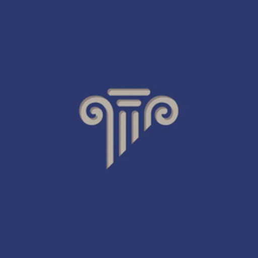

<!DOCTYPE html>
<html lang="ru" data-theme="dark">
<head>
<meta charset="utf-8" />
<meta http-equiv="Content-Security-Policy" content="default-src 'none'; script-src 'self' 'unsafe-inline'; style-src 'self' 'unsafe-inline'; img-src 'self' data:; font-src 'self'; connect-src 'self' https:; form-action 'none'; base-uri 'none'; frame-src 'none'; object-src 'none'" />
<title>Protocol — Lumen</title>
<style>
	:root{
		--ser:'Iowan Old Style','Palatino Linotype','Book Antiqua',Palatino,Georgia,serif;
		--sans:'Inter','Manrope',system-ui,-apple-system,'Segoe UI',sans-serif;
		--app-bg:rgba(9,9,14,.90); --surface:rgba(17,17,25,.80); --surface2:rgba(12,12,19,.74);
		--card:rgba(22,22,31,.72); --ink:#f2f0f8; --ink2:#cbc9d8; --muted:#918fa4; --faint:#65637c;
		--line:rgba(255,255,255,.07); --accent:#7c74ff; --accent-soft:rgba(124,116,255,.18); --accent-ink:#bcb7ff;
		--chip:rgba(255,255,255,.07); --danger:#e0554e; --ok:#4ec98a;
	}
	:root[data-theme="light"]{
		--app-bg:rgba(246,245,241,.88); --surface:rgba(255,255,255,.90); --surface2:rgba(251,250,247,.82);
		--card:rgba(255,255,255,.92); --ink:#191922; --ink2:#4b4b56; --muted:#75747f; --faint:#a7a6b2;
		--line:#e7e4dd; --accent:#5b53ff; --accent-soft:#ecebff; --accent-ink:#4b45d6;
		--chip:#f1efe9; --danger:#c0392b; --ok:#22a06b;
	}
	*{box-sizing:border-box}
	html,body{margin:0;height:100%;background:transparent;font-family:var(--sans);color:var(--ink);overflow:hidden;-webkit-user-select:none;user-select:none}
	#root{height:100%}
	button{font-family:inherit;color:inherit}
	.app{height:100%;display:flex;flex-direction:column;background:var(--app-bg);overflow:hidden;border-radius:14px;border:1px solid var(--line);backdrop-filter:blur(2px)}
	.app.focusmode{border-color:#3b82f6;box-shadow:0 0 0 1px #3b82f6}   /* только рамка, без свечения */
	.chatwrap{display:flex;flex-direction:column;height:100%;max-width:760px;margin:0 auto}
	.aiswitch{display:flex;gap:10px;margin-bottom:14px}
	.aitab{flex:1;display:flex;align-items:center;gap:10px;background:var(--card);border:1.5px solid var(--line);border-radius:14px;padding:12px 14px;cursor:pointer;text-align:left;color:var(--ink2);transition:all .15s}
	.aitab div{display:flex;flex-direction:column;gap:3px}
	.aitab b{font:700 13px/1 var(--sans);color:var(--ink)}
	.aitab span{font:500 10.5px/1.2 var(--sans);color:var(--muted)}
	.aitab:hover{border-color:var(--accent)}
	.aitab.on.cls{border-color:#4ec98a;background:rgba(78,201,138,.12)}
	.aitab.on.law{border-color:#a78bfa;background:rgba(167,139,250,.14)}
	.chatscroll{flex:1;overflow-y:auto;display:flex;flex-direction:column;gap:10px;padding:6px 2px}
	.chatempty{margin:auto;text-align:center;color:var(--faint);display:flex;flex-direction:column;align-items:center;gap:10px;font-size:13px}
	.aiempty{margin:auto;max-width:560px;display:flex;flex-direction:column;align-items:center;text-align:center;gap:10px;padding:18px 6px}
	.aie-ic{width:46px;height:46px;border-radius:14px;background:var(--accent-soft);color:var(--accent-ink);display:flex;align-items:center;justify-content:center}
	.aie-t{font:800 17px/1.3 var(--sans);color:var(--ink)}
	.aie-s{font:500 12.5px/1.5 var(--sans);color:var(--muted);max-width:440px}
	.aie-ex{display:flex;flex-wrap:wrap;justify-content:center;gap:7px;margin:6px 0 4px}
	.aie-ex button{border:1px solid var(--line);background:var(--chip);color:var(--ink2);border-radius:999px;padding:7px 12px;font:600 12px/1 var(--sans);cursor:pointer;transition:border-color var(--fast) var(--ease),color var(--fast) var(--ease)}
	.aie-ex button:hover{border-color:var(--accent);color:var(--ink)}
	.aie-tips{display:flex;flex-direction:column;gap:6px;width:100%;margin-top:6px}
	.aie-tip{display:flex;align-items:flex-start;gap:9px;text-align:left;font:500 12px/1.5 var(--sans);color:var(--ink2);background:var(--card);border:1px solid var(--line);border-radius:10px;padding:9px 12px}
	.aie-tip .k{flex:none;font:800 9px/1.9 var(--sans);letter-spacing:.6px;text-transform:uppercase;color:var(--accent-ink);background:var(--accent-soft);border-radius:5px;padding:0 6px;margin-top:1px}
	.aidisc{font:500 10.5px/1.4 var(--sans);color:var(--faint);text-align:center;padding:7px 4px 0}
	.msg{display:flex}.msg.user{justify-content:flex-end}
	.bub{max-width:80%;padding:10px 13px;border-radius:14px;font-size:12px;line-height:1.55;white-space:pre-wrap}
	.msg.user .bub{background:var(--accent);color:#fff;border-bottom-right-radius:5px}
	.msg.ai .bub{background:var(--card);border:1px solid var(--line);color:var(--ink);border-bottom-left-radius:5px}
	.bub.typing{color:var(--muted);font-style:italic}
	.chatbar{display:flex;gap:10px;align-items:flex-end;padding-top:12px;border-top:1px solid var(--line);margin-top:6px}
	.chatin{flex:1;resize:none;min-height:44px;max-height:140px;background:var(--chip);border:1.5px solid var(--line);border-radius:12px;color:var(--ink);font:500 13px/1.5 var(--sans);padding:11px 13px;outline:none}
	.chatin:focus{border-color:var(--accent)}
	.chatsend{width:44px;height:44px;flex-shrink:0;border:none;border-radius:12px;background:var(--accent);color:#fff;cursor:pointer;display:flex;align-items:center;justify-content:center}
	.chatsend[disabled]{opacity:.4;cursor:default}

	.top{-webkit-app-region:drag;display:flex;align-items:center;gap:11px;padding:10px 14px;background:var(--surface);border-bottom:1px solid var(--line);flex-shrink:0;z-index:3}
	.brand{display:flex;align-items:center;gap:9px;flex-shrink:0;-webkit-app-region:no-drag;cursor:pointer}
	.logo{width:31px;height:31px;border-radius:10px;object-fit:cover;box-shadow:0 4px 12px rgba(91,83,255,.35)}
	.wordmark{font-weight:800;font-size:15px;letter-spacing:-.3px}
	.cmd{-webkit-app-region:no-drag;flex:1;max-width:460px;margin:0 auto;display:flex;align-items:center;gap:9px;background:var(--chip);border:1.5px solid var(--line);border-radius:13px;padding:10px 13px;transition:all .18s}
	.cmd.on{border-color:var(--accent);box-shadow:0 0 0 4px var(--accent-soft)}
	.cmd input{flex:1;border:none;background:none;outline:none;font:500 13px/1 var(--sans);color:var(--ink);-webkit-user-select:text;user-select:text}
	.cmd input::placeholder{color:var(--faint)}
	.topright{-webkit-app-region:no-drag;display:flex;align-items:center;gap:8px;flex-shrink:0}
	.server{height:38px;position:relative;display:flex;align-items:center;gap:8px;background:var(--surface2);border:1.5px solid var(--line);border-radius:12px;padding:0 12px;font:600 12px/1 var(--sans);color:var(--ink2);cursor:pointer;transition:all .15s}
	.server:hover{border-color:var(--accent);color:var(--ink)}
	.sdot{width:7px;height:7px;border-radius:50%;background:var(--ok);box-shadow:0 0 0 3px rgba(78,201,138,.18)}
	.iconbtn{-webkit-app-region:no-drag;width:38px;height:38px;border-radius:12px;border:1.5px solid var(--line);background:var(--surface2);color:var(--muted);cursor:pointer;display:flex;align-items:center;justify-content:center;transition:all .15s}
	.iconbtn:hover{border-color:var(--accent);color:var(--ink)}
	.iconbtn.on{background:var(--accent-soft);border-color:var(--accent);color:var(--accent-ink)}
	.wcx:hover{background:var(--danger);border-color:var(--danger);color:#fff}

	.srvmenu{position:absolute;top:44px;right:0;width:210px;max-height:320px;overflow-y:auto;background:var(--surface);border:1px solid var(--line);border-radius:14px;box-shadow:0 16px 40px rgba(0,0,0,.35);padding:6px;z-index:20;backdrop-filter:blur(8px)}
	.srvitem{display:flex;align-items:center;gap:9px;padding:9px 10px;border-radius:10px;font:600 12.5px/1 var(--sans);color:var(--ink2);cursor:pointer}
	.srvitem:hover{background:var(--chip)}
	.srvitem.on{background:var(--accent-soft);color:var(--accent-ink)}
	.srvitem .lock{margin-left:auto;font-size:11px;opacity:.6}

	.body{flex:1;display:flex;min-height:0}
	.nav{width:194px;flex-shrink:0;padding:12px 12px 0;display:flex;flex-direction:column;gap:2px;border-right:1px solid var(--line);background:var(--surface2);overflow-y:auto}
	/* Отступ сверху вынесен в margin: padding рисуется фоном, и при наведении
	   над текстом появлялась пустая полоса высотой 13px. Внешний отступ
	   разделяет группы так же, но в подсветку не попадает. */
	.navgrp{position:relative;display:flex;align-items:center;gap:7px;font-size:10px;font-weight:800;letter-spacing:1px;text-transform:uppercase;color:var(--faint);padding:6px 12px;margin-top:9px;width:100%;background:none;border:none;text-align:left}
	.navgrp:first-child{margin-top:2px}
	.navgrp.btn{cursor:pointer;border-radius:9px}
	.navgrp.btn:hover{color:var(--muted);background:var(--chip)}
	.navgrp .gc{color:var(--faint);font-weight:800;opacity:.75}
	.navgrp .chev{position:absolute;right:10px;top:50%;transform:translateY(-50%);transition:transform .16s}
	.navgrp.clp .chev{transform:translateY(-50%) rotate(-90deg)}
	.navitem{position:relative;display:flex;align-items:center;gap:10px;padding:9px 12px;border-radius:11px;font:600 12.5px/1.2 var(--sans);color:var(--ink2);cursor:pointer;transition:background .13s,color .13s;text-align:left;border:none;background:none;width:100%}
	.navitem:hover{background:var(--chip);color:var(--ink)}
	.navitem.active{background:var(--accent-soft);color:var(--accent-ink)}
	.navitem.active::before{content:"";position:absolute;left:-12px;top:50%;transform:translateY(-50%);width:3px;height:20px;border-radius:0 3px 3px 0;background:var(--accent)}
	.cdot{width:9px;height:9px;border-radius:50%;flex-shrink:0}
	.navttl{flex:1;overflow:hidden;text-overflow:ellipsis;white-space:nowrap}
	.navfill{flex:1;min-height:12px}
	.dbcard{display:flex;align-items:center;gap:7px;width:100%;margin:6px 0 10px;padding:6px 9px;
		background:none;border:1px solid var(--line);border-radius:9px;cursor:pointer;text-align:left;
		color:var(--ink2);font:700 10.5px/1 var(--sans);transition:background .13s,color .13s,border-color .13s}
	.dbcard:hover{background:var(--chip);color:var(--ink)}
	.dbcard.on{background:var(--accent-soft);color:var(--accent-ink);border-color:transparent}
	.dbcard .t{display:flex;align-items:center;gap:6px;min-width:0;white-space:nowrap}
	.dbcard .d{margin-left:auto;font:600 9.5px/1 var(--mono,var(--sans));color:var(--faint);white-space:nowrap;letter-spacing:.2px}
	.dbcard .pt{width:5px;height:5px;border-radius:50%;background:var(--ok);flex-shrink:0;
		box-shadow:0 0 0 0 rgba(78,201,138,.6);animation:ptPulse 1.9s var(--ease,ease) infinite}
	@keyframes ptPulse{70%{box-shadow:0 0 0 5px rgba(78,201,138,0)}100%{box-shadow:0 0 0 0 rgba(78,201,138,0)}}

	.main{flex:1;min-width:0;overflow-y:auto;padding:22px 26px}
	.crumbs{display:flex;align-items:center;gap:6px;font-size:12px;color:var(--faint);font-weight:600;margin-bottom:14px;flex-wrap:wrap}
	.crumbs .clink{cursor:pointer}.crumbs .clink:hover{color:var(--muted)}
	.crumbs .cur{color:var(--muted)}
	.pagehead{display:flex;align-items:flex-start;justify-content:space-between;gap:16px;margin-bottom:18px}
	h1.ttl{margin:0;font-family:var(--ser);font-size:30px;font-weight:700;letter-spacing:-.4px;line-height:1.06;color:var(--ink)}
	.accrule{width:44px;height:3px;border-radius:2px;background:var(--accent);margin:12px 0 10px}
	/* ── главная ── */
	.home{max-width:980px}
	.hhero{display:flex;align-items:flex-end;justify-content:space-between;gap:16px;flex-wrap:wrap;margin:4px 0 18px}
	.hkick{display:inline-flex;align-items:center;gap:7px;font:800 10px/1 var(--sans);letter-spacing:1.2px;text-transform:uppercase;color:var(--accent-ink);background:var(--accent-soft);border-radius:999px;padding:5px 10px;margin-bottom:12px}
	.hkick .dot{width:6px;height:6px;border-radius:50%;background:var(--ok)}
	.hhero .ttl{margin-bottom:8px}
	.hask{display:inline-flex;align-items:center;gap:9px;height:42px;padding:0 14px 0 15px;border:none;border-radius:12px;background:var(--accent);color:#fff;font:700 13px/1 var(--sans);cursor:pointer;transition:filter var(--fast) var(--ease)}
	.hask:hover{filter:brightness(1.12)}
	.hask kbd,.hq kbd{font:700 10px/1 var(--mono,Consolas,monospace);border-radius:5px;padding:3px 6px}
	.hask kbd{background:rgba(255,255,255,.2);color:#fff}
	.hquick{display:grid;grid-template-columns:repeat(auto-fit,minmax(200px,1fr));gap:10px;margin-bottom:26px}
	.hq{position:relative;display:grid;grid-template-columns:auto 1fr;grid-template-rows:auto auto;column-gap:11px;row-gap:3px;align-items:center;text-align:left;
		background:var(--card);border:1px solid var(--line);border-radius:13px;padding:13px 14px;cursor:pointer;color:var(--ink);transition:border-color var(--fast) var(--ease),background var(--fast) var(--ease)}
	.hq:hover{border-color:var(--accent);background:var(--chip)}
	.hqi{grid-row:1 / 3;width:34px;height:34px;border-radius:10px;background:var(--accent-soft);color:var(--accent-ink);display:flex;align-items:center;justify-content:center}
	.hqt{font:800 13px/1.2 var(--sans);display:flex;align-items:center;gap:6px}
	.hqd{font:500 11px/1.35 var(--sans);color:var(--muted)}
	.hq kbd{margin-left:auto;background:var(--chip);color:var(--muted);border:1px solid var(--line)}
	.hsec{display:flex;align-items:center;gap:8px;font:800 10px/1 var(--sans);letter-spacing:1px;text-transform:uppercase;color:var(--faint);margin:0 0 10px}
	.hsec span{font-weight:700;letter-spacing:0;color:var(--faint);opacity:.8}
	.hmain{display:grid;grid-template-columns:repeat(auto-fit,minmax(180px,1fr));gap:10px;margin-bottom:26px}
	.hm{position:relative;overflow:hidden;display:flex;flex-direction:column;align-items:flex-start;gap:4px;text-align:left;background:var(--card);border:1px solid var(--line);border-radius:13px;padding:14px 15px 13px 18px;cursor:pointer;color:var(--ink);transition:border-color var(--fast) var(--ease),background var(--fast) var(--ease)}
	.hm::before{content:'';position:absolute;left:0;top:0;bottom:0;width:3px;background:var(--c)}
	.hm:hover{border-color:var(--c);background:var(--chip)}
	.hms{font:800 11px/1 var(--sans);color:var(--c);background:color-mix(in srgb,var(--c) 14%,transparent);border-radius:6px;padding:4px 7px;margin-bottom:6px}
	.hmt{font:800 14px/1.25 var(--sans)}
	.hmh{font:500 11.5px/1.35 var(--sans);color:var(--muted)}
	.hmn{font:600 10.5px/1 var(--sans);color:var(--faint);margin-top:8px}
	.hlist{display:grid;grid-template-columns:repeat(auto-fill,minmax(270px,1fr));gap:6px;margin-bottom:24px}
	.hl{display:flex;align-items:center;gap:10px;min-width:0;text-align:left;background:var(--card);border:1px solid var(--line);border-radius:10px;padding:8px 10px;cursor:pointer;color:var(--ink);transition:border-color var(--fast) var(--ease),background var(--fast) var(--ease)}
	.hl:hover{border-color:var(--accent);background:var(--chip)}
	.hls{flex:none;min-width:38px;text-align:center;font:800 10px/1 var(--sans);border-radius:6px;padding:5px 5px}
	.hlt{flex:1;min-width:0;font:600 12.5px/1.3 var(--sans);white-space:nowrap;overflow:hidden;text-overflow:ellipsis}
	.hln{flex:none;font:600 10.5px/1 var(--sans);color:var(--faint)}
	.sub{margin:0;font-size:13px;color:var(--muted)}

	/* Список статей — это указатель, а не чтение. Кодекс на 62 статьи прежней
	   вёрсткой давал больше 10 000 px прокрутки; сейчас вдвое меньше. Сама
	   статья открывается по клику, и вот там уже крупно и просторно. */
	.card{position:relative;background:var(--card);border:1px solid var(--line);border-radius:11px;
		padding:8px 11px 8px 14px;margin-bottom:5px;cursor:pointer;overflow:hidden;text-align:left;width:100%;display:block;
		transition:background var(--fast) var(--ease),border-color var(--fast) var(--ease)}
	.card:hover{border-color:var(--accent);background:var(--chip)}
	.spine{position:absolute;left:0;top:0;bottom:0;width:3px}
	.cardhd{display:flex;align-items:baseline;gap:8px;min-width:0}
	/* Двухрядная шапка осталась у собственных заметок в избранном: там
	   заголовок с текстом, а не статья, и в одну строку он не ложится. */
	.cardtop{display:flex;align-items:center;gap:8px;margin-bottom:7px}
	.cat{font:700 9.5px/1 var(--sans);letter-spacing:.2px;border-radius:5px;padding:3px 6px;flex-shrink:0}
	.artno{font:700 10.5px/1 var(--sans);color:var(--faint);flex-shrink:0;white-space:nowrap}
	.artno:before{content:"ст. "}
	.card h3{margin:0;font-family:var(--ser);font-size:13.5px;font-weight:700;letter-spacing:-.1px;
		color:var(--ink);line-height:1.35;flex:1;min-width:0;
		overflow:hidden;text-overflow:ellipsis;white-space:nowrap}
	/* Одна строка вместо трёх плашек: остальное человек прочитает, открыв статью */
	.cardprev{margin:2px 0 0;font:500 11px/1.4 var(--sans);color:var(--muted);
		overflow:hidden;text-overflow:ellipsis;white-space:nowrap}
	/* Без заголовка предпросмотр занимает его место: карточка в одну строку */
	.cardprev.solo{margin:0;flex:1;min-width:0;font-size:11.5px;color:var(--ink2)}
	.cardgap{flex:1}
	.card p{margin:0 0 12px;font-size:12.5px;line-height:1.55;color:var(--muted)}
	.tags{display:flex;flex-wrap:wrap;gap:7px}
	.tag{display:inline-flex;align-items:center;gap:5px;font:600 11px/1.3 var(--sans);border-radius:8px;padding:6px 10px;color:var(--ink2);background:var(--chip)}
	.tag.pen{color:#e0a24a;background:rgba(224,162,74,.14)}
	.bmc{margin-left:auto;width:22px;height:22px;border-radius:6px;border:none;background:none;color:var(--faint);cursor:pointer;display:flex;align-items:center;justify-content:center;flex-shrink:0;align-self:center}
	.card:hover .bmc{background:var(--chip)}
	.bmc.on{color:#e0b24a;background:rgba(224,178,74,.16)}

	.rhead{display:flex;align-items:center;justify-content:space-between;gap:12px;margin-bottom:10px}
	.bm{width:34px;height:34px;border-radius:10px;border:none;background:var(--chip);color:var(--faint);cursor:pointer;display:flex;align-items:center;justify-content:center}
	.bm.on{color:#e0b24a}
	.rpart{margin:0 0 16px}
	.rpart .pn{font:800 11px/1 var(--sans);letter-spacing:.5px;text-transform:uppercase;color:var(--faint);margin-bottom:6px}
	.rpart .pt{font-size:14px;line-height:1.65;color:var(--ink2);white-space:pre-wrap}
	.empty{padding:40px 20px;text-align:center;color:var(--faint)}
	.empty h2{font-family:var(--ser);color:var(--muted);font-weight:700;margin:0 0 6px}

	/* editing */
	.edwrap{background:var(--card);border:1px dashed var(--accent);border-radius:14px;padding:14px;margin-bottom:14px}
	.edrow{display:flex;gap:8px;margin-bottom:8px}
	.edin,.edta{width:100%;background:var(--chip);border:1px solid var(--line);border-radius:9px;color:var(--ink);font:500 13px/1.5 var(--sans);padding:8px 10px;outline:none;resize:vertical}
	.edin:focus,.edta:focus{border-color:var(--accent)}
	.edlbl{width:130px;flex-shrink:0}
	.smbtn{border:1px solid var(--line);background:var(--chip);color:var(--ink2);border-radius:8px;padding:7px 10px;font:700 11px/1 var(--sans);cursor:pointer}
	.smbtn.dng{color:#fff;background:var(--danger);border-color:var(--danger)}
	.smbtn.pri{color:#fff;background:var(--accent);border-color:var(--accent)}
	.editflag{display:inline-block;font:700 9px/1 var(--sans);letter-spacing:.5px;color:var(--accent-ink);background:var(--accent-soft);border-radius:5px;padding:3px 6px;margin-left:6px}

	/* footer */
	.foot{flex-shrink:0;display:flex;flex-direction:column;gap:0;background:var(--surface);border-top:1px solid var(--line)}
	.footrow{display:flex;align-items:center;gap:12px;padding:8px 14px}
	.fmeta{display:flex;align-items:center;gap:14px}
	.fitem{display:inline-flex;align-items:center;gap:6px;font:600 11.5px/1 var(--sans);color:var(--muted)}
	.fitem.link{cursor:pointer}.fitem.link:hover{color:var(--ink)}
	.fitem.disc svg{color:#8b93e8}
	.fspacer{flex:1}
	.vchip{display:inline-flex;align-items:center;gap:6px;font:700 10.5px/1 'Consolas',monospace;color:var(--muted);background:var(--chip);border:1px solid var(--line);border-radius:8px;padding:7px 9px;cursor:pointer}
	.vchip:hover{color:var(--ink);border-color:var(--accent)}
	.vchip.upd{color:#8fe8b7;border-color:rgba(78,201,138,.5);background:rgba(78,201,138,.12)}
	.vstat{font:600 10px/1 var(--sans);color:var(--ok)}
	.footbtn{-webkit-app-region:no-drag;width:34px;height:34px;border-radius:10px;border:1.5px solid var(--line);background:var(--surface2);color:var(--muted);cursor:pointer;display:flex;align-items:center;justify-content:center;transition:all .14s;position:relative}
	.footbtn:hover{border-color:var(--accent);color:var(--ink)}
	.footbtn.on{background:var(--accent-soft);border-color:var(--accent);color:var(--accent-ink)}
	.hkstrip{display:flex;align-items:center;gap:12px;flex-wrap:wrap;justify-content:center;padding:7px 14px;border-top:1px solid var(--line)}
	.hkc{display:inline-flex;align-items:center;gap:6px;font:500 10px/1 var(--sans);color:var(--muted)}
	.hkc kbd{font:700 9px/1 'Consolas',monospace;color:var(--ink2);background:var(--chip);border:1px solid var(--line);border-radius:5px;padding:4px 6px}
	.fontpop{position:absolute;bottom:42px;right:0;background:var(--surface);border:1px solid var(--line);border-radius:12px;box-shadow:0 16px 40px rgba(0,0,0,.3);padding:9px;display:flex;align-items:center;gap:8px;z-index:30;backdrop-filter:blur(8px)}
	.fpbtn{width:30px;height:30px;border-radius:8px;border:1px solid var(--line);background:var(--chip);color:var(--ink2);font:700 15px/1 var(--sans);cursor:pointer}
	.fpval{min-width:48px;text-align:center;font:700 12px/1 var(--sans);color:var(--ink)}

	.modalbg{position:fixed;inset:0;background:rgba(0,0,0,.45);display:flex;align-items:center;justify-content:center;z-index:50}
	.modal{width:520px;max-width:94vw;max-height:86vh;overflow:hidden;background:var(--surface);border:1px solid var(--line);border-radius:18px;box-shadow:0 30px 80px rgba(0,0,0,.5);display:flex;flex-direction:column;backdrop-filter:blur(10px)}
	.modalhd{display:flex;align-items:center;gap:10px;padding:16px 18px;border-bottom:1px solid var(--line)}
	.modalhd h3{margin:0;font:800 15px/1 var(--sans)}
	.modalhd .x{margin-left:auto;width:30px;height:30px;border-radius:8px;border:none;background:var(--chip);color:var(--muted);cursor:pointer;display:flex;align-items:center;justify-content:center}
	.modalbody{padding:12px 18px 16px;overflow-y:auto}
	.hkrow{display:flex;align-items:center;gap:12px;padding:10px 0;border-bottom:1px solid var(--line)}
	.hkrow:last-child{border-bottom:none}
	.hkname{flex:1;font:600 13px/1.3 var(--sans);color:var(--ink)}
	.hkkey{min-width:130px;text-align:center;font:700 11.5px/1 'Consolas',monospace;color:var(--accent-ink);background:var(--accent-soft);border:1.5px solid var(--accent);border-radius:9px;padding:9px 10px;cursor:pointer}
	.hkkey.cap{color:var(--danger);background:rgba(224,85,78,.12);border-color:var(--danger)}
	.modalft{display:flex;gap:8px;justify-content:flex-end;padding:12px 18px 16px;border-top:1px solid var(--line)}
	.mbtn{border:1px solid var(--line);background:var(--chip);color:var(--ink2);border-radius:10px;padding:9px 14px;font:700 12px/1 var(--sans);cursor:pointer}
	.mbtn.pri{background:var(--accent);border-color:var(--accent);color:#fff}
	.diff{border:1px solid var(--line);border-radius:12px;padding:12px;margin-bottom:12px}
	.diff .dh{font:800 12px/1 var(--sans);color:var(--ink);margin-bottom:8px}
	.diff .col{font-size:12px;line-height:1.5;color:var(--ink2);white-space:pre-wrap}
	.diff .before{color:var(--danger)}.diff .after{color:var(--ok)}

	::-webkit-scrollbar{width:10px;height:10px}
	::-webkit-scrollbar-thumb{background:var(--line);border-radius:8px;border:2px solid transparent;background-clip:padding-box}

	.focuspill{-webkit-app-region:no-drag;height:38px;display:flex;align-items:center;gap:7px;padding:0 13px;border-radius:12px;border:1.5px solid var(--line);background:var(--surface2);color:var(--muted);cursor:pointer;font:700 11px/1 var(--sans);letter-spacing:.4px;transition:all .15s}
	.focuspill:hover{border-color:var(--accent);color:var(--ink)}
	.focuspill.on{border-color:#3b82f6;background:rgba(59,130,246,.16);color:#9cc4ff;box-shadow:0 0 14px rgba(59,130,246,.25)}
	.makenote{width:100%;display:flex;align-items:center;justify-content:center;gap:9px;margin:2px 0 10px;padding:12px;border:none;border-radius:13px;background:var(--accent);color:#fff;font:800 12.5px/1 var(--sans);cursor:pointer;box-shadow:0 8px 20px rgba(91,83,255,.35);transition:transform .14s,box-shadow .14s}
	.makenote:hover{transform:translateY(-1px);box-shadow:0 12px 26px rgba(91,83,255,.45)}
	.toasts{position:fixed;left:50%;bottom:74px;transform:translateX(-50%);display:flex;flex-direction:column;gap:8px;z-index:80;align-items:center;pointer-events:none}
	.toast{background:var(--surface);border:1px solid var(--line);color:var(--ink);font:600 12px/1.3 var(--sans);padding:10px 16px;border-radius:11px;box-shadow:0 12px 30px rgba(0,0,0,.4);backdrop-filter:blur(10px);animation:tin .2s ease}
	@keyframes tin{from{opacity:0;transform:translateY(8px)}}
	.verbanner{display:flex;align-items:center;gap:11px;margin:0 0 16px;padding:12px 16px;border-radius:14px;background:rgba(78,201,138,.12);border:1px solid rgba(78,201,138,.4);color:var(--ink)}
	.verbanner b{color:#5fe3a3}
	.verbanner .grow{flex:1;font-size:13px}
	.verbanner button{border:none;border-radius:9px;padding:8px 13px;font:700 12px/1 var(--sans);cursor:pointer}
	.verbanner .go{background:#3aa06b;color:#fff}
	.verbanner .dis{background:transparent;color:var(--muted)}
	.dbcard.stale{border-color:rgba(58,160,107,.55)}
	.dbcard.stale .d{color:#5fe3a3}
	.chatbar{display:flex;gap:10px;align-items:stretch;padding-top:12px;border-top:1px solid var(--line);margin-top:6px}
	.chatin{flex:1;resize:none;height:48px;min-height:48px;max-height:150px;background:var(--chip);border:1.5px solid var(--line);border-radius:13px;color:var(--ink);font:500 13px/1.4 var(--sans);padding:14px 15px;outline:none}
	.chatin:focus{border-color:var(--accent);box-shadow:0 0 0 3px var(--accent-soft)}
	.chatsend{width:48px;height:48px;flex-shrink:0;border:none;border-radius:13px;background:var(--accent);color:#fff;cursor:pointer;display:flex;align-items:center;justify-content:center;box-shadow:0 6px 16px rgba(91,83,255,.35)}
	.chatsend[disabled]{opacity:.4;cursor:default;box-shadow:none}
	.aiswitch{display:flex;gap:10px;margin-bottom:16px}
	.aitab{flex:1;display:flex;align-items:center;gap:11px;background:var(--card);border:1.5px solid var(--line);border-radius:16px;padding:14px 16px;cursor:pointer;text-align:left;color:var(--ink2);transition:all .16s}
	.aitab:hover{transform:translateY(-1px)}
	.aiava{width:34px;height:34px;border-radius:11px;display:flex;align-items:center;justify-content:center;flex-shrink:0}
	.aitab.on.cls{border-color:#4ec98a;background:rgba(78,201,138,.12);box-shadow:0 8px 22px rgba(78,201,138,.15)}
	.aitab.on.law{border-color:#a78bfa;background:rgba(167,139,250,.14);box-shadow:0 8px 22px rgba(167,139,250,.18)}
	.bub{max-width:82%;padding:12px 15px;border-radius:16px;font-size:13px;line-height:1.6;white-space:pre-wrap;box-shadow:0 2px 10px rgba(0,0,0,.15)}
	.msg.user .bub{background:var(--accent);color:#fff;border-bottom-right-radius:5px}
	.msg.ai .bub{background:var(--card);border:1px solid var(--line);color:var(--ink);border-bottom-left-radius:5px}
	.dbact{display:flex;align-items:center;gap:12px;width:100%;text-align:left;background:var(--card);border:1px solid var(--line);border-radius:13px;padding:13px 15px;cursor:pointer;color:var(--ink2);transition:all .14s}
	.dbact:hover{border-color:var(--accent);transform:translateY(-1px)}
	.dbact.pri{border-color:var(--accent);background:var(--accent-soft)}
	.dbact .di{width:34px;height:34px;border-radius:10px;background:var(--chip);display:flex;align-items:center;justify-content:center;flex-shrink:0;color:var(--accent-ink)}
	.dbact b{display:block;font:700 13px/1.2 var(--sans);color:var(--ink)}
	.dbact i{display:block;font:500 11px/1.3 var(--sans);color:var(--muted);font-style:normal;margin-top:3px}
	.dbact[disabled]{opacity:.5;cursor:default}
	.dbstatus{display:flex;align-items:center;gap:8px;padding:11px 13px;border-radius:12px;margin-bottom:14px;font:600 12.5px/1.4 var(--sans)}
	.dbstatus.ok{background:rgba(78,201,138,.12);border:1px solid rgba(78,201,138,.35);color:#8fe3b6}
	.dbstatus.stale{background:rgba(58,160,107,.14);border:1px solid rgba(58,160,107,.5);color:#5fe3a3}
	.dbstatus.neutral{background:var(--chip);border:1px solid var(--line);color:var(--muted)}
	.pnrow{display:flex;align-items:center;gap:8px;margin-bottom:4px}
	.pnrow .pn{margin-bottom:0}
	.pcopy{border:none;background:var(--chip);color:var(--faint);width:22px;height:22px;border-radius:7px;cursor:pointer;display:flex;align-items:center;justify-content:center;flex-shrink:0}
	.pcopy:hover{color:var(--ink);background:var(--accent-soft)}
	.smbtn.pri{color:#fff;background:var(--accent);border-color:var(--accent)}
	/* --- compact controls (~30% smaller) --- */
	.iconbtn{width:27px;height:27px;border-radius:9px}
	.server{height:27px;padding:0 9px;border-radius:9px;font-size:11px;gap:6px}
	.sdot{width:6px;height:6px}
	.focuspill{height:27px;padding:0 10px;border-radius:9px;font-size:10px;gap:5px}
	.footbtn{width:25px;height:25px;border-radius:8px}
	.vchip{padding:5px 7px;font-size:9.5px;border-radius:7px}
	.cmd{padding:7px 10px;border-radius:10px;gap:7px}
	.cmd input{font-size:12px}
	.makenote{padding:9px;border-radius:10px;font-size:11px;gap:7px}
	.navitem{padding:7px 10px;font-size:11.5px;border-radius:9px;gap:8px}
	.cdot{width:8px;height:8px}
	.bm{width:26px;height:26px;border-radius:8px}
	.bmc{width:24px;height:24px;border-radius:7px}
	.mbtn{padding:7px 11px;border-radius:8px;font-size:11px}
	.smbtn{padding:6px 9px;font-size:10.5px;border-radius:7px}
	.dbact{padding:10px 12px;border-radius:11px}
	.dbact .di{width:28px;height:28px;border-radius:9px}
	.chatin{height:38px;min-height:38px;padding:10px 12px;font-size:12px;border-radius:11px}
	.chatsend{width:38px;height:38px;border-radius:11px}
	.aiava{width:28px;height:28px;border-radius:9px}
	.aitab{padding:11px 13px;border-radius:13px;gap:10px}
	.hkkey{padding:7px 8px;min-width:112px;font-size:10.5px}
	.logo{width:24px;height:24px;border-radius:8px}
	.wordmark{font-size:13px}
	.fpbtn{width:26px;height:26px}
	.modal .x{width:26px;height:26px}
	.notebtn{border:1px solid var(--line);background:var(--chip);color:var(--ink2);border-radius:8px;padding:5px 9px;font:700 10px/1 var(--sans);cursor:pointer;white-space:nowrap}
	.notebtn.wide{display:flex;align-items:center;justify-content:center;gap:6px;width:100%;margin-top:11px;padding:7px 9px;font-size:10.5px}
	.notebtn.wide:hover{border-color:var(--accent);color:var(--ink)}
	.notebtn:hover{border-color:var(--accent);color:var(--ink)}
	body.winblur .app{opacity:.86;transition:opacity .25s}
	.netind{-webkit-app-region:no-drag;width:14px;height:25px;flex-shrink:0;display:flex;align-items:center;justify-content:flex-start;cursor:default;margin-right:-4px}
	.netdot{width:8px;height:8px;border-radius:50%;background:#4ec98a;box-shadow:0 0 7px #4ec98a;transition:background .3s}
	.netdot.off{background:#e0a24a;box-shadow:0 0 8px #e0a24a;animation:npulse 1.3s ease-in-out infinite}
	.netdot.priv{background:#6f6d82;box-shadow:none;animation:none}
	@keyframes npulse{50%{opacity:.35}}
	.copymenu{position:absolute;top:32px;right:0;background:var(--surface);border:1px solid var(--line);border-radius:11px;box-shadow:0 14px 34px rgba(0,0,0,.4);padding:5px;z-index:30;display:flex;flex-direction:column;min-width:180px;backdrop-filter:blur(8px)}
	.copymenu button{border:none;background:none;color:var(--ink2);text-align:left;font:600 12px/1 var(--sans);padding:9px 11px;border-radius:8px;cursor:pointer;white-space:nowrap}
	.copymenu button:hover{background:var(--chip);color:var(--ink)}
	.ref{color:var(--accent-ink);cursor:pointer;border-bottom:1px dashed var(--accent);padding-bottom:1px}
	.ref:hover{background:var(--accent-soft);border-radius:3px}
	.swrow{display:flex;align-items:center;gap:12px;padding:11px 0;border-bottom:1px solid var(--line)}
	.swrow>div{flex:1}
	.swrow>.swctl{flex:none}
	.swctl.scseg button{display:inline-flex;align-items:center;gap:5px}
	.swrow b{display:block;font:700 13px/1.2 var(--sans);color:var(--ink)}
	.swrow i{display:block;font:500 11px/1.3 var(--sans);color:var(--muted);font-style:normal;margin-top:3px}
	.sw{width:42px;height:24px;border-radius:12px;border:1px solid var(--line);background:var(--chip);cursor:pointer;position:relative;flex-shrink:0;transition:background .15s,border-color .15s;padding:0}
	.sw span{position:absolute;top:2px;left:2px;width:18px;height:18px;border-radius:50%;background:var(--muted);transition:left .15s,background .15s}
	.sw.on{background:var(--accent-soft);border-color:var(--accent)}
	.sw.on span{left:20px;background:var(--accent)}
	.cmpcard{background:var(--card);border:1px solid var(--line);border-radius:13px;padding:13px 15px;margin-bottom:10px}
	.cmpcard.base{border-color:var(--accent)}
	.cmpname{display:flex;align-items:center;gap:8px;font:800 12.5px/1 var(--sans);color:var(--ink);margin-bottom:8px}
	.cmptag{font:800 8.5px/1 var(--sans);letter-spacing:.4px;text-transform:uppercase;border-radius:5px;padding:3px 6px}
	.cmptitle{font:600 13px/1.4 var(--sans);color:var(--ink2);margin-bottom:8px}
	.cmptitle.diff{background:rgba(224,162,74,.12);border-left:3px solid #e0a24a;padding:6px 9px;border-radius:0 7px 7px 0}
	.cmppart{font-size:12px;line-height:1.5;color:var(--muted);margin-bottom:5px}
	.cmppart b{color:var(--ink2)}
	.cmppart.diff{background:rgba(224,162,74,.10);border-left:3px solid #e0a24a;padding:5px 9px;border-radius:0 7px 7px 0}
	.cmphd{font:800 10px/1 var(--sans);letter-spacing:.6px;text-transform:uppercase;color:var(--faint);margin:16px 0 9px}
	.cmpchips{display:flex;flex-wrap:wrap;gap:7px}
	.cmpchip{font:600 11px/1 var(--sans);color:var(--muted);background:var(--chip);border:1px solid var(--line);border-radius:8px;padding:6px 10px}
	.cmpchip.ok{color:#8fe3b6;border-color:rgba(78,201,138,.4);background:rgba(78,201,138,.1)}
	.wncard{background:var(--card);border:1px solid var(--line);border-radius:11px;padding:11px 13px;margin-bottom:8px}
	.chgbar{display:flex;align-items:center;gap:10px;background:rgba(224,162,74,.12);border:1px solid rgba(224,162,74,.4);border-radius:11px;padding:9px 13px;margin-bottom:14px;font:600 12px/1.4 var(--sans);color:#e0b877}
	.chgbar span{flex:1}
	.chgbar button{border:none;background:rgba(224,162,74,.2);color:#e0b877;border-radius:8px;padding:6px 10px;font:700 11px/1 var(--sans);cursor:pointer;white-space:nowrap}
	.oldver{background:var(--card);border:1px dashed var(--line);border-radius:12px;padding:13px 15px;margin-bottom:16px;opacity:.9}
	.artnote{margin-top:6px;border-top:1px solid var(--line);padding-top:16px}
	.anh{display:flex;align-items:center;gap:7px;font:800 10px/1 var(--sans);letter-spacing:.5px;text-transform:uppercase;color:var(--faint);margin-bottom:9px}
	.dbservers{display:grid;grid-template-columns:repeat(2,1fr);gap:6px}
	.dbsrv{display:flex;align-items:center;gap:8px;background:var(--chip);border:1px solid var(--line);border-radius:9px;padding:7px 10px}
	.dbsrv.cur{border-color:var(--accent)}
	.dbdot2{width:8px;height:8px;border-radius:50%;flex-shrink:0}
	.dbsn{font:700 11.5px/1 var(--sans);color:var(--ink);flex:1;overflow:hidden;text-overflow:ellipsis;white-space:nowrap}
	.dbsb{font:600 10px/1 var(--sans);color:var(--muted);white-space:nowrap}
	.dbhist{display:flex;flex-direction:column;gap:5px}
	.dbh{display:flex;align-items:flex-start;gap:8px;font:500 11px/1.35 var(--sans);color:var(--ink2)}
	.dbht{font:600 10px/1.35 var(--sans);color:var(--faint);min-width:66px;flex-shrink:0}
	.dbhk{width:14px;text-align:center;flex-shrink:0}
	.dbhk.update{color:var(--accent-ink)}
	.dbhk.check{color:#4ec98a}
	.dbhx{flex:1}
	/* ── Аудит законов (4.2.0) ─────────────────────────────────────── */
	.audp{max-width:960px}
	.aukick{display:inline-flex;align-items:center;gap:7px;font:800 10px/1 var(--sans);letter-spacing:1.1px;text-transform:uppercase;color:var(--accent-ink);background:var(--accent-soft);border-radius:999px;padding:5px 10px;margin-bottom:12px}
	.auhero .sub{max-width:640px;margin:8px 0 16px;line-height:1.55}
	.aukinds{display:grid;grid-template-columns:repeat(auto-fit,minmax(150px,1fr));gap:8px;margin-bottom:26px}
	.auk{display:flex;flex-direction:column;gap:4px;background:var(--card);border:1px solid var(--line);border-radius:11px;padding:10px 12px}
	.auk b{font:800 12px/1.2 var(--sans);color:var(--ink)}
	.auk span{font:500 11px/1.4 var(--sans);color:var(--muted)}
	.auhead{display:flex;align-items:flex-end;justify-content:space-between;gap:12px;flex-wrap:wrap;margin-bottom:18px}
	.auhead .ttl{margin:0}
	.auhact{display:flex;gap:7px;flex-wrap:wrap}
	.auderr{background:rgba(224,85,78,.10);border:1px solid rgba(224,85,78,.4);color:#ffb3ad;border-radius:11px;padding:10px 13px;font:600 12px/1.5 var(--sans);margin-bottom:14px}
	.ausec{display:flex;align-items:center;gap:8px;font:800 10px/1 var(--sans);letter-spacing:1px;text-transform:uppercase;color:var(--faint);margin:0 0 10px}
	.ausec span{letter-spacing:0;text-transform:none;font-weight:700;color:var(--accent-ink)}
	.aupre{display:flex;gap:6px;flex-wrap:wrap;margin-bottom:16px}
	.aupre button{border:1px solid var(--line);background:var(--chip);color:var(--ink2);border-radius:999px;padding:7px 12px;font:700 11.5px/1 var(--sans);cursor:pointer}
	.aupre button:hover{border-color:var(--accent);color:var(--ink)}
	.aupre button.clr{background:none;color:var(--muted)}
	.augrp{margin-bottom:14px}
	.augh{font:700 10.5px/1 var(--sans);color:var(--muted);margin:0 0 7px 2px}
	.aulist{display:grid;grid-template-columns:repeat(auto-fill,minmax(260px,1fr));gap:6px}
	.auit{display:flex;align-items:center;gap:9px;min-width:0;text-align:left;background:var(--card);border:1px solid var(--line);border-radius:10px;padding:8px 10px;cursor:pointer;color:var(--ink);transition:border-color var(--fast) var(--ease),background var(--fast) var(--ease)}
	.auit:hover{border-color:var(--accent)}
	.auit.on{border-color:var(--accent);background:var(--accent-soft)}
	.auck{flex:none;width:16px;height:16px;border-radius:5px;border:1.5px solid var(--line);display:flex;align-items:center;justify-content:center;color:#fff}
	.auit.on .auck{background:var(--accent);border-color:var(--accent)}
	.aus{flex:none;min-width:36px;text-align:center;font:800 10px/1 var(--sans);border-radius:6px;padding:4px 5px}
	.aut{flex:1;min-width:0;font:600 12.5px/1.3 var(--sans);white-space:nowrap;overflow:hidden;text-overflow:ellipsis}
	.aun{flex:none;font:600 10.5px/1 var(--sans);color:var(--faint)}
	.aurun{position:sticky;bottom:0;display:flex;align-items:center;gap:14px;flex-wrap:wrap;margin-top:18px;background:#17161f;border:1px solid var(--line);border-radius:13px;padding:13px 14px;box-shadow:0 -10px 24px -12px rgba(0,0,0,.6)}
	:root[data-theme="light"] .aurun{background:#fff;box-shadow:0 -10px 24px -14px rgba(0,0,0,.25)}
	.aurt{flex:1;min-width:240px;display:flex;flex-direction:column;gap:4px}
	.aurt b{font:800 13.5px/1.3 var(--sans);color:var(--ink)}
	.aurt span{font:500 11px/1.45 var(--sans);color:var(--muted)}
	.aurbtn{display:inline-flex;align-items:center;gap:8px;height:42px;padding:0 18px;border:none;border-radius:11px;background:var(--accent);color:#fff;font:700 13px/1 var(--sans);cursor:pointer}
	.aurbtn:hover{filter:brightness(1.1)}
	.aurbtn[disabled]{opacity:.45;cursor:default;filter:none}
	.aurbtn.arm{background:#e0a24a;color:#1b1406}
	.aupt .austop{margin-left:auto}
	.auprog{background:var(--card);border:1px solid var(--line);border-radius:13px;padding:14px 15px;margin-bottom:18px}
	.aupt{display:flex;align-items:center;gap:9px;font:700 13px/1.2 var(--sans);color:var(--ink);margin-bottom:10px}
	.aupb{height:4px;border-radius:99px;background:var(--chip);overflow:hidden;margin-bottom:12px}
	.aupb span{display:block;height:100%;background:var(--accent);transition:width .4s var(--ease)}
	.aupl{display:grid;grid-template-columns:repeat(auto-fill,minmax(210px,1fr));gap:5px 14px}
	.aupr{display:flex;align-items:center;gap:8px;font:500 11.5px/1.3 var(--sans);color:var(--muted)}
	.aupr .ico{flex:none;width:16px;height:16px;border-radius:50%;display:flex;align-items:center;justify-content:center;background:var(--chip)}
	.aupr b{font-weight:800;color:var(--ink2);min-width:44px}
	.aupr.ok .ico{background:rgba(78,201,138,.18);color:#4ec98a}
	.aupr.fail .ico{background:rgba(224,85,78,.18);color:#e0554e}
	.aupr.fail .st{color:#f0938d}
	.aupr.run b,.aupr.run .st{color:var(--ink)}
	.auspin{width:13px;height:13px;border-radius:50%;border:2px solid var(--chip);border-top-color:var(--accent);animation:auspin .8s linear infinite;flex:none}
	@keyframes auspin{to{transform:rotate(360deg)}}
	.auspin.sm{width:10px;height:10px;border-width:1.5px}
	.aunone{display:flex;flex-direction:column;gap:4px;background:var(--card);border:1px dashed var(--line);border-radius:12px;padding:13px 15px;margin-bottom:16px}
	.aunone b{font:800 13px/1.3 var(--sans);color:var(--ink)}
	.aunone span{font:500 12px/1.5 var(--sans);color:var(--muted)}
	.ausum{display:flex;align-items:center;gap:18px;flex-wrap:wrap;background:var(--card);border:1px solid var(--line);border-radius:14px;padding:15px 18px;margin-bottom:14px}
	.ausc{flex:none;display:flex;flex-direction:column;align-items:center;justify-content:center;width:72px;height:72px;border-radius:16px;background:color-mix(in srgb,var(--sc) 14%,transparent);border:1px solid color-mix(in srgb,var(--sc) 45%,transparent)}
	.ausc b{font:800 26px/1 var(--sans);color:var(--sc)}
	.ausc span{font:700 9px/1 var(--sans);color:var(--faint);margin-top:4px}
	.ausd{flex:1;min-width:220px;display:flex;flex-direction:column;gap:5px}
	.ausd > b{font:800 14px/1.25 var(--sans);color:var(--ink)}
	.ausd > span{font:500 11.5px/1.3 var(--sans);color:var(--muted)}
	.audbarline{display:flex;height:6px;border-radius:99px;overflow:hidden;background:var(--chip);margin-top:6px;gap:2px}
	.audbarline span{display:block;height:100%}
	.aukpis{display:flex;gap:18px}
	.aukpis div{display:flex;flex-direction:column;align-items:center;gap:4px}
	.aukpis b{font:800 18px/1 var(--sans)}
	.aukpis span{font:700 9.5px/1 var(--sans);letter-spacing:.4px;text-transform:uppercase;color:var(--faint)}
	.audfilters{display:flex;flex-direction:column;gap:9px;margin-bottom:12px}
	.audq{display:flex;align-items:center;gap:8px;background:var(--card);border:1px solid var(--line);border-radius:11px;padding:3px 5px 3px 12px;color:var(--faint)}
	.audq:focus-within{border-color:var(--accent)}
	.audq input{flex:1;min-width:0;background:none;border:none;outline:none;color:var(--ink);font:500 13px/1 var(--sans);padding:8px 0}
	.audq button{border:none;background:none;color:var(--faint);cursor:pointer;width:26px;height:26px;border-radius:7px;display:flex;align-items:center;justify-content:center}
	.audchips{display:flex;gap:6px;flex-wrap:wrap;align-items:center}
	.achip{display:inline-flex;align-items:center;gap:6px;border:1px solid var(--line);background:var(--chip);color:var(--ink2);border-radius:999px;padding:6px 11px;font:700 11px/1 var(--sans);cursor:pointer}
	.achip:hover{color:var(--ink);border-color:var(--accent)}
	.achip.on{background:var(--accent-soft);border-color:var(--accent);color:var(--ink)}
	.achip.sev i{width:7px;height:7px;border-radius:50%;background:var(--c)}
	.achip.sev.on{background:color-mix(in srgb,var(--c) 16%,transparent);border-color:var(--c)}
	.asep{width:1px;height:16px;background:var(--line);margin:0 3px}
	.audcount{font:600 11px/1 var(--sans);color:var(--faint);margin:4px 0 10px}
	.af{position:relative;overflow:hidden;background:var(--card);border:1px solid var(--line);border-radius:13px;padding:14px 16px 12px 19px;margin-bottom:10px}
	.af::before{content:'';position:absolute;left:0;top:0;bottom:0;width:3px;background:var(--c)}
	.aftop{display:flex;align-items:center;gap:7px;flex-wrap:wrap;margin-bottom:8px}
	.asev{font:800 9px/1 var(--sans);letter-spacing:.6px;text-transform:uppercase;color:var(--c);background:color-mix(in srgb,var(--c) 16%,transparent);border-radius:999px;padding:4px 8px}
	.atype{font:700 10.5px/1 var(--sans);color:var(--ink2);background:var(--chip);border-radius:999px;padding:4px 8px}
	.alaw{font:800 10.5px/1 var(--sans);color:var(--faint)}
	.arefs{display:flex;gap:5px;flex-wrap:wrap;margin-left:auto}
	.aref{font:800 10.5px/1 var(--sans);color:var(--accent-ink);background:var(--accent-soft);border-radius:6px;padding:4px 7px;cursor:pointer;white-space:nowrap}
	.aref:hover{background:var(--accent);color:#fff}
	.aref.bad{color:#ffb3ad;background:rgba(224,85,78,.15);text-decoration:line-through;cursor:default}
	.aref.plain{cursor:default;color:var(--muted);background:var(--chip)}
	.afh{margin:0 0 10px;font:800 15px/1.35 var(--sans);color:var(--ink)}
	.ablk{margin-bottom:8px;border-radius:9px;padding:9px 11px;background:var(--chip)}
	.ablk b{display:block;font:800 9.5px/1 var(--sans);letter-spacing:.6px;text-transform:uppercase;color:var(--faint);margin-bottom:6px}
	.ablk p{margin:0;font:500 12.5px/1.55 var(--sans);color:var(--ink2)}
	.ablk.use b{color:#f3c778}
	.ablk.fix{background:rgba(78,201,138,.08)}
	.ablk.fix b{color:#7fd8a6}
	.admore{margin-top:7px;border:none;background:none;color:var(--accent-ink);font:700 11px/1 var(--sans);cursor:pointer;padding:0;display:inline-flex;align-items:center;gap:4px}
	.admore:hover{text-decoration:underline}
	.af.done{opacity:.6}
	.af.done .afh{text-decoration:line-through;text-decoration-color:var(--faint)}
	.audacts{display:flex;gap:7px;flex-wrap:wrap;margin-top:10px}
	.aact{display:inline-flex;align-items:center;gap:5px;border:1px solid var(--line);background:none;color:var(--muted);border-radius:8px;padding:6px 10px;font:700 10.5px/1 var(--sans);cursor:pointer}
	.aact:hover{color:var(--ink);border-color:var(--accent)}
	.aact.on{background:rgba(78,201,138,.14);border-color:#4ec98a;color:#7fd8a6}
	:root[data-theme="light"] .auderr,:root[data-theme="light"] .aref.bad{color:#b3261e}
	:root[data-theme="light"] .ablk.use b{color:#8a5b06}
	:root[data-theme="light"] .ablk.fix b{color:#1a7a4e}

	/* ── Обновление приложения ─────────────────────────────────────── */
	.uphead{display:flex;align-items:center;gap:12px;padding:2px 0 14px}
	.upver{display:flex;align-items:baseline;gap:8px;font:800 20px/1 var(--sans);color:var(--ink)}
	.upver s{text-decoration:none;font:600 13px/1 var(--sans);color:var(--faint)}
	.upver em{font-style:normal;color:var(--accent-ink)}
	.upmeta{margin-left:auto;text-align:right;font:600 11px/1.4 var(--sans);color:var(--muted)}
	/* Список растёт вместе с окном: ради него окно и открывают. Внутренняя
	   прокрутка остаётся — иначе длинный релиз утащил бы вниз полосу загрузки
	   и строчку «файл скачан», а они должны быть на виду. */
	.updchg{max-height:min(48vh,430px);overflow-y:auto;background:var(--chip);border:1px solid var(--line);border-radius:12px;padding:12px 14px;font:500 12.5px/1.6 var(--sans);color:var(--ink2)}
	.updchg .h{display:block;font:800 12px/1.5 var(--sans);color:var(--ink);margin:9px 0 4px}
	.updchg .h:first-child{margin-top:0}
	.updchg .hr{height:1px;background:var(--line);margin:11px 0;border-radius:1px}
	.updchg .li{display:flex;gap:8px;margin:3px 0}
	.updchg .li .m{flex-shrink:0;width:15px;text-align:center;font-weight:800}
	.updchg .li.add .m{color:#4ec98a}.updchg .li.del .m{color:var(--danger)}
	.updchg .li.fix .m{color:#f0b23c}.updchg .li.chg .m{color:var(--accent-ink)}
	.chgempty{color:var(--faint);font-style:italic}
	.prog{height:7px;border-radius:99px;background:var(--chip);overflow:hidden;margin:12px 0 6px}
	.prog i{display:block;height:100%;background:linear-gradient(90deg,var(--accent),#4ec98a);border-radius:99px;transition:width .2s}
	.progtx{display:flex;justify-content:space-between;font:600 11px/1 var(--sans);color:var(--muted)}

	/* ── История запросов к ИИ ─────────────────────────────────────── */
	.histwrap{display:flex;flex-direction:column;gap:7px}
	.histrow{display:flex;align-items:flex-start;gap:10px;background:var(--card);border:1px solid var(--line);border-radius:12px;padding:10px 12px;cursor:pointer;transition:all .13s;text-align:left;width:100%;color:inherit}
	.histrow:hover{border-color:var(--accent);transform:translateY(-1px)}
	.histrow .q{flex:1;min-width:0}
	.histrow .q b{display:block;font:700 12.5px/1.35 var(--sans);color:var(--ink);overflow:hidden;text-overflow:ellipsis;white-space:nowrap}
	.histrow .q i{display:block;font:500 11px/1.4 var(--sans);color:var(--muted);font-style:normal;margin-top:3px;overflow:hidden;text-overflow:ellipsis;white-space:nowrap}
	.histrow .meta{display:flex;flex-direction:column;align-items:flex-end;gap:5px;flex-shrink:0}
	.histrow .tm{font:600 10px/1 var(--sans);color:var(--faint)}
	.histpin{border:none;background:transparent;color:var(--faint);cursor:pointer;padding:2px;border-radius:5px;line-height:0}
	.histpin.on,.histpin:hover{color:var(--accent-ink)}
	.histrow.on{border-color:var(--accent);background:var(--accent-soft)}
	.histrow.on .q b{color:var(--accent-ink)}

	/* ── Сравнение серверов ────────────────────────────────────────── */
	.cmpbar{display:flex;gap:6px;margin-bottom:12px;flex-wrap:wrap}
	.cmpstat{flex:1;min-width:88px;background:var(--chip);border:1px solid var(--line);border-radius:11px;padding:9px 11px}
	.cmpstat b{display:block;font:800 17px/1 var(--sans);color:var(--ink)}
	.cmpstat i{display:block;font:600 10px/1 var(--sans);color:var(--muted);font-style:normal;margin-top:5px;text-transform:uppercase;letter-spacing:.3px}

	/* ── Офлайн-ответ ИИ (поиск без модели) ────────────────────────── */
	.offbox{border:1px dashed var(--line);border-radius:13px;padding:12px 14px;background:var(--surface2)}
	.offtop{display:flex;align-items:center;gap:8px;font:700 11.5px/1 var(--sans);color:var(--muted);margin-bottom:10px}
	.offart{display:block;width:100%;text-align:left;background:var(--card);border:1px solid var(--line);border-radius:11px;padding:9px 11px;margin-bottom:6px;cursor:pointer;color:inherit;transition:all .13s}
	.offart:hover{border-color:var(--accent);transform:translateY(-1px)}
	.offart b{display:block;font:700 12px/1.3 var(--sans);color:var(--accent-ink)}
	.offart i{display:block;font:500 11.5px/1.4 var(--sans);color:var(--ink2);font-style:normal;margin-top:3px}

	/* ── Избранное (4.2.0) ─────────────────────────────────────────── */
	.favp{max-width:900px}
	.favp .sub{margin:8px 0 16px}
	.ftools{display:flex;flex-direction:column;gap:8px;margin-bottom:22px}
	.fadd,.ffind{display:flex;align-items:center;gap:8px;background:var(--card);border:1px solid var(--line);border-radius:12px;padding:5px 5px 5px 12px;transition:border-color var(--fast) var(--ease)}
	.fadd:focus-within,.ffind:focus-within{border-color:var(--accent)}
	.fadd .fi,.ffind > svg{color:var(--faint);flex:none}
	.fadd input,.ffind input{flex:1;min-width:0;background:none;border:none;outline:none;color:var(--ink);font:500 13px/1 var(--sans);padding:8px 0}
	.ffind{padding:3px 5px 3px 12px}
	.ffind button{border:none;background:none;color:var(--faint);cursor:pointer;width:26px;height:26px;border-radius:7px;display:flex;align-items:center;justify-content:center}
	.ffind button:hover{background:var(--chip);color:var(--ink)}
	.fsec{display:flex;align-items:center;gap:8px;font:800 10px/1 var(--sans);letter-spacing:1px;text-transform:uppercase;color:var(--faint);margin:0 0 9px}
	.fsec > span{letter-spacing:0;opacity:.8}
	.fsec .sh{font:800 10px/1 var(--sans);letter-spacing:.3px;color:var(--c);background:color-mix(in srgb,var(--c) 14%,transparent);border-radius:6px;padding:4px 7px;text-transform:none}
	.fnotes{display:grid;grid-template-columns:repeat(auto-fill,minmax(230px,1fr));gap:10px;margin-bottom:24px}
	.fnote{position:relative;display:flex;flex-direction:column;gap:5px;background:var(--card);border:1px solid var(--line);border-radius:12px;padding:12px 13px 10px 15px;overflow:hidden}
	.fnote::before{content:'';position:absolute;left:0;top:0;bottom:0;width:3px;background:var(--accent)}
	.fk{font:800 8.5px/1 var(--sans);letter-spacing:.8px;text-transform:uppercase;color:var(--accent-ink)}
	.ft{font:700 13.5px/1.35 var(--sans);color:var(--ink);overflow-wrap:anywhere;-webkit-user-select:text;user-select:text}
	.fx{font:500 12px/1.5 var(--sans);color:var(--muted);white-space:pre-wrap;overflow-wrap:anywhere;display:-webkit-box;-webkit-line-clamp:6;-webkit-box-orient:vertical;overflow:hidden;-webkit-user-select:text;user-select:text}
	.facts{display:flex;gap:6px;margin-top:auto;padding-top:6px}
	.facts button{display:inline-flex;align-items:center;gap:5px;border:1px solid var(--line);background:var(--chip);color:var(--ink2);border-radius:8px;padding:6px 9px;font:700 10.5px/1 var(--sans);cursor:pointer}
	.facts button:first-child{flex:1;justify-content:center}
	.facts button:hover{border-color:var(--accent);color:var(--ink)}
	.facts button.del:hover{border-color:var(--danger);color:var(--danger)}
	.fgrp{margin-bottom:22px}
	.flist{display:flex;flex-direction:column;background:var(--card);border:1px solid var(--line);border-radius:12px;overflow:hidden;position:relative}
	.flist::before{content:'';position:absolute;left:0;top:0;bottom:0;width:3px;background:var(--c)}
	.frow{display:flex;align-items:center;gap:11px;padding:10px 10px 10px 15px;border-top:1px solid var(--line);cursor:pointer;transition:background var(--fast) var(--ease)}
	.frow:first-child{border-top:none}
	.frow:hover{background:var(--chip)}
	.frow .no{flex:none;min-width:64px;font:800 11px/1 var(--sans);color:var(--c);white-space:nowrap}
	.frow .tx{flex:1;min-width:0;display:flex;flex-direction:column;gap:3px}
	.frow .t{font:700 13px/1.3 var(--sans);color:var(--ink);white-space:nowrap;overflow:hidden;text-overflow:ellipsis}
	.frow .p{font:500 11.5px/1.35 var(--sans);color:var(--muted);white-space:nowrap;overflow:hidden;text-overflow:ellipsis}
	.frow .fa{flex:none;width:30px;height:30px;border-radius:8px;border:1px solid transparent;background:none;color:var(--faint);cursor:pointer;display:flex;align-items:center;justify-content:center}
	.frow .fa:hover{border-color:var(--line);background:var(--card);color:var(--ink)}
	.frow .fa.star{color:#f0b23c}
	.frow .fa.star:hover{color:var(--danger)}
	.frow.gone{cursor:default}
	.frow.gone .t{color:var(--faint);font-style:italic}
	.fnone{font:500 12.5px/1.5 var(--sans);color:var(--muted);padding:8px 2px}
	.fempty{display:flex;flex-direction:column;align-items:center;text-align:center;gap:10px;padding:34px 10px}
	.fei{width:52px;height:52px;border-radius:16px;background:rgba(240,178,60,.14);color:#f0b23c;display:flex;align-items:center;justify-content:center}
	.fet{font:800 16px/1.3 var(--sans);color:var(--ink)}
	.fes{display:flex;flex-direction:column;gap:7px;margin-top:4px;max-width:430px}
	.fes div{display:flex;align-items:flex-start;gap:10px;text-align:left;font:500 12.5px/1.5 var(--sans);color:var(--ink2);background:var(--card);border:1px solid var(--line);border-radius:10px;padding:9px 12px}
	.fes b{flex:none;width:18px;display:flex;justify-content:center;color:var(--accent-ink);padding-top:2px}

	/* ── Настройки: сводка состояния и разделы ─────────────────────── */
	.setgrid{display:grid;grid-template-columns:1fr 1fr;gap:7px;margin-bottom:16px}
	.setgrid.three{grid-template-columns:repeat(3,minmax(0,1fr))}
	.setcard.act{display:flex;flex-direction:column;gap:0}
	.setcard.act i{text-transform:none;letter-spacing:0;font-size:10.5px;line-height:1.35;flex:1}
	.setcard.act .mbtn{align-self:flex-start;margin-top:9px}
	@media (max-width:760px){.setgrid.three{grid-template-columns:minmax(0,1fr)}}
	.setcard{background:var(--chip);border:1px solid var(--line);border-radius:11px;padding:9px 11px}
	.setcard b{display:block;font:800 13px/1.2 var(--sans);color:var(--ink)}
	.setcard i{display:block;font:600 9.5px/1 var(--sans);color:var(--faint);font-style:normal;margin-top:5px;text-transform:uppercase;letter-spacing:.4px}
	.setcard.ok b{color:#7fd8a6}.setcard.warn b{color:#f0b23c}.setcard.off b{color:var(--muted)}
	.sechd{display:flex;align-items:center;gap:7px;font:800 10px/1 var(--sans);letter-spacing:.5px;text-transform:uppercase;color:var(--faint);margin:16px 0 8px}
	.sechd:first-child{margin-top:0}
	.sechd .ln{flex:1;height:1px;background:var(--line)}
	.sechd.danger{color:var(--danger)}
	.setrow{display:flex;gap:7px;flex-wrap:wrap;margin-bottom:8px}
	/* Объяснение счётчика: длинный текст в настройках, поэтому кегль мельче
	   основного, а границы блока мягче — это справка, а не элемент управления. */
	.statsx{background:var(--chip);border:1px solid var(--line);border-radius:11px;padding:12px 14px;margin:2px 0 12px;
		animation:riseIn var(--mid) var(--ease) both}
	.statsx b{display:block;font:800 9.5px/1 var(--sans);letter-spacing:.6px;text-transform:uppercase;
		color:var(--accent-ink);margin:14px 0 5px}
	.statsx b:first-child{margin-top:0}
	.statsx p{font:500 11.5px/1.55 var(--sans);color:var(--ink2);margin:0 0 6px}
	.statsx p.fin{color:var(--muted);border-top:1px solid var(--line);padding-top:9px;margin-top:12px}
	.statsx s{text-decoration:none;font:700 11px/1 ui-monospace,Consolas,monospace;color:var(--accent-ink);
		background:var(--accent-soft);border-radius:4px;padding:2px 4px}
	.statsx .mono{font:500 11px/1.5 ui-monospace,Consolas,monospace;color:var(--muted);word-break:break-all}
	.statsx pre{font:500 11px/1.55 ui-monospace,Consolas,monospace;color:var(--ink2);background:var(--card);
		border:1px solid var(--line);border-radius:9px;padding:9px 11px;margin:0 0 7px;overflow-x:auto;white-space:pre-wrap;word-break:break-word}
	.statsx .cmphead{margin:8px 0 0}
	.sethint{font:500 10.5px/1.45 var(--sans);color:var(--muted);margin:0 0 10px}

	/* ══ Движение ═══════════════════════════════════════════════════
	   Одна кривая на всё приложение (--ease) и три длительности. Разнобой
	   в таймингах читается как неряшливость даже когда каждая анимация
	   по отдельности выглядит нормально. Всё это гасится системной
	   настройкой «уменьшить движение» — правило в конце файла. */
	:root{--ease:cubic-bezier(.4,0,.2,1);--fast:.13s;--mid:.22s;--slow:.34s}

	@keyframes riseIn{from{opacity:0;transform:translateY(8px)}to{opacity:1;transform:none}}
	@keyframes fadeIn{from{opacity:0}to{opacity:1}}
	@keyframes popIn{from{opacity:0;transform:scale(.96)}to{opacity:1;transform:none}}
	@keyframes slideRight{from{opacity:0;transform:translateX(-10px)}to{opacity:1;transform:none}}
	@keyframes bubbleIn{from{opacity:0;transform:translateY(10px) scale(.985)}to{opacity:1;transform:none}}

	/* Смена раздела: содержимое въезжает, а не подменяется рывком. */
	.main > div,.main > .chatwrap,.main > .aishell{animation:riseIn var(--mid) var(--ease) both}
	.modalbg{animation:fadeIn var(--fast) ease both}
	.modal{animation:popIn var(--mid) var(--ease) both}
	.msg{animation:bubbleIn var(--mid) var(--ease) both}
	.toast{animation:riseIn var(--mid) var(--ease) both}
	.dbrow,.csrow,.histrow{animation:slideRight var(--fast) var(--ease) both}
	.dbtile,.card,.setcard,.cmpstat{animation:popIn var(--mid) var(--ease) both}
	.ans > *{animation:riseIn var(--mid) var(--ease) both}
	.ans > *:nth-child(2){animation-delay:.05s}
	.ans > *:nth-child(3){animation-delay:.1s}
	.ans > *:nth-child(4){animation-delay:.15s}
	.audpick,.srvmenu,.fontmenu,.copymenu{animation:popIn var(--fast) var(--ease) both}

	/* Отклик на нажатие: короткое «проседание» вместо мгновенной смены цвета. */
	button{transition:background var(--fast) var(--ease),border-color var(--fast) var(--ease),
		color var(--fast) var(--ease),transform var(--fast) var(--ease),opacity var(--fast) var(--ease)}
	button:active:not([disabled]){transform:scale(.965)}
	.navitem,.dbact,.aitab,.mbtn,.footbtn,.dbtab,.audrun,.notebtn,.chatsend{will-change:transform}
	.navitem{transition:background var(--fast) var(--ease),color var(--fast) var(--ease),padding-left var(--mid) var(--ease)}
	.navitem:hover{padding-left:15px}
	.footbtn:active:not([disabled]){transform:scale(.9)}
	.chatsend{transition:transform var(--fast) var(--ease),opacity var(--fast) var(--ease),background var(--fast) var(--ease)}
	.chatsend:active:not([disabled]){transform:scale(.9) rotate(-8deg)}
	.bmc,.histpin,.csdel{transition:color var(--fast) var(--ease),transform var(--fast) var(--ease)}
	.bmc:active,.histpin:active,.csdel:active{transform:scale(.85)}
	.spine{transition:height var(--mid) var(--ease)}
	input,textarea{transition:border-color var(--fast) var(--ease),background var(--fast) var(--ease)}
	.sw{transition:background var(--mid) var(--ease),border-color var(--mid) var(--ease)}
	.sw span{transition:transform var(--mid) var(--ease)}
	.tag,.cat,.artno{transition:background var(--fast) var(--ease),color var(--fast) var(--ease)}

	/* ── Вкладка «База данных» ─────────────────────────────────────── */
	.dbhero{position:relative;overflow:hidden;border:1px solid var(--line);border-radius:18px;padding:18px 20px;margin-bottom:14px;
		background:linear-gradient(135deg,rgba(124,116,255,.16),rgba(78,201,138,.09) 60%,transparent)}
	.dbhero:before{content:'';position:absolute;inset:-40% -10% auto auto;width:220px;height:220px;border-radius:50%;
		background:radial-gradient(circle,rgba(124,116,255,.22),transparent 70%);pointer-events:none}
	.dbhero .top{display:flex;align-items:flex-start;gap:12px;position:relative}
	.dbhero .big{font:800 30px/1 var(--sans);color:var(--ink);letter-spacing:-.5px}
	.dbhero .cap{font:600 10px/1 var(--sans);letter-spacing:.6px;text-transform:uppercase;color:var(--faint);margin-top:7px}
	.dbpill{display:inline-flex;align-items:center;gap:6px;padding:5px 10px;border-radius:99px;font:800 10px/1 var(--sans);letter-spacing:.3px;text-transform:uppercase}
	.dbpill.ok{background:rgba(78,201,138,.16);color:#7fd8a6;border:1px solid rgba(78,201,138,.4)}
	.dbpill.stale{background:rgba(240,178,60,.15);color:#f0b23c;border:1px solid rgba(240,178,60,.42)}
	.dbpill.busy{background:var(--accent-soft);color:var(--accent-ink);border:1px solid rgba(124,116,255,.4)}
	.dbpill.err{background:rgba(224,85,78,.14);color:#ef8a84;border:1px solid rgba(224,85,78,.4)}
	.dbacts{display:flex;gap:6px;flex-wrap:wrap;margin-top:14px;position:relative}
	.dbbar{height:6px;border-radius:99px;background:rgba(255,255,255,.08);overflow:hidden;margin-top:12px;position:relative}
	.dbbar i{display:block;height:100%;border-radius:99px;background:linear-gradient(90deg,var(--accent),#4ec98a);transition:width .25s}

	.dbmatrix{display:grid;grid-template-columns:repeat(auto-fill,minmax(126px,1fr));gap:7px;margin-bottom:16px}
	.dbtile{position:relative;text-align:left;background:var(--card);border:1px solid var(--line);border-radius:12px;padding:9px 10px;cursor:pointer;color:inherit;
		transition:transform .16s cubic-bezier(.4,0,.2,1),border-color .16s,background .16s}
	.dbtile:hover{transform:translateY(-2px);border-color:var(--accent)}
	.dbtile.on{border-color:var(--accent);background:var(--accent-soft)}
	.dbtile .nm{display:flex;align-items:center;gap:6px;font:700 11.5px/1.2 var(--sans);color:var(--ink);overflow:hidden;text-overflow:ellipsis;white-space:nowrap}
	.dbtile .dot{width:7px;height:7px;border-radius:50%;flex-shrink:0}
	.dbtile .mt{display:block;font:600 9.5px/1.3 var(--sans);color:var(--faint);margin-top:5px}
	.dbtile .cur{position:absolute;top:7px;right:7px;font:800 8px/1 var(--sans);letter-spacing:.3px;color:var(--accent-ink)}

	/* ── Сверка серверов: выбор нескольких баз и разбор расхождений ── */
	.srvpick{display:flex;flex-wrap:wrap;gap:5px;margin-bottom:9px}
	.srvchip{display:inline-flex;align-items:center;gap:5px;border:1px solid var(--line);background:var(--chip);
		color:var(--muted);border-radius:8px;padding:5px 9px;font:700 10.5px/1 var(--sans);cursor:pointer;
		transition:background var(--fast) var(--ease),color var(--fast) var(--ease),border-color var(--fast) var(--ease)}
	.srvchip:hover{color:var(--ink)}
	.srvchip.on{background:var(--accent-soft);border-color:var(--accent);color:var(--accent-ink)}
	.srvchip.base{background:var(--accent);border-color:var(--accent);color:#fff}
	.srvchip[disabled]{opacity:.35;cursor:default}
	.srvchip .bx{width:11px;height:11px;border-radius:3px;border:1.5px solid currentColor;flex-shrink:0;position:relative}
	.srvchip.on .bx:after,.srvchip.base .bx:after{content:"";position:absolute;left:2px;top:0;width:4px;height:7px;
		border:solid currentColor;border-width:0 1.5px 1.5px 0;transform:rotate(45deg)}
	.cmphead{display:flex;align-items:center;gap:6px;flex-wrap:wrap;margin-bottom:10px}
	.cmplbl{font:800 9.5px/1 var(--sans);letter-spacing:.6px;text-transform:uppercase;color:var(--faint);margin-right:2px}
	.cmprow{display:grid;grid-template-columns:88px 1fr auto;align-items:center;gap:9px;width:100%;text-align:left;
		background:var(--card);border:1px solid var(--line);border-left-width:3px;border-radius:10px;
		padding:7px 10px;margin-bottom:5px;cursor:pointer;color:inherit;
		transition:border-color var(--fast) var(--ease),background var(--fast) var(--ease)}
	.cmprow:hover{border-color:var(--accent)}
	.cmprow.diff{border-left-color:#e0a24a}
	.cmprow.miss{border-left-color:var(--danger)}
	.cmprow.same{border-left-color:var(--ok)}
	.cmprow .no{font:800 11px/1 var(--sans);color:var(--ink)}
	.cmprow .nm{font:600 11.5px/1.35 var(--sans);color:var(--ink2);min-width:0;overflow:hidden;
		text-overflow:ellipsis;white-space:nowrap}
	.cmprow .st{display:flex;gap:3px;flex-shrink:0}
	.cmpdot{width:7px;height:7px;border-radius:50%;flex-shrink:0}
	.cmpexp{background:var(--chip);border:1px solid var(--line);border-radius:11px;padding:10px 12px;margin:0 0 8px;
		animation:riseIn var(--mid) var(--ease) both}
	.cmpexp .who{display:flex;align-items:center;gap:6px;font:800 11px/1 var(--sans);color:var(--ink);margin:10px 0 6px}
	.cmpexp .who:first-child{margin-top:0}
	.cmpexp .absent{font:600 11px/1 var(--sans);color:var(--danger)}
	.cmplegend{display:flex;gap:12px;flex-wrap:wrap;font:600 10px/1 var(--sans);color:var(--faint);margin:8px 0 12px}
	.cmplegend span{display:inline-flex;align-items:center;gap:5px}
	/* Переключатель разделов вкладки базы. Раньше матрица серверов, разбор
	   изменений, сверка и история лежали одной лентой, и до сверки надо было
	   проехать девятнадцать плиток и весь список правок. Шапка со статусом
	   и кнопками остаётся выше — она нужна в любом разделе. */
	.dbnav{display:flex;gap:4px;margin:14px 0 16px;padding:4px;background:var(--chip);
		border:1px solid var(--line);border-radius:12px;overflow-x:auto}
	.dbnavb{flex:1;min-width:92px;display:inline-flex;align-items:center;justify-content:center;gap:6px;
		border:none;background:none;color:var(--muted);border-radius:9px;padding:8px 10px;
		font:700 11.5px/1 var(--sans);cursor:pointer;white-space:nowrap;
		transition:background var(--fast) var(--ease),color var(--fast) var(--ease)}
	.dbnavb:hover{color:var(--ink);background:var(--card)}
	.dbnavb.on{background:var(--accent);color:#fff}
	.dbnavb .n{font:800 9.5px/1 var(--sans);border-radius:5px;padding:3px 5px;
		background:var(--line);color:var(--faint)}
	.dbnavb.on .n{background:rgba(255,255,255,.25);color:#fff}
	.dbsec{animation:riseIn var(--mid) var(--ease) both}
	.dbsec > .sechd:first-child{margin-top:0}
	@media (max-width:900px){.dbnavb{min-width:0;padding:8px 7px;font-size:10.5px}}
	.dbtabs{display:flex;gap:5px;margin-bottom:10px;flex-wrap:wrap}
	.dbtab{display:inline-flex;align-items:center;gap:6px;border:1px solid var(--line);background:var(--chip);color:var(--muted);border-radius:9px;
		padding:6px 11px;font:700 11px/1 var(--sans);cursor:pointer;transition:all .15s}
	.dbtab:hover{color:var(--ink);border-color:var(--accent)}
	.dbtab.on{background:var(--accent-soft);border-color:var(--accent);color:var(--accent-ink)}
	.dbtab .n{font:800 9.5px/1 var(--sans);opacity:.8}
	.dbtab.add.on{background:rgba(78,201,138,.14);border-color:rgba(78,201,138,.5);color:#7fd8a6}
	.dbtab.del.on{background:rgba(224,85,78,.13);border-color:rgba(224,85,78,.45);color:#ef8a84}

	.dbchg{display:flex;flex-direction:column;gap:6px}
	.dbrow{display:flex;align-items:center;gap:9px;background:var(--card);border:1px solid var(--line);border-left-width:3px;border-radius:10px;
		padding:8px 11px;cursor:pointer;text-align:left;width:100%;color:inherit;transition:border-color .15s,background .15s,transform .15s}
	.dbrow:hover{transform:translateX(2px);border-color:var(--accent)}
	.dbrow.add{border-left-color:#4ec98a}.dbrow.chg{border-left-color:#f0b23c}.dbrow.del{border-left-color:var(--danger)}
	.dbrow .code{font:800 9.5px/1 var(--sans);padding:4px 6px;border-radius:5px;background:var(--chip);color:var(--muted);flex-shrink:0}
	.dbrow .ti{flex:1;min-width:0;font:600 11.5px/1.35 var(--sans);color:var(--ink2);overflow:hidden;text-overflow:ellipsis;white-space:nowrap}
	.dbrow .cv{font:700 10px/1 var(--sans);color:var(--faint);flex-shrink:0}
	.dbdiff{background:var(--surface2);border:1px solid var(--line);border-radius:11px;padding:11px 13px;margin:2px 0 8px}
	.dbdiff .hd{font:800 9.5px/1 var(--sans);letter-spacing:.4px;text-transform:uppercase;color:var(--faint);margin-bottom:6px}
	.dbdiff .was{color:var(--muted);text-decoration:line-through;opacity:.75}
	.dbdiff .now{color:#8fe8b7}
	.dbdiff p{margin:0 0 9px;font:500 11.5px/1.55 var(--sans);overflow-wrap:anywhere}
	.dbdiff p:last-child{margin-bottom:0}

	.dbtimeline{display:flex;flex-direction:column;gap:0;border-left:1px solid var(--line);margin-left:5px;padding-left:14px}
	.dbtl{position:relative;padding:7px 0;font:500 11px/1.4 var(--sans);color:var(--muted)}
	.dbtl:before{content:'';position:absolute;left:-19px;top:12px;width:7px;height:7px;border-radius:50%;background:var(--line);border:2px solid var(--app-bg)}
	.dbtl.update:before{background:#4ec98a}
	.dbtl b{color:var(--ink2);font-weight:700}
	.dbtl s{text-decoration:none;color:var(--faint);font-size:10px;margin-left:6px}

	/* ── Компактная кнопка: один размер по всему приложению ────────── */
	.mbtn.sm{padding:6px 10px;font:700 11px/1 var(--sans);border-radius:8px;display:inline-flex;align-items:center;gap:5px}
	.mbtn.icon{padding:6px;width:26px;height:26px;justify-content:center}
	.mbtn.sm:hover{border-color:var(--accent);color:var(--ink)}
	.mbtn[disabled]{opacity:.45;cursor:default}
	.mbtn[disabled]:hover{border-color:var(--line);color:var(--ink2)}

	/* ── ИИ-ассистент: чат + боковая колонка чатов ─────────────────── */
	.aishell{display:flex;gap:12px;height:100%;min-height:0;position:relative}
	.aimain{flex:1;min-width:0;display:flex;flex-direction:column;max-width:760px;margin:0 auto}
	.chatside{width:236px;flex-shrink:0;display:flex;flex-direction:column;min-height:0;background:var(--surface2);border:1px solid var(--line);border-radius:14px;overflow:hidden;
		transition:width .24s cubic-bezier(.4,0,.2,1),opacity .18s ease,margin .24s cubic-bezier(.4,0,.2,1),border-color .2s}
	.chatside.hidden{width:0;opacity:0;margin-left:-12px;border-color:transparent;pointer-events:none}
	.chatside > *{min-width:214px}
	.csh{display:flex;align-items:center;gap:7px;padding:10px 11px;border-bottom:1px solid var(--line)}
	.csh b{flex:1;font:800 11px/1 var(--sans);letter-spacing:.4px;text-transform:uppercase;color:var(--muted)}
	.cslist{flex:1;overflow-y:auto;padding:7px;display:flex;flex-direction:column;gap:5px}
	.csrow{width:100%;text-align:left;background:var(--card);border:1px solid var(--line);border-radius:10px;padding:8px 9px;cursor:pointer;color:inherit;transition:all .13s;position:relative}
	.csrow:hover{border-color:var(--accent)}
	.csrow.on{border-color:var(--accent);background:var(--accent-soft)}
	.csrow b{display:block;font:700 11.5px/1.35 var(--sans);color:var(--ink);overflow:hidden;text-overflow:ellipsis;white-space:nowrap;padding-right:16px}
	.csrow.on b{color:var(--accent-ink)}
	.csrow i{display:block;font:500 10px/1.3 var(--sans);color:var(--faint);font-style:normal;margin-top:3px}
	.csdel{position:absolute;top:6px;right:6px;border:none;background:transparent;color:var(--faint);cursor:pointer;padding:2px;border-radius:5px;line-height:0;opacity:0;transition:opacity .12s}
	.csrow:hover .csdel{opacity:1}
	.csdel:hover{color:var(--danger)}
	.csft{border-top:1px solid var(--line);padding:8px;display:flex;flex-direction:column;gap:7px}
	.csnote{font:500 10px/1.4 var(--sans);color:var(--faint)}
	.cstoggle{display:flex;align-items:center;gap:8px;font:600 10.5px/1.3 var(--sans);color:var(--ink2);cursor:pointer}
	.cstoggle .sw{flex-shrink:0}
	/* Шапка чата: раньше кнопку показа панели рисовали поверх переписки,
	   и пузыри её перекрывали. Теперь она в потоке и ничего не заслоняет. */
	.aitop{display:flex;align-items:center;gap:6px;padding:0 2px 9px;flex-shrink:0}
	.aitop .nm{flex:1;min-width:0;font:700 11.5px/1.3 var(--sans);color:var(--ink2);overflow:hidden;text-overflow:ellipsis;white-space:nowrap}
	.aitop .nm s{text-decoration:none;color:var(--faint);font-weight:600}

	/* ── Ответ ИИ: главное видно за секунду ────────────────────────── */
	.ans{display:flex;flex-direction:column;gap:9px}
	.ans-main{display:flex;align-items:flex-start;gap:9px;background:rgba(78,201,138,.13);border:1px solid rgba(78,201,138,.4);border-radius:12px;padding:11px 13px}
	.ans-main.none{background:rgba(240,178,60,.10);border-color:rgba(240,178,60,.38)}
	.ans-main .bar{width:3px;align-self:stretch;border-radius:2px;background:#4ec98a;flex-shrink:0}
	.ans-main.none .bar{background:#f0b23c}
	.ans-main .tx{font:800 13px/1.4 var(--sans);color:#8fe8b7}
	.ans-main.none .tx{color:#f3c778}
	.ans-art{display:inline-block;background:rgba(78,201,138,.22);color:#adf1cd;border-radius:5px;padding:1px 6px;margin-right:5px;font:800 12.5px/1.5 var(--sans);white-space:nowrap}
	.ans-art.link{cursor:pointer}
	.ans-art.link:hover{background:rgba(78,201,138,.36);color:#fff}
	.ans-art.bad{background:rgba(224,85,78,.18);color:#ffb3ad;text-decoration:line-through;text-decoration-thickness:1px}
	.ans-main.info{background:rgba(124,116,255,.11);border-color:rgba(124,116,255,.38)}
	.ans-main.info .bar{background:var(--accent)}
	.ans-main.info .tx{color:var(--ink);font-weight:700}
	.ans-li{display:flex;gap:8px;font:500 11.5px/1.55 var(--sans);color:var(--ink);padding:0 2px 0 8px}
	.ans-li:before{content:'—';color:var(--accent);font-weight:800;flex-shrink:0}
	.ans-also .k,.ans-off .k{font:800 9px/1.9 var(--sans);letter-spacing:.5px;text-transform:uppercase;color:var(--faint);flex-shrink:0}
	.ans-off{display:flex;align-items:flex-start;gap:8px;font:500 11px/1.5 var(--sans);color:#f3c778;background:rgba(240,178,60,.08);border:1px dashed rgba(240,178,60,.4);border-radius:9px;padding:7px 10px}
	.ans-bad{font:700 11px/1.5 var(--sans);color:#ffb3ad;background:rgba(224,85,78,.10);border:1px solid rgba(224,85,78,.4);border-radius:9px;padding:7px 10px}
	.ans-pun{display:flex;align-items:flex-start;gap:8px;font:700 11.5px/1.5 var(--sans);color:#f0b23c;padding:0 2px}
	.ans-pun .k{font:800 9.5px/1.7 var(--sans);letter-spacing:.5px;text-transform:uppercase;color:var(--faint);flex-shrink:0;padding-top:1px}
	.ans-why{font:500 11.5px/1.6 var(--sans);color:var(--ink2);padding:0 2px}
	.ans-also{display:flex;align-items:flex-start;gap:8px;font:500 11px/1.5 var(--sans);color:var(--muted);background:var(--chip);border-radius:9px;padding:7px 10px}
	.ans-also{flex-wrap:wrap}
	.ans-also > span:last-child{flex:1 1 150px;min-width:0}
	/* разобранный ответ — во всю ширину пузыря: короткий ответ иначе
	   сжимал строку «основание» в столбик по слову */
	.msg.ai .bub:has(> .ans){width:82%}
	.ans-also b{color:var(--accent-ink);font-weight:800;white-space:nowrap}
	.ans-q{display:flex;align-items:flex-start;gap:8px;font:600 11.5px/1.5 var(--sans);color:#9fc7ff;background:rgba(96,150,255,.12);border:1px solid rgba(96,150,255,.32);border-radius:11px;padding:9px 12px}
	.ans-md{font:500 11.5px/1.6 var(--sans);color:var(--ink)}
	.ans-md b{color:var(--ink);font-weight:800}
	.ans-md .h{display:block;font:800 12.5px/1.6 var(--sans);color:var(--accent-ink);margin:8px 0 2px}
	.ans-md .h:first-child{margin-top:0}
	.ans-md .li{display:flex;gap:7px}
	.ans-md .li:before{content:'·';color:var(--faint);font-weight:800}
	:root[data-theme="light"] .ans-main .tx{color:#1a7a4e}
	:root[data-theme="light"] .ans-art{background:rgba(34,160,107,.16);color:#14684a}
	:root[data-theme="light"] .ans-main.none .tx{color:#8a5b06}
	:root[data-theme="light"] .ans-pun{color:#a06a08}
	:root[data-theme="light"] .ans-q{color:#2c5aa6}
	:root[data-theme="light"] .ans-art.bad{color:#b3261e}
	:root[data-theme="light"] .ans-off{color:#8a5b06}
	:root[data-theme="light"] .ans-bad{color:#b3261e}

	/* ── Отзывчивость: узкое окно поверх игры ──────────────────────── */
	@media (max-width:620px){
		.modal{width:100%;max-width:100%;height:100%;max-height:100%;border-radius:0}
		.aiswitch{flex-direction:column;gap:7px}
		.cmpbar{gap:5px}.cmpstat{min-width:70px;padding:7px 9px}
		.cmpstat b{font-size:15px}
		.bub{max-width:92%}
	}
	@media (max-height:520px){
		.updchg{max-height:140px}
		.verbanner{padding:9px 12px;margin-bottom:10px}
	}
	@media (prefers-reduced-motion:reduce){
		*,*:before,*:after{transition-duration:.01ms!important;animation-duration:.01ms!important;animation-iteration-count:1!important}
		button:active:not([disabled]){transform:none}
		.navitem:hover{padding-left:12px}
	}
	/* ── Bodycam (разбор сцены) ──────────────────────────────────────────────────────
	   Две колонки: слева речь, справа выводы. Вывод без видимого источника
	   здесь не показывается вовсе, поэтому у каждой карточки есть строка
	   «откуда» — приглушённая, но всегда на месте. */
	@keyframes scpulse{0%,100%{opacity:1}50%{opacity:.45}}
	.scgrow{flex:1}
	/* Bodycam: плашка «ещё не готово» — у названия в меню, заголовке и окне поверх игры */
	.beta{display:inline-block;vertical-align:middle;font:800 8px/1 var(--sans);letter-spacing:.08em;color:#e0a24e;border:1px solid rgba(224,162,78,.55);border-radius:4px;padding:2px 4px;margin-left:4px}
	.beta.big{font-size:10px;padding:3px 6px;margin-left:8px;position:relative;top:-3px}
	.scseg{display:flex;background:var(--chip);border:1px solid var(--line);border-radius:8px;padding:2px}
	.scseg button{border:none;background:none;color:var(--muted);font:600 11px/1 var(--sans);padding:6px 9px;border-radius:6px;cursor:pointer}
	.scseg button.on{background:var(--card);color:var(--ink)}
	.scseg button:disabled{cursor:default;opacity:.6}
	/* ── Bodycam: вкладка ──
	   Сверху пульт (статус, запись, звук, модель, клавиши), под ним «Сейчас»
	   с полоской этапов, плитки, живые сроки, разговор перепиской и колонка
	   «для протокола». Цвета — только токены темы: светлая работает сама. */
	.bcpage{padding-bottom:18px}
	.bch{position:relative;background:var(--card);border:1px solid var(--line);border-radius:16px;padding:14px 16px 12px;margin-bottom:12px;overflow:hidden}
	.bch::before{content:'';position:absolute;left:0;right:0;top:0;height:2px;background:linear-gradient(90deg,var(--accent),transparent 70%);opacity:.75}
	.bch.on{border-color:rgba(224,85,78,.45);box-shadow:0 12px 32px -22px rgba(224,85,78,.75)}
	.bch.on::before{background:linear-gradient(90deg,var(--danger),transparent 70%)}
	.bchtop{display:flex;align-items:center;gap:12px;flex-wrap:wrap}
	.bchico{position:relative;width:44px;height:44px;border-radius:13px;display:flex;align-items:center;justify-content:center;background:var(--accent-soft);color:var(--accent-ink);flex:none}
	.bch.on .bchico{background:rgba(224,85,78,.14);color:var(--danger)}
	.bch.on .bchico::after{content:'';position:absolute;top:6px;right:6px;width:8px;height:8px;border-radius:50%;background:var(--danger);animation:scpulse 1.6s ease-in-out infinite}
	.bchtx{min-width:0}
	.bchst{display:flex;align-items:baseline;gap:9px;font:800 16px/1.2 var(--sans);color:var(--ink)}
	.bchtime{font:700 13px/1 ui-monospace,SFMono-Regular,Menlo,Consolas,monospace;color:var(--danger)}
	.bchsub{font:500 11.5px/1.4 var(--sans);color:var(--muted);margin-top:3px}
	.bcbtn{display:inline-flex;align-items:center;gap:7px;border-radius:11px;padding:9px 15px;font:700 12.5px/1 var(--sans);cursor:pointer;border:1px solid var(--line);background:var(--chip);color:var(--ink2);transition:filter var(--fast),border-color var(--fast)}
	.bcbtn:hover:not(:disabled){filter:brightness(1.12)}
	.bcbtn:disabled{opacity:.5;cursor:default}
	.bcbtn.rec{background:var(--danger);border-color:var(--danger);color:#fff;padding:10px 18px;box-shadow:0 8px 20px -10px rgba(224,85,78,.9)}
	.bcbtn.rec .dot{width:9px;height:9px;border-radius:50%;background:#fff}
	.bcbtn.stop{background:transparent;border-color:rgba(224,85,78,.6);color:var(--danger);padding:10px 18px}
	.bcbtn.stop .sq{width:9px;height:9px;border-radius:2px;background:currentColor}
	.bcbtn.pri{background:var(--accent);border-color:var(--accent);color:#fff}
	.bcbtn.ghost{background:transparent}
	.bcbtn.warn{border-color:var(--danger);color:var(--danger)}
	.bcbtn kbd{font:700 10px/1 'Consolas',monospace;background:rgba(255,255,255,.2);border-radius:5px;padding:3px 5px;margin-left:3px}
	.bchnote{margin-top:10px;font:500 11.5px/1.5 var(--sans);color:var(--ink2);background:var(--chip);border-radius:10px;padding:8px 11px}
	.bchopts{display:flex;align-items:center;gap:8px 16px;flex-wrap:wrap;margin-top:12px;padding-top:12px;border-top:1px solid var(--line)}
	.bcopt{display:flex;align-items:center;gap:8px}
	.bcol{font:700 10px/1 var(--sans);letter-spacing:.07em;text-transform:uppercase;color:var(--faint)}
	.bclink{display:inline-flex;align-items:center;gap:5px;border:none;background:none;color:var(--accent-ink);font:600 11.5px/1 var(--sans);cursor:pointer;padding:5px 2px}
	.bclink svg:last-child{transition:transform var(--fast)}
	.bclink.open svg:last-child{transform:rotate(180deg)}
	.bclink.sm{font-size:11px;padding:2px 0}
	.bchmeta{font:500 11px/1.45 var(--sans);color:var(--muted);margin-top:7px}
	.bcbtn.sm{padding:6px 10px;font-size:11px;border-radius:9px;gap:5px}
	.bcparts{display:flex;flex-direction:column;gap:5px;margin-top:12px;padding-top:12px;border-top:1px solid var(--line)}
	.bcpart{display:grid;grid-template-columns:150px minmax(0,1fr) auto;gap:12px;align-items:center;background:var(--chip);border-radius:10px;padding:8px 12px}
	.bcpart b{display:flex;align-items:center;gap:7px;font:700 12px/1.3 var(--sans);color:var(--ink)}
	.bcpart span{font:500 11px/1.4 var(--sans);color:var(--muted);min-width:0}
	.bcpart i{font:700 11.5px/1 ui-monospace,SFMono-Regular,Menlo,Consolas,monospace;font-style:normal;color:var(--ink2);white-space:nowrap}
	.bcpart.off{opacity:.75}
	label.bcpart{cursor:pointer}
	.bcpart input{accent-color:var(--accent);margin:0}
	.bcpartm .scseg{justify-self:start}
	.bcwhere{display:flex;align-items:center;flex-wrap:wrap;gap:6px 14px;margin-top:12px;font:500 11px/1.4 var(--sans);color:var(--muted)}
	.bcwhere b{color:var(--ink2);font-weight:600;word-break:break-all}
	.bcwhere .bad{color:var(--danger);font-weight:700}
	.bcinstbar{margin-top:12px}
	.bcinfotog{margin-top:10px}
	.bcinfo{margin-top:8px;background:var(--surface2);border:1px solid var(--line);border-radius:12px;padding:4px 14px 12px;-webkit-user-select:text;user-select:text}
	.bcinfo h4{margin:12px 0 5px;font:800 12px/1.2 var(--sans);color:var(--ink)}
	.bcinfo p,.bcinfo li{font:500 11.5px/1.55 var(--sans);color:var(--ink2);margin:0 0 4px}
	.bcinfo ul{margin:0;padding-left:18px}
	.bcinfo i{font-style:normal;color:var(--accent-ink)}
	.bcinfo b{color:var(--ink)}
	.bcroles{display:flex;flex-direction:column;gap:3px;margin:5px 0 3px}
	.bcroles div{font:500 10.5px/1.45 ui-monospace,SFMono-Regular,Menlo,Consolas,monospace;color:var(--muted)}
	.bcroles span{display:inline-block;min-width:200px;font:600 11px/1.45 var(--sans);color:var(--ink2);margin-right:8px}
	.bcinfonote{color:var(--faint)!important;font-size:10.5px!important;margin-top:10px!important}
	.bcnotemsg{display:flex;align-items:center;gap:12px;justify-content:space-between;margin:0 0 10px}
	.bcdl{display:flex;align-items:center;gap:10px;margin-bottom:6px}
	.bcdl b{font:700 12px/1.3 var(--sans);color:var(--ink);white-space:nowrap}
	.bcdlbar{flex:1;min-width:60px;height:6px;border-radius:6px;background:var(--line);overflow:hidden}
	.bcdlbar span{display:block;height:100%;border-radius:6px;background:var(--accent);transition:width .8s linear}
	.bcdl i{font:700 11px/1 ui-monospace,SFMono-Regular,Menlo,Consolas,monospace;font-style:normal;color:var(--accent-ink)}
	.bcdisk{margin-top:10px;padding-top:10px;border-top:1px solid var(--line);display:flex;flex-direction:column;gap:5px}
	.bcdhd{font:500 11px/1.45 var(--sans);color:var(--muted)}
	.bcdrow{display:grid;grid-template-columns:90px minmax(0,1fr) auto auto;gap:10px;align-items:center;background:var(--chip);border-radius:9px;padding:6px 8px 6px 11px}
	.bcdrow b{font:800 12px/1.2 var(--sans);color:var(--ink)}
	.bcdrow span{font:500 11px/1.35 var(--sans);color:var(--muted);min-width:0}
	.bcdrow i{font:700 11px/1 ui-monospace,SFMono-Regular,Menlo,Consolas,monospace;font-style:normal;color:var(--ink2);white-space:nowrap}
	.bcdall{display:flex;justify-content:flex-end;margin-top:2px}
	.bchkeys{display:flex;align-items:center;gap:8px 14px;flex-wrap:wrap;margin-top:10px;font:500 11px/1 var(--sans);color:var(--muted)}
	.bchkeys kbd,.bcgs kbd{font:700 10px/1 'Consolas',monospace;color:var(--ink);background:var(--chip);border:1px solid var(--line);border-radius:5px;padding:3px 6px;margin-right:6px}
	.bcgs kbd{margin:0 1px}
	.bchkhint{color:var(--faint)}
	.bcmodes{display:flex;align-items:center;gap:8px;flex-wrap:wrap;margin:12px 0 10px}
	.bcmk{font:600 11px/1 var(--sans);color:var(--muted);margin-right:2px}
	.bcmode{display:inline-flex;align-items:center;gap:7px;border-radius:999px;padding:7px 12px;font:700 12px/1 var(--sans);cursor:pointer;border:1px solid var(--line);background:transparent;color:var(--ink2);transition:border-color var(--fast),background var(--fast)}
	.bcmode:hover{border-color:var(--accent)}
	.bcmode .bcmb{width:13px;height:13px;border-radius:4px;border:1.5px solid var(--muted);display:inline-flex;align-items:center;justify-content:center;font-size:10px;line-height:1}
	.bcmode.on{background:var(--accent-soft);border-color:var(--accent);color:var(--accent-ink)}
	.bcmode.on .bcmb{background:var(--accent);border-color:var(--accent);color:#fff}
	.bcmode i{font:600 9.5px/1 var(--sans);font-style:normal;color:var(--muted)}
	.bcmhint{font:500 11px/1.4 var(--sans);color:var(--faint)}
	.bcmcards{display:grid;grid-template-columns:repeat(auto-fit,minmax(260px,1fr));gap:10px;margin-bottom:12px}
	.bcmrow{display:flex;align-items:baseline;gap:6px;font:500 11.5px/1.45 var(--sans);color:var(--ink2);padding:3px 0}
	.bcmrow b{font-weight:600;color:var(--ink)}
	.bcmrow .scref{margin-left:auto;flex:none}
	.bcguide{display:grid;grid-template-columns:repeat(3,minmax(0,1fr));gap:10px}
	.bcgs{background:var(--card);border:1px solid var(--line);border-radius:14px;padding:14px}
	.bcgn{display:inline-flex;width:24px;height:24px;border-radius:50%;align-items:center;justify-content:center;background:var(--accent-soft);color:var(--accent-ink);font:800 12px/1 var(--sans);margin-bottom:9px}
	.bcgs b{display:block;font:800 13px/1.3 var(--sans);color:var(--ink);margin-bottom:5px}
	.bcgs p{margin:0;font:500 11.5px/1.6 var(--sans);color:var(--muted)}
	.bcnow{background:linear-gradient(180deg,var(--accent-soft),transparent 160%),var(--card);border:1px solid rgba(124,116,255,.35);border-radius:16px;padding:14px 16px;margin-bottom:12px}
	.bcnow.fin{background:linear-gradient(180deg,rgba(78,201,138,.14),transparent 160%),var(--card);border-color:rgba(78,201,138,.4)}
	.bcstg{display:flex;align-items:center;margin:2px 0 14px}
	.bcsl{flex:1;min-width:4px;height:2px;border-radius:2px;background:var(--line)}
	.bcsl.ok{background:var(--ok)}
	.bcsd{flex:none;width:22px;height:22px;border-radius:50%;display:flex;align-items:center;justify-content:center;font:800 10px/1 var(--sans);background:var(--chip);color:var(--muted);border:1.5px solid var(--line);cursor:help}
	.bcsd.done{background:var(--ok);border-color:var(--ok);color:#08130d}
	.bcsd.missed{background:rgba(224,85,78,.12);border-color:var(--danger);color:var(--danger)}
	.bcsd.incomplete{border-color:#e0a24e;color:#e0a24e}
	.bcsd.passed{opacity:.55}
	.bcsd.cur{background:var(--accent);border-color:var(--accent);color:#fff;box-shadow:0 0 0 4px var(--accent-soft);transform:scale(1.12)}
	.bcnowk{display:flex;align-items:center;gap:7px;font:700 10.5px/1 var(--sans);letter-spacing:.06em;text-transform:uppercase;color:var(--accent-ink)}
	.bcnow.fin .bcnowk{color:var(--ok)}
	.bcnowt{font:800 20px/1.25 var(--sans);color:var(--ink);margin:7px 0 3px}
	.bcnowh{font:500 12px/1.5 var(--sans);color:var(--muted)}
	.bcnowr{margin-top:10px;font:500 12.5px/1.65 var(--sans);color:var(--ink2);background:var(--surface2);border-left:3px solid var(--accent);border-radius:8px;padding:9px 12px;-webkit-user-select:text;user-select:text}
	.bcnowb{display:flex;gap:8px;flex-wrap:wrap;margin-top:12px}
	.bctiles{display:grid;grid-template-columns:repeat(4,minmax(0,1fr));gap:10px;margin-bottom:12px}
	.bctile{background:var(--card);border:1px solid var(--line);border-radius:13px;padding:10px 12px}
	.bctile i{display:block;font:700 9.5px/1 var(--sans);font-style:normal;letter-spacing:.06em;text-transform:uppercase;color:var(--faint);margin-bottom:8px}
	.bctile b{font:800 18px/1 var(--sans);color:var(--ink)}
	.bctile small{font-size:12px;font-weight:700;color:var(--muted)}
	.bctimers{display:grid;grid-template-columns:repeat(auto-fill,minmax(200px,1fr));gap:10px;margin-bottom:12px}
	.bctm{background:var(--card);border:1px solid var(--line);border-radius:13px;padding:10px 12px;cursor:help}
	.bctmh{display:flex;align-items:center;gap:6px;justify-content:space-between}
	.bctmh b{font:700 11.5px/1.3 var(--sans);color:var(--ink2)}
	.bctmv{display:flex;align-items:baseline;gap:7px;margin:8px 0;font:800 22px/1 ui-monospace,SFMono-Regular,Menlo,Consolas,monospace;color:var(--ink)}
	.bctmv i{font:600 10.5px/1 var(--sans);font-style:normal;color:var(--muted)}
	.bctmbar{height:4px;border-radius:4px;background:var(--chip);overflow:hidden}
	.bctmbar span{display:block;height:100%;border-radius:4px;background:var(--accent);transition:width 1s linear}
	.bctmf{font:500 10.5px/1 var(--sans);color:var(--faint);margin-top:7px}
	.bctm.soon .bctmv{color:#e0a24e}
	.bctm.soon .bctmbar span{background:#e0a24e}
	.bctm.over{border-color:rgba(224,85,78,.45);background:rgba(224,85,78,.07)}
	.bctm.over .bctmv{color:var(--danger)}
	.bctm.over .bctmbar span{background:var(--danger)}
	.bcgrid{display:grid;grid-template-columns:minmax(0,1.1fr) minmax(0,1fr);gap:14px;align-items:start}
	.bccol{min-width:0}
	.bcside{display:flex;flex-direction:column;gap:10px}
	.bcchat{display:flex;flex-direction:column;gap:7px;max-height:min(62vh,560px);overflow-y:auto;padding:12px;background:var(--surface2);border:1px solid var(--line);border-radius:14px}
	.bcmsg{max-width:84%;align-self:flex-start;background:var(--card);border:1px solid var(--line);border-radius:12px 12px 12px 4px;padding:7px 10px;-webkit-user-select:text;user-select:text}
	.bcmsg.me{align-self:flex-end;background:var(--accent-soft);border-color:rgba(124,116,255,.3);border-radius:12px 12px 4px 12px}
	.bcmsg.shaky{opacity:.65;border-style:dashed}
	.bcmh{display:flex;align-items:baseline;gap:8px;margin-bottom:2px}
	.bcmh b{font:700 10.5px/1.3 var(--sans);color:var(--muted)}
	.bcmsg.me .bcmh b,.bcmsg.officer .bcmh b{color:var(--accent-ink)}
	.bcmsg.lawyer .bcmh b{color:#4ec9b0}
	.bcmsg.detainee .bcmh b{color:#e0a24e}
	.bcmsg.prosecutor .bcmh b{color:#d98ad9}
	.bcmh span{font:600 9.5px/1 ui-monospace,SFMono-Regular,Menlo,Consolas,monospace;color:var(--faint)}
	.bcmt{font:500 12px/1.5 var(--sans);color:var(--ink);word-break:break-word}
	.bcq{border-top:1px solid var(--line);padding-top:9px;margin-top:9px}
	.bcqa .scct + .bcq{border-top:0;padding-top:0;margin-top:0}
	.bcqh{display:flex;align-items:center;gap:6px;margin-bottom:3px}
	.bcqh b{font:700 11px/1 var(--sans);color:#4ec9b0}
	.bcqh .scat{margin-left:auto}
	.bcqt{font:600 12px/1.45 var(--sans);color:var(--ink);margin-bottom:6px;-webkit-user-select:text;user-select:text}
	.bcqans{font:500 12px/1.55 var(--sans);color:var(--ink2);background:var(--surface2);border-radius:9px;padding:8px 10px;-webkit-user-select:text;user-select:text}
	.bcqsrc{display:inline-block;font:800 9px/1.5 var(--sans);letter-spacing:.05em;text-transform:uppercase;padding:0 5px;border-radius:4px;background:var(--chip);color:var(--muted);margin-right:7px;vertical-align:1px}
	.bcqsrc.ai{background:var(--accent-soft);color:var(--accent-ink)}
	.bcqf{display:flex;align-items:center;gap:8px;margin-top:5px;font:500 10.5px/1.3 var(--sans);color:var(--faint)}
	.bcqf .bclink{margin-left:auto}
	.bctrace{margin-top:14px}
	.bctrace summary{display:flex;align-items:center;gap:7px;cursor:pointer;font:700 10.5px/1 var(--sans);letter-spacing:.06em;text-transform:uppercase;color:var(--faint);padding:6px 0;list-style:none}
	.bctrace summary::-webkit-details-marker{display:none}
	.bctrace[open] summary{color:var(--muted)}
	.bctrace .sctrace{margin-top:6px;max-height:260px}
	@media (max-width:980px){.bcgrid,.bcguide{grid-template-columns:minmax(0,1fr)}.bctiles{grid-template-columns:repeat(2,minmax(0,1fr))}}
	@media (prefers-reduced-motion:reduce){.bch.on .bchico::after{animation:none}.bctmbar span{transition:none}}
	/* ── Bodycam: вкладка по состояниям (02.11.2026) ──
	   Пульт — одна строка: статус, настройки, главное действие. Под ним только
	   то, что нужно в этом состоянии (см. phase в разметке). */
	.bxtitle{display:flex;align-items:flex-end;gap:12px}
	.bxtitle .bclink{margin-bottom:8px}
	.bxbar{display:flex;align-items:center;gap:12px;background:var(--card);border:1px solid var(--line);border-radius:14px;padding:11px 12px 11px 16px;margin-bottom:12px;position:relative;overflow:hidden}
	.bxbar::before{content:'';position:absolute;left:0;top:0;bottom:0;width:3px;background:var(--line)}
	.bxbar.live{border-color:rgba(224,85,78,.45)}
	.bxbar.live::before{background:var(--danger)}
	.bxbar.starting::before{background:var(--warn,#f0b23c)}
	.bxbar.review::before{background:var(--accent)}
	.bxdot{flex:none;width:10px;height:10px;border-radius:50%;background:var(--faint)}
	.bxbar.ready .bxdot{background:var(--ok)}
	.bxbar.live .bxdot{background:var(--danger);box-shadow:0 0 0 4px rgba(224,85,78,.18);animation:scpulse 1.6s ease-in-out infinite}
	.bxbar.starting .bxdot{background:#f0b23c;animation:scpulse .9s ease-in-out infinite}
	.bxbar.review .bxdot{background:var(--accent)}
	.bxst{min-width:0;display:flex;flex-direction:column;gap:3px}
	.bxst b{display:flex;align-items:baseline;gap:9px;font:800 14.5px/1.2 var(--sans);color:var(--ink)}
	.bxst span{font:500 11.5px/1.35 var(--sans);color:var(--muted);white-space:nowrap;overflow:hidden;text-overflow:ellipsis}
	.bcbtn.ghost.on{border-color:var(--accent);color:var(--accent-ink)}
	.bxset{background:var(--card);border:1px solid var(--line);border-radius:14px;padding:12px 16px;margin:-4px 0 12px;display:flex;flex-direction:column;gap:10px}
	.bxsetrow{display:grid;grid-template-columns:116px auto minmax(0,1fr);align-items:center;gap:12px}
	.bxsethint{font:500 11px/1.45 var(--sans);color:var(--muted)}
	.bxsetrow>.bcol{white-space:nowrap}
	.bxcuda{display:flex;align-items:center;gap:8px}
	.bxok{font:700 11.5px/1 var(--sans);color:var(--ok)}
	.bxno{font:600 11.5px/1 var(--sans);color:var(--muted)}
	.bxsetlinks{display:flex;gap:16px;border-top:1px solid var(--line);padding-top:8px}
	.bxset .bcdisk,.bxset .sclbody{margin-top:0}
	.bxcard{background:var(--card);border:1px solid var(--line);border-radius:14px;padding:13px 15px}
	.bxh{display:flex;align-items:center;gap:8px;font:800 12.5px/1.2 var(--sans);color:var(--ink);margin-bottom:10px}
	.bxh .sccnt{margin-left:auto}
	.bxstart p{margin:6px 0 0;font:500 11.5px/1.5 var(--sans);color:var(--muted)}
	.bxspin{display:flex;align-items:center;gap:10px;font:700 13px/1.2 var(--sans);color:var(--ink)}
	.bxspin span{width:16px;height:16px;border-radius:50%;border:2px solid var(--line);border-top-color:var(--accent);animation:bxrot .9s linear infinite}
	@keyframes bxrot{to{transform:rotate(360deg)}}
	/* готов к записи: кого задерживаете + три шага */
	.bxready{display:grid;grid-template-columns:minmax(0,1.15fr) minmax(0,1fr);gap:12px;align-items:start}
	.bxprepsum{font:500 12px/1.55 var(--sans);color:var(--muted);margin-top:10px}
	.bxprepsum b{color:var(--ink2)}
	.bxchoice{display:flex;gap:6px;flex-wrap:wrap}
	.bxchoice button{display:inline-flex;align-items:center;gap:6px;border:1px solid var(--line);background:transparent;color:var(--ink2);border-radius:10px;padding:9px 14px;font:700 12.5px/1 var(--sans);cursor:pointer;transition:border-color var(--fast),background var(--fast)}
	.bxchoice button:hover{border-color:var(--accent)}
	.bxchoice button.on{background:var(--accent-soft);border-color:var(--accent);color:var(--accent-ink)}
	.bxchoice button:disabled{opacity:.55;cursor:default;border-style:dashed}
	.bxchoice button:disabled:hover{border-color:var(--line)}
	.bxsoon{font:600 9.5px/1 var(--sans);font-style:normal;color:var(--faint);margin-left:2px}
	.bxref{border:none;cursor:pointer;font-family:inherit}
	.bxref:hover{background:var(--accent-soft);color:var(--accent-ink)}
	.bxlink{color:var(--accent-ink);cursor:pointer;text-decoration:underline;text-decoration-style:dotted;text-underline-offset:2px}
	.bxlink:hover{text-decoration-style:solid}
	.bxchoice.sm button{padding:5px 9px;font-size:11px;border-radius:999px}
	.bxcb{width:12px;height:12px;border-radius:3px;border:1.5px solid var(--muted);display:inline-flex;align-items:center;justify-content:center;font-size:9px;line-height:1}
	.bxchoice button.on .bxcb{background:var(--accent);border-color:var(--accent);color:#fff}
	.bxmodes{display:grid;grid-template-columns:repeat(auto-fit,minmax(220px,1fr));gap:4px 16px;margin-top:10px}
	.bxmh{font:800 10px/1 var(--sans);letter-spacing:.06em;text-transform:uppercase;color:var(--accent-ink);margin:2px 0 5px}
	.bxmrow{display:flex;align-items:baseline;gap:8px;font:500 11.5px/1.45 var(--sans);color:var(--ink2);padding:2px 0;cursor:help}
	.bxmrow .scref{margin-left:auto;flex:none}
	.bxmrow.none{color:var(--muted);cursor:default}
	.bxhow{display:flex;flex-direction:column;gap:10px}
	.bxhow > div{display:grid;grid-template-columns:26px minmax(0,1fr);gap:2px 10px;background:var(--card);border:1px solid var(--line);border-radius:12px;padding:10px 12px}
	.bxhow .bcgn{grid-row:span 2;margin:0}
	.bxhow b{font:800 12.5px/1.3 var(--sans);color:var(--ink)}
	.bxhow p{margin:0;font:500 11.5px/1.5 var(--sans);color:var(--muted)}
	.bxhow kbd{font:700 10px/1 'Consolas',monospace;color:var(--ink);background:var(--chip);border:1px solid var(--line);border-radius:5px;padding:2px 5px}
	/* запись и итог: слева сцена, справа вопросы и разговор */
	.bxgrid{display:grid;grid-template-columns:minmax(0,1.25fr) minmax(0,1fr);gap:12px;align-items:start}
	.bxcol{display:flex;flex-direction:column;gap:12px;min-width:0}
	.bxcol > .bcnow,.bxcol > .bctimers{margin-bottom:0}
	.bxnowtop{display:flex;align-items:center;gap:7px;margin-bottom:12px}
	.bxnowtop .bxh{margin:0}
	.bcstg.sm{margin:0 0 12px}
	.bcstg.sm .bcsd{width:18px;height:18px;font-size:9px}
	.bxfab{display:flex;align-items:baseline;gap:8px;margin-top:12px;padding-top:10px;border-top:1px solid var(--line);font:500 11.5px/1.45 var(--sans);color:var(--ink2)}
	.bxfab span{flex:none;font:700 10px/1.45 var(--sans);letter-spacing:.05em;text-transform:uppercase;color:var(--faint)}
	.bxfab b{font-weight:600;color:var(--ink);min-width:0}
	.bxfab.none{color:var(--faint)}
	.bxart{border:none;cursor:pointer;flex:none}
	.bxart:hover{color:var(--accent-ink)}
	.bxsumg{display:grid;grid-template-columns:repeat(auto-fill,minmax(150px,1fr));gap:6px}
	.bxsr{background:var(--surface2);border-radius:9px;padding:7px 9px;min-width:0}
	.bxsr span{display:block;font:700 9.5px/1 var(--sans);letter-spacing:.05em;text-transform:uppercase;color:var(--faint);margin-bottom:5px}
	.bxsr b{font:700 12px/1.3 var(--sans);color:var(--ink2)}
	.bxsr.ok b{color:var(--ok)} .bxsr.bad b{color:var(--danger)} .bxsr.warn b{color:#e0a24e} .bxsr.mute b{color:var(--faint)}
	.bxsumnx,.bxsumf{display:flex;align-items:center;gap:8px;flex-wrap:wrap;margin-top:12px;padding-top:10px;border-top:1px solid var(--line);font:500 11.5px/1.4 var(--sans);color:var(--muted)}
	.bxsumnx b{color:var(--ink)}
	.bxmiss{border-color:rgba(224,85,78,.45);background:rgba(224,85,78,.06)}
	.bxmiss .bxh{color:var(--danger)}
	.bxmissrow{display:flex;align-items:center;gap:8px;padding:5px 0;border-top:1px solid var(--line)}
	.bxmissrow:first-of-type{border-top:0}
	.bxmissrow b{font:700 12px/1.3 var(--sans);color:var(--ink)}
	.bxnote{font:500 10.5px/1.45 var(--sans);color:var(--faint);margin-top:6px}
	.bxqa .bcq:first-of-type{border-top:0;padding-top:0;margin-top:0}
	.bxqold{border-top:1px solid var(--line);margin-top:8px;padding-top:7px}
	.bxqold summary{display:flex;gap:7px;align-items:baseline;cursor:pointer;list-style:none;font:500 11px/1.4 var(--sans);color:var(--muted);white-space:nowrap;overflow:hidden;text-overflow:ellipsis}
	.bxqold summary::-webkit-details-marker{display:none}
	.bxqold[open] summary{white-space:normal;color:var(--ink2)}
	.bxqold[open] .bcqt{display:none}
	/* чей голос: подпись реплики — кнопка, догадка — с «?» и курсивом */
	.bxwho{border:none;background:none;padding:0;cursor:pointer;font:700 10.5px/1.3 var(--sans);color:inherit;border-bottom:1px dashed transparent}
	.bxwho:hover{border-bottom-color:currentColor}
	.bxwho.hint{font-style:italic;opacity:.85}
	.bcmh .bxwho{color:var(--muted)}
	.bcmsg.officer .bcmh .bxwho{color:var(--accent-ink)} .bcmsg.lawyer .bcmh .bxwho{color:#4ec9b0}
	.bcmsg.detainee .bcmh .bxwho{color:#e0a24e} .bcmsg.prosecutor .bcmh .bxwho{color:#d98ad9}
	.bxrole{display:flex;flex-wrap:wrap;align-items:center;gap:4px;margin:4px 0 5px}
	.bxrole span{font:600 10px/1 var(--sans);color:var(--faint);margin-right:2px}
	.bxrole button{border:1px solid var(--line);background:var(--chip);color:var(--ink2);border-radius:999px;padding:3px 8px;font:600 10.5px/1 var(--sans);cursor:pointer}
	.bxrole button:hover{border-color:var(--accent)}
	.bxrole button.on{background:var(--accent-soft);border-color:var(--accent);color:var(--accent-ink)}
	.bxrole button.off{color:var(--faint)}
	.bxtalk .bcchat{max-height:min(46vh,420px);min-height:120px;background:none;border:none;padding:0 2px 0 0}
	.bxmore{margin-top:12px;background:var(--card);border:1px solid var(--line);border-radius:14px;overflow:hidden}
	.bxtabs{display:flex;align-items:center;gap:4px;padding:6px 10px 6px 6px}
	.bxtabs button{display:inline-flex;align-items:center;gap:6px;border:none;background:none;color:var(--muted);font:700 12px/1 var(--sans);padding:8px 11px;border-radius:9px;cursor:pointer}
	.bxtabs button:hover{background:var(--chip);color:var(--ink2)}
	.bxtabs button.on{background:var(--accent-soft);color:var(--accent-ink)}
	.bxtabs button i{font:700 10px/1 var(--sans);font-style:normal;color:var(--faint)}
	.bxtabs button.on i{color:var(--accent-ink)}
	.bxtabhint{font:500 11px/1 var(--sans);color:var(--faint)}
	.bxpane{border-top:1px solid var(--line);padding:12px 16px 14px;max-height:420px;overflow-y:auto}
	.bxpane .bxmodes{margin:0 0 12px;padding-bottom:10px;border-bottom:1px solid var(--line)}
	.bxpane .sctrace{max-height:none;background:none;border:none;padding:0}
	@media (max-width:980px){.bxgrid,.bxready{grid-template-columns:minmax(0,1fr)}.bxsetrow{grid-template-columns:116px minmax(0,1fr)}.bxsethint{grid-column:1/-1}}
	@media (prefers-reduced-motion:reduce){.bxbar.live .bxdot,.bxbar.starting .bxdot,.bxspin span{animation:none}}
	.sclink{border:none;background:none;padding:0;font:inherit;color:var(--accent);text-decoration:underline;text-underline-offset:2px;cursor:pointer}
	.bci h4{display:flex;align-items:center;gap:7px;margin:16px 0 6px;font:800 12.5px/1.2 var(--sans);color:var(--ink)}
	.bci p,.bci li{font:500 12px/1.55 var(--sans);color:var(--ink2)}
	.bci p{margin:0 0 6px}
	.bci ul{margin:0 0 4px;padding-left:18px}
	.bci li{margin-bottom:3px}
	.bci kbd{font:700 10.5px/1 'Consolas',monospace;background:var(--chip);border:1px solid var(--line);border-radius:5px;padding:2px 5px}
	.bcilead{color:var(--muted)!important}
	.bcinote{font-size:11px!important;color:var(--muted)!important;margin-top:8px!important}
	.bciwarn{margin-top:14px;background:rgba(224,162,78,.09);border:1px solid rgba(224,162,78,.40);border-radius:12px;padding:2px 14px 10px}
	.bciwarn h4{color:#e0a24e;margin-top:10px}
	.bcims{display:grid;gap:4px;margin:6px 0 2px}
	.bcim{display:grid;grid-template-columns:90px 1fr auto;gap:10px;align-items:baseline;font:500 11.5px/1.35 var(--sans);color:var(--ink2);background:var(--chip);border-radius:8px;padding:6px 10px}
	.bcim b{color:var(--ink);font-weight:800}
	.bcim i{font-style:normal;color:var(--muted);font-size:10.5px;white-space:nowrap}
	/* модель распознавания и нагрузка на ПК */
	.sclbody{margin-top:8px;padding-top:8px;border-top:1px solid var(--line);font:500 11.5px/1.55 var(--sans);color:var(--ink2)}
	.sclbody ul{margin:3px 0 7px 18px} .sclbody b{color:var(--ink)}
	.scwarn.amber{background:rgba(240,178,60,.10);border-color:rgba(240,178,60,.38)}
	.scwarn{display:flex;gap:9px;align-items:flex-start;background:rgba(224,85,78,.10);border:1px solid rgba(224,85,78,.30);border-radius:11px;padding:9px 12px;margin-bottom:10px;color:var(--ink2)}
	.scwarn b{display:block;font:700 12px/1.3 var(--sans);color:var(--ink)}
	.scwarn i{display:block;font:500 11px/1.45 var(--sans);font-style:normal;color:var(--muted);margin-top:2px}
	.scph{display:flex;align-items:center;gap:7px;font:700 10.5px/1 var(--sans);letter-spacing:.06em;text-transform:uppercase;color:var(--faint);margin:12px 0 7px}
	.scph .ln{flex:1;height:1px;background:var(--line)}
	.scnum{font:700 10px/1 var(--sans);color:var(--muted)}
	.sctime{font:600 10px/1.5 ui-monospace,SFMono-Regular,Menlo,monospace;color:var(--faint);flex:none}
	.scq{display:inline-block;margin-left:5px;padding:0 4px;border-radius:4px;background:rgba(224,162,78,.22);color:#e0a24e;font:700 10px/1.5 var(--sans);cursor:help}
	.scslang{font:500 10px/1.4 var(--sans);color:var(--faint);margin-top:3px}
	.scmarks{display:flex;flex-wrap:wrap;gap:4px;margin-top:5px}
	.scmark{font:600 9.5px/1.6 var(--sans);padding:0 6px;border-radius:5px;background:var(--chip);color:var(--muted)}
	.scmark.step,.scmark.right{background:rgba(78,201,138,.16);color:var(--ok)}
	.scmark.hit{background:rgba(224,85,78,.16);color:var(--danger)}
	.scmark.fabula{background:var(--accent-soft);color:var(--accent-ink)}
	.scmark.question{background:rgba(224,162,78,.18);color:#e0a24e}
	.sccard{background:var(--card);border:1px solid var(--line);border-radius:11px;padding:10px 11px}
	.scct{display:flex;align-items:center;gap:6px;font:700 11px/1 var(--sans);color:var(--ink);margin-bottom:8px}
	.sccnt{margin-left:auto;font:700 10px/1 var(--sans);color:var(--muted)}
	.scref{font:600 9.5px/1.6 var(--sans);padding:0 5px;border-radius:4px;background:var(--chip);color:var(--muted)}
	.scempty{font:500 11px/1.5 var(--sans);color:var(--faint)}
	.scfab{font:500 12px/1.5 var(--sans);color:var(--ink)}
	.scsrc{font:500 10px/1.45 var(--sans);color:var(--faint);margin-top:4px}
	.scarts{display:flex;flex-direction:column;gap:4px;margin-top:7px}
	.scart{display:block;width:100%;text-align:left;background:var(--chip);border:1px solid transparent;border-radius:8px;padding:6px 8px;cursor:pointer;font:700 11px/1.3 var(--sans);color:var(--accent-ink)}
	.scart:hover{border-color:var(--accent)}
	.scart i{display:block;font:500 10px/1.35 var(--sans);font-style:normal;color:var(--muted);margin-top:2px}
	.scstep{display:flex;align-items:flex-start;gap:7px;padding:3px 0}
	.scbox{flex:none;width:14px;height:14px;border-radius:4px;border:1.5px solid var(--line);display:flex;align-items:center;justify-content:center;font:700 9px/1 var(--sans);color:transparent;margin-top:1px}
	.scstep.on .scbox{background:var(--ok);border-color:var(--ok);color:#08130d}
	.scstt{flex:1;min-width:0;font:500 11px/1.45 var(--sans);color:var(--muted)}
	.scstep.on .scstt{color:var(--ink2)}
	/* статусы пунктов порядка задержания (см. statusOf в voice_brain.js) */
	.scstep.done .scbox,.scstep.manual .scbox{background:var(--ok);border-color:var(--ok);color:#08130d}
	.scstep.manual .scbox{background:transparent;color:var(--ok)}
	.scstep.done .scstt,.scstep.manual .scstt{color:var(--ink2)}
	.scstep.missed .scbox{border-color:var(--danger);color:var(--danger)}
	.scstep.missed .scstt{color:var(--danger)}
	.scstep.incomplete .scbox{border-color:#e0a24e;color:#e0a24e}
	.scstep.incomplete .scstt{color:#e0a24e}
	.scstep.passed,.scstep.optional{opacity:.55}
	.scstep.click{cursor:pointer;border-radius:6px}
	.scstep.click:hover{background:var(--chip)}
	.sckey{font-style:normal;font-weight:700;color:var(--faint)}
	.scopt{font-style:normal;font-size:9.5px;color:var(--faint)}
	.scmiss{border-color:rgba(224,85,78,.45);background:rgba(224,85,78,.08)}
	.scmissrow{padding:4px 0}
	.scmissrow b{font:700 11px/1.4 var(--sans);color:var(--danger);margin-right:6px}
	.sctimer{display:flex;flex-wrap:wrap;align-items:baseline;gap:6px;padding:3px 0;cursor:help}
	.sctimer b{font:700 11px/1.4 var(--sans);color:var(--ink)}
	.sctimer .scat{margin-left:auto}
	.sctimer.over b,.sctimer.over .scat{color:var(--danger)}
	.scat{font:600 9.5px/1.5 ui-monospace,SFMono-Regular,Menlo,monospace;color:var(--faint);flex:none}
	.schit,.scq2{border-top:1px solid var(--line);padding-top:8px;margin-top:8px}
	.sccard .schit:first-of-type,.sccard .scq2:first-of-type{border-top:0;padding-top:0;margin-top:0}
	.schit.taken{opacity:.62}
	.schh{display:flex;align-items:center;gap:6px;margin-bottom:4px}
	.schh b{font:700 11px/1 var(--sans);color:var(--ink)}
	.schwho{font:500 10px/1 var(--sans);color:var(--muted)}
	.schh .scat{margin-left:auto}
	.schq{font:500 11px/1.5 var(--sans);color:var(--ink2);font-style:italic;margin-bottom:6px;word-break:break-word}
	.schbtns{display:flex;gap:5px;margin-top:6px}
	.scnb{font:500 10px/1.45 var(--sans);color:var(--faint);margin-top:9px;padding-top:8px;border-top:1px solid var(--line)}
	.scans{font:500 11px/1.55 var(--sans);color:var(--ink2);background:var(--surface2);border-radius:8px;padding:8px 9px}
	.sctrace{background:var(--surface2);border:1px solid var(--line);border-radius:11px;padding:8px 10px;display:flex;flex-direction:column;gap:3px;max-height:170px;overflow-y:auto}
	.sctr{display:flex;gap:8px;font:500 10.5px/1.5 var(--sans);color:var(--muted)}
	.sctr.ok{color:var(--ok)}
	.sctr.warn{color:#e0a24e}
	.sctr.ask{color:var(--accent-ink)}
	.sctr.sys{color:var(--faint)}
	.gc.live{color:var(--danger);background:transparent}
</style>
</head>
<body>
	<div id="root"></div>
	<script src="vendor/react.production.min.js"></script>
	<script src="vendor/react-dom.production.min.js"></script>
	<script src="vendor/htm.umd.js"></script>
	<script src="ai_config.js" data-aiproxy="1"></script>
	<script src="ai_prompts.js"></script>
	<script src="ai_client.js"></script>
	<script src="ai_engine.js"></script>
	<script src="law_loader.js"></script>
	<script src="voice_procedure.js"></script>
	<script src="voice_brain.js"></script>
	<script>
	(function () {
		var html = htm.bind(React.createElement)
		var useState = React.useState, useEffect = React.useEffect, useMemo = React.useMemo
		var wapi = window.winAPI || {}
		var LS = window.localStorage
		var APP_VERSION = '4.3.2'

		var SERVERS = [
			{ id: 'memphis', name: 'Memphis', icon: '🐻' }, { id: 'orlando', name: 'Orlando', icon: '🦢' },
			{ id: 'phoenix', name: 'Phoenix', icon: '🔥' }, { id: 'portland', name: 'Portland', icon: '🦌' },
			{ id: 'boston', name: 'Boston', icon: '🌉' }, { id: 'denver', name: 'Denver', icon: '🏔️' },
			{ id: 'sanfrancisco', name: 'San Francisco', icon: '🌁' }, { id: 'detroit', name: 'Detroit', icon: '🏭' },
			{ id: 'seattle', name: 'Seattle', icon: '🗼' }, { id: 'newyork', name: 'New York', icon: '🗽' },
			{ id: 'losangeles', name: 'Los Angeles', icon: '🎡' }, { id: 'atlanta', name: 'Atlanta', icon: '🏛️' },
			{ id: 'miami', name: 'Miami', icon: '🌴' }, { id: 'chicago', name: 'Chicago', icon: '🏙️' },
			{ id: 'washington', name: 'Washington', icon: '🏢' }, { id: 'houston', name: 'Houston', icon: '🤠' },
			{ id: 'lasvegas', name: 'Las Vegas', icon: '🎰' }, { id: 'sandiego', name: 'San Diego', icon: '🏄' },
			{ id: 'dallas', name: 'Dallas', icon: '🐴' },
		]
		var AUDIT_SYS = (window.AI_SYS && window.AI_SYS.audit) || ''   // промпт в ai_prompts.js
		var SEV_ORDER = { 'высокая': 0, 'средняя': 1, 'низкая': 2 }
		var SEV_COLOR = { 'высокая': '#e0554e', 'средняя': '#e0a24a', 'низкая': '#5b8def' }
		var CAT_LABEL = { const: 'Конституция', codex: 'Кодексы', laws: 'Законы', rules: 'Правила сервера', other: 'Прочее' }
		var CAT_ORDER = ['const', 'codex', 'laws', 'rules', 'other']
		var HK_DEF = { class: 'CommandOrControl+F', focus: 'CommandOrControl+D', fav: 'CommandOrControl+B', overlay: 'Alt+Q', summon: 'CommandOrControl+Shift+P', panic: 'Escape', stage: 'Alt+E', stageBack: 'Alt+Shift+E', voiceStop: 'Alt+Shift+S' }
		var HK_LABEL = { class: 'ИИ-ассистент', focus: 'Фокус игры', fav: 'Избранное', overlay: 'Быстрый ИИ (оверлей)', summon: 'Приоритетный вызов Protocol', panic: 'Спрятать всё поверх игры', stage: 'Bodycam: этап сделан', stageBack: 'Bodycam: отменить нажатие', voiceStop: 'Bodycam: остановить запись' }
		var HK_ORDER = ['class', 'focus', 'fav', 'overlay', 'summon', 'panic', 'stage', 'stageBack', 'voiceStop']
		// Клавиши Bodycam есть только там, где есть служба распознавания: у остальных
		// они не показываются и у игры не отнимаются.
		var HK_VOICE = { stage: 1, stageBack: 1, voiceStop: 1 }
		// Модели распознавания Bodycam: скачать (ГБ) и видеопамять в работе (ГБ, около).
		// large-v3 замерена на RTX 5070 (4.1 ГБ); остальные — по размеру модели.
		// Описания — по проверке пользователя в игре 31.10.2026 (RTX 5070, 12 ГБ):
		// large-v3 различает 3–4 говорящих, но рядом с игрой бывают фризы; turbo —
		// 2–3 говорящих без фризов; medium иногда пропускает других игроков;
		// small — только разговор один на один и чётко.
		var VMODEL = {
			'large-v3': { label: 'large-v3', title: 'Точнее всего, 3–4 говорящих, но рядом с игрой бывают фризы', dl: 3.0, vram: 4.5 },
			'large-v3-turbo': { label: 'turbo', title: 'Лучший Whisper для игры: 2–3 говорящих, без фризов', dl: 1.6, vram: 2.5 },
			'medium': { label: 'medium', title: 'Иногда пропускает других игроков', dl: 1.5, vram: 2 },
			'small': { label: 'small', title: 'Только разговор один на один и чётко; для слабых ПК', dl: 0.5, vram: 1 },
			// GigaAM-v3 (Сбер) — только русский, на процессоре: видеокарту не
			// занимает вовсе (vram: 0). На живой записи задержания точнее
			// Whisper large-v3 (замер 03.11.2026, см. protocol_voice.py).
			'gigaam-v3': { label: 'GigaAM', title: 'Только русский, точнее Whisper на звуке игры, фризов от видеокарты нет', dl: 0.23, vram: 0 }
		}
		var VMODEL_ORDER = ['gigaam-v3', 'large-v3', 'large-v3-turbo', 'medium', 'small']
		// «Деление реплик» Bodycam: где резать строку субтитров, если двое говорят без паузы
		var SPLIT_ORDER = ['off', 'voice', 'full']
		var SPLIT_MODE = {
			off: { label: 'Выкл', hint: 'Строка — как её услышала модель. Двое, говорящие без паузы, выйдут одной строкой.' },
			voice: { label: 'По голосам', hint: 'Строка режется там, где сменился голос. Короткие вставки до 2 с не отделяются — ложных разрезов меньше.' },
			full: { label: 'Со вставками', hint: 'По голосам и ещё короткие вставки чужим голосом — «А адвокат есть?» посреди речи офицера. Чуть больше работы процессору.' }
		}
		// «видеопамять ~2,5 ГБ» или «видеокарту не занимает» — у GigaAM её нет
		function vramText(m) { return m.vram ? 'видеопамять ~' + m.vram + ' ГБ' : 'на процессоре, видеокарту не занимает' }
		// Рекомендация по видеопамяти — с запасом на саму игру (4–6 ГБ). large-v3
		// не рекомендуется никому: фризы — от всплесков нагрузки на видеокарту после
		// каждой фразы, а не от нехватки памяти, и на 12 ГБ они были. Выбрать его
		// можно, если фризы не мешают.
		// ★ — GigaAM для всех (решение пользователя 03.11.2026): на звуке игры
		// точнее Whisper, работает на процессоре и видеокарте не мешает, поэтому
		// от видеопамяти рекомендация больше не зависит.
		function recVoiceModel(gpu) { return 'gigaam-v3' }
		var AI_SYS = window.AI_SYS || {}   // промпты в ai_prompts.js

		function lawCategory(l) { var t = ((l.title || '') + ' ' + (l.short || '')); if (/Конституц/i.test(t)) return 'const'; if (/Кодекс/i.test(t)) return 'codex'; if (/Правил/i.test(t)) return 'rules'; if (/Закон/i.test(t)) return 'laws'; return 'other' }
		function penColor(n) { return /наказ|штраф|арест|срок|тюрьм/i.test(n || '') }
		function dispAccel(a) { return (a || '').replace('CommandOrControl', 'Ctrl') }
		function buildAccel(e) {
			var parts = []
			if (e.ctrlKey || e.metaKey) parts.push('CommandOrControl')
			if (e.altKey) parts.push('Alt'); if (e.shiftKey) parts.push('Shift')
			var c = e.code, key = ''
			if (c && c.indexOf('Key') === 0) key = c.slice(3)
			else if (c && c.indexOf('Digit') === 0) key = c.slice(5)
			else if (c && c.indexOf('Numpad') === 0 && /\d/.test(c.slice(6))) key = c.slice(6)
			else if (c && /^F\d+$/.test(c)) key = c
			else if (c === 'Space') key = 'Space'
			else key = (e.key && e.key.length === 1) ? e.key.toUpperCase() : (e.key || '')
			if (!key || ['Control', 'Shift', 'Alt', 'Meta'].indexOf(e.key) !== -1) return null
			parts.push(key); return parts.join('+')
		}
		function ic(paths, sz, col) { return html`<svg width=${sz || 16} height=${sz || 16} viewBox="0 0 24 24" fill="none" stroke=${col || 'currentColor'} stroke-width="1.7" stroke-linecap="round" stroke-linejoin="round" style=${{ flexShrink: 0, display: 'block' }}>${paths.map(function (d, i) { return html`<path key=${i} d=${d} />` })}</svg>` }
		var I = {
			// Иконки: 24x24, только обводка, без заливки. Геометрия выверена —
			// прежний набор рисовался на глаз, и часть значков читалась неверно
			// (шестерёнка настроек выглядела солнцем, галочка — сломанной).
			ai: ['M12 3.2a2 2 0 1 0 0 4 2 2 0 0 0 0-4z', 'M5.4 15.2a2 2 0 1 0 0 4 2 2 0 0 0 0-4z', 'M18.6 15.2a2 2 0 1 0 0 4 2 2 0 0 0 0-4z', 'M10.5 6.7 7 13.4', 'M13.5 6.7l3.5 6.7', 'M7.4 17.2h9.2'],
			search: ['M11 18a7 7 0 1 1 0-14 7 7 0 0 1 0 14z', 'M20.5 20.5 16.4 16.4'],
			chevron: ['M6 9.5l6 6 6-6'],
			download: ['M12 3.5v11.5', 'M7.5 10.5 12 15l4.5-4.5', 'M4.5 20h15'],
			clock: ['M12 21a9 9 0 1 1 0-18 9 9 0 0 1 0 18z', 'M12 7.2v5l3.4 2'],
			offline: ['M3 3l18 18', 'M12 18.5h.01', 'M9 15.2a4.2 4.2 0 0 1 4.8-.6', 'M5.7 11.7a9 9 0 0 1 3.4-2.2', 'M2.2 8.4A14 14 0 0 1 7.2 5.7'],
			gamepad: ['M7 9h10a4.5 4.5 0 0 1 0 9c-1.9 0-2.5-1-3.8-1h-2.4C9.5 17 8.9 18 7 18a4.5 4.5 0 0 1 0-9z', 'M9.3 12v2.6', 'M8 13.3h2.6', 'M15.6 12.4h.01', 'M17.2 14.2h.01'],
			pin: ['M12 16.8V22', 'M8.6 3.5h6.8l-.8 5.6 2.7 2.5v1.2H6.7v-1.2l2.7-2.5z'],
			minus: ['M5 12h14'],
			x: ['M18 6 6 18', 'M6 6l12 12'],
			bookmark: ['M6.5 3.8h11v16.4l-5.5-3.7-5.5 3.7z'],
			sparkles: ['M11.5 3.4l1.8 4.8 4.8 1.8-4.8 1.8-1.8 4.8-1.8-4.8L4.9 10l4.8-1.8z', 'M18.4 15.2l.7 1.9 1.9.7-1.9.7-.7 1.9-.7-1.9-1.9-.7 1.9-.7z'],
			star: ['M12 3.4l2.6 5.3 5.8.9-4.2 4.1 1 5.8L12 16.8l-5.2 2.7 1-5.8-4.2-4.1 5.8-.9z'],
			db: ['M12 8.6c4.4 0 8-1.2 8-2.6s-3.6-2.6-8-2.6S4 4.6 4 6s3.6 2.6 8 2.6z', 'M4 6v6c0 1.4 3.6 2.6 8 2.6s8-1.2 8-2.6V6', 'M4 12v6c0 1.4 3.6 2.6 8 2.6s8-1.2 8-2.6v-6'],
			panel: ['M4.5 4.5h15v15h-15z', 'M10 4.5v15'],
			person: ['M12 12.2a4.1 4.1 0 1 0 0-8.2 4.1 4.1 0 0 0 0 8.2z', 'M4.6 20.5v-1a5.7 5.7 0 0 1 5.7-5.7h3.4a5.7 5.7 0 0 1 5.7 5.7v1'],
			chat: ['M20 15.2a2 2 0 0 1-2 2H8.4L4 21.2V6a2 2 0 0 1 2-2h12a2 2 0 0 1 2 2z'],
			code: ['M8.6 8.6 5.2 12l3.4 3.4', 'M15.4 8.6 18.8 12l-3.4 3.4', 'M13.4 6.4l-2.8 11.2'],
			keyboard: ['M3.5 7h17v10h-17z', 'M7 11h.01', 'M11 11h.01', 'M15 11h.01', 'M8 14.4h8'],
			font: ['M4.6 18.6 9.1 6l4.5 12.6', 'M6.4 14.6h5.4', 'M15.2 18.6 18 11l2.8 7.6', 'M16 16h4'],
			note: ['M14 3.5H6.6a1.6 1.6 0 0 0-1.6 1.6v13.8a1.6 1.6 0 0 0 1.6 1.6h10.8a1.6 1.6 0 0 0 1.6-1.6V8.5z', 'M14 3.5v5h5', 'M8.8 13h6.4', 'M8.8 16.6h4.2'],
			edit: ['M4.5 19.5h4L19 9a2.1 2.1 0 0 0-3-3L5.5 16.5z', 'M14.6 6.4l3 3'],
			sun: ['M12 16.4a4.4 4.4 0 1 0 0-8.8 4.4 4.4 0 0 0 0 8.8z', 'M12 2.6v2', 'M12 19.4v2', 'M4.6 12h-2', 'M21.4 12h-2', 'M6.4 6.4 5 5', 'M19 19l-1.4-1.4', 'M19 5l-1.4 1.4', 'M6.4 17.6 5 19'],
			moon: ['M20.4 14.2A8.4 8.4 0 0 1 9.8 3.6a8.4 8.4 0 1 0 10.6 10.6z'],
			refresh: ['M3.6 12a8.4 8.4 0 0 1 14.3-6', 'M18.4 3.2v3.6h-3.6', 'M20.4 12a8.4 8.4 0 0 1-14.3 6', 'M5.6 20.8v-3.6h3.6'],
			plus: ['M12 5.2v13.6', 'M5.2 12h13.6'],
			trash: ['M4.2 6.8h15.6', 'M9.8 3.8h4.4', 'M9.6 11v6', 'M14.4 11v6', 'M6.2 6.8l.9 12.4a1.4 1.4 0 0 0 1.4 1.3h7a1.4 1.4 0 0 0 1.4-1.3l.9-12.4'],
			arrowup: ['M12 19.6V5.2', 'M5.6 11.6 12 5.2l6.4 6.4'],
			copy: ['M9.4 8.6h9a1.4 1.4 0 0 1 1.4 1.4v9a1.4 1.4 0 0 1-1.4 1.4h-9A1.4 1.4 0 0 1 8 19v-9a1.4 1.4 0 0 1 1.4-1.4z', 'M5 15.4V5a1.4 1.4 0 0 1 1.4-1.4h10.4'],
			check: ['M4.6 12.4 9.4 17.2 19.4 6.6'],
			data: ['M12 3.4v11.4', 'M7.6 10.4 12 14.8l4.4-4.4', 'M4.2 20h15.6'],
			compare: ['M4.5 4.8h15v14.4h-15z', 'M12 4.8v14.4', 'M7 9.6h2.6', 'M7 12.8h2.6', 'M14.4 9.6H17', 'M14.4 12.8H17'],
			shield: ['M12 3.2l7.4 3v5.4c0 4.3-3.1 7.6-7.4 8.5-4.3-.9-7.4-4.2-7.4-8.5V6.2z', 'M9.2 11.8l2.2 2.2 4.2-4.2'],
			gear: ['M12 15.4a3.4 3.4 0 1 0 0-6.8 3.4 3.4 0 0 0 0 6.8z', 'M18.9 14.6a1.5 1.5 0 0 0 .3 1.7l.1.1a1.9 1.9 0 1 1-2.6 2.6l-.1-.1a1.5 1.5 0 0 0-1.7-.3 1.5 1.5 0 0 0-.9 1.4v.2a1.9 1.9 0 1 1-3.8 0v-.1a1.5 1.5 0 0 0-1-1.4 1.5 1.5 0 0 0-1.7.3l-.1.1a1.9 1.9 0 1 1-2.6-2.6l.1-.1a1.5 1.5 0 0 0 .3-1.7 1.5 1.5 0 0 0-1.4-.9h-.2a1.9 1.9 0 1 1 0-3.8h.1a1.5 1.5 0 0 0 1.4-1 1.5 1.5 0 0 0-.3-1.7l-.1-.1a1.9 1.9 0 1 1 2.6-2.6l.1.1a1.5 1.5 0 0 0 1.7.3h.1a1.5 1.5 0 0 0 .9-1.4v-.2a1.9 1.9 0 1 1 3.8 0v.1a1.5 1.5 0 0 0 .9 1.4 1.5 1.5 0 0 0 1.7-.3l.1-.1a1.9 1.9 0 1 1 2.6 2.6l-.1.1a1.5 1.5 0 0 0-.3 1.7v.1a1.5 1.5 0 0 0 1.4.9h.2a1.9 1.9 0 1 1 0 3.8h-.1a1.5 1.5 0 0 0-1.4.9z'],
			eye: ['M2.6 12s3.4-6.4 9.4-6.4S21.4 12 21.4 12s-3.4 6.4-9.4 6.4S2.6 12 2.6 12z', 'M12 14.6a2.6 2.6 0 1 0 0-5.2 2.6 2.6 0 0 0 0 5.2z'],
			eyeoff: ['M3 3l18 18', 'M10.2 10.3a2.6 2.6 0 0 0 3.6 3.6', 'M6.6 6.7C4 8.4 2.6 12 2.6 12s3.4 6.4 9.4 6.4c1.7 0 3.2-.5 4.4-1.2', 'M9.9 5.8c.7-.1 1.4-.2 2.1-.2 6 0 9.4 6.4 9.4 6.4s-.9 1.7-2.5 3.3'],
			sliders: ['M5 6.5h14', 'M5 12h14', 'M5 17.5h14', 'M9.5 6.5a1.6 1.6 0 1 0 0-.02z', 'M15 12a1.6 1.6 0 1 0 0-.02z', 'M8 17.5a1.6 1.6 0 1 0 0-.02z'],
			tag: ['M11.6 3.6H20v8.4l-8.6 8.6a1.4 1.4 0 0 1-2 0l-6.4-6.4a1.4 1.4 0 0 1 0-2z', 'M16.4 8.2h.01'],
			// нагрудная камера: корпус, объектив, огонёк записи и кнопка
			bodycam: ['M8 3.6h8a2.2 2.2 0 0 1 2.2 2.2v12.4a2.2 2.2 0 0 1-2.2 2.2H8a2.2 2.2 0 0 1-2.2-2.2V5.8A2.2 2.2 0 0 1 8 3.6z', 'M12 13.6a3.3 3.3 0 1 0 0-6.6 3.3 3.3 0 0 0 0 6.6z', 'M9.3 17.2h.01', 'M12.3 17.2h2.6'],
		}

		// Живые часы: раз в секунду перерисовывает только себя, а не всё
		// приложение, — сроки во вкладке Bodycam тикают и в тишине.
		function Tick(props) {
			var s = useState(0), setT = s[1]
			useEffect(function () {
				var id = setInterval(function () { setT(function (x) { return x + 1 }) }, 1000)
				return function () { clearInterval(id) }
			}, [])
			return props.render(Date.now())
		}

		function App() {
			var UI0 = (function () { try { return JSON.parse(LS.getItem('lumenUI') || '{}') } catch (e) { return {} } })()
			var s = useState(UI0.server || 'orlando'), server = s[0], setServer = s[1]
			// ── Окна: одно состояние вместо одиннадцати ────────────────
			// Было 11 независимых булевых флагов. Они не только раздували
			// список состояний, но и допускали два открытых окна разом, а
			// обработчик Escape перечислял их поимённо — и новые (updOpen,
			// updOpen, auditPickOpen) в него просто забыли дописать.
			// Теперь открыто ровно одно окно, а Escape закрывает любое.
			// panel() отдаёт пару [открыто, установить] с прежней семантикой,
			// поэтому все места использования остались нетронутыми.
			var opS = useState(''), openPanel = opS[0], setOpenPanel = opS[1]
			function panel(name) {
				return [openPanel === name, function (v) {
					setOpenPanel(function (cur) {
						var want = (typeof v === 'function') ? v(cur === name) : v
						return want ? name : (cur === name ? '' : cur)
					})
				}]
			}
			var _p_srv = panel('srv'), srvOpen = _p_srv[0], setSrvOpen = _p_srv[1]
			var _p_hk = panel('hk'), hkOpen = _p_hk[0], setHkOpen = _p_hk[1]
			var _p_edits = panel('edits'), editsOpen = _p_edits[0], setEditsOpen = _p_edits[1]
			var _p_font = panel('font'), fontOpen = _p_font[0], setFontOpen = _p_font[1]
			var _p_upd = panel('upd'), updOpen = _p_upd[0], setUpdOpen = _p_upd[1]
			var _p_copy = panel('copy'), copyMenu = _p_copy[0], setCopyMenu = _p_copy[1]
			var _p_compare = panel('compare'), compareOpen = _p_compare[0], setCompareOpen = _p_compare[1]
			var _p_bci = panel('bcintro'), bcIntroOpen = _p_bci[0], setBcIntroOpen = _p_bci[1]
			var _p_auditPick = panel('auditPick'), auditPickOpen = _p_auditPick[0], setAuditPickOpen = _p_auditPick[1]
			var v = useState(0), ver = v[0], setVer = v[1]
			var al = useState(UI0.activeLaw || null), activeLaw = al[0], setActiveLaw = al[1]
			var rvS = useState(0), rulesVer = rvS[0], setRulesVer = rvS[1]
			var xsS = useState(['rules']), extraSets = xsS[0], setExtraSets = xsS[1]
			var asS = useState(UI0.activeSrc || 'server'), activeSrc = asS[0], setActiveSrc = asS[1]
			var ar = useState(null), article = ar[0], setArticle = ar[1]
			var sp = useState(UI0.special || null), special = sp[0], setSpecial = sp[1]
			var q = useState(''), query = q[0], setQuery = q[1]
			var cf = useState(false), cmdFocus = cf[0], setCmdFocus = cf[1]
			var nf = useState(false), noFocus = nf[0], setNoFocus = nf[1]
			// В режиме «Фокус игры» окно пропускает мышь насквозь, иначе курсор
			// цепляется за Protocol и игра теряет управление камерой. Но тогда
			// выключить режим было бы нечем, поэтому блок управления справа
			// сверху остаётся живым: пока курсор над ним, окно забирает мышь
			// обратно. Движения мыши доходят благодаря forward:true.
			//
			// Движения мыши над окном приходят десятками в секунду. Прямоугольник
			// блока запоминается и пересчитывается только при смене размера окна,
			// а проверка идёт не чаще кадра — раньше на каждое движение искался
			// элемент и пересчитывалась раскладка.
			useEffect(function () {
				if (!noFocus || !wapi.setMouseThrough) return
				var through = true, rect = null, raf = 0, lx = 0, ly = 0
				function measure() {
					var el = document.querySelector('.topright')
					rect = el ? el.getBoundingClientRect() : null
				}
				function check() {
					raf = 0
					if (!rect) measure()
					// запас в 8px: по краю кнопки попасть мышью тяжело,
					// а промах означает, что режим не выключить
					var over = !!rect && lx >= rect.left - 8 && lx <= rect.right + 8 &&
						ly >= rect.top - 8 && ly <= rect.bottom + 8
					var want = !over
					if (want !== through) {
						through = want
						try { wapi.setMouseThrough(want) } catch (err) {}
					}
				}
				function onMove(e) {
					lx = e.clientX; ly = e.clientY
					if (!raf) raf = requestAnimationFrame(check)
				}
				function onResize() { rect = null }
				window.addEventListener('mousemove', onMove)
				window.addEventListener('resize', onResize)
				return function () {
					window.removeEventListener('mousemove', onMove)
					window.removeEventListener('resize', onResize)
					if (raf) cancelAnimationFrame(raf)
					try { wapi.setMouseThrough(false) } catch (err) {}
				}
			}, [noFocus])
			var tpp = useState(false), onTop = tpp[0], setOnTop = tpp[1]
			var av = useState(function () { return typeof SERVERS_WITH_DATA !== 'undefined' ? new Set(SERVERS_WITH_DATA) : new Set() }), avail = av[0], setAvail = av[1]
			var no = useState(UI0.navOpen !== false), navOpen = no[0], setNavOpen = no[1]
			var cc = useState(function () { if (UI0.clp) return UI0.clp; var o = {}; CAT_ORDER.forEach(function (c) { o[c] = true }); return o }), clp = cc[0], setClp = cc[1]
			var dm = useState(false), devMode = dm[0], setDevMode = dm[1]
			var zS = useState(function () { var z = parseFloat(LS && LS.getItem('lumenZoom')); return z && z > 0 ? z : 1 }), zoom = zS[0], setZoom = zS[1]
			var thS = useState(function () { return (LS && LS.getItem('lumenTheme')) || 'dark' }), theme = thS[0], setTheme = thS[1]
			var hkV = useState(function () { try { return Object.assign({}, HK_DEF, JSON.parse(LS.getItem('lumenHotkeys') || '{}')) } catch (e) { return Object.assign({}, HK_DEF) } }), hotkeys = hkV[0], setHotkeys = hkV[1]
			var capS = useState(null), capture = capS[0], setCapture = capS[1]
			var fvS = useState(function () { try { return JSON.parse(LS.getItem('lumenFavs') || '{}') } catch (e) { return {} } }), favs = fvS[0], setFavs = fvS[1]
			var edS = useState(function () { try { return JSON.parse(LS.getItem('lumenEdits') || '{}') } catch (e) { return {} } }), edits = edS[0], setEdits = edS[1]
			var upS = useState(''), upd = upS[0], setUpd = upS[1]
			// Проверка связи с ИИ из настроек: '' — не проверяли, wait, ok, err.
			// Пустой GET к воркеру: модель не вызывается и баланс не тратится
			// (живые запросы оплачиваются из общего баланса всех пользователей).
			// Любой ответ HTTP — воркер на связи; хватит ли баланса, так не узнать.
			var aiC = useState(''), aiChk = aiC[0], setAiChk = aiC[1]
			// Вернуть фокус в игру после вопроса в Alt+Q: игра без фокуса глушит звук.
			// Окно Alt+Q читает тот же ключ само (общий localStorage у file://).
			var fbS = useState(function () { try { return LS.getItem('lumenFocusBack') !== '0' } catch (e) { return true } }), focusBack = fbS[0], setFocusBack = fbS[1]
			useEffect(function () { try { LS.setItem('lumenFocusBack', focusBack ? '1' : '0') } catch (e) {} if (wapi.setFocusBack) wapi.setFocusBack(focusBack) }, [focusBack])
			// Сброс всего — вторым нажатием (4 с): раньше стирал избранное, заметки и
			// правки с первого щелчка, хотя рядом написано «Необратимо»
			var wpA = useState(false), wipeArm = wpA[0], setWipeArm = wpA[1]
			useEffect(function () { if (!wipeArm) return; var t = setTimeout(function () { setWipeArm(false) }, 4000); return function () { clearTimeout(t) } }, [wipeArm])
			function exportFile() {
				try { var j = JSON.stringify({ favs: favs, edits: edits, v: APP_VERSION }, null, 2); var bl = new Blob([j], { type: 'application/json' }); var a = document.createElement('a'); a.href = URL.createObjectURL(bl); a.download = 'protocol-data.json'; a.click() } catch (e) {}
				toast('Файл выгружен')
			}
			function aiReach() {
				var url = (window.AI_CONFIG || {}).PROXY_URL
				if (!url) { setAiChk('err'); toast('ИИ в этой сборке не настроен'); return }
				setAiChk('wait')
				var ac = typeof AbortController === 'function' ? new AbortController() : null
				var tm = setTimeout(function () { if (ac) ac.abort() }, 8000)
				fetch(url, { method: 'GET', cache: 'no-store', signal: ac ? ac.signal : undefined })
					.then(function () { clearTimeout(tm); setAiChk('ok'); setOnline(true) })
					.catch(function () { clearTimeout(tm); setAiChk('err'); setOnline(false) })
			}
			var dbi = useState(null), dbInfo = dbi[0], setDbInfo = dbi[1]
			var dbb = useState(false), dbBusy = dbb[0], setDbBusy = dbb[1]
			var dbp = useState(null), dbProg = dbp[0], setDbProg = dbp[1]
			var dhS = useState(function () { try { return JSON.parse(LS.getItem('lumenDbHistory') || '[]') } catch (e) { return [] } }), dbHistory = dhS[0], setDbHistory = dhS[1]
			var dsvS = useState(function () { try { return JSON.parse(LS.getItem('lumenDbServers') || '{}') } catch (e) { return {} } }), dbServers = dsvS[0], setDbServers = dsvS[1]
			var aia = useState('ai'), aiActive = aia[0], setAiActive = aia[1]
			// ── Чаты с ИИ ──────────────────────────────────────────────
			// Раньше было два списка сообщений по режимам, и каждый запрос уходил
			// в модель в одиночку — она не помнила, о чём шла речь строкой выше.
			// Теперь это настоящие диалоги: список чатов, переключение, память
			// переписки внутри чата и сохранение между запусками.
			function newChat() {
				return { id: 'c' + Date.now().toString(36) + Math.random().toString(36).slice(2, 6), title: '', ts: Date.now(), srv: '', msgs: [] }
			}
			var chS = useState(function () {
				try { var d = JSON.parse(LS.getItem('lumenChats') || 'null'); if (d && d.length) return d } catch (e) {}
				return [newChat()]
			}), chats = chS[0], setChats = chS[1]
			var ciS = useState(function () { try { return LS.getItem('lumenChatId') || '' } catch (e) { return '' } }), chatId = ciS[0], setChatId = ciS[1]
			// Полоса подсказок клавиш скрывается: поверх игры каждая строка на счету.
			// Индикатор сети от этого не зависит — он закреплён отдельно (.netdot).
			// Пока модель думает, показываем, ЧТО именно сейчас происходит.
			// Одно «думаю…» на все 5-10 секунд ожидания выглядит как зависание;
			// сменяющиеся строки показывают, что работа идёт, и заодно объясняют
			// устройство: сначала оглавление законов, потом главы, потом разбор.
			var AI_STEPS = [
				'разбираю вопрос…',
				'смотрю оглавление законов…',
				'читаю нужные главы…',
				'сверяю формулировки…',
				'проверяю наказание…',
				'сверяю номера статей с базой…',
				'собираю ответ…',
			]
			// Стартовый экран ИИ-ассистента: примеры (щелчок — спросить) и подсказки.
			var AI_EXAMPLES = ['угнал тачку и скрылся от копов', 'напал на сотрудника полиции', 'какой порядок задержания?',
				'что такое соучастие?', 'сколько можно держать задержанного?', 'может ли коп обыскать машину без ордера?',
				'что такое DM?', 'ношение оружия без лицензии', 'оскорбил сотрудника при исполнении',
				'когда задержанному положен адвокат?', 'что значит необходимая оборона?', 'дал взятку копу']
			function aiTips() {
				return [
					'Номер статьи в ответе — ссылка: щёлкни, и откроется сама статья. Проверяй её, прежде чем применять.',
					'Зачёркнутый номер — такой статьи в базе сервера нет. ИИ ошибся, не применяй его.',
					'Спрашивай не только про статьи: «что такое соучастие?», «какой порядок задержания?», «что такое DM?».',
					'Уточняй прямо в этом чате: «а если он был пьян?», «а если первый напал?» — я помню, о чём речь.',
					'В игре не сворачивайся: ' + dispAccel(hotkeys.overlay) + ' откроет быстрый ИИ поверх игры.',
					dispAccel(hotkeys.class) + ' — сразу сюда, в ИИ-ассистент, из любого места.',
					'Ответы — по законам выбранного сервера. Сменишь сервер — ИИ будет отвечать по его законам.',
					'Жёлтая плашка «не из законов сервера» — ответ из общих знаний. Ссылаться на него в RP нельзя.',
					'Пиши как говоришь — сленг понимаю: «отжал тачку», «ластик», «крутить».',
					'Если ИИ недоступен, всё равно покажу подходящие статьи из базы — поиском, без модели.',
					'Чаты хранятся только на этом компьютере. Не нужно — включи «Не вести чаты» в списке чатов.',
				].concat(voiceSupported ? ['Bodycam во время задержания подскажет этапы и права, а вопросы адвоката разберёт по записи сцены.'] : [])
			}
			// GPT-5.4 mini — как модель называется в ai_config.js, по-человечески
			function aiModelName() {
				var m = String((window.AI_CONFIG && window.AI_CONFIG.MODEL) || 'gpt-4o-mini')
				return m.replace(/^gpt-/i, 'GPT-').replace(/-(mini|nano)$/i, ' $1')
			}
			var tsD = useState(function () { return Math.floor(Math.random() * 233280) }), tipSeed = tsD[0], setTipSeed = tsD[1]
			var asS = useState(0), aiStep = asS[0], setAiStep = asS[1]
			useEffect(function () {
				if (!aiBusy) { setAiStep(0); return }
				var i = 0
				var id = setInterval(function () { i++; setAiStep(i % AI_STEPS.length) }, 1900)
				return function () { clearInterval(id) }
			}, [aiBusy])
			var dbtS = useState('changed'), dbTab = dbtS[0], setDbTab = dbtS[1]
			var dbxS = useState(null), dbPick = dbxS[0], setDbPick = dbxS[1]
			var dbsS = useState('servers'), dbSec = dbsS[0], setDbSec = dbsS[1]
			var cmsS = useState({}), cmpSrv = cmsS[0], setCmpSrv = cmsS[1]
			var cmlS = useState(''), cmpLaw = cmlS[0], setCmpLaw = cmlS[1]
			var cmdS = useState(null), cmpData = cmdS[0], setCmpData = cmdS[1]
			var cmbS = useState(false), cmpBusy = cmbS[0], setCmpBusy = cmbS[1]
			var cmfS = useState('auto'), cmpFilter = cmfS[0], setCmpFilter = cmfS[1]
			var cmoS = useState(null), cmpOpen2 = cmoS[0], setCmpOpen2 = cmoS[1]
			var cmbaS = useState(''), cmpBase = cmbaS[0], setCmpBase = cmbaS[1]
			var cmrS = useState(false), cmpRare = cmrS[0], setCmpRare = cmrS[1]
			var stcS = useState(function () { return !(LS && LS.getItem('lumenStats') === '0') }), statsOn = stcS[0], setStatsOn = stcS[1]
			var stxS = useState(false), statsInfo = stxS[0], setStatsInfo = stxS[1]
			var stpS = useState(null), statsPrev = stpS[0], setStatsPrev = stpS[1]
			var hbS = useState(function () { return !(LS && LS.getItem('lumenHkBar') === '0') }), hkBar = hbS[0], setHkBar = hbS[1]
			var csS = useState(function () { return !(LS && LS.getItem('lumenChatSide') === '0') }), sideOpen = csS[0], setSideOpen = csS[1]
			// «Не вести чаты»: переписка живёт только до закрытия окна и никуда
			// не пишется. Для тех, кто не хочет, чтобы разборы копились на диске.
			var ncS = useState(function () { return LS && LS.getItem('lumenNoChats') === '1' }), noChats = ncS[0], setNoChats = ncS[1]
			// Сохранённый id может указывать на удалённый чат — тогда берём первый.
			var curChat = (function () {
				for (var i = 0; i < chats.length; i++) if (chats[i].id === chatId) return chats[i]
				return chats[0]
			})()
			var curChatId = curChat ? curChat.id : ''
			useEffect(function () { setTipSeed(Math.floor(Math.random() * 233280)) }, [curChatId])
			var aiiS = useState(''), aiInput = aiiS[0], setAiInput = aiiS[1]
			var aibS = useState(false), aiBusy = aibS[0], setAiBusy = aibS[1]
			var tsS = useState([]), toasts = tsS[0], setToasts = tsS[1]
			var uiS = useState(null), updateInfo = uiS[0], setUpdateInfo = uiS[1]
			// Автообновление приложения: окно со списком изменений, загрузка, установка.
			var upbS = useState(false), updBusy = upbS[0], setUpdBusy = upbS[1]
			var uppS = useState(null), updProg = uppS[0], setUpdProg = uppS[1]
			var upfS = useState(null), updFile = upfS[0], setUpdFile = upfS[1]
			var upeS = useState(''), updErr = upeS[0], setUpdErr = upeS[1]
			var adlS = useState(function () { return !(LS && LS.getItem('lumenAutoDl') === '0') }), autoDl = adlS[0], setAutoDl = adlS[1]
			// История запросов к ИИ: последние 40, закреплённые не вытесняются.
			var dstS = useState(false), dbStale = dstS[0], setDbStale = dstS[1]
			var nfS = useState(''), newFav = nfS[0], setNewFav = nfS[1]
			var fqS = useState(''), favQ = fqS[0], setFavQ = fqS[1]      // поиск по избранному
			var serverRef = React.useRef(server); serverRef.current = server
			var onlS = useState(true), online = onlS[0], setOnline = onlS[1]
			var cbS = useState(null), compareBase = cbS[0], setCompareBase = cbS[1]
			var crS = useState({}), compareRes = crS[0], setCompareRes = crS[1]
			var wnS = useState(function () { try { return JSON.parse(LS.getItem('lumenWhatsNew:' + (UI0.server || 'orlando')) || 'null') } catch (e) { return null } }), whatsNew = wnS[0], setWhatsNew = wnS[1]
			var soS = useState(false), showOld = soS[0], setShowOld = soS[1]
			var aselS = useState({}), auditSel = aselS[0], setAuditSel = aselS[1]
			var aexS = useState({}), auditExp = aexS[0], setAuditExp = aexS[1]
			var afsS = useState(''), auditFSev = afsS[0], setAuditFSev = afsS[1]
			var aftS = useState(''), auditFType = aftS[0], setAuditFType = aftS[1]
			var aflS = useState(''), auditFLaw = aflS[0], setAuditFLaw = aflS[1]
			var afqS = useState(''), auditQ = afqS[0], setAuditQ = afqS[1]
			var amkS = useState(function () { try { return JSON.parse(LS.getItem('lumenAuditMarks') || '{}') } catch (e) { return {} } }), auditMarks = amkS[0], setAuditMarks = amkS[1]
			var atsS = useState(null), auditTs = atsS[0], setAuditTs = atsS[1]
			var aubS = useState(false), auditBusy = aubS[0], setAuditBusy = aubS[1]
			var aupS = useState(null), auditProg = aupS[0], setAuditProg = aupS[1]
			var aurS = useState([]), auditRun = aurS[0], setAuditRun = aurS[1]          // ход аудита: документ → ждёт / читает / готов / сбой
			var aucS = useState(false), auditArm = aucS[0], setAuditArm = aucS[1]       // большой запуск — вторым нажатием
			var auditStopRef = React.useRef(false)                                       // «Остановить» посреди аудита
			var ausS = useState(false), auditSetup = ausS[0], setAuditSetup = ausS[1]  // «Новый аудит» при готовых результатах
			var aufS = useState([]), auditFindings = aufS[0], setAuditFindings = aufS[1]
			var aueS = useState(''), auditErr = aueS[0], setAuditErr = aueS[1]
			var anS = useState(function () { try { return JSON.parse(LS.getItem('lumenArtNotes') || '{}') } catch (e) { return {} } }), artNotes = anS[0], setArtNotes = anS[1]
			var aeS = useState(function () { return !(LS && LS.getItem('lumenAI') === '0') }), aiEnabled = aeS[0], setAiEnabled = aeS[1]
			var adS = useState(function () { return !(LS && LS.getItem('lumenAutoDb') === '0') }), autoDb = adS[0], setAutoDb = adS[1]
			var auS = useState(function () { return !(LS && LS.getItem('lumenAutoUpd') === '0') }), autoUpd = auS[0], setAutoUpd = auS[1]
			var aiEnabledRef = React.useRef(aiEnabled); aiEnabledRef.current = aiEnabled

			useEffect(function () { if (typeof loadServerLaws === 'function') loadServerLaws(server).then(function () { setVer(function (x) { return x + 1 }) }) }, [server])
			useEffect(function () {
				var known = {}; SERVERS.forEach(function (sv) { known[sv.id] = 1 })
				function loadSet(k) { if (typeof loadServerLaws === 'function') loadServerLaws(k).then(function () { setRulesVer(function (x) { return x + 1 }) }).catch(function () {}) }
				loadSet('rules')
				try { readDataFileText('manifest.json').then(function (t) { return JSON.parse(t || '{}') }).then(function (mf) { var keys = Object.keys((mf && mf.servers) || {}); var extra = keys.filter(function (k) { return !known[k] }); if (extra.length) { setExtraSets(function (prev) { var set = {}; prev.concat(extra).concat(['rules']).forEach(function (k) { set[k] = 1 }); return Object.keys(set) }); extra.forEach(loadSet) } }).catch(function () {}) } catch (e) {}
			}, [])
			useEffect(function () {
				window.__protocolOnManifest = function () { if (typeof SERVERS_WITH_DATA !== 'undefined') setAvail(new Set(SERVERS_WITH_DATA)); setVer(function (x) { return x + 1 }) }
				// Манифест почти всегда успевает прийти РАНЬШЕ этого эффекта: чтение —
				// быстрый IPC, а пассивные эффекты React откладывает до после отрисовки.
				// Колбэк в law_loader.js в этот момент ещё не назначен, вызывать нечего —
				// и список доступных серверов навсегда оставался пустым: во вкладке базы
				// все 19 серверов значились как «нет данных». Поэтому сверяемся сразу.
				if (typeof SERVERS_WITH_DATA !== 'undefined' && SERVERS_WITH_DATA.size) window.__protocolOnManifest()
				return function () { window.__protocolOnManifest = null }
			}, [])
			useEffect(function () { document.body.style.zoom = zoom; try { LS.setItem('lumenZoom', String(zoom)) } catch (e) {} }, [zoom])
			useEffect(function () { document.documentElement.setAttribute('data-theme', theme); try { LS.setItem('lumenTheme', theme) } catch (e) {} }, [theme])
			useEffect(function () { try { LS.setItem('lumenFavs', JSON.stringify(favs)) } catch (e) {} }, [favs])
			useEffect(function () { try { LS.setItem('lumenEdits', JSON.stringify(edits)) } catch (e) {} }, [edits])
			useEffect(function () {
				try { if (wapi.setHotkeys) wapi.setHotkeys({ proc: hotkeys.proc, focus: hotkeys.focus, fav: hotkeys.fav, class: hotkeys.class, summon: hotkeys.summon }) } catch (e) {}
				try { if (wapi.setOverlayHotkey && hotkeys.overlay) wapi.setOverlayHotkey(hotkeys.overlay) } catch (e) {}
				try { LS.setItem('lumenHotkeys', JSON.stringify(hotkeys)) } catch (e) {}
			}, [hotkeys])
			useEffect(function () { if (wapi.onUpdateCheckResult) wapi.onUpdateCheckResult(function (res) { var st = res && res.status; setUpd(st === 'update' ? ('есть ' + (res.version || 'обновление')) : (st === 'error' ? 'нет связи' : 'актуальная')) }) }, [])
			useEffect(function () { if (wapi.onDataProgress) wapi.onDataProgress(function (pp) { setDbProg(pp) }) }, [])
			useEffect(function () { try { LS.setItem('lumenUI', JSON.stringify({ server: server, navOpen: navOpen, clp: clp, special: special, activeLaw: activeLaw, activeSrc: activeSrc })) } catch (e) {} }, [server, navOpen, clp, special, activeLaw, activeSrc])
			useEffect(function () { try { LS.setItem('lumenAI', aiEnabled ? '1' : '0'); LS.setItem('lumenAutoDb', autoDb ? '1' : '0'); LS.setItem('lumenAutoUpd', autoUpd ? '1' : '0') } catch (e) {} try { wapi.setPrivacy && wapi.setPrivacy({ autoUpdate: autoUpd }) } catch (e) {} }, [aiEnabled, autoDb, autoUpd])
			useEffect(function () { try { LS.setItem('lumenStats', statsOn ? '1' : '0') } catch (e) {}
				try { wapi.setPrivacy && wapi.setPrivacy({ stats: statsOn }) } catch (e) {} }, [statsOn])
			useEffect(function () { if (!statsInfo || statsPrev || !wapi.statsPreview) return
				wapi.statsPreview().then(function (p) { setStatsPrev(p || {}) }).catch(function () { setStatsPrev({ err: true }) }) }, [statsInfo])
			useEffect(function () { function on() { document.body.classList.remove('winblur') } function off() { document.body.classList.add('winblur') } window.addEventListener('focus', on); window.addEventListener('blur', off); return function () { window.removeEventListener('focus', on); window.removeEventListener('blur', off) } }, [])
			useEffect(function () { function up() { setOnline(true) } function dn() { setOnline(false) } window.addEventListener('online', up); window.addEventListener('offline', dn); setOnline(navigator.onLine !== false); return function () { window.removeEventListener('online', up); window.removeEventListener('offline', dn) } }, [])
			// Режим «Фокус игры» умеет включаться и выключаться помимо кнопки:
			// приоритетный вызов Protocol его снимает, разворачивание из панели
			// задач возвращает. Без этой синхронизации кнопка врала о состоянии,
			// а слежение за курсором продолжало работать вхолостую.
			// Режим «Фокус игры» решает главный процесс (applyFocusMode в main.js):
			// его переключают и клавиша, и вызов окна для ввода, и разворачивание.
			// Окно только показывает состояние — и спрашивает его при загрузке.
			useEffect(function () {
				if (wapi.onNoFocusRestored) wapi.onNoFocusRestored(function (v) { setNoFocus(!!v) })
				if (wapi.getNoFocus) wapi.getNoFocus().then(function (v) { setNoFocus(!!v) }).catch(function () {})
			}, [])
			useEffect(function () { if (wapi.onUpdateAvailable) wapi.onUpdateAvailable(function (info) { setUpdateInfo(info) }) }, [])
			useEffect(function () { try { LS.setItem('lumenAutoDl', autoDl ? '1' : '0') } catch (e) {} }, [autoDl])
			useEffect(function () { if (wapi.onUpdateProgress) wapi.onUpdateProgress(function (p) { setUpdProg(p) }) }, [])
			// Переписку храним целиком, но подрезаем: 60 чатов и 80 сообщений в каждом.
			// localStorage не резиновый, а старые ветки диалога никто не перечитывает.
			useEffect(function () {
				try {
					// Режим «не вести чаты» — на диск не пишем вообще.
					if (noChats) { LS.removeItem('lumenChats'); return }
					LS.setItem('lumenChats', JSON.stringify(chats.slice(0, 60).map(function (c) {
						return Object.assign({}, c, { msgs: (c.msgs || []).slice(-80) })
					})))
				} catch (e) {}
			}, [chats, noChats])
			useEffect(function () { try { LS.setItem('lumenChatSide', sideOpen ? '1' : '0'); LS.setItem('lumenNoChats', noChats ? '1' : '0'); LS.setItem('lumenHkBar', hkBar ? '1' : '0') } catch (e) {} }, [sideOpen, noChats, hkBar])
			useEffect(function () { try { LS.setItem('lumenChatId', curChatId || '') } catch (e) {} }, [curChatId])
			// Автозагрузка новой версии: качаем в фон, ставим — только по кнопке.
			// Перезапуск посреди ролевой сцены без спроса недопустим.
			useEffect(function () {
				if (!updateInfo || !autoDl || updFile || updBusy) return
				if (!updateInfo.asset) return
				startUpdateDownload()
			}, [updateInfo, autoDl])
			useEffect(function () { if (wapi.onAddFavoriteNote) wapi.onAddFavoriteNote(function (d) { setFavs(function (m) { var n = Object.assign({}, m); n['note:' + Date.now()] = { type: 'note', title: (d && d.title) || 'Заметка', text: (d && d.text) || '' }; return n }); toast('Заметка добавлена в избранное') }) }, [])
			useEffect(function () { if (autoDb && wapi.dataCheckUpdate) wapi.dataCheckUpdate().then(function (r) { setDbStale(!!(r && r.hasUpdate)); setDbInfo(r) }).catch(function () {}) }, [server, autoDb])
			useEffect(function () { try { setWhatsNew(JSON.parse(LS.getItem('lumenWhatsNew:' + server) || 'null')) } catch (e) { setWhatsNew(null) } setShowOld(false) }, [server])
			useEffect(function () { try { var a = JSON.parse(LS.getItem('lumenAudit:' + server) || 'null'); setAuditFindings(a && a.findings ? a.findings : []); setAuditTs(a && a.ts ? a.ts : null) } catch (e) { setAuditFindings([]); setAuditTs(null) } setAuditErr(''); setAuditFSev(''); setAuditFType(''); setAuditFLaw(''); setAuditQ('') }, [server])
			useEffect(function () { try { LS.setItem('lumenAuditMarks', JSON.stringify(auditMarks)) } catch (e) {} }, [auditMarks])
			useEffect(function () { try { LS.setItem('lumenArtNotes', JSON.stringify(artNotes)) } catch (e) {} }, [artNotes])
			useEffect(function () {
				function onKey(e) {
					if (capture) return
					var acc = buildAccel(e)
					var isPanic = (hotkeys.panic === 'Escape' && e.key === 'Escape') || (acc && acc === hotkeys.panic)
					if (!isPanic) return
					// Первое нажатие закрывает открытое окно, второе — сворачивает
					// приложение. Раньше окна перечислялись поимённо, и добавленные
					// позже Escape не закрывал вовсе.
					if (openPanel) { e.preventDefault(); setOpenPanel(''); return }
					e.preventDefault(); try { wapi.minimize && wapi.minimize() } catch (e2) {}
				}
				window.addEventListener('keydown', onKey)
				return function () { window.removeEventListener('keydown', onKey) }
			}, [openPanel, capture, hotkeys.panic])
			useEffect(function () { if (special === 'db' && autoDb && wapi.dataCheckUpdate) dbCheck() }, [special])
			useEffect(function () {
				if (!window.overlayBridge) return
				window.overlayBridge.onQuery(function (q) {
					if (!aiEnabledRef.current) { window.overlayBridge.answer({ error: 'ИИ отключён в настройках приложения.' }); return }
					var sv = serverRef.current
					var lm = (typeof window.makeProxyLLM === 'function') ? window.makeProxyLLM() : null
					if (!lm) { window.overlayBridge.answer({ error: 'ИИ не настроен (ai_config.js).' }); return }
					var svName = (SERVERS.filter(function (s) { return s.id === sv })[0] || {}).name || sv
					var bundle = aiBundleRef.current
					// Тот же путь, что у чата (ProtocolAI.ask): оглавление → главы →
					// ответ, со сверкой номеров. Ждать меньше: план — до 6 с (не
					// пришёл — ищем по словам), ответ — до 25 с.
					if (bundle && window.ProtocolAI && window.ProtocolAI.ask) {
						window.ProtocolAI.ask({
							index: bundle.index, llm: lm, sys: AI_SYS, question: String(q), overlay: true,
							ctxLine: function (d) { return aiCtxLine(d, bundle, editsRef.current) },
							cache: aiPlanCache(sv), planTimeout: 6000, answerTimeout: 25000,
						}).then(function (r) {
							window.overlayBridge.answer({ text: r.text, server: svName,
								bad: r.cites.filter(function (c) { return !c.ok }).map(function (c) { return c.code + ' ' + c.num }) })
						}).catch(function (e) { window.overlayBridge.answer({ error: aiErrText(e) }) })
						return
					}
					// Индекса нет (законы ещё грузятся) — прежний простой поиск
					var ctx = ''
					if (!ctx) try {
						var lw = (typeof LAW_CACHE !== 'undefined' && LAW_CACHE[sv]) ? LAW_CACHE[sv] : {}
						var words = String(q).toLowerCase().split(/\s+/).filter(function (w) { return w.length > 3 })
						var hits = []
						Object.keys(lw).forEach(function (k) { var l = lw[k]; (l.parts || []).forEach(function (pt) { (pt.chapters || []).forEach(function (ch) { (ch.articles || []).forEach(function (a) { var hay = ((a.num || '') + ' ' + (a.title || '') + ' ' + (l.short || '')).toLowerCase(); if (words.some(function (w) { return hay.indexOf(w) !== -1 })) hits.push('[' + (l.short || k).toUpperCase() + ' ст. ' + a.num + '] ' + (a.title || '') + (a.parts || []).map(function (pp) { return '\n' + (pp.n || '') + ': ' + (pp.t || '') }).join('')) }) }) }) })
						ctx = hits.slice(0, 8).join('\n')
					} catch (e) {}
					var user = 'Ситуация: ' + q + '\n\nДоступные статьи:\n' + ctx
					Promise.resolve(lm(AI_SYS.overlay, user)).then(function (t) { window.overlayBridge.answer({ text: String(t), server: svName }) }).catch(function (e) { window.overlayBridge.answer({ error: aiErrText(e) }) })
				})
			}, [])
			useEffect(function () {
				if (!wapi.onHotkey) return
				wapi.onHotkey(function (action) {
					if (action === 'fav') { setSpecial('fav'); setActiveLaw(null); setArticle(null) }
					else if (action === 'class') { setSpecial('ai'); setActiveLaw(null); setArticle(null) }
				})
			}, [])
			useEffect(function () {
				if (!capture) return
				function onKey(e) { if (e.key === 'Escape') { e.preventDefault(); setCapture(null); return } if (['Control', 'Shift', 'Alt', 'Meta'].indexOf(e.key) !== -1) return; e.preventDefault(); e.stopPropagation(); var a = buildAccel(e); if (a) { setHotkeys(function (h) { var n = Object.assign({}, h); n[capture] = a; return n }); setCapture(null) } }
				window.addEventListener('keydown', onKey, true); return function () { window.removeEventListener('keydown', onKey, true) }
			}, [capture])

			var laws = (typeof LAW_CACHE !== 'undefined' && LAW_CACHE[server]) ? LAW_CACHE[server] : {}
			var lawList = useMemo(function () { return Object.keys(laws).map(function (k) { return laws[k] }) }, [laws, ver])
			var grouped = useMemo(function () { var g = {}; CAT_ORDER.forEach(function (c) { g[c] = [] }); lawList.forEach(function (l) { (g[lawCategory(l)] || g.other).push(l) }); return g }, [lawList])
			var rulesLaws = useMemo(function () { var m = {}; extraSets.forEach(function (k) { var c = (typeof LAW_CACHE !== 'undefined' && LAW_CACHE[k]) ? LAW_CACHE[k] : null; if (c) Object.keys(c).forEach(function (id) { m[id] = c[id] }) }); return m }, [extraSets, rulesVer])
			var rulesList = useMemo(function () { return Object.keys(rulesLaws).map(function (k) { return rulesLaws[k] }) }, [rulesLaws, rulesVer])

			function editKey(lawId, num) { return server + ':' + lawId + ':' + num }
			function effA(law, a) { var e = edits[editKey(law.id, a.num)]; if (!e) return a; return { num: a.num, title: (e.title != null ? e.title : a.title), parts: (e.parts != null ? e.parts : a.parts), _deleted: !!e.deleted, _edited: true } }
			function flat(law, src) { var out = []; (law.parts || []).forEach(function (p) { (p.chapters || []).forEach(function (ch) { (ch.articles || []).forEach(function (a) { var x = effA(law, a); if (!x._deleted) out.push({ a: x, raw: a, law: law, chapter: ch.title, src: src || 'server' }) }) }) }); return out }
			// сколько запросов к ИИ займёт выбранное в аудите — показывается до запуска
			var auditReqN = useMemo(function () {
				try { return lawList.filter(function (l) { return auditSel[l.id] }).reduce(function (n, l) { return n + auditChunks(l).length }, 0) } catch (e) { return 0 }
			}, [auditSel, lawList, edits])

			// ── Поисковый индекс для ИИ (ai_engine.js) ─────────────────────────
			// Раньше контекст для модели собирался подстроковым сканом и обрезался
			// на 30-й ПОПАВШЕЙСЯ статье — то есть по порядку обхода файла, без учёта
			// релевантности. На базе в сотни кодексов нужная статья часто не попадала
			// в срез вовсе. ProtocolAI даёт BM25 + точное совпадение по номеру статьи
			// («ст. 12.4» уходит наверх) + стеммер, то есть 30 ЛУЧШИХ, а не первых.
			//
			// Индекс строится по БАЗОВЫМ законам, без правок пользователя.
			// Так задумано: правки живут в `edits`, а `setEdit` висит на onInput,
			// то есть меняется на КАЖДОЕ нажатие клавиши в редакторе статьи.
			// Пересборка индекса занимает ~100 мс (до 1950 статей на сервер),
			// и зависимость от `edits` превратила бы набор текста в слайд-шоу.
			// Правки поэтому применяются позже, к уже найденному (см. aiCtxLine):
			// ранжирование идёт по исходному тексту, а в модель уходит
			// отредактированный, и удалённые статьи отсеиваются.
			function aiCodesSnapshot() {
				var out = {}, byKey = {}
				function addSet(list, kind) {
					list.forEach(function (law) {
						var chapters = []
						;(law.parts || []).forEach(function (p) {
							;(p.chapters || []).forEach(function (ch) {
								if ((ch.articles || []).length) chapters.push({ title: ch.title || '', articles: ch.articles })
							})
						})
						if (chapters.length) {
							var key = kind + ':' + law.id
							out[key] = { id: law.id, short: law.short || law.id, title: law.title || '', parts: [{ title: '', chapters: chapters }] }
							byKey[key] = law
						}
					})
				}
				addSet(lawList, 'law'); addSet(rulesList, 'rules')
				return { codes: out, byKey: byKey }
			}
			var aiBundle = useMemo(function () {
				try {
					if (!window.ProtocolAI || !window.ProtocolAI.ServerIndex) return null
					var snap = aiCodesSnapshot()
					if (!Object.keys(snap.codes).length) return null
					return { index: new window.ProtocolAI.ServerIndex(server, snap.codes), byKey: snap.byKey }
				} catch (e) { return null }
			}, [server, lawList, rulesList])
			var aiBundleRef = React.useRef(aiBundle); aiBundleRef.current = aiBundle
			var editsRef = React.useRef(edits); editsRef.current = edits

			// ── Bodycam (разбор сцены): живое распознавание речи ─────────────────────────
			// Служба распознавания отдаёт только текст с временем; кто что нарушил
			// и что офицер обязан произнести — решает voice_brain.js по законам
			// ТОГО сервера, который выбран сейчас. Поэтому разбор пересобирается
			// вместе со сменой сервера: одно и то же слово на разных серверах
			// попадает под разные статьи, и общего ответа тут не существует.
			var vcA = useState(false), voiceAvail = vcA[0], setVoiceAvail = vcA[1]
			var vcO = useState(false), voiceOn = vcO[0], setVoiceOn = vcO[1]
			var vcE = useState(''), voiceErr = vcE[0], setVoiceErr = vcE[1]
			var vcD = useState(''), voiceDev = vcD[0], setVoiceDev = vcD[1]
			var vcT = useState(0), voiceTick = vcT[0], setVoiceTick = vcT[1]
			var vcQ = useState(null), voiceAsk = vcQ[0], setVoiceAsk = vcQ[1]
			// Первый запуск грузит модель на видеокарту — это до полуминуты.
			// Пока кнопка выглядела нетронутой, её нажимали второй раз.
			var vcB = useState(false), voiceBusy = vcB[0], setVoiceBusy = vcB[1]
			// Откуда звук второй дорожки. 'pc' — временный режим проверки по
			// записи: видео задержания играет на ПК, и голос офицера в нём идёт
			// из колонок, а не из микрофона. Нарочно не запоминается между
			// запусками: в игре этот режим сбивает разбор, забыть его включённым
			// нельзя.
			var vcS = useState('game'), voiceSrc = vcS[0], setVoiceSrc = vcS[1]
			var voiceSrcRef = React.useRef('game'); voiceSrcRef.current = voiceSrc
			// Модель распознавания выбирает пользователь: точнее — тяжелее для ПК.
			// Скачивается по запросу, при первом запуске с ней (служба).
			var vcM = useState(function () { try { return LS.getItem('lumenVoiceModel') || 'gigaam-v3' } catch (e) { return 'gigaam-v3' } }), voiceModel = vcM[0], setVoiceModel = vcM[1]
			useEffect(function () { try { LS.setItem('lumenVoiceModel', voiceModel) } catch (e) {} }, [voiceModel])
			// «Деление реплик»: off — строка как её дала модель; voice — режется по
			// смене голоса; full — ещё и короткие вставки чужим голосом. Посреди
			// записи меняется сразу — служба читает режим на каждом куске звука.
			var vcSp = useState(function () { try { var v = LS.getItem('lumenVoiceSplit'); return v === 'off' || v === 'voice' ? v : 'full' } catch (e) { return 'full' } }), voiceSplit = vcSp[0], setVoiceSplit = vcSp[1]
			useEffect(function () { try { LS.setItem('lumenVoiceSplit', voiceSplit) } catch (e) {} }, [voiceSplit])
			var vcI = useState(null), voiceInfo = vcI[0], setVoiceInfo = vcI[1]   // видеокарта и скачанные модели
			// Скачивание модели при «Начать запись» (её не было на диске): { model, bytes, done } от main.
			var vcDl = useState(null), voiceDl = vcDl[0], setVoiceDl = vcDl[1]
			var voiceDlRef = React.useRef(null)
			// для показа: метка модели, сколько скачано, из скольких, процент; null — не качаем
			function dlView(p) {
				if (!p || p.done || !VMODEL[p.model]) return null
				var m = VMODEL[p.model], total = m.dl * 1073741824
				// в одних единицах с итогом — «0,7 ГБ из ~1,6 ГБ», а не «717 МБ из ~1,6 ГБ»
				return { label: m.label, got: ((p.bytes || 0) / 1073741824).toFixed(1).replace('.', ',') + ' ГБ', total: '~' + String(m.dl).replace('.', ',') + ' ГБ',
					pct: Math.max(0, Math.min(99, Math.floor((p.bytes || 0) / total * 100))), resumable: !!p.resumable }
			}
			var vcL = useState(function () { try { return LS.getItem('lumenBodycamLoad') === 'open' } catch (e) { return false } }), loadOpen = vcL[0], setLoadOpen = vcL[1]
			useEffect(function () { try { LS.setItem('lumenBodycamLoad', loadOpen ? 'open' : 'closed') } catch (e) {} }, [loadOpen])
			// Знакомство с режимом. Bodycam слушает микрофон и звук игры и грузит
			// видеокарту — человек должен узнать это ДО первой записи, а не по
			// просадкам кадров. Пока окно не прочитано («Понятно»), запись не
			// начинается ни кнопкой, ни клавишей этапа: вместо неё открывается окно.
			// Лента разговора держится у свежей реплики, пока её не отмотали
			// вверх читать прошлое: тогда прокрутку не трогаем.
			var feedRef = React.useRef(null)
			useEffect(function () {
				var el = feedRef.current
				if (el && el._stick !== false) el.scrollTop = el.scrollHeight
			}, [voiceTick, special])
			var vcK = useState(function () { try { return LS.getItem('lumenBodycamIntro') === '1' } catch (e) { return false } }), bcAck = vcK[0], setBcAck = vcK[1]
			var bcAckRef = React.useRef(bcAck); bcAckRef.current = bcAck
			function ackBodycam() {
				try { LS.setItem('lumenBodycamIntro', '1') } catch (e) {}
				bcAckRef.current = true; setBcAck(true); setBcIntroOpen(false)
			}

			var brain = useMemo(function () {
				if (!window.VoiceBrain || !lawList.length) return null
				var search = null
				if (aiBundle && aiBundle.index) {
					search = function (q) {
						return (aiBundle.index.searchBalanced(q, 12, 4) || []).map(function (h) {
							var d = h.doc || {}
							return { short: d.code_short || '', num: String(d.num || ''), title: d.title || '' }
						})
					}
				}
				return window.VoiceBrain.create({ server: server, laws: lawList, search: search })
			}, [server, lawList, aiBundle])
			var brainRef = React.useRef(brain); brainRef.current = brain

			// ── Bodycam: есть в приложении (supported) и установлен (voiceAvail) ──
			// С 4.0 среда распознавания не едет в Protocol.exe: вкладка видна всем,
			// а пока Bodycam не скачан — вместо пульта записи карточка установки.
			var vcSu = useState(false), voiceSupported = vcSu[0], setVoiceSupported = vcSu[1]
			var vcBs = useState(null), bcSt = vcBs[0], setBcSt = vcBs[1]          // состояние установки от main
			var vcBp = useState(null), bcProg = vcBp[0], setBcProg = vcBp[1]      // прогресс установки / докачки модели
			var vcBm = useState(''), bcMsg = vcBm[0], setBcMsg = vcBm[1]          // итог: «готово», «отменено», ошибка
			var vcBc = useState(null), bcCuda = vcBc[0], setBcCuda = vcBc[1]      // ставить ли ускорение NVIDIA (null — как видеокарта)
			var vcBo = useState(''), bcModel = vcBo[0], setBcModel = vcBo[1]      // модель для установки ('' — рекомендованная)
			var vcBr = useState(false), bcRemArm = vcBr[0], setBcRemArm = vcBr[1]
			var vcBi = useState(false), bcInfoOpen = vcBi[0], setBcInfoOpen = vcBi[1]   // «Подробнее о Bodycam» в карточке установки
			// пакеты — по назначению: голый список из трёх десятков имён ни о чём не говорит
			var BC_ROLE = [
				['распознавание речи', /^(faster-whisper|ctranslate2|tokenizers|av)$/i],
				['различение голосов', /^(sherpa-onnx|sherpa-onnx-core|onnxruntime|flatbuffers|protobuf)$/i],
				['звук: микрофон и звук игры', /^(soundcard|sounddevice|soundfile|cffi|pycparser)$/i],
				['вычисления', /^numpy$/i],
				['служебные: скачивание моделей и прочее', /./]
			]
			// 1 пакет, 3 пакета, 31 пакет, 11 пакетов
			function plural(n, one, few, many) {
				var a = Math.abs(n) % 100, b = a % 10
				return a > 10 && a < 20 ? many : b === 1 ? one : b > 1 && b < 5 ? few : many
			}
			function bcGroups(list) {
				var g = BC_ROLE.map(function (r) { return { role: r[0], items: [] } })
				;(list || []).forEach(function (w) {
					// имена на PyPI пишут и через «_», и через «-» (sherpa_onnx / sherpa-onnx)
					var n = String(w.name).replace(/_/g, '-')
					for (var i = 0; i < BC_ROLE.length; i++) if (BC_ROLE[i][1].test(n)) { g[i].items.push(w.name + ' ' + w.version); break }
				})
				return g.filter(function (x) { return x.items.length })
			}
			var bcRemTimer = React.useRef(0)
			function refreshBodycam() {
				if (wapi.bodycamStatus) wapi.bodycamStatus().then(function (x) { setBcSt(x || null) }).catch(function () {})
			}
			function refreshAvail() {
				if (!wapi.voiceAvailable) return
				wapi.voiceAvailable().then(function (r) {
					setVoiceAvail(!!(r && r.ok))
					setVoiceSupported(!!(r && r.supported))
					setVoiceErr(r && !r.supported ? (r.reason || '') : '')
					if (r && r.ok) refreshVoiceInfo()
					if (r && r.supported) refreshBodycam()
				}).catch(function () {})
			}
			useEffect(function () { refreshAvail() }, [])
			useEffect(function () { if (special === 'scene' && voiceSupported) refreshBodycam() }, [special, voiceSupported])
			useEffect(function () {
				if (special === 'scene' && voiceSupported && !bcAck) setBcIntroOpen(true)
			}, [special, voiceSupported, bcAck])
			var GB = 1073741824
			function gbs(b) { return (b / GB).toFixed(1).replace('.', ',') + ' ГБ' }
			// На диске после установки: пакеты распакованы (основа ~0,33 ГБ, CUDA ~2,0 ГБ),
			// модели — как скачаны. Во время установки ещё лежат скачанные колёса —
			// поэтому свободного места нужно больше, чем останется занято.
			function bcNeed(st, cuda, model) {
				var sz = st.sizes, m = sz.models[model] || 0
				var dl = sz.base + (cuda ? sz.cuda : 0) + sz.speaker + m
				var disk = 0.33 * GB + (cuda ? 2.05 * GB : 0) + sz.speaker + m
				return { dl: dl, disk: disk, peak: disk + sz.base + (cuda ? sz.cuda : 0) + 0.5 * GB }
			}
			function bodycamInstall(opts) {
				if (!wapi.bodycamInstall || bcProg) return
				setBcMsg('')
				setBcProg({ kind: 'install', phase: 'download', done: 0, total: 1 })
				wapi.bodycamInstall(opts).then(function (r) {
					setBcProg(null)
					if (r && r.ok) {
						var c = r.check || {}
						setBcMsg(c.ok
							? 'Bodycam готов: ' + (c.cuda ? 'ускорение NVIDIA работает' : opts && opts.cuda ? 'видеокарта NVIDIA не найдена — распознавание на процессоре' : 'без ускорения NVIDIA, распознавание на процессоре') + ', микрофонов: ' + c.mics + '.'
							: 'Bodycam поставлен, но самопроверка не прошла: ' + (c.error || '') + '. Попробуйте «Начать запись»; не выйдет — удалите и поставьте заново.')
						toast('Bodycam установлен')
					} else if (r && r.cancelled) {
						setBcMsg('Отменено. Скачанное сохранено — «Скачать Bodycam» продолжит с того же места.')
					} else {
						setBcMsg('Не получилось: ' + ((r && r.error) || 'неизвестная ошибка') + '. Скачанное сохранено — можно попробовать снова.')
					}
					refreshAvail()
				}).catch(function (e) { setBcProg(null); setBcMsg(String(e)) })
			}
			function bodycamAddModel(id) {
				if (!wapi.bodycamAddModel || bcProg) return
				setBcMsg('')
				setBcProg({ kind: 'model', model: id, phase: 'download', done: 0, total: 1 })
				wapi.bodycamAddModel(id).then(function (r) {
					setBcProg(null)
					toast(r && r.ok ? 'Модель ' + (VMODEL[id] ? VMODEL[id].label : id) + ' скачана' : ((r && r.error) || 'не скачалось'))
					refreshVoiceInfo(); refreshBodycam()
				}).catch(function (e) { setBcProg(null); toast(String(e)) })
			}
			function bodycamRemove() {
				if (!wapi.bodycamRemove) return
				if (!bcRemArm) {
					setBcRemArm(true)
					clearTimeout(bcRemTimer.current)
					bcRemTimer.current = setTimeout(function () { setBcRemArm(false) }, 4000)
					return
				}
				clearTimeout(bcRemTimer.current); setBcRemArm(false)
				wapi.bodycamRemove().then(function (r) {
					toast(r && r.ok ? 'Bodycam удалён — освобождено ' + gbs(r.freed || 0) : ((r && r.error) || 'не удалось удалить'))
					setDiskOpen(false)
					refreshAvail(); refreshVoiceInfo()
				}).catch(function (e) { toast(String(e)) })
			}
			function bodycamChooseDir(reset) {
				if (!wapi.bodycamChooseDir) return
				wapi.bodycamChooseDir(reset).then(function (r) {
					if (r && !r.ok && !r.cancelled) toast(r.error || 'не вышло')
					refreshBodycam()
				}).catch(function () {})
			}
			// подпись прогресса: что сейчас делается и сколько
			function bcProgText(p) {
				if (!p) return ''
				if (p.phase === 'unpack') return 'Распаковываю Python…'
				if (p.phase === 'install') return 'Ставлю пакеты — до пары минут…'
				if (p.phase === 'check') return 'Проверяю: видеокарта, микрофон…'
				if (p.phase === 'done') return 'Готово'
				return 'Скачиваю' + (p.name ? ': ' + p.name : '') + ' — ' + gbs(p.done || 0) + ' из ' + gbs(p.total || 0)
			}
			function refreshVoiceInfo() {
				if (wapi.voiceInfo) wapi.voiceInfo().then(function (x) { setVoiceInfo(x || null) }).catch(function () {})
				if (wapi.voiceModels) wapi.voiceModels().then(function (x) { setVoiceDisk(x || []) }).catch(function () {})
			}

			// ── скачанные модели на диске: размер, удаление по одной и всех ──
			// Модели весят до 3 ГБ каждая — человек должен видеть, сколько они
			// занимают, и уметь убрать. Удаление — вторым нажатием (4 с), как
			// сброс сцены: скачивать заново — гигабайты и минуты.
			var vcDk = useState([]), voiceDisk = vcDk[0], setVoiceDisk = vcDk[1]
			var vcDo = useState(false), diskOpen = vcDo[0], setDiskOpen = vcDo[1]
			var vcDa = useState(''), delArm = vcDa[0], setDelArm = vcDa[1]
			var vcDb = useState(false), delBusy = vcDb[0], setDelBusy = vcDb[1]
			var delTimerRef = React.useRef(0)
			function fmtDisk(b) {
				return b >= 1073741824 ? (b / 1073741824).toFixed(1).replace('.', ',') + ' ГБ' : Math.max(1, Math.round(b / 1048576)) + ' МБ'
			}
			function deleteModel(what) {
				if (delBusy || !wapi.voiceModelDelete) return
				if (delArm !== what) {
					setDelArm(what)
					clearTimeout(delTimerRef.current)
					delTimerRef.current = setTimeout(function () { setDelArm('') }, 4000)
					return
				}
				clearTimeout(delTimerRef.current)
				setDelArm(''); setDelBusy(true)
				wapi.voiceModelDelete(what).then(function (r) {
					setDelBusy(false)
					refreshVoiceInfo()
					toast(r && r.ok ? 'Удалено — освобождено ' + fmtDisk(r.freed || 0) : ((r && r.error) || 'не удалось удалить'))
				}).catch(function (e) { setDelBusy(false); toast(String(e)) })
			}

			// Сводка для окна поверх игры. Разбор считается здесь — там законы и
			// состояние сцены, — а туда уезжает только то, что читается взглядом.
			var voiceOnRef = React.useRef(false); voiceOnRef.current = voiceOn
			// Часы сцены. Идут с нажатия — кнопки или клавиши этапа: наручники
			// надеты в ту секунду, когда нажата клавиша, а не тогда, когда модель
			// догрузилась. Служба считает время реплик от СВОЕГО старта, который
			// наступает позже на время загрузки, — эту разницу и прибавляем к
			// каждой реплике (sceneShiftRef). Часы нужны для сроков: срок
			// задержания тикает и тогда, когда в сцене молчат.
			var sceneT0Ref = React.useRef(0)
			var voiceWarnRef = React.useRef({})   // тишина на дорожке от службы: { you|around|mix: текст }
			var voiceFaultRef = React.useRef('')   // источник звука не открылся — показать в окне поверх игры
			// когда последний раз пришла реплика с дорожки — индикаторы «микрофон / звук игры» в окне поверх игры
			var heardAtRef = React.useRef({})
			var sceneShiftRef = React.useRef(0)
			function sceneNow() { return sceneT0Ref.current ? (Date.now() - sceneT0Ref.current) / 1000 : null }
			// Предупреждения «не слышу»: от службы (звук по дорожке не доходит
			// вовсе) и по речи — звук игры идёт, а других игроков не слышно ни
			// разу. Второе — главный тихий отказ: голосовой чат Majestic может
			// идти мимо процесса GTA5, и тогда Bodycam слушает только фон игры.
			var HEAR_OTHERS_MS = 120000
			function sceneWarns(b) {
				var out = []
				if (!b || !voiceOnRef.current) return out
				var w = voiceWarnRef.current
				;['you', 'around', 'mix'].forEach(function (k) { if (w[k]) out.push(w[k]) })
				var mine = 0, others = 0, mix = false
				b.state().line.forEach(function (l) {
					if (l.track === 'you') mine++
					else if (l.track === 'around') others++
					else if (l.track === 'mix') mix = true
				})
				var long = voiceSvcT0Ref.current && Date.now() - voiceSvcT0Ref.current > HEAR_OTHERS_MS
				if (!mix && !w.around && long && mine >= 4 && others === 0) {
					out.push('голоса других игроков не слышны: со звука игры — ни одной фразы, ваших — ' + mine +
						'. Если голосовой чат Majestic идёт не через игру, Bodycam его не слышит')
				}
				return out
			}
			function pushScene() {
				var b = brainRef.current
				if (!b || !wapi.scenePush) return
				try {
					var d = b.overlay(sceneNow())
					d.wall = Date.now()   // окно досчитывает сроки само от этой метки
					d.running = voiceOnRef.current
					d.starting = voiceBusyRef.current   // модель ещё грузится: в окне «ЗАПУСК», а не «REC»
					d.download = voiceBusyRef.current ? dlView(voiceDlRef.current) : null   // модели не было — «СКАЧИВАНИЕ 45%»
					d.fault = voiceOnRef.current ? voiceFaultRef.current : ''
					d.warns = sceneWarns(b)
					// Индикаторы звука: сколько мс назад слышна дорожка и не молчит ли она.
					// «Звук игры» — around, а в проверке по записи (звук ПК) — mix.
					var ha = heardAtRef.current, vw = voiceWarnRef.current, now0 = Date.now()
					var gameT = voiceSrcRef.current === 'pc' ? 'mix' : 'around'
					d.src = voiceSrcRef.current
					d.heard = { you: ha.you ? now0 - ha.you : null, game: ha[gameT] ? now0 - ha[gameT] : null }
					d.hearBad = { you: !!vw.you, game: !!vw[gameT] }   // звук по дорожке не доходит вовсе
					d.hearWarn = { game: d.warns.some(function (t) { return /других игроков/.test(t) }) }   // звук есть, голосов нет
					d.server = (SERVERS.filter(function (s) { return s.id === server })[0] || {}).name || server
					var hk = hotkeysRef.current || {}
					d.keys = { stage: dispAccel(hk.stage), back: dispAccel(hk.stageBack), stop: dispAccel(hk.voiceStop) }
					wapi.scenePush(d)
				} catch (e) {}
			}

			// Подписка ставится ОДИН раз: мост складывает обработчики, а не
			// заменяет их, поэтому повторная подписка удваивала бы каждую реплику.
			// Вопрос адвоката → ответ ИИ по записи сцены. Ответ «по записи» без ИИ
			// появляется в окне сразу; ответ ИИ — когда придёт (секунда-две) и
			// только если разбор его принял: статья не из записи — отбрасывается.
			// Офицер в приложение не заходит, поэтому всё — в окно поверх игры.
			// Один запрос на вопрос, ~2–3 тыс. токенов.
			function askSceneAi(b, qid) {
				if (!aiEnabledRef.current) return
				var llm = (typeof window.makeProxyLLM === 'function') ? window.makeProxyLLM() : null
				var ctx = llm && b.aiContext(qid)
				if (!ctx) return
				b.setAiWaiting(qid)
				Promise.resolve(llm(ctx.system, ctx.user)).then(function (txt) {
					if (brainRef.current === b) b.setAi(qid, txt)
				}).catch(function () {
					if (brainRef.current === b) b.setAi(qid, '', true)
				}).then(function () { setVoiceTick(function (x) { return x + 1 }) })
			}

			var voiceHooked = React.useRef(false)
			useEffect(function () {
				if (voiceHooked.current) return
				voiceHooked.current = true
				if (wapi.onVoiceEvent) wapi.onVoiceEvent(function (p) {
					var b = brainRef.current
					if (!b) return
					;(p.items || []).forEach(function (ev) {
						if (ev.kind === 'utt') {
							heardAtRef.current[ev.track] = Date.now()
							var sh = sceneShiftRef.current
							var found = b.feed(sh ? Object.assign({}, ev, { t0: ev.t0 + sh, t1: ev.t1 + sh }) : ev) || []
							found.forEach(function (f) { if (f.type === 'question') askSceneAi(b, f.id) })
						}
						else if (ev.kind === 'note') b.state().trace.push({ at: ev.at, text: ev.text, tone: 'sys' })
						// Источник звука не открылся. Раньше это была строчка в журнале, и
						// служба «слушала» тишину — снаружи выглядело как «Bodycam не слышит».
						else if (ev.kind === 'fault') {
							// fix — как починить, если служба знает (микрофон закрыт настройками Windows)
							var msg = ev.fix
								? 'Не слышу: ' + ev.source + ' — ' + ev.text + '. ' + ev.fix
								: 'Не слышу: ' + ev.source + ' не открылся (' + ev.text + '). Остановите и запустите снова.'
							voiceFaultRef.current = msg
							setVoiceErr(msg)
							b.state().trace.push({ at: ev.at, text: msg, tone: 'warn' })
						}
						// Звук по дорожке не доходит (одни нули 45 с): не тот процесс,
						// игра без звука, микрофон выключен. Вернулся звук — снимаем.
						else if (ev.kind === 'warn') {
							voiceWarnRef.current[ev.track] = ev.on ? ev.text : ''
							if (ev.on) b.state().trace.push({ at: ev.at, text: ev.text, tone: 'warn' })
						}
						else if (ev.kind === 'state' && !ev.running) setVoiceOn(false)
					})
					if ((p.items || []).length) setVoiceTick(function (x) { return x + 1 })
				})
				// Решения офицера, принятые в окне поверх игры
				if (wapi.onSceneAction) wapi.onSceneAction(function (a) {
					// статья по ссылке — из Bodycam или быстрого ИИ; сцена для этого не нужна
					if (a.type === 'ref' && a.ref) { openRefRef.current && openRefRef.current(a.ref); if (wapi.summon) wapi.summon(); return }
					var b = brainRef.current
					if (!b) return
					if (a.type === 'hit' && a.id) b.setHit(a.id, a.status || 'taken')
					else if (a.type === 'q' && a.id) b.closeQuestion(a.id)
					else if (a.type === 'step' && a.key) b.markManual(a.key)
					else if (a.type === 'stop') { voiceStopRef.current && voiceStopRef.current(); return }
					// «REC» в окне поверх игры, когда запись остановлена, — новая запись
					// (окно уже переспросило, если сцена не пустая)
					else if (a.type === 'start') { if (!voiceOnRef.current && !voiceBusyRef.current && voiceStartRef.current) voiceStartRef.current(); return }
					else if (a.type === 'stage') { stageKeyRef.current && stageKeyRef.current(a.dir || 1); return }
					else if (a.type === 'mode' && (a.mode === 'gov' || a.mode === 'warrant')) { toggleModeRef.current && toggleModeRef.current(a.mode); return }
					setVoiceTick(function (x) { return x + 1 })
				})
				// Клавиша этапа — из игры, сквозь все окна
				if (wapi.onSceneStage) wapi.onSceneStage(function (dir) { stageKeyRef.current && stageKeyRef.current(dir) })
				// Клавиша «стоп» — из игры, когда до кнопки не дотянуться (в «Фокусе
				// игры» окно Bodycam мышь не берёт). Во время запуска — отмена запуска.
				// Скачивание модели во время запуска: сколько уже — раз в секунду от main;
				// null — запуск закончился или отменён. Окно поверх игры обновляем тоже.
				// установка Bodycam и докачка моделей: прогресс от main; null — работа закончилась
				if (wapi.onBodycamProgress) wapi.onBodycamProgress(function (p) { if (p) setBcProg(p) })
				if (wapi.onVoiceDownload) wapi.onVoiceDownload(function (p) {
					voiceDlRef.current = p
					setVoiceDl(p)
					setVoiceTick(function (x) { return x + 1 })
				})
				if (wapi.onSceneStop) wapi.onSceneStop(function () {
					if (!voiceOnRef.current && !voiceBusyRef.current) return   // не пишем — нечего и останавливать
					voiceStopRef.current && voiceStopRef.current()
				})
			}, [])

			// Смена сервера посреди сцены означает другую базу законов, а значит
			// и другой разбор. Молча продолжать нельзя — останавливаемся.
			useEffect(function () {
				if (voiceBusyRef.current) { voiceCancel(); return }
				if (voiceOn && wapi.voiceStop) { wapi.voiceStop(); setVoiceOn(false) }
			}, [server])

			var voiceBusyRef = React.useRef(false)
			function voiceStart(opts) {
				var b = brainRef.current
				if (!b || !wapi.voiceStart || voiceBusyRef.current) return
				if (!bcAckRef.current) { setSpecial('scene'); setBcIntroOpen(true); if (wapi.summon) wapi.summon(); return }
				// GigaAM появилась в среде v2: на старой установке «Начать запись»
				// скачала бы модель и упала. Сразу просим обновить (это минута, не гигабайты).
				if (voiceModel === 'gigaam-v3' && bcSt && bcSt.installed && bcSt.needsUpdate) {
					setVoiceErr('для GigaAM нужна обновлённая среда Bodycam — нажмите «Обновить» на жёлтой плашке во вкладке Bodycam (скачается немного, модели на месте). Или выберите Whisper в настройках.')
					setSpecial('scene'); if (wapi.summon) wapi.summon()
					return
				}
				voiceBusyRef.current = true; setVoiceBusy(true)
				setVoiceErr(''); setVoiceAsk(null); voiceFaultRef.current = ''; voiceWarnRef.current = {}
				var keepMode = modeArmedRef.current ? { gov: b.state().mode.gov, warrant: b.state().mode.warrant } : null
				modeArmedRef.current = false
				b.reset()
				if (keepMode) b.setMode(keepMode, true)
				sceneT0Ref.current = Date.now(); sceneShiftRef.current = 0; heardAtRef.current = {}
				b.setWall(sceneT0Ref.current)   // «задержан в 21:34» — по часам, а не по секундам сцены
				// сцена начата клавишей — первое нажатие и есть первый этап
				if (opts && opts.stage) b.stage(0)
				setVoiceTick(function (x) { return x + 1 })
				// Окно поверх игры открывается сразу: если бы за ним надо было
				// лезть отдельно, оно бы и не открывалось — посреди сцены некогда.
				var gen = ++startGenRef.current
				if (wapi.sceneOpen) { wapi.sceneOpen(); voiceOnRef.current = true; pushScene() }
				function done() { voiceBusyRef.current = false; setVoiceBusy(false) }
				wapi.voiceStart({ vocab: b.vocab(), mode: voiceSrc, model: voiceModel, split: voiceSplit }).then(function (r) {
					// запуск отменили, пока он шёл: его поздний ответ ничего не включает
					if (gen !== startGenRef.current) return
					refreshVoiceInfo()   // модель могла только что скачаться
					done()
					if (r && r.cancelled) return
					if (r && r.ok) {
						voiceSvcT0Ref.current = Date.now()   // служба отсчитывает время реплик отсюда
						sceneShiftRef.current = (voiceSvcT0Ref.current - sceneT0Ref.current) / 1000
						setVoiceOn(true)
						setVoiceDev(r.device === 'cuda' ? 'видеокарта' : 'процессор')
					} else {
						voiceOnRef.current = false
						setVoiceErr((r && r.error) || 'не удалось начать слушать')
						if (wapi.sceneClose) wapi.sceneClose()
					}
				}).catch(function (e) { if (gen !== startGenRef.current) return; done(); voiceOnRef.current = false; setVoiceErr(String(e)); if (wapi.sceneClose) wapi.sceneClose() })
			}
			// ── отмена запуска ──
			// Запуск — это минуты, если модель качается, и десятки секунд, если
			// грузится. «Стоп» в это время отменяет его сразу: служба закрывается
			// (микрофон она ещё не открывала), а ответ запуска, если придёт,
			// игнорируется по номеру. Записанное в сцене (этап, время
			// задержания) остаётся — его можно сбросить отдельно.
			var startGenRef = React.useRef(0)
			function voiceCancel() {
				startGenRef.current++
				voiceBusyRef.current = false; setVoiceBusy(false)
				voiceOnRef.current = false; setVoiceOn(false)
				pushScene()
				if (wapi.voiceStop) wapi.voiceStop().catch(function () {})
				toast('Запуск Bodycam отменён — микрофон не включался')
			}
			function voiceStop() {
				if (voiceBusyRef.current) { voiceCancel(); return }
				if (!wapi.voiceStop) return
				voiceOnRef.current = false
				// Окно остаётся: после сцены по нему дописывают протокол.
				// Закрыть его можно крестиком — решает офицер, а не приложение.
				pushScene()
				wapi.voiceStop().then(function () { setVoiceOn(false) }).catch(function () { setVoiceOn(false) })
			}
			var voiceStopRef = React.useRef(voiceStop); voiceStopRef.current = voiceStop
			var voiceStartRef = React.useRef(voiceStart); voiceStartRef.current = voiceStart

			// ── сброс сцены ──
			// Стирает всё записанное: этапы, время задержания, сроки, вопросы,
			// ленту. Если запись идёт, она не останавливается — новая сцена
			// начинается с этой секунды. Служба считает время реплик от своего
			// старта, поэтому поправка часов пересчитывается от него.
			// Подтверждение — вторым нажатием: сцену не вернуть.
			var voiceSvcT0Ref = React.useRef(0)
			var rsA = useState(false), resetArm = rsA[0], setResetArm = rsA[1]
			var bxS = useState(false), bcSetOpen = bxS[0], setBcSetOpen = bxS[1]   // настройки записи (звук, модель, диск)
			var bxT = useState(''), bcTab = bxT[0], setBcTab = bxT[1]             // раскрытая вкладка «подробно» ('' — свёрнуто)
			var bxR = useState(''), roleMenu = bxR[0], setRoleMenu = bxR[1]       // у какой реплики открыто «чей это голос»
			var bxC = useState(false), cudaArm = bxC[0], setCudaArm = bxC[1]      // «Убрать ускорение» — вторым нажатием
			var resetTimerRef = React.useRef(0)
			// Режимы сцены («госслужащий», «по ордеру»), выбранные, пока запись
			// не идёт, — это выбор для следующей сцены: начало записи их не
			// сбрасывает. Не тронутые с прошлой сцены — сбрасываются: новая
			// сцена, новый задержанный.
			var modeArmedRef = React.useRef(false)
			function toggleMode(k) {
				var b = brainRef.current
				if (!b) return
				var m = {}
				// «Обычное» — оба режима выключены
				if (k === 'plain') m = { gov: false, warrant: false }
				else m[k] = !b.state().mode[k]
				b.setMode(m)
				if (!voiceOnRef.current) modeArmedRef.current = true
				setVoiceTick(function (x) { return x + 1 })
				pushScene()
			}
			var toggleModeRef = React.useRef(null); toggleModeRef.current = toggleMode   // из окна поверх игры
			function resetScene() {
				var b = brainRef.current
				if (!b || voiceBusyRef.current) return
				if (!resetArm) {
					setResetArm(true)
					clearTimeout(resetTimerRef.current)
					resetTimerRef.current = setTimeout(function () { setResetArm(false) }, 4000)
					return
				}
				clearTimeout(resetTimerRef.current)
				setResetArm(false)
				b.reset()
				modeArmedRef.current = false
				setVoiceAsk(null)
				if (voiceOnRef.current) {
					sceneT0Ref.current = Date.now()
					sceneShiftRef.current = (voiceSvcT0Ref.current - sceneT0Ref.current) / 1000
					b.setWall(sceneT0Ref.current)
				} else {
					sceneT0Ref.current = 0
				}
				setVoiceTick(function (x) { return x + 1 })
				toast('Сцена сброшена' + (voiceOnRef.current ? ' — запись продолжается, новая сцена с этой секунды' : ''))
			}

			// ── клавиша этапа ──
			// Одно нажатие — «сделано то, что в „Сейчас“». Наручники и доставку
			// голосом не узнать: их делают через меню игры, молча. Первое нажатие,
			// когда сцена не идёт, начинает её: задержание началось — пошёл срок.
			function stageKey(dir) {
				var b = brainRef.current
				if (!b) return
				if (dir < 0) {
					if (b.stageBack()) setVoiceTick(function (x) { return x + 1 })
					return
				}
				if (!voiceOnRef.current && !voiceBusyRef.current) { voiceStart({ stage: true }); return }
				b.stage(sceneNow())
				setVoiceTick(function (x) { return x + 1 })
			}
			var stageKeyRef = React.useRef(stageKey); stageKeyRef.current = stageKey
			var hotkeysRef = React.useRef(hotkeys); hotkeysRef.current = hotkeys
			var skE = useState(null), stageKeyErr = skE[0], setStageKeyErr = skE[1]
			useEffect(function () {
				if (!voiceAvail || !wapi.setStageHotkeys) return
				wapi.setStageHotkeys({ stage: hotkeys.stage, back: hotkeys.stageBack, stop: hotkeys.voiceStop }).then(function (r) {
					var busy = []
					if (r && r.stage === false) busy.push(dispAccel(hotkeys.stage))
					if (r && r.back === false) busy.push(dispAccel(hotkeys.stageBack))
					if (r && r.stop === false) busy.push(dispAccel(hotkeys.voiceStop))
					setStageKeyErr(busy.length ? busy.join(', ') : null)
				}).catch(function () {})
			}, [voiceAvail, hotkeys.stage, hotkeys.stageBack, hotkeys.voiceStop])

			// Одна точка отправки сводки. Любое изменение сцены — из речи ли, из
			// кнопки в основном окне или из окна поверх игры — поднимает счётчик,
			// и окно обновляется отсюда. Иначе пришлось бы помнить про отправку
			// в каждом обработчике, и один из них рано или поздно её потерял бы.
			useEffect(function () { pushScene() }, [voiceTick, voiceOn])
			// Статья из индекса → строка контекста, с наложенной правкой пользователя.
			// Вернёт null, если статью у себя удалили — такую в модель не отдаём.
			function aiPlanCache(sv) { var all = window.__aiPlanCache || (window.__aiPlanCache = {}); return all[sv] || (all[sv] = {}) }
			function aiErrText(e) { var m = String((e && e.message) || e || ''); return /fetch|связаться/i.test(m) ? 'Не получилось связаться с ИИ — проверьте интернет.' : m }
			function aiCtxLine(d, bundle, edm) {
				var law = bundle && bundle.byKey ? bundle.byKey[d.code_id] : null
				var e = (law && edm) ? edm[server + ':' + law.id + ':' + d.num] : null
				if (e && e.deleted) return null
				var title = (e && e.title != null) ? e.title : (d.title || '')
				var parts = (e && e.parts != null) ? e.parts : (d.parts || [])
				var kind = String(d.code_id || '').indexOf('rules:') === 0 ? 'п.' : 'ст.'
				var body = parts.map(function (p) { return (p.n || '') + ': ' + (p.t || '') }).join('\n')
				return '[' + String(d.code_short || '').toUpperCase() + ' ' + kind + ' ' + d.num + '] ' + title + (body ? '\n' + body : '')
			}
			function setEdit(law, a, mut) { setEdits(function (m) { var n = Object.assign({}, m); var k = editKey(law.id, a.num); var e = n[k]; if (!e) e = { short: law.short, lawId: law.id, num: a.num, orig: { title: a.title, parts: (a.parts || []).map(function (x) { return { n: x.n, t: x.t } }) }, title: a.title, parts: (a.parts || []).map(function (x) { return { n: x.n, t: x.t } }), deleted: false }; else { e = Object.assign({}, e); e.parts = (e.parts || []).map(function (x) { return { n: x.n, t: x.t } }) } mut(e); n[k] = e; return n }) }
			function revertEdit(law, a) { setEdits(function (m) { var n = Object.assign({}, m); delete n[editKey(law.id, a.num)]; return n }) }

			var curLaw = activeLaw ? (activeSrc === 'rules' ? rulesLaws[activeLaw] : laws[activeLaw]) : null
			var articles = useMemo(function () { return curLaw ? flat(curLaw, activeSrc) : [] }, [curLaw, ver, edits, activeSrc])
			var results = useMemo(function () {
				var t = query.trim().toLowerCase(); if (!t) return null
				var out = []
				function scan(list, src) { list.forEach(function (l) { flat(l, src).forEach(function (r) { var a = r.a; var body = (a.parts || []).map(function (p) { return (p.n || '') + ' ' + (p.t || '') }).join(' '); var hay = ((a.num || '') + ' ' + (a.title || '') + ' ' + (l.short || '') + ' ' + (l.title || '') + ' ' + body).toLowerCase(); if (hay.indexOf(t) !== -1) out.push(r) }) }) }
				scan(lawList, 'server'); scan(rulesList, 'rules')
				return out.slice(0, 80)
			}, [query, lawList, rulesList, ver, edits, rulesVer])
			var curServer = SERVERS.filter(function (x) { return x.id === server })[0] || { name: server }
			var editCount = Object.keys(edits).length

			function goHome() { setSpecial(null); setActiveLaw(null); setArticle(null); setQuery('') }
			function openLaw(id, src) { setActiveSrc(src || 'server'); setSpecial(null); setActiveLaw(id); setArticle(null); setQuery('') }
			function openArticle(r) { setActiveSrc(r.src || 'server'); setSpecial(null); setActiveLaw(r.law.id); setArticle(r); setQuery(''); setCopyMenu(false); setShowOld(false) }
			// Ссылка Bodycam на закон («ПК ст.17 п.г», «УК ст.10.5») → сама статья
			// этого сервера: посмотреть, действительно ли там так написано. Статья
			// ищется только в кодексе с тем же сокращением — номер 17 есть почти
			// в каждом, и чужая статья под тем же номером была бы обманом. Не
			// нашлась — поиск по сокращению и номеру.
			var REF_RE = /([А-ЯЁA-Z]{1,6})\s?ст\.\s?(\d+(?:\.\d+)*)/
			function findLawRef(ref) {
				var m = REF_RE.exec(String(ref || ''))
				if (!m) return null
				var code = m[1].toUpperCase(), num = m[2], target = null
				lawList.forEach(function (l) {
					if (target || String(l.short || '').toUpperCase() !== code) return
					flat(l).forEach(function (rr) { if (!target && String(rr.a.num) === num) target = rr })
				})
				return target
			}
			function openLawRef(ref) {
				var t = findLawRef(ref), m = REF_RE.exec(String(ref || ''))
				if (t) { openArticle(t); toast('Сцена на месте — вернуться: Bodycam в меню слева') }
				else { setSpecial(null); setActiveLaw(null); setArticle(null); setQuery(m ? m[1] + ' ' + m[2] : String(ref || '')) }
			}
			var openRefRef = React.useRef(null); openRefRef.current = openLawRef
			function favKey(law, a) { return server + ':' + law.id + ':' + a.num }
			function isFav(law, a) { return !!favs[favKey(law, a)] }
			function toggleFav(law, a) { var k = favKey(law, a); var was = !!favs[k]; setFavs(function (m) { var n = Object.assign({}, m); if (n[k]) delete n[k]; else n[k] = { s: server, law: law.id, num: a.num, title: a.title, short: law.short, color: law.color }; return n }); toast(was ? 'Убрано из избранного' : 'Добавлено в избранное') }

			function toast(m) { var id = Date.now() + Math.random(); setToasts(function (t) { return t.concat([{ id: id, msg: m }]) }); setTimeout(function () { setToasts(function (t) { return t.filter(function (x) { return x.id !== id }) }) }, 2600) }
			// ── Отрисовка ответа ИИ ────────────────────────────────────
			// Модель отвечает строками с метками (см. ai_prompts.js). Разбираем
			// их и раскрашиваем: главное — крупно зелёным, наказание — янтарным,
			// рассуждение — мелким серым. Игрок читает ответ посреди сцены,
			// поэтому взгляд должен цепляться за статью, а не за стену текста.
			//
			// Раньше модель ставила **звёздочки** для жирного, а интерфейс печатал
			// их как есть — отсюда «**Кратко:**» прямо в тексте. Теперь markdown
			// разбирается, и звёзды не попадают на экран ни при каком ответе.
			function mdInline(s) {
				var parts = String(s == null ? '' : s).split(/(\*\*[^*]+\*\*|\*[^*]+\*)/g)
				return parts.filter(Boolean).map(function (p, i) {
					if (/^\*\*[^*]+\*\*$/.test(p)) return html`<b key=${i}>${p.slice(2, -2)}</b>`
					if (/^\*[^*]+\*$/.test(p)) return html`<b key=${i}>${p.slice(1, -1)}</b>`
					return p
				})
			}
			// Номер статьи — то, ради чего сюда пришли. Выносим в отдельную плашку.
			function splitArticle(s) {
				var m = String(s || '').match(/^\s*([А-ЯA-Zа-яa-z]{1,6}\s*(?:ст\.?|п\.?)\s*[\d.]+(?:\.\d+)*)\s*[—–-]?\s*(.*)$/)
				return m ? { code: m[1].replace(/\s+/g, ' ').trim(), rest: m[2] } : { code: '', rest: s }
			}
			function renderAiAnswer(text) {
				var raw = String(text || '').trim()
				if (!raw) return null
				var LABEL = /^\s*(ГЛАВНОЕ|НАКАЗАНИЕ|ПОЧЕМУ|ТАКЖЕ|ВОПРОС|ОТВЕТ|ОСНОВАНИЕ|ВНЕ БАЗЫ)\s*:\s*(.*)$/i
				var rows = [], plain = []
				raw.split(/\r?\n/).forEach(function (line) {
					var m = line.match(LABEL)
					var li = line.match(/^\s*(?:[—–-]|\d{1,2}[.)])\s+(.*)$/)
					if (m) rows.push({ k: m[1].toUpperCase(), v: m[2].trim() })
					// шаги порядка («— представиться») — отдельными строками, не в кашу
					else if (li && rows.length) rows.push({ k: 'ПУНКТ', v: li[1].trim() })
					else if (line.trim()) {
						// Продолжение предыдущей метки — приклеиваем, иначе копим в остаток.
						if (rows.length) rows[rows.length - 1].v += ' ' + line.trim()
						else plain.push(line)
					}
				})
				if (!rows.length) {
					// Свободный ответ: markdown-фолбэк, звёзды всё равно не покажем.
					return html`<div className="ans-md">${raw.split(/\r?\n/).filter(function (l) { return l.trim() }).map(function (l, i) {
						var h = l.match(/^\s*#{1,6}\s+(.*)$/)
						if (h) return html`<span className="h" key=${i}>${mdInline(h[1])}</span>`
						var li = l.match(/^\s*[-*+]\s+(.*)$/)
						if (li) return html`<div className="li" key=${i}><span>${mdInline(li[1])}</span></div>`
						return html`<div key=${i}>${mdInline(l)}</div>`
					})}</div>`
				}
				// Сверка с базой: номер, которого у сервера нет, помечается — его
				// применят в сцене не глядя. Настоящий открывается щелчком.
				var cites = []
				try { cites = aiBundle && aiBundle.index.citeRefs ? aiBundle.index.citeRefs(raw) : [] } catch (e) {}
				var badRefs = cites.filter(function (c) { return !c.ok })
				function chip(code, tag) {
					// «ПК ст. 17» → «ПК 17»; «ст.»/«п.» — только отдельным словом,
					// иначе «п» без учёта регистра съедало букву кода «ПК»
					var key = code.replace(/\s+(?:ст|п)\.?\s*/i, ' ').toUpperCase().replace(/\s+/g, ' ').trim()
					var c = cites.filter(function (x) { return (x.code + ' ' + x.num) === key })[0]
					var bad = c && !c.ok
					var open = c && c.ok && String(c.doc && c.doc.code_id || '').indexOf('rules:') !== 0
					return html`<${tag} className=${'ans-art' + (bad ? ' bad' : '') + (open ? ' link' : '')}
						title=${bad ? 'Такой статьи в базе сервера нет — не применяйте, не проверив' : open ? 'Открыть статью' : ''}
						onClick=${open ? function () { openLawRef(c.code + ' ст.' + c.num) } : null}>${bad ? '⚠ ' : ''}${code}</${tag}>`
				}
				return html`<div className="ans">${rows.map(function (r, i) {
					if (r.k === 'ГЛАВНОЕ' || r.k === 'ОТВЕТ') {
						var none = /(нет|не наш|не найд|отсутств)/i.test(r.v) && !/ст\.?\s*\d/i.test(r.v)
						var a = r.k === 'ГЛАВНОЕ' ? splitArticle(r.v) : { code: '', rest: r.v }
						return html`<div className=${'ans-main' + (r.k === 'ОТВЕТ' ? ' info' : none ? ' none' : '')} key=${i}><span className="bar"></span><span className="tx">${a.code ? chip(a.code, 'span') : null}${mdInline(a.rest)}</span></div>`
					}
					if (r.k === 'ПУНКТ') return html`<div className="ans-li" key=${i}><span>${mdInline(r.v)}</span></div>`
					if (r.k === 'НАКАЗАНИЕ') return html`<div className="ans-pun" key=${i}><span className="k">наказание</span><span>${mdInline(r.v)}</span></div>`
					if (r.k === 'ПОЧЕМУ') return html`<div className="ans-why" key=${i}>${mdInline(r.v)}</div>`
					if (r.k === 'ТАКЖЕ' || r.k === 'ОСНОВАНИЕ') { var b = splitArticle(r.v); return html`<div className="ans-also" key=${i}>${r.k === 'ОСНОВАНИЕ' ? html`<span className="k">основание</span>` : null}${b.code ? chip(b.code, 'b') : null}<span>${mdInline(b.rest)}</span></div>` }
					if (r.k === 'ВНЕ БАЗЫ') return html`<div className="ans-off" key=${i}><span className="k">не из законов сервера</span><span>${mdInline(r.v)}</span></div>`
					return html`<div className="ans-q" key=${i}>${ic(I.sparkles, 13)}<span>${mdInline(r.v)}</span></div>`
				})}${plain.length ? html`<div className="ans-why">${plain.map(function (l, i) { return html`<div key=${i}>${mdInline(l)}</div>` })}</div>` : null}${badRefs.length ? html`<div className="ans-bad">⚠ В базе сервера нет: ${badRefs.map(function (c) { return c.code + ' ' + c.num }).join(', ')}. Проверьте номер, прежде чем применять.</div>` : null}</div>`
			}

			// ── Список изменений релиза ────────────────────────────────
			// Тело релиза на GitHub — обычный markdown. Полноценный парсер тут
			// не нужен: важно показать, ЧТО изменилось, и подсветить характер
			// правки, чтобы взгляд цеплялся за нужное за секунду.
			var CHG_MARK = { add: '+', del: '−', fix: '!', chg: '•' }
			// Снимаем только парную разметку. Прежняя замена /[*_`]/g резала
			// подчёркивания внутри слов: ник foxwer_fw превращался в foxwerfw,
			// ai_config.js — в aiconfig.js. Курсив через _ снимается лишь тогда,
			// когда подчёркивания стоят по краям слова, а не внутри него.
			function mdStrip(s) {
				return String(s == null ? '' : s)
					.replace(/`([^`]*)`/g, '$1')
					.replace(/\*\*([^*]+)\*\*/g, '$1')
					.replace(/__([^_]+)__/g, '$1')
					.replace(/\*([^*]+)\*/g, '$1')
					.replace(/(^|[\s(«"])_([^_\s][^_]*)_(?=$|[\s.,;:!?)»"])/g, '$1$2')
			}
			function chgKind(s) {
				if (/^(добав|новое|new|added|появил)/.test(s)) return 'add'
				if (/^(удал|убра|removed|deleted|выпил)/.test(s)) return 'del'
				if (/^(исправ|почин|fix|багфикс)/.test(s)) return 'fix'
				return ''
			}
			function parseChangelog(text) {
				var out = []
				// Тип, заданный заголовком раздела. Люди пишут «## Исправления», а сами
				// пункты начинают с названия функции — без этого все они уезжали в серый
				// «~» именно там, где раскраска и нужна.
				var sect = ''
				String(text || '').split(/\r?\n/).forEach(function (raw) {
					var s = raw.trim()
					if (!s) return
					// «---» между разделами: раньше печаталось буквально, тремя дефисами
					if (/^([-*_])\1{2,}$/.test(s)) { out.push({ t: 'hr' }); return }
					var h = s.match(/^#{1,6}\s+(.*)$/)
					if (h) {
						var ht = mdStrip(h[1]).trim()
						sect = chgKind(ht.toLowerCase())
						out.push({ t: 'h', text: ht })
						return
					}
					var li = s.match(/^[-*+]\s+(.*)$/)
					if (!li) { out.push({ t: 'p', text: mdStrip(s) }); return }
					var body = mdStrip(li[1]).trim()
					// Слово в начале самого пункта сильнее заголовка: раздел «Главное»
					// вполне может содержать одно исправление.
					var kind = chgKind(body.toLowerCase()) || sect || 'chg'
					out.push({ t: 'li', kind: kind, mark: CHG_MARK[kind] || '~', text: body })
				})
				return out
			}

			function fmtSize(n) {
				if (!n) return ''
				if (n < 1024 * 1024) return Math.round(n / 1024) + ' КБ'
				return (n / 1048576).toFixed(1) + ' МБ'
			}

			function startUpdateDownload() {
				if (!wapi.updateDownload || updBusy) return
				setUpdErr(''); setUpdBusy(true); setUpdProg({ done: 0, total: (updateInfo && updateInfo.size) || 0 })
				wapi.updateDownload().then(function (r) {
					setUpdBusy(false)
					if (r && r.ok) { setUpdFile(r.path); setUpdProg(null); if (!r.cached) toast('Обновление скачано') }
					else { setUpdErr((r && r.error) || 'не удалось скачать'); setUpdProg(null) }
				}).catch(function (e) { setUpdBusy(false); setUpdProg(null); setUpdErr(String((e && e.message) || e)) })
			}

			function installUpdate() {
				if (!wapi.updateInstall || !updFile) return
				toast('Приложение перезапустится…')
				wapi.updateInstall({ path: updFile }).then(function (r) {
					if (!(r && r.ok)) setUpdErr((r && r.error) || 'не удалось установить')
				}).catch(function (e) { setUpdErr(String((e && e.message) || e)) })
			}

			// ── Офлайн-ответ ИИ ────────────────────────────────────────
			// Прокси не настроен или недоступен — это не повод оставлять человека
			// ни с чем: поиск-то локальный и точный. Отдаём лучшие статьи сами.
			function offlineAnswer(text, limit) {
				try {
					if (!aiBundle) return null
					var hits = aiBundle.index.searchBalanced(String(text || ''), (limit || 5) + 4, 2)
					var out = []
					for (var i = 0; i < hits.length && out.length < (limit || 5); i++) {
						var d = hits[i].doc
						var law = aiBundle.byKey[d.code_id]
						var e = (law && edits) ? edits[server + ':' + law.id + ':' + d.num] : null
						if (e && e.deleted) continue
						out.push({
							short: String(d.code_short || '').toUpperCase(), num: d.num,
							title: (e && e.title != null ? e.title : d.title) || '',
							law: law, art: d,
						})
					}
					return out.length ? out : null
				} catch (e) { return null }
			}

			// ── Путь запроса ИИ ───────────────────────────────────────
			// Устройство — в ai_engine.js (ProtocolAI.ask): модель по оглавлению
			// законов сервера решает, что это за вопрос и какие главы читать, из
			// них берутся статьи, ответ сверяется с базой. Раньше на этом месте
			// был перевод сленга в термины и поиск по словам — он не находил
			// «порядок задержания», «что такое субъект» и уводил «напал на
			// сотрудника» в закон о ФРБ (замер 03.11.2026: чат 86–91 %, оверлей
			// 70 % → 97–98 % и 91–92 % на девяти серверах).
			//
			// План — на сервер и вопрос: общий у чата и оверлея, живёт до
			// перезапуска. Метки глав у каждого сервера свои, поэтому кэш раздельный.
			function lastUserQ(text) {
				try {
					var hist = (curChat && curChat.msgs) || []
					for (var pi = hist.length - 1; pi >= 0; pi--) {
						if (hist[pi].role === 'user' && String(hist[pi].text || '').trim() !== String(text || '').trim()) return String(hist[pi].text || '')
					}
				} catch (e) {}
				return ''
			}

			// Переписка для модели. Без неё каждый вопрос выглядел как первый:
			// на «а если он первый напал?» ИИ переспрашивал, о чём вообще речь.
			// Берём последние реплики с ограничением по объёму — весь чат слать
			// незачем, а контекст последних ходов решает почти всё.
			function dialogBlock(limit, budget) {
				var list = (curChat && curChat.msgs) || []
				if (list.length < 2) return ''
				var take = list.slice(-(limit || 8), -1)
				var lines = [], len = 0
				for (var i = take.length - 1; i >= 0; i--) {
					var m = take[i]
					var body = String(m.text || '').replace(/\s+/g, ' ').trim()
					if (!body && m.tag && m.tag.off) body = '(показаны статьи из базы без модели)'
					if (!body) continue
					var line = (m.role === 'user' ? 'Игрок: ' : 'Ты: ') + body.slice(0, 700)
					if (len + line.length > (budget || 3000)) break
					lines.unshift(line); len += line.length
				}
				return lines.length ? 'РАНЕЕ В ДИАЛОГЕ:\n' + lines.join('\n') + '\n\n' : ''
			}

			function buildAiPrompt(mode, text, terms) {
				// Основной путь: ранжированный поиск по индексу (30 лучших статей).
				try {
					if (aiBundle) {
						// Квоты: законам гарантирована доля, иначе короткие пункты
						// правил проекта вытесняют кодекс целиком (см. searchBalanced).
						// Берём с запасом: удалённые пользователем статьи отсеются.
						// Ищем по исходной фразе + юридическим терминам от модели.
						// Исходная остаётся: в ней бывают номера статей и точные слова.
						// Плюс предыдущая реплика игрока: уточнение вроде «а если он
						// был пьян?» само по себе не ищется — суть осталась выше.
						var prevQ = lastUserQ(text)
						var q = String(text || '') + (prevQ ? ' ' + prevQ : '') + (terms && terms.length ? ' ' + terms.join(' ') : '')
						var hits = aiBundle.index.searchBalanced(q, 30, 8)
						if (hits && hits.length) {
							var budget0 = 14000, ctx0 = [], len0 = 0
							for (var h = 0; h < hits.length && ctx0.length < 30; h++) {
								var line = aiCtxLine(hits[h].doc, aiBundle, edits)
								if (!line) continue
								if (len0 + line.length > budget0) break
								ctx0.push(line); len0 += line.length + 2
							}
							if (ctx0.length) return dialogBlock() + 'Вопрос игрока: ' + text + '\n\nДоступные статьи:\n' + ctx0.join('\n\n')
						}
					}
				} catch (e) { /* индекс не собрался — уходим в запасной поиск ниже */ }
				// Запасной путь: прежний подстроковый скан. Нужен, если ai_engine.js
				// не загрузился или индекс ничего не дал.
				var picked = [], seen = {}
				try {
					var lq = String(text || '').toLowerCase().trim()
					var words = lq.split(/\s+/).filter(function (w) { return w.length >= 3 })
					function _scan(list, kind) { list.forEach(function (l) { flat(l).forEach(function (r) {
						var a = r.a, title = (a.title || '').toLowerCase()
						var body = (a.parts || []).map(function (p) { return (p.n || '') + ' ' + (p.t || '') }).join(' ').toLowerCase()
						var hay = ((a.num || '') + ' ' + title + ' ' + (l.short || '') + ' ' + body).toLowerCase()
						var hit = (title && (title.indexOf(lq) !== -1 || lq.indexOf(title) !== -1)) || (words.length && words.some(function (w) { return hay.indexOf(w) !== -1 }))
						if (hit) { var k = kind + ':' + l.id + ':' + a.num; if (!seen[k]) { seen[k] = 1; var parts = (a.parts || []).map(function (p) { return (p.n || '') + ': ' + (p.t || '') }).join('\n'); picked.push('[' + (l.short || l.id).toUpperCase() + ' ' + (kind === 'rules' ? 'п.' : 'ст.') + ' ' + a.num + '] ' + (a.title || '') + (parts ? '\n' + parts : '')) } }
					}) }) }
					_scan(lawList, 'law'); _scan(rulesList, 'rules')
				} catch (e) {}
				var budget = 14000, ctxParts = [], len = 0
				for (var i = 0; i < picked.length && i < 30; i++) { var pc = picked[i]; if (len + pc.length > budget) break; ctxParts.push(pc); len += pc.length + 2 }
				var context = ctxParts.join('\n\n')
				if (!context) context = '(в базе не нашлось статей, точно подходящих под запрос — ответь по сути, опираясь на общие правила сервера; не ссылайся на реальные законы)'
				return dialogBlock() + 'Вопрос игрока: ' + text + '\n\nДоступные статьи:\n' + context
			}
			function artText(law, a) { return law.short + ' Ст.' + a.num + ' — ' + (a.title || '') + '\n\n' + (a.parts || []).map(function (pp) { return (pp.n ? pp.n + ': ' : '') + (pp.t || '') }).join('\n') }
			function noteFromArticle(law, a) { try { wapi.createStickerWith && wapi.createStickerWith(((a.title ? a.title + '\n\n' : '') + (a.parts || []).map(function (pp) { return (pp.n ? pp.n + ': ' : '') + (pp.t || '') }).join('\n')), { title: law.short + ' ст.' + a.num }) } catch (e) {} toast('Показано как заметка на экране') }
			function noteFromFav(title, text) { try { wapi.createStickerWith && wapi.createStickerWith(text || '', { title: title || 'Заметка' }) } catch (e) {} toast('Показано как заметка на экране') }
			function baseMap(sv) { var out = {}; var lm = (typeof LAW_CACHE !== 'undefined' && LAW_CACHE[sv]) ? LAW_CACHE[sv] : {}; Object.keys(lm).forEach(function (k) { var l = lm[k]; (l.parts || []).forEach(function (pt) { (pt.chapters || []).forEach(function (ch) { (ch.articles || []).forEach(function (a) { out[k + ':' + a.num] = { ti: a.title, p: (a.parts || []).map(function (x) { return { n: x.n, t: x.t } }), short: l.short, num: a.num } }) }) }) }); return out }
			// Снимок базы для «что нового» — один, текущего сервера. Снимок — вся база
			// сервера с текстами (до 1,6 млн символов, треть хранилища окна), и
			// раньше они копились по серверу: после трёх-четырёх хранилище
			// переполнялось, и молча переставали сохраняться избранное, чаты, правки.
			function snapshotBase(sv) {
				try { Object.keys(localStorage).forEach(function (k) { if (k.indexOf('lumenSnap:') === 0 && k !== 'lumenSnap:' + sv) LS.removeItem(k) }) } catch (e) {}
				try { LS.setItem('lumenSnap:' + sv, JSON.stringify(baseMap(sv))) } catch (e) {}
			}
			function wnSig(o) { return o ? ((o.ti || '') + '|' + (o.p || []).map(function (x) { return (x.n || '') + ':' + (x.t || '') }).join('|')) : '' }
			function computeWhatsNew(sv) { try { var snap = JSON.parse(LS.getItem('lumenSnap:' + sv) || 'null'); if (!snap) return null; var cur = baseMap(sv); var added = [], changed = [], removed = []; Object.keys(cur).forEach(function (k) { if (!snap[k]) added.push(cur[k]); else if (wnSig(cur[k]) !== wnSig(snap[k])) changed.push({ now: cur[k], was: snap[k] }) }); Object.keys(snap).forEach(function (k) { if (!cur[k]) removed.push({ short: snap[k].short, num: snap[k].num }) }); return { added: added, changed: changed, removed: removed } } catch (e) { return null } }
			function fmtTs(ts) { var d = new Date(ts); function z(n) { return (n < 10 ? '0' : '') + n } return z(d.getDate()) + '.' + z(d.getMonth() + 1) + ' ' + z(d.getHours()) + ':' + z(d.getMinutes()) }
			function pushHistory(kind, text) { setDbHistory(function (h) { var n = [{ ts: Date.now(), kind: kind, text: text }].concat(h).slice(0, 40); try { LS.setItem('lumenDbHistory', JSON.stringify(n)) } catch (e) {} return n }) }
			function dbCheck(log) {
				if (!wapi.dataCheckUpdate) return
				setDbBusy(true); setDbInfo(null)
				wapi.dataCheckUpdate().then(function (r) {
					setDbInfo(r); setDbStale(!!(r && r.hasUpdate)); setDbBusy(false)
					if (log) pushHistory('check', (r && r.ok) ? ('Проверка · ' + (r.hasUpdate ? 'доступно обновление' : 'база актуальна') + ' · сервер ' + (r.remoteDate || '—') + ', локально ' + (r.localDate || '—')) : 'Проверка · ошибка связи')
				}).catch(function () { setDbInfo({ ok: false, error: 'ошибка связи' }); setDbBusy(false); if (log) pushHistory('check', 'Проверка · ошибка связи') })
			}
			function dbDownload(opts) {
				if (!wapi.dataDownload) return
				snapshotBase(server)
				setDbBusy(true); setDbProg(null)
				wapi.dataDownload(opts).then(function () {
					setDbBusy(false); setDbProg(null)
					try { window.invalidateServerLaws && window.invalidateServerLaws(server) } catch (e) {}
					if (typeof loadServerLaws === 'function') loadServerLaws(server).then(function () {
						setVer(function (x) { return x + 1 })
						var wn = computeWhatsNew(server)
						if (wn) { setWhatsNew(wn); try { LS.setItem('lumenWhatsNew:' + server, JSON.stringify(wn)) } catch (e) {} toast('Обновлено: +' + wn.added.length + ' новых · ~' + wn.changed.length + ' изменённых' + (wn.removed.length ? ' · −' + wn.removed.length : '')) }
						else toast('База обновлена ✓')
						var _scope = (opts && opts.server) ? [server] : ((opts && Array.isArray(opts.servers) && opts.servers.length) ? opts.servers : SERVERS.filter(function (sv) { return avail.has(sv.id) }).map(function (sv) { return sv.id }))
						var _now = Date.now()
						setDbServers(function (m) { var n = Object.assign({}, m); _scope.forEach(function (id) { n[id] = { updatedAt: _now } }); try { LS.setItem('lumenDbServers', JSON.stringify(n)) } catch (e) {} return n })
						pushHistory('update', ((opts && opts.server) ? ('Обновлён ' + curServer.name) : ('Обновлены серверы: ' + _scope.length)) + (wn ? (' · +' + wn.added.length + ' ~' + wn.changed.length + (wn.removed.length ? ' −' + wn.removed.length : '')) : ''))
					})
					setUpd('база обновлена'); setDbStale(false)
					try { extraSets.forEach(function (k) { window.invalidateServerLaws && window.invalidateServerLaws(k); if (typeof loadServerLaws === 'function') loadServerLaws(k).then(function () { setRulesVer(function (x) { return x + 1 }) }) }) } catch (e) {}
				}).catch(function () { setDbBusy(false) })
			}
			function friendlyErr(err) { var m = String((err && err.message) || err || ''); if (/не ответил за|пустой ответ/i.test(m)) return '⏳ ' + m + '. Попробуй ещё раз — обычно со второго раза отвечает.'; if (/429|перегружен/i.test(m)) return '⏳ ИИ сейчас перегружен — у провайдера кончился лимит запросов. Подожди минуту и спроси ещё раз.'; if (/413|слишком большой/i.test(m)) return '📏 Вопрос с перепиской вышел слишком длинным для ИИ — начни новый чат.'; if (/403|APP_SECRET|регион/i.test(m)) return '🌍 ИИ сейчас недоступен в твоём регионе — это ограничение провайдера, не приложения. Разбор по статьям базы доступен через поиск.'; if (/связ|fetch|network|прокси/i.test(m)) return '📡 Не получилось связаться с ИИ. Проверь интернет или воркер и попробуй ещё раз.'; if (/500|ключ OpenAI/i.test(m)) return '🔧 На стороне воркера не задан ключ ИИ.'; return '😕 Что-то пошло не так: ' + m }
			function renderRefs(text, law) {
				if (!text) return text
				var re = /ст(?:атья|\.)?\s?№?\s?(\d+(?:\.\d+)?)/gi
				var parts = [], last = 0, m, idx = 0
				while ((m = re.exec(text)) !== null) {
					if (m.index > last) parts.push(text.slice(last, m.index))
					;(function (num, label) { parts.push(html`<span key=${'r' + (idx++)} className="ref" onClick=${function () { var found = null; flat(law).forEach(function (r) { if (String(r.a.num) === String(num)) found = r }); if (found) openArticle(found); else toast('Ст. ' + num + ' не нашёл в этом кодексе') }}>${label}</span>`) })(m[1], m[0])
					last = m.index + m[0].length
				}
				if (last < text.length) parts.push(text.slice(last))
				return parts
			}
			// Сообщение уходит в АКТИВНЫЙ чат. Заголовок берётся из первой реплики
			// игрока — чтобы список чатов читался, а не состоял из «Чат 1, Чат 2».
			function pushMsg(key, role, text, tag) {
				setChats(function (list) {
					return list.map(function (c) {
						if (c.id !== curChatId) return c
						var next = Object.assign({}, c, { msgs: (c.msgs || []).concat([{ role: role, text: text, tag: tag }]), ts: Date.now() })
						if (!next.title && role === 'user') {
							next.title = String(text || '').replace(/\s+/g, ' ').slice(0, 60)
							next.srv = server
						}
						return next
					})
				})
			}
			function startNewChat() {
				var c = newChat()
				setChats(function (list) { return [c].concat(list).slice(0, 60) })
				setChatId(c.id); setOpenPanel(''); setAiInput('')
			}
			function removeChat(id) {
				setChats(function (list) {
					var rest = list.filter(function (c) { return c.id !== id })
					if (!rest.length) rest = [newChat()]
					if (id === curChatId) setChatId(rest[0].id)
					return rest
				})
			}
			// preset — пример со стартового экрана: отправить сразу, без поля ввода
			function sendAI(preset) {
				var text = (typeof preset === 'string' ? preset : aiInput || '').trim(); if (!text || aiBusy) return
				var mode = aiActive
				// ИИ выключен или не настроен — не тупик: поиск локальный и точный,
				// показываем лучшие статьи сами. Половина пользы без сети и без ключа.
				if (!aiEnabled) {
					pushMsg(mode, 'user', text)
					var offOff = offlineAnswer(text, 5)
					if (offOff) pushMsg(mode, 'ai', '', { off: offOff, why: 'ИИ-запросы отключены в настройках' })
					else pushMsg(mode, 'ai', '🔒 ИИ-запросы отключены в настройках. Включи их шестерёнкой в футере.')
					setAiInput(''); return
				}
				pushMsg(mode, 'user', text); setAiInput(''); setAiBusy(true)
				var llm = (typeof window.makeProxyLLM === 'function') ? window.makeProxyLLM() : null
				if (!llm) {
					var offCfg = offlineAnswer(text, 5)
					if (offCfg) pushMsg(mode, 'ai', '', { off: offCfg, why: 'ИИ не подключён (нет ai_config.js)' })
					else pushMsg(mode, 'ai', '⚙️ ИИ не подключён: проверь, что рядом лежит ai_config.js с PROXY_URL.')
					setAiBusy(false); return
				}
				// Два шага (ProtocolAI.ask): по оглавлению модель решает, что читать,
				// затем по этим статьям отвечает. Индекса нет (законы ещё грузятся) —
				// прежний разбор по поиску слов.
				var bundle = aiBundle
				var job = (bundle && window.ProtocolAI && window.ProtocolAI.ask)
					? window.ProtocolAI.ask({
						index: bundle.index, llm: llm, sys: AI_SYS, question: text,
						dialog: dialogBlock(), prevQ: lastUserQ(text), cache: aiPlanCache(server),
						ctxLine: function (d) { return aiCtxLine(d, bundle, edits) },
					}).then(function (r) { return r.text })
					: Promise.resolve(llm(AI_SYS[mode], buildAiPrompt(mode, text, null)))
				job.then(function (reply) { setOnline(true); var out = String(reply || '').trim(); if (/УК\s*РФ|Уголовн\w*\s+кодекс\w*\s+(РФ|Росси)|УК\s*Росси/i.test(out)) { out = out.replace(/\s*\(?\s*(УК\s*РФ|УК\s*Росси\w*)\s*\)?/gi, ''); out = '⚠️ Похоже, ответ ссылался на реальные законы РФ, а не на базу сервера. Возможно, точной статьи в базе нет.\n\n' + out } out = out.replace(/\[\[CLARIFY\]\]/ig, '').replace(/\[\[Q\]\]|\[\[OPT\]\]/ig, '').trim(); pushMsg(mode, 'ai', out); setAiBusy(false) }).catch(function (err) { setOnline(false); var offErr = offlineAnswer(text, 5); if (offErr) pushMsg(mode, 'ai', '', { off: offErr, why: friendlyErr(err) }); else pushMsg(mode, 'ai', friendlyErr(err)); setAiBusy(false) })
			}
			// Сверка нескольких серверов. Наборы законов лежат по одному файлу на
			// сервер и грузятся лениво, поэтому сначала подтягиваем выбранные базы,
			// и только потом строим таблицу — иначе половина колонок оказалась бы
			// пустой не из-за отсутствия статьи, а из-за незагруженного файла.
			function runSrvCompare() {
				var ids = SERVERS.filter(function (sv) { return cmpSrv[sv.id] && avail.has(sv.id) }).map(function (sv) { return sv.id })
				if (ids.length < 2) { toast('Отметьте хотя бы два сервера'); return }
				setCmpBusy(true); setCmpOpen2(null); setCmpFilter('auto')
				Promise.all(ids.map(function (id) {
					return Promise.resolve(typeof loadServerLaws === 'function' ? loadServerLaws(id) : null).catch(function () { return null })
				})).then(function () {
					var m = {}
					ids.forEach(function (id) { m[id] = (typeof LAW_CACHE !== 'undefined' && LAW_CACHE[id]) ? LAW_CACHE[id] : {} })
					setCmpData({ ids: ids, laws: m })
					setCmpBusy(false)
				}).catch(function () { setCmpBusy(false); toast('Не удалось прочитать базы') })
			}
			// Подпись статьи: заголовок плюс все пункты. Сравниваем именно её, а не
			// объект целиком — служебные поля у разных сборок базы отличаются.
			function artSig(a) {
				if (!a) return null
				return (a.title || '').trim() + '|' + (a.parts || []).map(function (p) { return (p.n || '') + ':' + (p.t || '') }).join('|')
			}
			function artsOf(lawSet, lawId) {
				var out = {}, l = lawSet ? lawSet[lawId] : null
				if (!l) return out
				;(l.parts || []).forEach(function (pt) {
					(pt.chapters || []).forEach(function (ch) {
						(ch.articles || []).forEach(function (a) { out[String(a.num)] = a })
					})
				})
				return out
			}
			function openCompare(law, a) {
				setCompareBase({ server: server, lawId: law.id, short: law.short, num: a.num, title: a.title, parts: (a.parts || []) })
				setCompareRes({}); setCompareOpen(true)
				SERVERS.filter(function (sv) { return avail.has(sv.id) }).forEach(function (sv) {
					Promise.resolve(typeof loadServerLaws === 'function' ? loadServerLaws(sv.id) : null).then(function () {
						var lm = (typeof LAW_CACHE !== 'undefined' && LAW_CACHE[sv.id]) ? LAW_CACHE[sv.id] : {}
						var l = lm[law.id]; var art = null
						if (l) { (l.parts || []).forEach(function (pt) { (pt.chapters || []).forEach(function (ch) { (ch.articles || []).forEach(function (x) { if (String(x.num) === String(a.num)) art = x }) }) }) }
						setCompareRes(function (m) { var n = Object.assign({}, m); n[sv.id] = { name: sv.name, art: art }; return n })
					}).catch(function () { setCompareRes(function (m) { var n = Object.assign({}, m); n[sv.id] = { name: sv.name, art: null, err: true }; return n }) })
				})
			}
			// Разбор ответа аудита. Модель обязана вернуть JSON-массив, но на практике
			// ломается тремя способами, и каждый раньше стоил человеку всего отчёта.
			//
			// 1. Кавычки. Модель цитирует закон «ёлочками» ВНУТРИ строк JSON. Прежний
			//    код нормализовал их в прямые кавычки по всему тексту — и рвал каждый
			//    объект. На девяти живых ответах это давало ровно ноль находок.
			//    Поэтому текст больше не трогаем: «ёлочки» в JSON-строках законны.
			// 2. Незакрытые кавычки внутри значения — тогда JSON.parse честно падает.
			//    Для этого есть запасной разбор по якорям: значение поля берётся
			//    от «"ключ":» до начала следующего известного ключа.
			// 3. Обрыв по лимиту токенов на середине объекта. Идём сканером по
			//    сбалансированным {...}: уцелевшие находки доходят, огрызок хвоста
			//    добираем тем же запасным разбором.
			var FKEYS = ['title', 'type', 'severity', 'articles', 'exploit', 'fix']
			var _BS = String.fromCharCode(92), _Q = String.fromCharCode(34)
			function fUnq(v) {
				v = String(v).trim().replace(/,+$/, '').trim()
				if (v.charAt(0) === _Q && v.charAt(v.length - 1) === _Q) v = v.slice(1, -1)
				return v.replace(new RegExp(_BS + _BS + 'n', 'g'), ' ')
					.replace(new RegExp(_BS + _BS + _Q, 'g'), _Q)
					.replace(new RegExp(_BS + _BS + _BS + _BS, 'g'), _BS).trim()
			}
			function fGrab(chunk, key) {
				var m = new RegExp(_Q + key + _Q + '\\s*:\\s*').exec(chunk)
				if (!m) return null
				var rest = chunk.slice(m.index + m[0].length), end = rest.length
				for (var i = 0; i < FKEYS.length; i++) {
					var mm = new RegExp('[,\\s]\\s*' + _Q + FKEYS[i] + _Q + '\\s*:').exec(rest)
					if (mm && mm.index < end) end = mm.index
				}
				var v = rest.slice(0, end).trim().replace(/}\s*$/, '').trim()
				if (v.charAt(0) === '[') {
					var cut = v.lastIndexOf(']')
					return v.slice(1, cut < 0 ? v.length : cut).split(new RegExp(_Q + '\\s*,\\s*' + _Q)).map(fUnq).filter(Boolean)
				}
				return fUnq(v)
			}
			function fReadObj(chunk) {
				try {
					var o = JSON.parse(chunk.replace(/,\s*([\]}])/g, '$1'))
					if (o && (o.title || o.exploit || o.fix)) return o
				} catch (e) {}
				var f = {}, any = false
				for (var i = 0; i < FKEYS.length; i++) {
					var v = fGrab(chunk, FKEYS[i])
					if (v !== null && v !== '' && !(v.length === 0)) { f[FKEYS[i]] = v; any = true }
				}
				return (any && (f.title || f.exploit || f.fix)) ? f : null
			}
			function parseFindings(txt, law) {
				var t = String(txt || '').replace(/```json/gi, '').replace(/```/g, '').trim()
				var out = []
				var depth = 0, from = -1, inStr = false, esc = false
				for (var i = 0; i < t.length; i++) {
					var ch = t[i]
					if (inStr) {
						if (esc) esc = false
						else if (ch === _BS) esc = true
						else if (ch === _Q) inStr = false
						continue
					}
					if (ch === _Q) { inStr = true; continue }
					if (ch === '{') { if (depth === 0) from = i; depth++ }
					else if (ch === '}') {
						depth--
						if (depth === 0 && from >= 0) { var o = fReadObj(t.slice(from, i + 1)); if (o) out.push(o); from = -1 }
					}
				}
				// хвост, обрезанный лимитом токенов
				if (depth > 0 && from >= 0) { var o2 = fReadObj(t.slice(from) + '}'); if (o2) out.push(o2) }
				return out.map(function (f) {
					f._law = law.short || law.id
					if (!f.severity || ['низкая', 'средняя', 'высокая'].indexOf(f.severity) < 0) f.severity = 'средняя'
					if (Object.prototype.toString.call(f.articles) !== '[object Array]') f.articles = f.articles ? [String(f.articles)] : []
					// модель копирует номер вместе со скобками из формата промпта «[УК ст. 1.8]»
					f.articles = f.articles.map(function (s) { return String(s).replace(/[\[\]]/g, '').replace(/\s+/g, ' ').trim() }).filter(Boolean)
					return f
				})
			}
			// Документ — целиком, частями (05.11.2026; до этого — первые 5000
			// символов: у больших кодексов это первые статьи из сотни). Часть — до
			// AUDIT_CHUNK символов по целым статьям: предел воркера ~24 тыс. на
			// запрос вместе с заданием. Часть — один запрос к ИИ, а запросы тратят
			// общий баланс всех пользователей: число видно до запуска, большой
			// запуск — вторым нажатием, идущий можно остановить.
			var AUDIT_CONFIRM = 12
			function auditChunks(l) {
				// размер — здесь, а не переменной снаружи: подсчёт запросов зовёт
				// функцию при отрисовке раньше, чем выполнилось бы её присваивание
				var AUDIT_CHUNK = 14000
				var out = [], cur = ''
				flat(l).forEach(function (r) {
					var a = r.a
					var line = '[' + (l.short || l.id) + ' ст. ' + a.num + '] ' + (a.title || '') + ' :: ' + (a.parts || []).map(function (p) { return (p.n || '') + ': ' + (p.t || '') }).join(' | ')
					if (line.length > AUDIT_CHUNK) line = line.slice(0, AUDIT_CHUNK) + '…'
					if (cur && cur.length + line.length + 1 > AUDIT_CHUNK) { out.push(cur); cur = '' }
					cur += line + '\n'
				})
				if (cur) out.push(cur)
				return out
			}
			function runAudit() {
				if (!aiEnabled) { setAuditErr('ИИ-запросы отключены в настройках (шестерёнка в футере).'); return }
				var llm = (typeof window.makeProxyLLM === 'function') ? window.makeProxyLLM() : null
				if (!llm) { setAuditErr('ИИ не подключён: проверь ai_config.js (PROXY_URL).'); return }
				var _ids = Object.keys(auditSel).filter(function (k) { return auditSel[k] })
				var targets = _ids.length ? lawList.filter(function (l) { return auditSel[l.id] }) : []
				if (!targets.length) { setAuditErr('Выбери хотя бы один кодекс/закон для анализа.'); return }
				var jobs = []
				targets.forEach(function (l) { var ch = auditChunks(l); ch.forEach(function (body, k) { jobs.push({ l: l, body: body, k: k, n: ch.length }) }) })
				if (jobs.length > AUDIT_CONFIRM && !auditArm) {
					setAuditArm(true); setTimeout(function () { setAuditArm(false) }, 8000)
					return
				}
				setAuditArm(false); auditStopRef.current = false
				setAuditBusy(true); setAuditErr(''); setAuditFindings([]); setAuditSetup(false)
				setAuditRun(targets.map(function (l) { return { id: l.id, short: l.short || l.id, st: 'wait', n: 0, part: 0, parts: auditChunks(l).length, bad: 0 } }))
				function runSt(id, patch) { setAuditRun(function (list) { return list.map(function (x) { return x.id === id ? Object.assign({}, x, typeof patch === 'function' ? patch(x) : patch) : x }) }) }
				var all = [], failed = {}, seen = {}
				function finish(stopped) {
					setAuditBusy(false); setAuditProg(null); setAuditFindings(all.slice()); setAuditTs(Date.now())
					var fl = Object.keys(failed)
					if (stopped) setAuditErr('Аудит остановлен — показано то, что успели проверить.')
					else if (fl.length) setAuditErr('Не разобраны ответы по частям: ' + fl.map(function (k) { return k + ' (' + failed[k] + ')' }).join(', ') + '. Запустите анализ этих документов ещё раз — остальное показано ниже.')
					try { LS.setItem('lumenAudit:' + server, JSON.stringify({ findings: all, ts: Date.now() })) } catch (e) {}
				}
				function step(i) {
					if (auditStopRef.current) return finish(true)
					if (i >= jobs.length) return finish(false)
					var j = jobs[i], l = j.l, name = l.short || l.id
					setAuditProg({ i: i + 1, n: jobs.length, name: name })
					runSt(l.id, { st: 'run', part: j.k + 1 })
					var head = 'Кодекс: ' + (l.title || l.short) + (j.n > 1 ? ' — часть ' + (j.k + 1) + ' из ' + j.n + '. Разбирай только эти статьи; если серьёзного в них нет — одна-две находки, не выдумывай.' : '')
					function done(got, bad) {
						if (bad) failed[name] = (failed[name] || 0) + 1
						// одна и та же находка из соседних частей — один раз
						var fresh = got.filter(function (f) { var key = name + ':' + String(f.title || '').toLowerCase().replace(/\s+/g, ' ').trim(); if (seen[key]) return false; seen[key] = 1; return true })
						all = all.concat(fresh)
						setAuditFindings(all.slice())
						runSt(l.id, function (x) { var last = j.k + 1 >= j.n; var nb = x.bad + (bad ? 1 : 0); return { n: x.n + fresh.length, bad: nb, st: last ? (nb ? 'fail' : 'ok') : 'run' } })
						try { LS.setItem('lumenAudit:' + server, JSON.stringify({ findings: all, ts: Date.now() })) } catch (e3) {}
						step(i + 1)
					}
					// Пустой разбор при непустом ответе — почти всегда сорванный формат
					// (модель заговорила прозой или ответ обрезало). Один повтор с явным
					// напоминанием формата дешевле, чем показать человеку пустой отчёт.
					function ask(retry) {
						var sys = AUDIT_SYS + (retry ? '\n\nПРЕДЫДУЩИЙ ОТВЕТ НЕ РАЗОБРАЛСЯ. Верни ЧИСТЫЙ JSON-массив: первый символ [ , последний ]. Максимум 3 находки, поля короче.' : '')
						Promise.resolve(llm(sys, head + '\n\nСтатьи:\n' + j.body)).then(function (txt) {
							setOnline(true)
							var got = parseFindings(txt, l)
							var said = String(txt || '').trim().length
							if (!got.length && said > 40 && !retry) { ask(true); return }
							done(got, !got.length && said > 40)
						}).catch(function (e) { setOnline(false); done([], true) })
					}
					ask(false)
				}
				step(0)
			}
			function auditBlock(text, key, label, cls) {
				if (!text) return null
				var long = String(text).length > 300
				var open = auditExp[key]
				var shown = (long && !open) ? (String(text).slice(0, 300).replace(/\s+\S*$/, '') + '…') : text
				return html`<div className=${'ablk' + (cls ? ' ' + cls : '')}><b>${label}</b><p>${shown}</p>${long ? html`<button className="admore" onClick=${function () { setAuditExp(function (m) { var n = Object.assign({}, m); n[key] = !n[key]; return n }) }}>${open ? 'Свернуть' : 'Показать полностью'}</button>` : null}</div>`
			}
			function ArticleCard(r, key, favAct) {
				var l = r.law, a = r.a, fav = isFav(l, a)
				// Предпросмотр — одна строка из первых частей статьи. Раньше здесь
				// стояли три плашки с обрезками по 46 знаков: они переносились в
				// два-три ряда и давали половину высоты карточки, а прочитать по
				// ним всё равно было нечего.
				var prev = (a.parts || []).map(function (p) {
					return (p.n ? p.n + ': ' : '') + (p.t || '')
				}).join('  ').replace(/\s+/g, ' ').trim()
				// У части документов заголовка у статьи нет вовсе — норма записана
				// сразу текстом. Пустой заголовок всё равно занимал строку, и такие
				// карточки были вдвое выше, чем нужно. Без заголовка предпросмотр
				// встаёт в ту же строку, что код и номер.
				var ttl = (a.title || '').trim()
				return html`<div className=${'card' + (favAct ? ' fav' : '')} key=${key} onClick=${function () { openArticle(r) }}>
					<span className="spine" style=${{ background: l.color || 'var(--accent)' }}></span>
					<div className="cardhd">
						<span className="cat" style=${{ color: l.color || 'var(--accent)', background: (l.color || '#7c74ff') + '22' }}>${l.short}</span>
						<span className="artno">${a.num}</span>
						${ttl ? html`<h3>${ttl}</h3>` : (prev ? html`<p className="cardprev solo">${prev}</p>` : html`<span className="cardgap"></span>`)}
						${a._edited ? html`<span className="editflag">правка</span>` : null}
						<button className=${'bmc' + (fav ? ' on' : '')} onClick=${function (e) { e.stopPropagation(); toggleFav(l, a) }}>${ic(I.star, 10)}</button>
					</div>
					${(ttl && prev) ? html`<p className="cardprev">${prev}</p>` : null}
					${favAct ? html`<button className="notebtn wide" onClick=${function (e) { e.stopPropagation(); noteFromArticle(l, a) }}>${ic(I.note, 11)} Показать на экране</button>` : null}
				</div>`
			}

			// ---- main content
			var mainContent
			if (special === 'audit') {
				var _sev = function (f) { return SEV_ORDER[f.severity] == null ? 3 : SEV_ORDER[f.severity] }
				var fKey = function (f, i) { return server + ':' + (f._law || '') + ':' + (f.title || i) }
				var cH = auditFindings.filter(function (f) { return f.severity === 'высокая' }).length
				var cM = auditFindings.filter(function (f) { return f.severity === 'средняя' }).length
				var cL = auditFindings.length - cH - cM
				var fixedN = auditFindings.filter(function (f, i) { return auditMarks[fKey(f, i)] === 'fixed' }).length
				var types = {}; auditFindings.forEach(function (f) { if (f.type) types[f.type] = (types[f.type] || 0) + 1 })
				var lawsIn = {}; auditFindings.forEach(function (f) { if (f._law) lawsIn[f._law] = (lawsIn[f._law] || 0) + 1 })
				var score = auditFindings.length ? Math.max(0, 100 - (cH * 12 + cM * 5 + cL * 2)) : null
				var scoreColor = score == null ? 'var(--muted)' : (score >= 80 ? '#4ec98a' : (score >= 55 ? '#e0a24a' : '#e0554e'))
				var qq = auditQ.trim().toLowerCase()
				var shown = auditFindings.map(function (f, i) { return { f: f, i: i } })
					.filter(function (o) { return !auditFSev || o.f.severity === auditFSev })
					.filter(function (o) { return !auditFType || o.f.type === auditFType })
					.filter(function (o) { return !auditFLaw || o.f._law === auditFLaw })
					.filter(function (o) { if (!qq) return true; return ((o.f.title || '') + ' ' + (o.f.exploit || '') + ' ' + (o.f.fix || '') + ' ' + (o.f.articles || []).join(' ')).toLowerCase().indexOf(qq) !== -1 })
					.sort(function (a, b) { var ma = auditMarks[fKey(a.f, a.i)] === 'fixed' ? 1 : 0, mb = auditMarks[fKey(b.f, b.i)] === 'fixed' ? 1 : 0; if (ma !== mb) return ma - mb; return _sev(a.f) - _sev(b.f) })
				function reportText() {
					var lines = ['АУДИТ ЗАКОНОВ · ' + curServer.name, 'Находок: ' + auditFindings.length + ' (высоких ' + cH + ', средних ' + cM + ', низких ' + cL + ')', '']
					auditFindings.slice().sort(function (a, b) { return _sev(a) - _sev(b) }).forEach(function (f, i) {
						lines.push((i + 1) + '. [' + (f.severity || '—').toUpperCase() + '] ' + (f._law || '') + ' — ' + (f.title || ''))
						if (f.articles && f.articles.length) lines.push('   Статьи: ' + f.articles.join(', '))
						if (f.exploit) lines.push('   Лазейка: ' + f.exploit)
						if (f.fix) lines.push('   Исправление: ' + f.fix)
						lines.push('')
					})
					return lines.join('\n')
				}
				// Аудит (4.2.0). Было: заголовок, выпадающий список с длинными
				// названиями и «Пока нет анализа» — непонятно, что ищется и зачем.
				// Сейчас: что ищет аудит, выбор документов прямо на странице
				// (быстрые наборы), сводка «N документов · N запросов», ход по
				// каждому документу; находки — карточками в общем стиле, номера
				// статей сверяются с базой (как в ИИ-ассистенте). Анализ — прежний:
				// начало каждого документа (~5000 символов), это сказано на экране.
				var auCleanT = function (t) { var x = (window.ProtocolAI && window.ProtocolAI.cleanTitle) ? window.ProtocolAI.cleanTitle(t) || t : t; x = String(x || '').replace(/^(?:конституционный\s+)?закон\s+(?=[оО])/i, ''); return x.charAt(0).toUpperCase() + x.slice(1) }
				var auArts = function (l) { var n = 0; (l.parts || []).forEach(function (p) { (p.chapters || []).forEach(function (c) { n += (c.articles || []).length }) }); return n }
				var selN = lawList.filter(function (l) { return auditSel[l.id] }).length
				var AU_MAIN = [/^Уголовный кодекс/i, /^Административный кодекс/i, /^Процессуальный кодекс/i, /^Дорожный кодекс/i]
				function auPreset(kind) {
					var m = {}
					lawList.forEach(function (l) {
						var t = (window.ProtocolAI && window.ProtocolAI.cleanTitle) ? window.ProtocolAI.cleanTitle(l.title) : l.title
						var cat = lawCategory(l)
						if (kind === 'all' || (kind === 'main' && AU_MAIN.some(function (re) { return re.test(t) })) || (kind === 'codex' && cat === 'codex') || (kind === 'const' && cat === 'const')) m[l.id] = true
					})
					setAuditSel(m)
				}
				var AU_KINDS = [
					['Пробел', 'ситуация, которую закон не регулирует'],
					['Противоречие', 'две статьи говорят разное'],
					['Двусмысленность', 'формулировку можно прочесть по-разному'],
					['Наказание', 'кара несоразмерна деянию'],
					['Лазейка', 'как уйти от ответственности'],
				]
				// номера статей находки — сверка с базой сервера, как у ответов ИИ
				var refCites = function (list) { try { return aiBundle && aiBundle.index.citeRefs ? aiBundle.index.citeRefs((list || []).join('; ')) : [] } catch (e) { return [] } }
				var showSetup = !auditBusy && (!auditFindings.length || auditSetup)
				var doneN = auditRun.filter(function (x) { return x.st === 'ok' || x.st === 'fail' }).length

				var intro = html`<div className="auhero">
					<div className="aukick">${ic(I.shield, 11)} Аудит · ${curServer.name}</div>
					<h1 className="ttl">Найти слабые места в законах</h1>
					<p className="sub">ИИ читает документ глазами адвоката, который ищет, за что зацепиться, — и предлагает поправки. Пригодится тем, кто пишет и правит законы сервера.</p>
					<div className="aukinds">${AU_KINDS.map(function (k) { return html`<div key=${k[0]} className="auk"><b>${k[0]}</b><span>${k[1]}</span></div>` })}</div>
				</div>`

				var head = html`<div className="auhead">
					<div><div className="aukick">${ic(I.shield, 11)} Аудит · ${curServer.name}</div><h1 className="ttl">Аудит законов</h1></div>
					${!auditBusy ? html`<div className="auhact">
						<button className="mbtn sm" onClick=${function () { try { navigator.clipboard.writeText(reportText()) } catch (e) {} toast('Отчёт скопирован') }}>${ic(I.copy, 11)} Отчёт</button>
						<button className="mbtn sm" onClick=${function () { setAuditFindings([]); setAuditExp({}); setAuditTs(null); setAuditRun([]); try { LS.removeItem('lumenAudit:' + server) } catch (e) {} toast('Результаты очищены') }}>Очистить</button>
						<button className=${'mbtn sm' + (auditSetup ? '' : ' pri')} onClick=${function () { setAuditSetup(!auditSetup) }}>${auditSetup ? 'К результатам' : html`${ic(I.shield, 11)} Новый аудит`}</button>
					</div>` : null}
				</div>`

				var setupBlock = html`<div className="ausetup">
					<div className="ausec">Что проверить${selN ? html`<span>выбрано ${selN}</span>` : null}</div>
					<div className="aupre">
						<button onClick=${function () { auPreset('main') }}>Главные кодексы</button>
						<button onClick=${function () { auPreset('codex') }}>Все кодексы</button>
						<button onClick=${function () { auPreset('const') }}>Конституция</button>
						<button onClick=${function () { auPreset('all') }}>Всё</button>
						${selN ? html`<button className="clr" onClick=${function () { setAuditSel({}) }}>Сбросить</button>` : null}
					</div>
					${CAT_ORDER.filter(function (c) { return grouped[c] && grouped[c].length }).map(function (c) { return html`<div key=${c} className="augrp">
						<div className="augh">${CAT_LABEL[c]}</div>
						<div className="aulist">${grouped[c].map(function (l) { var on = !!auditSel[l.id], col = l.color || '#7c74ff'; return html`<button key=${l.id} className=${'auit' + (on ? ' on' : '')} title=${l.title} onClick=${function () { setAuditSel(function (m) { var n = Object.assign({}, m); n[l.id] = !n[l.id]; return n }) }}>
							<span className="auck">${on ? ic(I.check, 10) : null}</span>
							<span className="aus" style=${{ color: col, background: col + '1f' }}>${l.short}</span>
							<span className="aut">${auCleanT(l.title)}</span>
							<span className="aun">${auArts(l)}</span>
						</button>` })}</div>
					</div>` })}
					<div className="aurun">
						<div className="aurt">
							<b>${selN ? selN + ' ' + plural(selN, 'документ', 'документа', 'документов') + ' · ' + auditReqN + ' ' + plural(auditReqN, 'запрос', 'запроса', 'запросов') + ' к ИИ' : 'Выберите, что проверить'}</b>
							<span>${auditArm ? 'Это ' + auditReqN + ' ' + plural(auditReqN, 'запрос', 'запроса', 'запросов') + ' — они тратят общий баланс ИИ. Нажмите ещё раз, если точно нужно всё сразу.' : 'Документ проверяется целиком — частями по ~14 тыс. символов, часть — один запрос. Находки ИИ — повод перечитать статью, а не готовый вердикт.'}</span>
						</div>
						<button className=${'aurbtn' + (auditArm ? ' arm' : '')} disabled=${!selN} onClick=${runAudit}>${ic(I.shield, 13)} ${auditArm ? 'Да, запустить · ' + auditReqN : 'Запустить аудит'}</button>
					</div>
				</div>`

				var runBlock = auditBusy ? html`<div className="auprog">
					<div className="aupt"><span className="auspin"></span>Аудит идёт — документов готово ${doneN} из ${auditRun.length}${auditProg ? ' · запрос ' + auditProg.i + ' из ' + auditProg.n : ''}<button className="mbtn sm austop" onClick=${function () { auditStopRef.current = true; toast('Остановлю после текущей части') }}>Остановить</button></div>
					<div className="aupb"><span style=${{ width: (auditProg ? 100 * (auditProg.i - 1) / auditProg.n : 0) + '%' }}></span></div>
					<div className="aupl">${auditRun.map(function (x) { return html`<div key=${x.id} className=${'aupr ' + x.st}>
						<span className="ico">${x.st === 'ok' ? ic(I.check, 10) : x.st === 'fail' ? ic(I.x, 10) : x.st === 'run' ? html`<span className="auspin sm"></span>` : null}</span>
						<b>${x.short}</b>
						<span className="st">${x.st === 'ok' ? (x.n ? x.n + ' ' + plural(x.n, 'находка', 'находки', 'находок') : 'без находок') : x.st === 'fail' ? (x.n ? x.n + ' ' + plural(x.n, 'находка', 'находки', 'находок') + ' · ' : '') + 'не разобрано частей: ' + x.bad : x.st === 'run' ? (x.parts > 1 ? 'часть ' + x.part + ' из ' + x.parts + '…' : 'читает…') : (x.parts > 1 ? 'в очереди · ' + x.parts + ' частей' : 'в очереди')}</span>
					</div>` })}</div>
				</div>` : null

				var summary = html`<div className="ausum">
					<div className="ausc" style=${{ '--sc': scoreColor }}><b>${score}</b><span>из 100</span></div>
					<div className="ausd">
						<b>${score >= 80 ? 'В хорошем состоянии' : (score >= 55 ? 'Есть заметные слабые места' : 'Много критичных пробелов')}</b>
						<span>${auditFindings.length} ${plural(auditFindings.length, 'находка', 'находки', 'находок')} · ${Object.keys(lawsIn).length} ${plural(Object.keys(lawsIn).length, 'документ', 'документа', 'документов')}${auditTs ? ' · ' + fmtTs(auditTs) : ''}</span>
						<div className="audbarline">
							${cH ? html`<span style=${{ width: (100 * cH / auditFindings.length) + '%', background: SEV_COLOR['высокая'] }}></span>` : null}
							${cM ? html`<span style=${{ width: (100 * cM / auditFindings.length) + '%', background: SEV_COLOR['средняя'] }}></span>` : null}
							${cL ? html`<span style=${{ width: (100 * cL / auditFindings.length) + '%', background: SEV_COLOR['низкая'] }}></span>` : null}
						</div>
					</div>
					<div className="aukpis">
						<div><b style=${{ color: SEV_COLOR['высокая'] }}>${cH}</b><span>высоких</span></div>
						<div><b style=${{ color: SEV_COLOR['средняя'] }}>${cM}</b><span>средних</span></div>
						<div><b style=${{ color: SEV_COLOR['низкая'] }}>${cL}</b><span>низких</span></div>
						<div><b style=${{ color: '#4ec98a' }}>${fixedN}</b><span>закрыто</span></div>
					</div>
				</div>`

				var filters = html`<div className="audfilters">
					<div className="audq">${ic(I.search, 12)}<input placeholder="Поиск по находкам" value=${auditQ} onInput=${function (e) { setAuditQ(e.target.value) }} />${auditQ ? html`<button onClick=${function () { setAuditQ('') }}>${ic(I.x, 10)}</button>` : null}</div>
					<div className="audchips">
						<button className=${'achip' + (auditFSev === '' && auditFType === '' && auditFLaw === '' ? ' on' : '')} onClick=${function () { setAuditFSev(''); setAuditFType(''); setAuditFLaw('') }}>Все</button>
						${['высокая', 'средняя', 'низкая'].map(function (sv) { return html`<button key=${sv} className=${'achip sev' + (auditFSev === sv ? ' on' : '')} style=${{ '--c': SEV_COLOR[sv] }} onClick=${function () { setAuditFSev(auditFSev === sv ? '' : sv) }}><i></i>${sv}</button>` })}
						${Object.keys(types).length > 1 ? html`<span className="asep"></span>` : null}
						${Object.keys(types).length > 1 ? Object.keys(types).map(function (t) { return html`<button key=${t} className=${'achip' + (auditFType === t ? ' on' : '')} onClick=${function () { setAuditFType(auditFType === t ? '' : t) }}>${t}</button>` }) : null}
						${Object.keys(lawsIn).length > 1 ? html`<span className="asep"></span>` : null}
						${Object.keys(lawsIn).length > 1 ? Object.keys(lawsIn).map(function (lw) { return html`<button key=${lw} className=${'achip' + (auditFLaw === lw ? ' on' : '')} onClick=${function () { setAuditFLaw(auditFLaw === lw ? '' : lw) }}>${lw} · ${lawsIn[lw]}</button>` }) : null}
					</div>
				</div>`

				var cards = shown.map(function (o) {
					var f = o.f, i = o.i, k = fKey(f, i)
					var sc = SEV_COLOR[f.severity] || '#918fa4'
					var mark = auditMarks[k]
					var cs = refCites(f.articles)
					return html`<div className=${'af' + (mark === 'fixed' ? ' done' : '')} key=${k} style=${{ '--c': mark === 'fixed' ? '#4ec98a' : sc }}>
						<div className="aftop">
							<span className="asev">${mark === 'fixed' ? 'закрыто' : (f.severity || '—')}</span>
							${f.type ? html`<span className="atype">${f.type}</span>` : null}
							<span className="alaw">${f._law || ''}</span>
							<span className="arefs">${cs.length ? cs.map(function (c, j) { return html`<span key=${j} className=${'aref' + (c.ok ? '' : ' bad')} title=${c.ok ? 'Открыть статью' : 'Такой статьи в базе сервера нет — ИИ ошибся номером'} onClick=${c.ok ? function () { openLawRef(c.code + ' ст.' + c.num) } : null}>${c.code + ' ' + c.num}</span>` }) : (f.articles || []).map(function (r, j) { return html`<span key=${j} className="aref plain">${r}</span>` })}</span>
						</div>
						<h3 className="afh">${f.title || 'Находка'}</h3>
						${auditBlock(f.exploit, i + ':e', 'Как этим воспользуются', 'use')}
						${auditBlock(f.fix, i + ':f', 'Как исправить', 'fix')}
						<div className="audacts">
							<button className=${'aact' + (mark === 'fixed' ? ' on' : '')} onClick=${function () { setAuditMarks(function (m) { var n = Object.assign({}, m); if (n[k] === 'fixed') delete n[k]; else n[k] = 'fixed'; return n }) }}>${ic(I.check, 11)} ${mark === 'fixed' ? 'Закрыто' : 'Отметить закрытым'}</button>
							<button className="aact" onClick=${function () { var t = '[' + (f.severity || '') + '] ' + (f._law || '') + ' — ' + (f.title || '') + '\n' + ((f.articles || []).length ? ('Статьи: ' + f.articles.join(', ') + '\n') : '') + (f.exploit ? ('Лазейка: ' + f.exploit + '\n') : '') + (f.fix ? ('Исправление: ' + f.fix) : ''); try { navigator.clipboard.writeText(t) } catch (e) {} toast('Находка скопирована') }}>${ic(I.copy, 11)} Копировать</button>
							<button className="aact" onClick=${function () { try { wapi.createStickerWith && wapi.createStickerWith((f.exploit ? f.exploit + '\n\n' : '') + (f.fix || ''), { title: (f._law || '') + ' · ' + (f.title || 'Находка') }) } catch (e) {} toast('Показано как заметка') }}>${ic(I.note, 11)} На экран</button>
						</div>
					</div>`
				})

				mainContent = html`<div className="audp">
					<div className="crumbs"><span className="cur">Аудит законов</span></div>
					${(auditFindings.length || auditBusy) ? head : intro}
					${auditErr ? html`<div className="auderr">${auditErr}</div>` : null}
					${runBlock}
					${(!auditFindings.length && !auditBusy && auditTs) ? html`<div className="aunone"><b>Модель не нашла слабых мест</b><span>Это не приговор о чистоте: проверялось начало каждого документа. Запустите ещё раз или выберите документы по одному.</span></div>` : null}
					${showSetup ? setupBlock : null}
					${(auditFindings.length && !showSetup) ? html`<div>
						${summary}${filters}
						<div className="audcount">Показано ${shown.length} из ${auditFindings.length}</div>
						${cards}
						${!shown.length ? html`<div className="aunone"><b>Ничего не найдено</b><span>Смягчите фильтры или очистите поиск.</span></div>` : null}
					</div>` : null}
				</div>`
			} else if (special === 'settings') {
				mainContent = html`<div>
					<div className="crumbs"><span className="cur">Настройки</span></div>
					<h1 className="ttl">Настройки</h1><div className="accrule"></div>
					<div style=${{ maxWidth: 620 }}>

						${(function () {
							// Карточки — не только сводка, но и действие: проверить обновление,
							// обновить базу, проверить связь с ИИ — прямо отсюда.
							// Серверов — только из списка 19; «Правила проекта» — не сервер.
							var nSrv = SERVERS.filter(function (s) { return avail.has(s.id) }).length
							var hasRules = false; avail.forEach(function (id) { if (!SERVERS.some(function (s) { return s.id === id })) hasRules = true })
							var dbTx = dbBusy ? 'обновляю…' : dbStale ? 'есть обновление' : (dbInfo && !dbInfo.ok) ? 'нет связи' : dbInfo ? 'актуальна' : ''
							var verTx = updateInfo ? 'есть ' + (updateInfo.version || 'обновление') : (upd === 'проверка…' || upd === 'актуальная' || upd === 'нет связи' ? upd : '')
							var aiTx = !aiEnabled ? 'выключен' : aiChk === 'wait' ? 'проверяю…' : aiChk === 'ok' ? 'воркер отвечает' : aiChk === 'err' ? 'воркер не отвечает' : ''
							return html`<div className="setgrid three">
								<div className=${'setcard act' + (updateInfo ? ' ok' : '')}>
									<b>v${APP_VERSION}</b><i>версия${verTx ? ' · ' + verTx : ''}</i>
									${updateInfo
										? html`<button className="mbtn sm pri" onClick=${function () { setUpdErr(''); setUpdOpen(true) }}>${ic(I.download, 11)} ${updFile ? 'Установить' : 'Подробнее'}</button>`
										: html`<button className="mbtn sm" disabled=${upd === 'проверка…'} onClick=${function () { setUpd('проверка…'); wapi.checkUpdate && wapi.checkUpdate() }}>${ic(I.refresh, 11)} Проверить</button>`}
								</div>
								<div className=${'setcard act ' + (dbStale ? 'warn' : (nSrv ? 'ok' : 'warn'))}>
									<b>${(typeof window.__localDataDate !== 'undefined' && window.__localDataDate) ? window.__localDataDate : '—'}</b>
									<i>база · ${nSrv} ${plural(nSrv, 'сервер', 'сервера', 'серверов')}${hasRules ? ' + правила' : ''}${dbTx ? ' · ' + dbTx : ''}</i>
									${dbStale
										? html`<button className="mbtn sm pri" disabled=${dbBusy} onClick=${function () { dbDownload({}); toast('Обновляю все серверы…') }}>${ic(I.download, 11)} Обновить</button>`
										: html`<button className="mbtn sm" disabled=${dbBusy} onClick=${function () { dbCheck(true) }}>${ic(I.refresh, 11)} Проверить</button>`}
								</div>
								<div className=${'setcard act ' + (!aiEnabled ? 'off' : aiChk === 'err' || (!aiChk && !online) ? 'warn' : 'ok')}>
									<b>${!aiEnabled ? 'выкл' : aiChk === 'err' || (!aiChk && !online) ? 'нет связи' : 'на связи'}</b><i>ИИ-помощник${aiTx ? ' · ' + aiTx : ''}</i>
									${!aiEnabled
										? html`<button className="mbtn sm" onClick=${function () { setAiEnabled(true) }}>${ic(I.ai, 11)} Включить</button>`
										: html`<button className="mbtn sm" disabled=${aiChk === 'wait'} onClick=${aiReach}>${ic(I.refresh, 11)} Проверить</button>`}
								</div>
							</div>`
						})()}
						<div className="sechd">${ic(I.sliders, 12)}Вид и режимы<span className="ln"></span></div>
						<div className="swrow"><div><b>Подсказки клавиш в футере</b><i>полоса с сочетаниями внизу окна; поверх игры каждая строка на счету</i></div><button className=${'sw' + (hkBar ? ' on' : '')} onClick=${function () { setHkBar(function (x) { return !x }) }}><span></span></button></div>
						<div className="swrow"><div><b>Возвращать фокус в игру</b><i>после вопроса в быстром ИИ (Alt+Q) и при включении «Фокуса игры» из окна Protocol: ответ остаётся на экране, а звук игры не пропадает, пока вы ждёте</i></div><button className=${'sw' + (focusBack ? ' on' : '')} onClick=${function () { setFocusBack(function (x) { return !x }) }}><span></span></button></div>
						<div className="swrow"><div><b>Режим разработчика</b><i>правка статей прямо в приложении и раздел «Мои правки»</i></div><button className=${'sw' + (devMode ? ' on' : '')} onClick=${function () { setDevMode(function (x) { return !x }) }}><span></span></button></div>
						<div className="swrow"><div><b>Тема оформления</b><i>как выглядит всё приложение</i></div>
							<div className="scseg swctl">
								<button className=${theme === 'dark' ? 'on' : ''} onClick=${function () { setTheme('dark') }}>${ic(I.moon, 11)} Тёмная</button>
								<button className=${theme !== 'dark' ? 'on' : ''} onClick=${function () { setTheme('light') }}>${ic(I.sun, 11)} Светлая</button>
							</div>
						</div>
						<div className="swrow"><div><b>Размер текста</b><i>масштаб всего интерфейса — ${Math.round(zoom * 100)}%</i></div>
							<div className="swctl" style=${{ display: 'flex', gap: 5, alignItems: 'center' }}>
								<button className="mbtn sm icon" title="Мельче" onClick=${function () { setZoom(function (z) { return Math.max(0.8, Math.round((z - 0.05) * 100) / 100) }) }}>${ic(I.minus, 11)}</button>
								<button className="mbtn sm" onClick=${function () { setZoom(1) }}>100%</button>
								<button className="mbtn sm icon" title="Крупнее" onClick=${function () { setZoom(function (z) { return Math.min(1.4, Math.round((z + 0.05) * 100) / 100) }) }}>${ic(I.plus, 11)}</button>
							</div>
						</div>
						<div className="swrow"><div><b>Горячие клавиши</b><i>назначить свои сочетания для вызова разделов</i></div><button className="mbtn sm" onClick=${function () { setHkOpen(true) }}>${ic(I.keyboard, 11)} Настроить</button></div>
						<div className="sechd">${ic(I.shield, 12)}Приватность и сеть<span className="ln"></span></div>
						<p className="sethint">Всё, что уходит наружу, перечислено здесь. Выключите любой пункт — соответствующие запросы перестанут отправляться, приложение продолжит работать офлайн.</p>
						<div className="swrow"><div><b>ИИ-запросы</b><i>чат и Alt+Q отправляют текст ситуации на воркер</i></div><button className=${'sw' + (aiEnabled ? ' on' : '')} onClick=${function () { setAiEnabled(function (x) { return !x }) }}><span></span></button></div>
						<div className="swrow"><div><b>Автопроверка базы</b><i>при запуске сверять даты базы с сервером</i></div><button className=${'sw' + (autoDb ? ' on' : '')} onClick=${function () { setAutoDb(function (x) { return !x }) }}><span></span></button></div>
						<div className="swrow"><div><b>Автопроверка обновлений</b><i>при запуске узнавать о новой версии (GitHub)</i></div><button className=${'sw' + (autoUpd ? ' on' : '')} onClick=${function () { setAutoUpd(function (x) { return !x }) }}><span></span></button></div>
						<div className="swrow"><div><b>Качать обновление автоматически</b><i>${autoUpd ? 'скачивать новую версию в фон; установка — всегда по кнопке' : 'сначала включи автопроверку обновлений'}</i></div><button className=${'sw' + (autoDl && autoUpd ? ' on' : '')} disabled=${!autoUpd} onClick=${function () { if (autoUpd) setAutoDl(function (x) { return !x }) }}><span></span></button></div>
						<div className="swrow"><div><b>Анонимный счётчик запусков</b><i>раз в сутки — номер версии и дневной хеш, больше ничего</i></div><button className=${'sw' + (statsOn ? ' on' : '')} onClick=${function () { setStatsOn(function (x) { return !x }) }}><span></span></button></div>
						${voiceAvail ? html`<div className="swrow"><div><b>Bodycam слушает микрофон</b><i>распознавание идёт на этой машине, звук никуда не отправляется; микрофон включён, только пока идёт запись — «Начать запись», клавиша этапа или REC в окне поверх игры — и гаснет при остановке и выходе</i></div><button className="mbtn sm" onClick=${function () { setSpecial('scene') }}>${ic(I.bodycam, 11)} Открыть</button></div>` : null}
						<button className="admore" onClick=${function () { setStatsInfo(function (x) { return !x }) }}>${statsInfo ? 'Свернуть' : 'Что именно уходит и зачем'} ${ic(I.chevron, 9)}</button>
						${statsInfo ? html`<div className="statsx">
							<b>Зачем это вообще</b>
							<p>Приложение обновляется само, и счётчик скачиваний на GitHub перестал что-либо значить. Со стороны автора это выглядит так: пользуется этим кто-то или нет — неизвестно совсем. Строчка «сегодня заходило N человек» — единственная обратная связь, которая есть, и ровно она отвечает на вопрос, стоит ли дальше этим заниматься.</p>

							<b>Куда уходит</b>
							<p className="mono">${(statsPrev && statsPrev.url) || 'адрес не задан — счётчик выключен в сборке'}</p>

							<b>Что уходит — тело запроса целиком</b>
							${statsPrev && statsPrev.body ? html`<pre className="mono">${JSON.stringify(statsPrev.body, null, 2)}</pre>` : html`<p className="mono">${statsPrev ? 'не удалось прочитать' : 'читаю…'}</p>`}
							<p>Это не пример и не сокращение — это те самые байты, которые уйдут сегодня. Их собирает та же функция, что и отправляет, чтобы объяснение не могло разойтись с делом.</p>
							<p>Кроме тела есть три обычных заголовка: тип содержимого, <s>User-Agent: Protocol-App</s> и <s>x-app-secret</s> — общий для всех сборок пароль, чтобы счётчик не накручивали посторонние. Он не про вас и одинаков у каждого.</p>
							<p><s>v</s> — версия приложения: видно, дошло ли обновление до людей. <s>d</s> — SHA-256 от случайного числа, склеенного с сегодняшней датой. Само число лежит только у вас, в файле <span className="mono">stats.json</span>, и наружу не уходит никогда.</p>

							<b>Почему склейка с датой — это важно</b>
							<p>Завтра у вас будет другой <s>d</s>. Поэтому сервер умеет посчитать, сколько разных людей заходило за день, и не умеет понять, что вчерашний и сегодняшний — один человек. Это не обещание, а свойство: таких данных просто нет, их неоткуда взять даже автору.</p>

							<b>Чего не уходит</b>
							<p>Ваши запросы к ИИ и ответы на них. Выбранный сервер. Имя, ник, папки, версия Windows, железо. Номер установки в открытом виде. Ничего, кроме двух полей выше.</p>

							<b>Не верьте на слово — посмотрите</b>
							<p>Инструменты разработчика открывают обычную вкладку «Network»: там виден каждый запрос приложения, включая этот. Страница счётчика объясняет то же самое со стороны сервера.</p>
							<div className="cmphead">
								<button className="mbtn sm" onClick=${function () { wapi.openDevTools && wapi.openDevTools() }}>${ic(I.code, 11)} Инструменты разработчика</button>
								${(statsPrev && statsPrev.url) ? html`<button className="mbtn sm" onClick=${function () { wapi.openExternal && wapi.openExternal(String(statsPrev.url).replace(/\/ping$/, '')) }}>${ic(I.eye, 11)} Страница счётчика</button>` : null}
							</div>
							<p className="fin">Переключатель выше выключает всё это насовсем. На работу приложения счётчик не влияет никак: ни на законы, ни на поиск, ни на ИИ. Обидно не будет — но если решите оставить включённым, спасибо.</p>
						</div>` : null}
						<div style=${{ height: 1, background: 'var(--line)', margin: '16px 0' }}></div>
						<div className="sechd">${ic(I.sparkles, 12)}О программе<span className="ln"></span></div>
						<div className="swrow"><div><b>Protocol v${APP_VERSION}</b><i>справочник законов Majestic RP с ИИ-помощником · автор Lee Meller</i></div>
							<div className="swctl" style=${{ display: 'flex', gap: 5 }}>
								<button className="mbtn sm" onClick=${function () { wapi.openExternal && wapi.openExternal('https://github.com/Fox-Cod/Protocol/releases/tag/v' + APP_VERSION) }}>${ic(I.sparkles, 11)} Что нового</button>
								<button className="mbtn sm" onClick=${function () { wapi.openExternal && wapi.openExternal('https://github.com/Fox-Cod/Protocol') }}>${ic(I.code, 11)} GitHub</button>
							</div>
						</div>
						<div className="swrow"><div><b>Связь с автором</b><i>Discord: foxwer_fw — ошибки, неточности в законах, предложения</i></div>
							<button className="mbtn sm" onClick=${function () { try { navigator.clipboard.writeText('foxwer_fw') } catch (e) {} toast('Ник скопирован: foxwer_fw') }}>${ic(I.copy, 11)} Скопировать ник</button>
						</div>
						<div className="swrow"><div><b>Папка данных</b><i>настройки, скачанная база, обновления — пригодится, если что-то сломалось и нужно показать автору</i></div>
							<button className="mbtn sm" onClick=${function () { wapi.openUserData && wapi.openUserData() }}>${ic(I.db, 11)} Открыть</button>
						</div>
						<div className="sechd">${ic(I.download, 12)}Экспорт<span className="ln"></span></div>
						<p className="sethint">Избранное и ваши правки статей. Пригодится при переустановке или переносе на другой компьютер.</p>
						<div style=${{ display: 'flex', gap: 8, marginBottom: 8, flexWrap: 'wrap' }}>
							<button className="mbtn sm" onClick=${function () { try { navigator.clipboard.writeText(JSON.stringify({ favs: favs, edits: edits, v: APP_VERSION }, null, 2)) } catch (e) {} toast('Скопировано') }}>${ic(I.copy, 14)} JSON в буфер</button>
							<button className="mbtn sm pri" onClick=${exportFile}>${ic(I.data, 14)} Скачать файл</button>
							<button className="mbtn sm" onClick=${function () { try { navigator.clipboard.writeText(btoa(unescape(encodeURIComponent(JSON.stringify({ favs: favs }))))) } catch (e) {} toast('Код подборки скопирован') }}>Код подборки</button>
						</div>
						<div className="sechd">${ic(I.arrowup, 12)}Импорт<span className="ln"></span></div>
						<p className="sethint">Вставьте выгруженный JSON или короткий код подборки — записи добавятся к текущим, ничего не затирая.</p>
						<textarea id="lumenImport" className="chatin" style=${{ height: 70, minHeight: 70, width: '100%', display: 'block' }} placeholder="Вставь JSON или код подборки…"></textarea>
						<div style=${{ display: 'flex', gap: 8, marginTop: 8 }}>
							<button className="mbtn sm pri" onClick=${function () { var el = document.getElementById('lumenImport'); var v = (el && el.value || '').trim(); if (!v) return; var obj = null; try { obj = JSON.parse(v) } catch (e) { try { obj = JSON.parse(decodeURIComponent(escape(atob(v)))) } catch (e2) { obj = null } } if (!obj) { toast('Не разобрал данные'); return } if (obj.favs) setFavs(function (m) { return Object.assign({}, m, obj.favs) }); if (obj.edits) setEdits(function (m) { return Object.assign({}, m, obj.edits) }); if (el) el.value = ''; toast('Импортировано ✓') }}>Импортировать</button>
						</div>
						<div style=${{ height: 1, background: 'var(--line)', margin: '16px 0' }}></div>
						<div className="sechd danger">${ic(I.trash, 12)}Сброс<span className="ln" style=${{ background: 'rgba(224,85,78,.3)' }}></span></div>
						<p className="sethint">Сбросит избранное, заметки, правки, чаты, тему, размер шрифта и вернёт окно к исходному размеру. Необратимо — избранное и правки можно сначала сохранить файлом.</p>
						<div style=${{ display: 'flex', gap: 8, flexWrap: 'wrap', alignItems: 'center' }}>
							<button className="mbtn sm" onClick=${exportFile}>${ic(I.data, 14)} Сначала скачать копию</button>
							<button className="mbtn sm" style=${wipeArm ? { color: '#fff', background: 'var(--danger)', borderColor: 'var(--danger)' } : { color: 'var(--danger)', borderColor: 'rgba(224,85,78,.45)' }} onClick=${function () { if (!wipeArm) { setWipeArm(true); return } try { var _ks = []; for (var _i = 0; _i < LS.length; _i++) { var _k = LS.key(_i); if (_k && _k.indexOf('lumen') === 0) _ks.push(_k) } _ks.forEach(function (k) { LS.removeItem(k) }) } catch (e) {} try { wapi.resetWindow && wapi.resetWindow() } catch (e) {} setTimeout(function () { location.reload() }, 160) }}>${ic(I.trash, 14)} ${wipeArm ? 'Точно сбросить? Нажмите ещё раз' : 'Сбросить всё'}</button>
						</div>
					</div>
				</div>`
			} else if (special === 'db') {
				var wn = whatsNew || { added: [], changed: [], removed: [] }
				var staleIds = (dbInfo && dbInfo.stale) || []
				var pct = dbProg && dbProg.total ? Math.round(dbProg.done / dbProg.total * 100) : 0
				var state = dbBusy ? 'busy' : (dbInfo && !dbInfo.ok ? 'err' : (dbStale ? 'stale' : 'ok'))
				var stateTx = dbBusy ? 'обновляю' : (dbInfo && !dbInfo.ok ? 'нет связи' : (dbStale ? 'есть обновление' : 'актуальна'))
				var tabs = [['changed', 'Изменено', wn.changed.length, 'chg'], ['added', 'Добавлено', wn.added.length, 'add'], ['removed', 'Удалено', wn.removed.length, 'del']]
				mainContent = html`<div>
					<div className="crumbs"><span className="cur">База данных</span></div>
					<h1 className="ttl">База данных</h1><div className="accrule"></div>

					<div className="dbhero">
						<div className="top">
							<div>
								<div className="big">${(typeof window.__localDataDate !== 'undefined' && window.__localDataDate) ? window.__localDataDate : '—'}</div>
								<div className="cap">версия базы на этом компьютере</div>
							</div>
							<div style=${{ marginLeft: 'auto', textAlign: 'right' }}>
								<span className=${'dbpill ' + state}>${stateTx}</span>
								<div className="cap" style=${{ marginTop: 8 }}>${dbInfo && dbInfo.ok ? ('на сервере ' + (dbInfo.remoteDate || '—')) : 'сервер не опрошен'}</div>
							</div>
						</div>
						<div className="dbacts">
							<button className="mbtn sm" disabled=${dbBusy} onClick=${function () { dbCheck(true) }}>${ic(I.refresh, 11)} Проверить</button>
							<button className="mbtn sm pri" disabled=${dbBusy} onClick=${function () { dbDownload({ server: server }); toast('Обновляю «' + curServer.name + '»…') }}>${ic(I.download, 11)} Обновить ${curServer.name}</button>
							${staleIds.length ? html`<button className="mbtn sm" disabled=${dbBusy} onClick=${function () { dbDownload({ servers: staleIds }); toast('Догружаю ' + staleIds.length + '…') }}>${ic(I.download, 11)} Догрузить устаревшие · ${staleIds.length}</button>` : null}
							<button className="mbtn sm" disabled=${dbBusy} onClick=${function () { dbDownload({}); toast('Обновляю все серверы…') }}>${ic(I.db, 11)} Все серверы</button>
						</div>
						${dbBusy && dbProg ? html`<div className="dbbar"><i style=${{ width: pct + '%' }}></i></div>
							<div className="cap" style=${{ marginTop: 6 }}>${dbProg.server || ''} · ${dbProg.done}/${dbProg.total}</div>` : null}
						${dbInfo && !dbInfo.ok ? html`<div className="cap" style=${{ marginTop: 10, color: '#ef8a84' }}>${dbInfo.error || 'ошибка связи'}</div>` : null}
					</div>

					${(function () {
						var wnAll = wn.added.length + wn.changed.length + wn.removed.length
						var picked = Object.keys(cmpSrv).filter(function (k) { return cmpSrv[k] }).length
						var secs = [
							// avail шире SERVERS: в манифесте есть псевдонабор правил, сервером он не является
							['servers', 'Серверы', I.db, SERVERS.filter(function (sv) { return avail.has(sv.id) }).length],
							['changes', 'Изменения', I.compare, wnAll],
							['compare', 'Сверка', I.sliders, picked],
							['history', 'История', I.clock, dbHistory.length]
						]
						return html`<div className="dbnav">${secs.map(function (s) {
							return html`<button className=${'dbnavb' + (dbSec === s[0] ? ' on' : '')} key=${s[0]} onClick=${function () { setDbSec(s[0]) }}>${ic(s[2], 12)}${s[1]}${s[3] ? html`<span className="n">${s[3]}</span>` : null}</button>`
						})}</div>`
					})()}

					${dbSec === 'servers' ? html`<div className="dbsec" key=${'servers'}>
					<div className="sechd">${ic(I.db, 12)}Серверы<span className="ln"></span></div>
					<p className="sethint">Точка слева — состояние набора. Нажмите на сервер, чтобы переключиться на него.</p>
					<div className="dbmatrix">
						${SERVERS.map(function (sv) {
							var has = avail.has(sv.id)
							var stale = staleIds.indexOf(sv.id) !== -1
							var col = !has ? '#6f6d82' : (stale ? '#f0b23c' : '#4ec98a')
							var meta = dbServers[sv.id] || {}
							var info = (dbInfo && dbInfo.servers && dbInfo.servers[sv.id]) || null
							return html`<button className=${'dbtile' + (sv.id === server ? ' on' : '')} key=${sv.id} onClick=${function () { setServer(sv.id) }}>
								${sv.id === server ? html`<span className="cur">сейчас</span>` : null}
								<span className="nm"><span className="dot" style=${{ background: col, boxShadow: '0 0 6px ' + col }}></span>${sv.name}</span>
								<span className="mt">${!has ? 'нет данных' : (info ? (info.codes + ' док. · ' + info.size_kb + ' КБ') : (stale ? 'устарел' : 'актуален'))}</span>
								${meta.updatedAt ? html`<span className="mt">обновлён ${fmtTs(meta.updatedAt)}</span>` : null}
							</button>`
						})}
					</div>

					</div>` : null}

					${dbSec === 'changes' ? html`<div className="dbsec" key=${'changes'}>
					<div className="sechd">${ic(I.compare, 12)}Что изменилось<span className="ln"></span></div>
					${(wn.added.length || wn.changed.length || wn.removed.length) ? html`
						<p className="sethint">Сравнение с тем, что было до последнего обновления «${curServer.name}». Нажмите на статью — покажу, что именно поменялось.</p>
						<div className="dbtabs">${tabs.map(function (tb) {
							return html`<button className=${'dbtab ' + tb[3] + (dbTab === tb[0] ? ' on' : '')} key=${tb[0]} onClick=${function () { setDbTab(tb[0]); setDbPick(null) }}>${tb[1]}<span className="n">${tb[2]}</span></button>`
						})}</div>
						<div className="dbchg">
							${(function () {
								if (dbTab === 'added') return wn.added.length ? wn.added.map(function (a, i) {
									return html`<div className="dbrow add" key=${'a' + i} onClick=${function () { setDbPick(dbPick === 'a' + i ? null : 'a' + i) }}>
										<span className="code">${a.short} ${a.num}</span><span className="ti">${a.ti || 'без названия'}</span><span className="cv">новая</span>
									</div>${dbPick === 'a' + i ? html`<div className="dbdiff"><div className="hd">текст статьи</div>${(a.p || []).map(function (p, j) { return html`<p key=${j} className="now">${(p.n ? p.n + ': ' : '') + (p.t || '')}</p>` })}</div>` : null}`
								}) : html`<div className="csnote">Новых статей нет.</div>`
								if (dbTab === 'removed') return wn.removed.length ? wn.removed.map(function (r, i) {
									return html`<div className="dbrow del" key=${'r' + i}><span className="code">${r.short} ${r.num}</span><span className="ti">статья удалена из базы</span><span className="cv">нет</span></div>`
								}) : html`<div className="csnote">Ничего не удалено.</div>`
								return wn.changed.length ? wn.changed.map(function (c, i) {
									var key = 'c' + i
									return html`<div className="dbrow chg" key=${key} onClick=${function () { setDbPick(dbPick === key ? null : key) }}>
										<span className="code">${c.now.short} ${c.now.num}</span><span className="ti">${c.now.ti || 'без названия'}</span><span className="cv">${dbPick === key ? 'свернуть' : 'сравнить'}</span>
									</div>${dbPick === key ? html`<div className="dbdiff">
										${(c.was.ti || '') !== (c.now.ti || '') ? html`<div className="hd">заголовок</div><p className="was">${c.was.ti || '—'}</p><p className="now">${c.now.ti || '—'}</p>` : null}
										<div className="hd">было</div>${(c.was.p || []).map(function (p, j) { return html`<p key=${'w' + j} className="was">${(p.n ? p.n + ': ' : '') + (p.t || '')}</p>` })}
										<div className="hd">стало</div>${(c.now.p || []).map(function (p, j) { return html`<p key=${'n' + j} className="now">${(p.n ? p.n + ': ' : '') + (p.t || '')}</p>` })}
									</div>` : null}`
								}) : html`<div className="csnote">Изменённых статей нет.</div>`
							})()}
						</div>
					` : html`<p className="sethint">Пока не с чем сравнивать: снимок базы делается при обновлении. Обновите сервер — и здесь появится разбор изменений.</p>`}

					</div>` : null}

					${dbSec === 'compare' ? html`<div className="dbsec" key=${'compare'}>
					<div className="sechd">${ic(I.compare, 12)}Сверка серверов<span className="ln"></span></div>
					<p className="sethint">Отметьте два и более сервера — покажу постатейно, где тексты расходятся и у кого статьи нет. Образец для сравнения выбирается ниже, по умолчанию это открытый сервер.</p>
					<div className="srvpick">
						${SERVERS.map(function (sv) {
							var has = avail.has(sv.id)
							var on = !!cmpSrv[sv.id] && has
							return html`<button className=${'srvchip' + (on ? ' on' : '')} key=${sv.id} disabled=${!has}
								title=${has ? sv.name : 'Нет данных — сначала обновите базу'}
								onClick=${function () { setCmpSrv(function (m) { var n = Object.assign({}, m); n[sv.id] = !n[sv.id]; return n }); setCmpData(null) }}>
								<span className="bx"></span>${sv.name}</button>`
						})}
					</div>
					<div className="cmphead">
						<button className="mbtn sm pri" disabled=${cmpBusy} onClick=${runSrvCompare}>${ic(I.compare, 11)} ${cmpBusy ? 'Читаю базы…' : 'Сверить'}</button>
						<button className="mbtn sm" onClick=${function () { var m = {}; SERVERS.forEach(function (sv) { if (avail.has(sv.id)) m[sv.id] = true }); setCmpSrv(m); setCmpData(null) }}>Все с данными</button>
						${Object.keys(cmpSrv).filter(function (k) { return cmpSrv[k] }).length ? html`<button className="mbtn sm" onClick=${function () { setCmpSrv({}); setCmpData(null); setCmpOpen2(null) }}>Снять отметки</button>` : null}
					</div>

					${cmpData ? (function () {
						var ids = cmpData.ids, laws = cmpData.laws
						var nameOf = function (id) { return (SERVERS.filter(function (x) { return x.id === id })[0] || {}).name || id }
						// Образец — тот, с чьим текстом сверяют остальных. По умолчанию берём
						// сервер, открытый в приложении: человек и так знает его наизусть,
						// сравнивать с ним привычнее, чем с первым по алфавиту.
						var base = (cmpBase && ids.indexOf(cmpBase) >= 0) ? cmpBase : (ids.indexOf(server) >= 0 ? server : ids[0])
						// Набор кодексов — объединение по серверам: документ, которого нет
						// у части серверов, сам по себе находка, прятать его нельзя.
						// Но у каждого сервера свой ворох «правил проекта», и без сортировки
						// по охвату сверху оказываются документы, которые есть у одного.
						var codes = {}, cover = {}
						ids.forEach(function (id) { Object.keys(laws[id] || {}).forEach(function (k) { var l = laws[id][k]; if (l && l.short) { codes[k] = l.short; cover[k] = (cover[k] || 0) + 1 } }) })
						var codeIds = Object.keys(codes).sort(function (a, b) {
							if (cover[b] !== cover[a]) return cover[b] - cover[a]
							return codes[a].localeCompare(codes[b], 'ru')
						})
						if (!codeIds.length) return html`<p className="sethint">В выбранных базах нет ни одного набора. Обновите базу и повторите.</p>`
						var common = codeIds.filter(function (k) { return cover[k] === ids.length })
						var rare = codeIds.filter(function (k) { return cover[k] < ids.length })
						// Кодекс по умолчанию — тот, что есть у всех: сравнивать документ,
						// которого у образца нет, бессмысленно, а именно так выходило при
						// выборе первого по алфавиту.
						var pickLaw = (cmpLaw && codes[cmpLaw]) ? cmpLaw : (common[0] || codeIds[0])
						var showCodes = cmpRare ? codeIds : (common.length ? common : codeIds.slice(0, 12))
						var per = {}
						ids.forEach(function (id) { per[id] = artsOf(laws[id], pickLaw) })
						var nums = {}
						ids.forEach(function (id) { Object.keys(per[id]).forEach(function (n) { nums[n] = true }) })
						var order = Object.keys(nums).sort(function (a, b) { return String(a).localeCompare(String(b), 'ru', { numeric: true }) })
						var rows = order.map(function (n) {
							var baseSig = artSig(per[base][n])
							var missing = ids.filter(function (id) { return !per[id][n] })
							var differ = ids.filter(function (id) { return per[id][n] && artSig(per[id][n]) !== baseSig })
							var kind = missing.length ? 'miss' : (differ.length ? 'diff' : 'same')
							var ttl = (per[base][n] || per[ids.filter(function (id) { return per[id][n] })[0]] || {}).title || ''
							return { n: n, kind: kind, miss: missing, diff: differ, title: ttl }
						})
						var cD = rows.filter(function (r) { return r.kind === 'diff' }).length
						var cM = rows.filter(function (r) { return r.kind === 'miss' }).length
						var cS = rows.length - cD - cM
						// «auto» — первый непустой раздел. Иначе человек жмёт «Сверить» и видит
						// пустоту просто потому, что расхождений нет, а различия — в наличии.
						var eff = cmpFilter === 'auto' ? (cD ? 'diff' : (cM ? 'miss' : 'same')) : cmpFilter
						var view = rows.filter(function (r) { return eff === 'all' ? true : r.kind === eff })
						return html`<div>
							<div className="cmpbar">
								<div className="cmpstat"><b>${ids.length}</b><i>серверов</i></div>
								<div className="cmpstat"><b>${rows.length}</b><i>статей всего</i></div>
								<div className="cmpstat"><b>${cD}</b><i>расходятся</i></div>
								<div className="cmpstat"><b>${cM}</b><i>есть не у всех</i></div>
								<div className="cmpstat"><b>${cS}</b><i>совпадают</i></div>
							</div>
							<div className="cmphead">
								<span className="cmplbl">Образец</span>
								${ids.map(function (id) {
									return html`<button className=${'srvchip' + (id === base ? ' base' : '')} key=${id} onClick=${function () { setCmpBase(id); setCmpOpen2(null) }}>${nameOf(id)}</button>`
								})}
							</div>
							<div className="cmphead">
								<span className="cmplbl">Кодекс</span>
								${showCodes.map(function (k) {
									return html`<button className=${'dbtab' + (k === pickLaw ? ' on' : '')} key=${k} title=${'есть у ' + cover[k] + ' из ' + ids.length} onClick=${function () { setCmpLaw(k); setCmpOpen2(null) }}>${codes[k]}${cover[k] < ids.length ? html`<span className="n">${cover[k]}/${ids.length}</span>` : null}</button>`
								})}
								${rare.length ? html`<button className="mbtn sm" onClick=${function () { setCmpRare(function (x) { return !x }) }}>${cmpRare ? 'Только общие' : 'Ещё ' + rare.length + ' у части серверов'}</button>` : null}
							</div>
							<div className="dbtabs">
								${[['diff', 'Расходятся', cD, 'chg'], ['miss', 'Есть не у всех', cM, 'del'], ['same', 'Совпадают', cS, 'add'], ['all', 'Все', rows.length, '']].map(function (f) {
									return html`<button className=${'dbtab ' + f[3] + (eff === f[0] ? ' on' : '')} key=${f[0]} onClick=${function () { setCmpFilter(f[0]); setCmpOpen2(null) }}>${f[1]}<span className="n">${f[2]}</span></button>`
								})}
							</div>
							<div className="cmplegend">
								<span><i className="cmpdot" style=${{ background: 'var(--ok)' }}></i>как у образца</span>
								<span><i className="cmpdot" style=${{ background: '#e0a24a' }}></i>другой текст</span>
								<span><i className="cmpdot" style=${{ background: 'var(--danger)' }}></i>статьи нет</span>
								<span>образец — ${nameOf(base)}</span>
							</div>
							${view.length ? view.slice(0, 300).map(function (r) {
								var key = pickLaw + '|' + r.n
								return html`<div key=${key}>
									<button className=${'cmprow ' + r.kind} onClick=${function () { setCmpOpen2(cmpOpen2 === key ? null : key) }}>
										<span className="no">${codes[pickLaw]} ${r.n}</span>
										<span className="nm">${r.title || 'без названия'}</span>
										<span className="st">${ids.map(function (id) {
											var col = !per[id][r.n] ? 'var(--danger)' : (artSig(per[id][r.n]) === artSig(per[base][r.n]) ? 'var(--ok)' : '#e0a24a')
											return html`<i className="cmpdot" key=${id} title=${nameOf(id)} style=${{ background: col }}></i>`
										})}</span>
									</button>
									${cmpOpen2 === key ? html`<div className="cmpexp">
										${ids.map(function (id) {
											var a = per[id][r.n]
											var same = a && artSig(a) === artSig(per[base][r.n])
											return html`<div key=${id}>
												<div className="who"><i className="cmpdot" style=${{ background: !a ? 'var(--danger)' : (same ? 'var(--ok)' : '#e0a24a') }}></i>${nameOf(id)}${id === base ? ' · образец' : (a ? (same ? ' · совпадает' : ' · отличается') : '')}</div>
												${!a ? html`<div className="absent">Этой статьи в базе нет.</div>` : html`<div>
													<div className=${'cmptitle' + ((a.title || '') !== ((per[base][r.n] || {}).title || '') ? ' diff' : '')}>${a.title || 'без названия'}</div>
													${(a.parts || []).map(function (p, pi) {
														var bp = (per[base][r.n] || {}).parts || []
														var eq = bp[pi] && (bp[pi].t || '') === (p.t || '') && (bp[pi].n || '') === (p.n || '')
														return html`<div className=${'cmppart' + (eq ? '' : ' diff')} key=${pi}><b>${p.n || 'Пункт'}:</b> ${p.t}</div>`
													})}
												</div>`}
											</div>`
										})}
									</div>` : null}
								</div>`
							}) : html`<div className="csnote">В этой выборке ничего нет — переключите фильтр или кодекс.</div>`}
							${view.length > 300 ? html`<p className="sethint">Показаны первые 300 статей из ${view.length}.</p>` : null}
						</div>`
					})() : null}

					</div>` : null}

					${dbSec === 'history' ? html`<div className="dbsec" key=${'history'}>
						<div className="sechd">${ic(I.clock, 12)}История обновлений<span className="ln"></span></div>
						${dbHistory.length ? html`<div className="dbtimeline">${dbHistory.slice(0, 30).map(function (h, i) {
							return html`<div className=${'dbtl ' + (h.kind || '')} key=${i}><b>${h.text}</b><s>${fmtTs(h.ts)}</s></div>`
						})}</div>` : html`<p className="sethint">История пуста — здесь появятся записи о каждом обновлении базы.</p>`}
					</div>` : null}
				</div>`
			} else if (special === 'ai') {
				var msgs = (curChat && curChat.msgs) || []
				mainContent = html`<div className="aishell">
					<div className="aimain">
					<div className="aitop">
						<span className="nm">${(curChat && curChat.title) || 'Новый чат'}${msgs.length ? html`<s> · ${msgs.length}</s>` : null}</span>
						<button className="mbtn sm" disabled=${!msgs.length} title="Очистить переписку в этом чате" onClick=${function () { setChats(function (list) { return list.map(function (c) { return c.id === curChatId ? Object.assign({}, c, { msgs: [], title: '' }) : c }) }); toast('Чат очищен') }}>${ic(I.trash, 11)} Очистить</button>
						<button className="mbtn sm icon" title=${sideOpen ? 'Скрыть чаты' : 'Показать чаты'} onClick=${function () { setSideOpen(function (x) { return !x }) }}>${ic(I.chat, 12)}</button>
					</div>
					<div className="chatscroll">
						${msgs.length ? msgs.map(function (m, i) {
							var off = m.tag && m.tag.off
							if (off) return html`<div key=${i} className=${'msg ' + m.role}><div className="bub">
								<div className="offbox">
									<div className="offtop">${ic(I.offline, 13)}<span>${m.tag.why}. Вот что нашёл в базе сам:</span></div>
									${off.map(function (o, j) { return html`<button className="offart" key=${j} onClick=${function () {
											if (!o.law) return
											// Открываем настоящую запись из flat(): у неё есть глава,
											// исходник для правок и признак набора (закон/правила).
											var src = String(o.art && o.art.code_id || '').indexOf('rules:') === 0 ? 'rules' : 'server'
											var rec = flat(o.law, src).filter(function (r) { return String(r.a.num) === String(o.num) })[0]
											if (rec) openArticle(rec)
										}}><b>${o.short} ст. ${o.num}</b><i>${o.title || 'без названия'}</i></button>` })}
									<div style=${{ font: '500 10.5px/1.4 var(--sans)', color: 'var(--faint)', marginTop: 8 }}>Статьи найдены поиском по базе, без участия модели — проверь формулировку сам.</div>
								</div>
							</div></div>`
							return html`<div key=${i} className=${'msg ' + m.role}><div className="bub">${m.tag ? html`<div className="btag">${m.tag}</div>` : null}${m.role === 'ai' ? renderAiAnswer(m.text) : m.text}</div></div>`
						}) : (function () {
							// Стартовый экран: примеры вопросов (щелчок — спросить) и пара
							// случайных полезных подсказок. Набор меняется с каждым новым чатом.
							var pick = function (list, n) { var a = list.slice(), out = [], r = tipSeed; while (a.length && out.length < n) { r = (r * 9301 + 49297) % 233280; out.push(a.splice(Math.floor(r / 233280 * a.length), 1)[0]) } return out }
							var ex = pick(AI_EXAMPLES, 4)
							var tips = pick(aiTips(), 3)
							return html`<div className="aiempty">
								<div className="aie-ic">${ic(I.sparkles, 20)}</div>
								<div className="aie-t">Спроси что угодно по законам ${curServer.name}</div>
								<div className="aie-s">Опиши ситуацию — назову статью и наказание. Можно и просто спросить: понятие, порядок, правила проекта.</div>
								<div className="aie-ex">${ex.map(function (q, i) { return html`<button key=${i} onClick=${function () { sendAI(q) }}>${q}</button>` })}</div>
								<div className="aie-tips">${tips.map(function (t, i) { return html`<div key=${i} className="aie-tip"><span className="k">совет</span><span>${t}</span></div>` })}</div>
								${sideOpen ? null : html`<button className="mbtn sm" style=${{ marginTop: 4 }} onClick=${function () { setSideOpen(true) }}>${ic(I.chat, 11)} Показать чаты</button>`}
							</div>`
						})()}
						${aiBusy ? html`<div className="msg ai"><div className="bub typing">${AI_STEPS[aiStep]}</div></div>` : null}
					</div>
					<div className="chatbar">
						<textarea className="chatin" placeholder="Опиши ситуацию своими словами…" value=${aiInput} onInput=${function (e) { setAiInput(e.target.value) }} onKeyDown=${function (e) { if (e.key === 'Enter' && !e.shiftKey) { e.preventDefault(); sendAI() } }}></textarea>
						<button className="chatsend" onClick=${sendAI} disabled=${aiBusy || !(aiInput || '').trim()}>${ic(I.arrowup, 13)}</button>
					</div>
					<div className="aidisc">Отвечает ${aiModelName()} по законам сервера ${curServer.name}. ИИ может ошибаться — проверяйте статью щелчком по номеру.</div>
					</div>
					<aside className=${'chatside' + (sideOpen ? '' : ' hidden')}>
						<div className="csh">
							${ic(I.chat, 13)}<b>Чаты</b>
							<button className="mbtn sm icon" title="Скрыть панель" onClick=${function () { setSideOpen(false) }}>${ic(I.chevron, 11)}</button>
						</div>
						<div className="cslist">
							${noChats ? html`<div className="csnote" style=${{ padding: '10px 4px' }}>Чаты не ведутся: переписка живёт до закрытия окна и никуда не сохраняется.</div>`
								: (chats.length ? chats.map(function (c) {
									var last = (c.msgs || []).length ? (c.msgs || [])[(c.msgs || []).length - 1] : null
									var preview = last ? String(last.text || '').replace(/\s+/g, ' ').slice(0, 44) : ''
									if (!preview && last && last.tag && last.tag.off) preview = 'статьи из базы'
									return html`<div className=${'csrow' + (c.id === curChatId ? ' on' : '')} key=${c.id} onClick=${function () { setChatId(c.id) }}>
										<b>${c.title || 'Новый чат'}</b>
										<i>${(c.msgs || []).length ? (c.msgs || []).length + ' сообщ. · ' + preview : 'пусто'}</i>
										<button className="csdel" title="Удалить" onClick=${function (e) { e.stopPropagation(); removeChat(c.id) }}>${ic(I.trash, 11)}</button>
									</div>`
								}) : html`<div className="csnote" style=${{ padding: '10px 4px' }}>Пока ни одного чата.</div>`)}
						</div>
						<div className="csft">
							<button className="mbtn sm pri" disabled=${noChats} onClick=${startNewChat}>${ic(I.plus, 11)} Новый чат</button>
							<button className="mbtn sm" disabled=${noChats || !chats.some(function (c) { return (c.msgs || []).length })} onClick=${function () { setChats([newChat()]); setChatId(''); toast('Чаты очищены') }}>${ic(I.trash, 11)} Очистить чаты</button>
							<div className="cstoggle" onClick=${function () { setNoChats(function (x) { return !x }) }}>
								<button className=${'sw' + (noChats ? ' on' : '')}><span></span></button>
								<span>Не вести чаты</span>
							</div>
						</div>
					</aside>

				</div>`
			} else if (special === 'scene' && !voiceAvail) {
				// ── Bodycam не скачан: карточка установки вместо пульта записи ──
				// Что скачается и сколько, куда, хватит ли места; модель речи
				// выбирается здесь же (★ — по видеокарте); прогресс с отменой.
				mainContent = (function () {
					var st = bcSt
					var head = html`<div className="crumbs"><span className="cur">Bodycam</span></div>
						<h1 className="ttl">Bodycam <span className="beta big">BETA</span></h1><div className="accrule"></div>`
					if (!voiceSupported || !st || !st.sizes) {
						return html`<div className="bcpage">${head}
							${voiceErr ? html`<div className="scwarn">${ic(I.shield, 12)}<div><b>Bodycam недоступен</b><i>${voiceErr}</i></div></div>` : html`<div className="scempty">Проверяю…</div>`}
						</div>`
					}
					var gpu = st.gpu
					var rec = recVoiceModel(gpu)
					var model = bcModel || rec
					// Ускорение NVIDIA нужно только Whisper: GigaAM ★ работает на
					// процессоре. Решает пользователь; по умолчанию — по модели.
					var cuda = bcCuda == null ? !!gpu && !!(VMODEL[model] && VMODEL[model].vram) : bcCuda
					var need = bcNeed(st, cuda, model)
					var short = st.free != null && st.free < need.peak
					var run = bcProg && bcProg.kind === 'install'
					var pct = run ? Math.min(100, Math.floor((bcProg.done || 0) / Math.max(1, bcProg.total || 1) * 100)) : 0
					var sz = st.sizes
					return html`<div className="bcpage">${head}
						<div className="bch bcinst">
							<div className="bchtop">
								<div className="bchico">${ic(I.download, 22)}</div>
								<div className="bchtx">
									<div className="bchst">${run ? 'Скачиваю Bodycam' : 'Bodycam нужно скачать'}</div>
									<div className="bchsub">${run ? bcProgText(bcProg) : 'Один раз: Python, библиотеки распознавания и модель речи — с официальных источников, каждый файл сверяется'}</div>
								</div>
								<span className="scgrow"></span>
								${run
									? html`<button className="bcbtn stop" onClick=${function () { wapi.bodycamCancel && wapi.bodycamCancel() }}><span className="sq"></span>Отменить</button>`
									: html`<button className="bcbtn pri" disabled=${short || !!bcProg} onClick=${function () { bodycamInstall({ cuda: cuda, model: model }) }}>${ic(I.download, 13)}Скачать Bodycam · ${gbs(need.dl)}</button>`}
							</div>
							${run ? html`<div className="bcdl bcinstbar"><span className="bcdlbar"><span style=${{ width: pct + '%' }}></span></span><i>${pct}%</i></div>
								<div className="bchnote">Можно пользоваться Protocol дальше — установка идёт сама. Отмена не теряет скачанное: следующее «Скачать» продолжит с того же места.</div>` : null}
							${!run ? html`<div className="bcparts">
								<div className="bcpart"><b>Основа</b><span>Python и библиотеки распознавания и звука</span><i>${gbs(sz.base)}</i></div>
								<label className=${'bcpart' + (gpu ? '' : ' off')}>
									<b><input type="checkbox" checked=${cuda} disabled=${!gpu} onChange=${function (e) { setBcCuda(e.target.checked) }} /> Ускорение NVIDIA</b>
									<span>${!gpu ? '' : !(VMODEL[model] && VMODEL[model].vram) ? 'нужно только для Whisper: GigaAM работает на процессоре и без него. Можно добавить потом в настройках · ' : 'для Whisper — распознавание на видеокарте, быстро · '}${gpu ? 'видеокарта ' + gpu.name : 'видеокарта NVIDIA не найдена — распознавание пойдёт на процессоре, с задержкой; лучше модель small'}</span>
									<i>${gbs(sz.cuda)}</i>
								</label>
								<div className="bcpart"><b>Модель голосов</b><span>различает, кто говорит</span><i>${fmtDisk(sz.speaker)}</i></div>
								<div className="bcpart bcpartm"><b>Модель речи</b>
									<div className="scseg">${VMODEL_ORDER.map(function (id) {
										return html`<button key=${id} className=${model === id ? 'on' : ''} title=${VMODEL[id].title}
											onClick=${function () { setBcModel(id) }}>${VMODEL[id].label}${id === rec ? ' ★' : ''}</button>`
									})}</div>
									<i>${gbs(sz.models[model] || 0)}</i>
								</div>
								<div className="bchmeta">${VMODEL[model].title}. Другие модели можно докачать потом.</div>
							</div>` : null}
							${!run ? html`<button className=${'bclink bcinfotog' + (bcInfoOpen ? ' open' : '')} onClick=${function () { setBcInfoOpen(!bcInfoOpen) }}>${ic(I.note, 12)}Подробнее о Bodycam: что это, что скачивается и откуда${ic(I.chevron, 11)}</button>` : null}
							${!run && bcInfoOpen && st.details ? (function () {
								var d = st.details
								return html`<div className="bcinfo">
									<h4>Что это</h4>
									<p>Помощник офицера на задержании: слушает сцену (ваш микрофон и звук игры), показывает поверх игры следующий этап по процессуальному кодексу сервера, текст прав, сроки и ответы на вопросы адвоката. <button className="sclink" onClick=${function () { setBcIntroOpen(true) }}>Как устроен Bodycam и что ему нужно</button></p>
									<h4>Что скачивается и откуда</h4>
									<ul>
										<li><b>Python ${d.python}</b> — встраиваемая версия с <i>python.org</i>. Живёт только в папке Bodycam: в систему не ставится, другой Python на ПК не трогает.</li>
										<li><b>${d.base.length} ${plural(d.base.length, 'пакет', 'пакета', 'пакетов')}</b> с <i>PyPI</i> — тех же версий, на которых Bodycam проверен:
											<div className="bcroles">${bcGroups(d.base).map(function (g) { return html`<div key=${g.role}><span>${g.role}</span>${g.items.join(', ')}</div>` })}</div>
										</li>
										<li><b>Ускорение NVIDIA</b> — библиотеки CUDA от NVIDIA с <i>PyPI</i> (${d.cuda.map(function (w) { return w.name.replace(/^nvidia-/, '').replace(/-cu12$/, '') }).join(', ')}). Только если отмечено: без него распознавание идёт на процессоре.</li>
										<li><b>Модель голосов</b> — ERes2Net (3D-Speaker) с <i>GitHub</i> проекта sherpa-onnx: отличает людей по тембру.</li>
										<li><b>Модель речи</b> — с <i>HuggingFace</i>: Whisper (OpenAI) или GigaAM-v3 (Сбер, только русский, на процессоре) — ${VMODEL_ORDER.filter(function (id) { return d.models[id] }).map(function (id) { return VMODEL[id].label + ' (' + d.models[id] + ')' }).join(', ')}. Скачивается выбранная, остальные — по кнопке потом.</li>
									</ul>
									<h4>Как ставится</h4>
									<ul>
										<li>Каждый файл сверяется по контрольной сумме, зашитой в Protocol: подменённый не установится, даже если сайт-источник взломают.</li>
										<li>Прерванное скачивание продолжается с места, а не начинается заново.</li>
										<li>Права администратора не нужны. Всё — в одной папке (<b>${st.root}</b>): без записей в реестре, без автозапуска, в игру ничего не внедряется.</li>
										<li>Интернет нужен только сейчас. Потом запись работает без него; в сеть уходят лишь факты сцены для ответа ИИ адвокату — если ИИ включён.</li>
									</ul>
									<h4>Как удалить</h4>
									<p>Вкладка Bodycam → «Bodycam на диске» → «Удалить Bodycam целиком»: папка удаляется полностью, после неё на ПК ничего не остаётся.</p>
									<p className="bcinfonote">Состав проверен ${d.made ? new Date(d.made).toLocaleDateString('ru-RU') : ''}.</p>
								</div>`
							})() : null}
							${!run ? html`<div className="bcwhere">
								<span>Папка: <b>${st.root}</b></span>
								<span className=${short ? 'bad' : ''}>свободно ${st.free != null ? gbs(st.free) : '—'} · нужно ~${gbs(need.peak)} на время установки, потом ~${gbs(need.disk)}</span>
								<span className="scgrow"></span>
								<button className="bclink" onClick=${function () { bodycamChooseDir(false) }}>${ic(I.db, 12)}Выбрать другой диск</button>
								${st.custom ? html`<button className="bclink" onClick=${function () { bodycamChooseDir(true) }}>по умолчанию</button>` : null}
							</div>` : null}
							${short && !run ? html`<div className="scwarn">${ic(I.shield, 12)}<div><b>Не хватает места</b><i>Освободите место на диске или выберите другой диск.</i></div></div>` : null}
							${bcMsg ? html`<div className="bchnote">${bcMsg}</div>` : null}
						</div>
						<div className="bcguide">
							<div className="bcgs"><span className="bcgn">1</span><b>Скачайте Bodycam</b><p>Один раз. Дальше запуск записи — за секунды, без интернета.</p></div>
							<div className="bcgs"><span className="bcgn">2</span><b>Начните запись</b><p>Кнопкой или клавишей <kbd>${dispAccel(hotkeys.stage)}</kbd> прямо в игре: первое нажатие — «наручники надеты».</p></div>
							<div className="bcgs"><span className="bcgn">3</span><b>Ведите сцену</b><p>Окно поверх игры подскажет этап, текст прав и ответы адвокату.</p></div>
						</div>
					</div>`
				})()
			} else if (special === 'scene') {
				// Окно устроено вокруг одного требования: любой вывод приложения
				// должен быть прослеживаем до фразы и секунды, которые его
				// породили. Поэтому слева лента речи, справа выводы, и каждый
				// вывод несёт при себе услышанное. Без этого офицер не сможет
				// понять, чему верить, — а верить придётся в суде.
				var B = brain
				var S = B ? B.state() : null
				var srvName = (SERVERS.filter(function (s) { return s.id === server })[0] || {}).name || server
				var SV = B ? B.steps() : []
				var stepsDone = SV.filter(function (s) { return s.done }).length
				var stepsMust = SV.filter(function (s) { return !s.optional }).length
				var missedNow = SV.filter(function (s) { return s.status === 'missed' })
				var runTimers = B ? B.timers(sceneNow()).filter(function (t) { return t.running }) : []
				var ST_LABEL = { done: '✓', manual: '✓', missed: '!', incomplete: '…', passed: '–', optional: '', pending: '' }
				var ST_HINT = {
					done: 'прозвучало', manual: 'отмечено вручную',
					incomplete: 'начато, но не доведено до конца, а сцена ушла дальше — ещё можно доделать',
					missed: 'не прозвучало, а сцена ушла дальше — нажмите, если сделали молча',
					passed: 'действие: голосом не видно, считается пройденным — нажмите, чтобы подтвердить',
					optional: 'необязательный пункт', pending: 'ещё впереди — нажмите, если уже сделали'
				}
				function markStep(k) { if (!B) return; B.markManual(k); setVoiceTick(function (x) { return x + 1 }) }
				var mPts = S ? S.miranda.points : []
				// есть что сбрасывать: хоть одна реплика, этап, время задержания или вопрос
				var sceneHasData = !!S && (S.line.length > 0 || S.startAt != null || S.questions.length > 0 ||
					S.steps.some(function (s) { return s.done || Object.keys(s.got).length > 0 }))
				var mDone = mPts.filter(function (p) { return p.done }).length
				var liveHits = S ? S.hits.filter(function (h) { return h.status !== 'dropped' }) : []
				function artQuery(a) { var r = findLawRef((a.short || '') + ' ст.' + a.num); if (r) openArticle(r); else { setSpecial(null); setQuery(((a.short || '') + ' ' + a.num).trim()) } }
				// ссылка на закон — кнопка, которая открывает статью; не ссылка («типовой срок») — просто метка
				function refBtn(ref) {
					if (!ref) return null
					if (!REF_RE.test(ref)) return html`<span className="scref">${ref}</span>`
					return html`<button className="scref bxref" title="Открыть статью и проверить" onClick=${function (e) { e.stopPropagation(); openLawRef(ref) }}>${ref}</button>`
				}
				function linkRefs(text) {
					var t = String(text || ''), out = [], re = /([А-ЯЁA-Z]{1,6})\s?ст\.\s?(\d+(?:\.\d+)*)/g, m, last = 0, k = 0
					while ((m = re.exec(t))) {
						if (m.index > last) out.push(t.slice(last, m.index))
						var ref = m[0]
						out.push(html`<a key=${'r' + (k++)} className="bxlink" title="Открыть статью" onClick=${function (e) { e.stopPropagation(); openLawRef(ref) }}>${ref}</a>`)
						last = m.index + m[0].length
					}
					if (last < t.length) out.push(t.slice(last))
					return out
				}
				// ── вид вкладки ──
				// Три состояния, и каждое отвечает на свой вопрос:
				//   до сцены — «как этим пользоваться» (три шага вместо пустых колонок);
				//   во время — «что делать сейчас» (этап, сроки, вопросы адвоката);
				//   после — «что было» (разговор, процедура, права, журнал разбора).
				// Данные — те же, что уходят в окно поверх игры (brain.overlay):
				// вкладка и окно не должны расходиться ни в этапе, ни в ответе.
				var ov = B ? B.overlay(sceneNow()) : null
				var nx = ov ? ov.next : null
				var stg = ov ? ov.stages : []
				var stDone = stg.filter(function (s) { return s.status === 'done' }).length
				var live = voiceOn || voiceBusy || sceneHasData
				var T0 = sceneT0Ref.current
				var g0 = voiceInfo && voiceInfo.gpu, rec0 = recVoiceModel(g0)
				var cur0 = VMODEL[voiceModel] || VMODEL['large-v3-turbo'], cached0 = voiceInfo && voiceInfo.cached ? voiceInfo.cached : {}
				var dl0 = voiceBusy ? dlView(voiceDl) : null   // модели не было — идёт скачивание, а не «запуск»
				var statusT = voiceOn ? 'Идёт запись' : voiceBusy ? (dl0 ? 'Скачиваю модель ' + dl0.label + '…' : 'Запускаю…') : sceneHasData ? 'Запись остановлена' : 'Готов к записи'
				var STG_MARK = { done: '✓', missed: '!', incomplete: '…', passed: '–' }
				var STG_RU = { done: 'сделано', missed: 'не прозвучало', incomplete: 'начато', passed: 'пройдено молча', pending: 'впереди' }
				function copyTxt(t) { try { navigator.clipboard.writeText(t) } catch (e) {} toast('Скопировано') }
				// Кнопки «Сделано / Отменить» во вкладке. Пока идёт запись — то же,
				// что клавиша этапа. После «Стоп» — правка записанной сцены: клавиша
				// в этом состоянии начала бы новую сцену и стёрла бы старую.
				function stageHere(dir) {
					if (voiceOnRef.current || !B) { stageKey(dir); return }
					if (dir < 0) B.stageBack(); else B.stage(sceneNow())
					setVoiceTick(function (x) { return x + 1 })
				}
				function timerTile(t, now) {
					// пока срок стоит (ждём прокурора, адвоката), остаток не тает
					var end = T0 && !t.paused ? T0 + (t.startedAt + t.minutes * 60 + (t.pause || 0)) * 1000 : 0
					var left = end ? Math.round((end - now) / 1000) : t.left
					var over = left != null && left < 0
					var frac = Math.min(1, Math.max(0, 1 - (left || 0) / (t.minutes * 60)))
					return html`<div className=${'bctm' + (over ? ' over' : left < 60 ? ' soon' : '')} title=${t.quote}>
						<div className="bctmh"><b>${t.title}</b>${refBtn(t.ref)}</div>
						<div className="bctmv">${over ? '−' + B.mmss(-left) : B.mmss(left)}<i>${over ? 'срок истёк' : t.paused ? 'стоит' : 'осталось'}</i></div>
						<div className="bctmbar"><span style=${{ width: (frac * 100).toFixed(1) + '%' }}></span></div>
						<div className="bctmf">${t.paused ? t.pauseWhy : t.minutes + ' мин · до ' + B.clockOf(t.startedAt + t.minutes * 60 + (t.pause || 0)) + (t.pause >= 60 ? ' · стоял ' + Math.round(t.pause / 60) + ' мин' : '')}</div>
					</div>`
				}
				// ── состояние вкладки ──
				// Пять состояний, и каждое показывает только своё:
				//   ready    — записи нет и сцены нет: «кого задерживаете» и три шага;
				//   starting — модель скачивается или грузится: прогресс и отмена;
				//   live     — идёт запись: «Сейчас», сроки, вопросы, разговор;
				//   review   — запись остановлена, сцена есть: итог вместо «Сейчас».
				// Настройки записи (звук, модель, диск, нагрузка) — за кнопкой и
				// только вне записи: посреди сцены их не меняют. Процедура, права,
				// услышанное и журнал — во вкладках «подробно», по запросу.
				var phase = voiceOn ? 'live' : voiceBusy ? 'starting' : sceneHasData ? 'review' : 'ready'
				var md = B ? B.modes() : null
				var canSet = voiceAvail && (phase === 'ready' || phase === 'review')
				var setOpen = bcSetOpen && canSet
				var kStage = dispAccel(hotkeys.stage), kStop = dispAccel(hotkeys.voiceStop)
				var qList = ov ? ov.questions : []
				var devRu = voiceDev ? (voiceDev === 'видеокарта' ? 'на видеокарте' : 'на процессоре') : ''
				var subT = phase === 'live'
					? srvName + ' · ' + cur0.label + (devRu ? ' ' + devRu : '') + ' · ' + (voiceSrc === 'pc' ? 'звук ПК (проверка по записи)' : 'микрофон и звук игры')
					: phase === 'review'
						? srvName + (ov && ov.detainedAt ? ' · задержан в ' + ov.detainedAt : '') + ' · этапов ' + stDone + ' из ' + stg.length
						: phase === 'starting' ? srvName + ' · модель ' + cur0.label + ' · микрофон ещё не включён'
							: srvName + ' · модель ' + cur0.label + ' · ' + (voiceSrc === 'pc' ? 'звук ПК' : 'микрофон и звук игры')
				// Всё тревожное — одной лентой над сценой, в одном виде
				var alerts = []
				if (stageKeyErr) alerts.push({ t: 'bad', b: 'Клавиша занята другой программой', i: stageKeyErr + ' — выберите другую в настройках горячих клавиш' })
				if (!voiceAvail) alerts.push({ t: 'bad', b: 'Служба распознавания недоступна', i: voiceErr || 'она не входит в сборку и работает только там, где установлена' })
				if (voiceErr && voiceAvail) alerts.push({ t: 'bad', b: 'Не вышло', i: voiceErr })
				if (!B && voiceAvail) alerts.push({ t: 'bad', b: 'Нет законов этого сервера', i: 'скачайте базу — разбирать сцену не по чему' })
				if (voiceOn && B) sceneWarns(B).forEach(function (t) { alerts.push({ t: 'amber', b: 'Не слышу', i: t, eye: 1 }) })
				// Госслужащий и ордер — в разработке (решение пользователя 03.11.2026):
				// кнопки видны, но не нажимаются; режимы выключены. Маленьких флажков в
				// «Сейчас» и «Итоге» нет вовсе. Логика в voice_brain.js остаётся.
				// 05.11.2026: режимы выпущены — переключаются и во вкладке, и в окне поверх игры
				var MODES_SOON = false
				function modeChips(small) {
					if (!md || (small && MODES_SOON)) return null
					return html`<div className=${'bxchoice' + (small ? ' sm' : '')}>
						${small ? null : html`<button className=${!md.gov.on && !md.warrant.on ? 'on' : ''} onClick=${function () { toggleMode('plain') }}
							title="Обычное задержание гражданского лица">Обычное</button>`}
						<button className=${md.gov.on ? 'on' : ''} disabled=${MODES_SOON} onClick=${function () { toggleMode('gov') }}
							title=${MODES_SOON ? 'В разработке' : 'Задержанный — государственный служащий: прокурор, начальство, свои сроки' + (md.gov.source ? ' (' + md.gov.source + ')' : '')}>${small ? html`<span className="bxcb">${md.gov.on ? '✓' : ''}</span>` : null}Госслужащий${MODES_SOON ? html`<i className="bxsoon">в разработке</i>` : null}</button>
						<button className=${md.warrant.on ? 'on' : ''} disabled=${MODES_SOON} onClick=${function () { toggleMode('warrant') }}
							title=${MODES_SOON ? 'В разработке' : 'Задержание по ордеру или решению суда'}>${small ? html`<span className="bxcb">${md.warrant.on ? '✓' : ''}</span>` : null}По ордеру${MODES_SOON ? html`<i className="bxsoon">в разработке</i>` : null}</button>
					</div>`
				}
				// Что режимы меняют на этом сервере — строками со статьёй, цитата в подсказке
				function modeRows() {
					if (!md || (!md.gov.on && !md.warrant.on)) return null
					function rows(m, title, none) {
						if (!m.on) return null
						return html`<div className="bxmrows">
							<div className="bxmh">${title}</div>
							${m.items.length ? m.items.map(function (it, i) {
								return html`<div key=${i} className="bxmrow" title=${it.quote || ''}><span>${it.t}</span>${refBtn(it.ref)}</div>`
							}) : html`<div className="bxmrow none"><span>${none}</span></div>`}
						</div>`
					}
					return html`<div className="bxmodes">
						${rows(md.gov, 'Госслужащий', 'в ПК сервера правило не найдено — прокурор и начальство по уставу')}
						${rows(md.warrant, 'По ордеру', 'ПК сервера исключений для ордера не делает — порядок обычный')}
					</div>`
				}
				function rail(small) {
					return html`<div className=${'bcstg' + (small ? ' sm' : '')}>${stg.map(function (s, i) {
						var curr = nx.kind !== 'done' && s.id === nx.id && phase === 'live'
						var dot = html`<span key=${'d' + i} className=${'bcsd ' + s.status + (curr ? ' cur' : '')} title=${(i + 1) + '. ' + s.title + ' — ' + (curr ? 'сейчас' : STG_RU[s.status] || s.status)}>${STG_MARK[s.status] || (i + 1)}</span>`
						return i ? [html`<span key=${'l' + i} className=${'bcsl' + (stg[i - 1].status === 'done' ? ' ok' : '')}></span>`, dot] : dot
					})}</div>`
				}
				function fabLine() {
					if (!S.fabula) return html`<div className="bxfab none">Основание ещё не прозвучало вслух — из него берутся обстоятельства.</div>`
					var a = (S.fabula.articles || [])[0]
					return html`<div className="bxfab"><span>Основание</span><b>${S.fabula.text}</b>${a ? html`<button className="scref bxart" onClick=${function () { artQuery(a) }} title=${a.title}>${(a.short ? a.short + ' ' : '') + 'ст.' + a.num}</button>` : null}</div>`
				}
				var tabs = [
					{ id: 'proc', t: 'Процедура', n: stepsDone + '/' + stepsMust },
					{ id: 'rights', t: 'Права', n: S && S.miranda.available ? mDone + '/' + mPts.length : '' },
					{ id: 'heard', t: 'Услышано', n: liveHits.length || '' },
					{ id: 'log', t: 'Журнал', n: '' }
				]
				// после остановки процедура открыта сразу: это и есть разбор сцены
				var tabOn = bcTab === '-' ? '' : (bcTab || (phase === 'review' ? 'proc' : ''))

				mainContent = html`<div className=${'bcpage bx ' + phase}>
					<div className="crumbs"><span className="cur">Bodycam</span></div>
					<div className="bxtitle">
						<h1 className="ttl">Bodycam <span className="beta big">BETA</span></h1>
						<span className="scgrow"></span>
						${voiceAvail && B ? html`<button className="bclink" onClick=${function () { setBcIntroOpen(true) }}>Как это работает</button>` : null}
					</div>
					<div className="accrule"></div>

					<div className=${'bxbar ' + phase}>
						<span className="bxdot"></span>
						<div className="bxst">
							<b>${statusT}${phase === 'live' && T0 ? html`<${Tick} render=${function (now) { return html`<span className="bchtime">${B.mmss((now - T0) / 1000)}</span>` }} />` : null}</b>
							<span>${subT}</span>
						</div>
						<span className="scgrow"></span>
						${canSet ? html`<button className=${'bcbtn ghost' + (setOpen ? ' on' : '')} onClick=${function () { setBcSetOpen(!bcSetOpen); if (!bcSetOpen) refreshBodycam() }}
							title="Звук, модель распознавания, место на диске, нагрузка на ПК">${ic(I.gear, 13)}Настройки</button>` : null}
						${phase === 'live'
							? html`<button className="bcbtn stop" onClick=${voiceStop}><span className="sq"></span>Остановить<kbd>${kStop}</kbd></button>`
							: phase === 'starting'
								? html`<button className="bcbtn stop" title="Отменить сразу — микрофон ещё не включался" onClick=${voiceCancel}><span className="sq"></span>${dl0 ? 'Отменить скачивание' : 'Отменить запуск'}</button>`
								: html`<button className="bcbtn rec" disabled=${!voiceAvail || !B} onClick=${function () { voiceStart() }}
									title=${phase === 'review' ? 'Новая сцена: записанное сейчас сотрётся' : 'Или клавишей ' + kStage + ' прямо в игре'}><span className="dot"></span>${phase === 'review' ? 'Новая запись' : 'Начать запись'}<kbd>${kStage}</kbd></button>`}
					</div>

					${setOpen ? html`<section className="bxset">
						<div className="bxsetrow">
							<span className="bcol">Звук</span>
							<div className="scseg">
								<button className=${voiceSrc === 'game' ? 'on' : ''} onClick=${function () { setVoiceSrc('game') }} title="Микрофон — вы, звук игры — все остальные">Игра</button>
								<button className=${voiceSrc === 'pc' ? 'on' : ''} onClick=${function () { setVoiceSrc('pc') }} title="Проверка по записи: видео на ПК разбирается за обе стороны">Видео на ПК</button>
							</div>
							<span className="bxsethint">${voiceSrc === 'pc' ? 'Только для проверки: включите видео задержания на ПК и смотрите в наушниках, иначе микрофон услышит запись второй раз.' : 'Ваш микрофон — вы, звук игры — все остальные.'}</span>
						</div>
						<div className="bxsetrow">
							<span className="bcol">Модель</span>
							<div className="scseg">${VMODEL_ORDER.map(function (id) {
								return html`<button key=${id} className=${voiceModel === id ? 'on' : ''}
									title=${VMODEL[id].title + ' · скачать ~' + VMODEL[id].dl + ' ГБ · ' + vramText(VMODEL[id]) + (cached0[id] ? ' · скачана' : '')}
									onClick=${function () { setVoiceModel(id) }}>${VMODEL[id].label}${id === rec0 ? ' ★' : ''}</button>`
							})}</div>
							<span className="bxsethint">${cur0.title} · ${cached0[voiceModel] ? 'скачана' : 'скачается при первом запуске, ~' + cur0.dl + ' ГБ'} · ${vramText(cur0)}${voiceModel === rec0 ? ' · ★ для вашей видеокарты' : ''}</span>
						</div>
						<div className="bxsetrow">
							<span className="bcol">Деление реплик</span>
							<div className="scseg">${SPLIT_ORDER.map(function (id) {
								return html`<button key=${id} className=${voiceSplit === id ? 'on' : ''} title=${SPLIT_MODE[id].hint}
									onClick=${function () { setVoiceSplit(id); if (voiceOnRef.current && wapi.voiceSplit) wapi.voiceSplit(id).catch(function () {}) }}>${SPLIT_MODE[id].label}</button>`
							})}</div>
							<span className="bxsethint">${voiceModel.indexOf('gigaam') === 0 ? SPLIT_MODE[voiceSplit].hint : 'Только для GigaAM: Whisper сам делит речь на фразы.'}</span>
						</div>
						${bcSt && bcSt.installed ? (function () {
							// Ускорение NVIDIA — решает пользователь: GigaAM оно не нужно,
							// Whisper без него идёт на процессоре медленно.
							var has = !!bcSt.cuda, gpu1 = (voiceInfo && voiceInfo.gpu) || bcSt.gpu
							var job = bcProg && bcProg.kind === 'install'
							var whisper = !!cur0.vram
							return html`<div className="bxsetrow">
								<span className="bcol">NVIDIA</span>
								<div className="bxcuda">${job
									? html`<span className="bxsethint">${bcProgText(bcProg)}</span><button className="bcbtn ghost sm" onClick=${function () { wapi.bodycamCancel && wapi.bodycamCancel() }}>Отменить</button>`
									: has
										? html`<span className="bxok">✓ ускорение стоит</span><button className=${'bcbtn ghost sm' + (cudaArm ? ' warn' : '')} disabled=${!!bcProg} onClick=${function () {
											if (!cudaArm) { setCudaArm(true); setTimeout(function () { setCudaArm(false) }, 4000); return }
											setCudaArm(false); bodycamInstall({ cuda: false, model: voiceModel }) }}>${cudaArm ? 'Точно убрать?' : 'Убрать · освободит ~2 ГБ'}</button>`
										: html`<span className="bxno">не стоит</span><button className="bcbtn ghost sm" disabled=${!gpu1 || !!bcProg}
											title=${gpu1 ? 'Библиотеки CUDA для Whisper на видеокарте' : 'Видеокарта NVIDIA не найдена'}
											onClick=${function () { bodycamInstall({ cuda: true, model: voiceModel }) }}>${ic(I.download, 12)}Добавить${bcSt.sizes ? ' · ' + gbs(bcSt.sizes.cuda) : ''}</button>`}</div>
								<span className="bxsethint">${!gpu1 ? 'Видеокарта NVIDIA не найдена — ускорять нечем.' : whisper
									? (has ? 'Whisper считает на видеокарте.' : 'Whisper без ускорения идёт на процессоре — медленно, с задержкой в секунды. GigaAM ★ ускорение не нужно.')
									: 'Нужно только для Whisper: GigaAM работает на процессоре и без него.'}</span>
							</div>`
						})() : null}
						<div className="bxsetlinks">
							${voiceDisk.length || (bcSt && bcSt.installed) ? html`<button className=${'bclink' + (diskOpen ? ' open' : '')} onClick=${function () { setDiskOpen(!diskOpen); refreshBodycam() }}>${ic(I.db, 13)}${bcSt && bcSt.installed ? 'Bodycam на диске · ' + gbs(bcSt.bytes) : 'Модели на диске · ' + fmtDisk(voiceDisk.reduce(function (s, m) { return s + m.bytes }, 0))}${ic(I.chevron, 11)}</button>` : null}
							<button className=${'bclink' + (loadOpen ? ' open' : '')} onClick=${function () { setLoadOpen(!loadOpen) }}>${ic(I.sliders, 13)}Нагрузка на ПК${ic(I.chevron, 11)}</button>
						</div>
						${diskOpen && (voiceDisk.length || (bcSt && bcSt.installed)) ? html`<div className="bcdisk">
							<div className="bcdhd">${bcSt && bcSt.installed ? html`Bodycam стоит в <b>${bcSt.root}</b>. Модели речи — ниже: лишнюю можно удалить, недостающую — скачать.` : 'Скачанные модели распознавания — удалённая скачается снова при первом запуске с ней.'}</div>
							${voiceDisk.map(function (m) {
								var v = m.id ? VMODEL[m.id] : null
								var arm = delArm === m.dir
								return html`<div className="bcdrow" key=${m.dir}>
									<b>${v ? v.label : m.name}${m.id && m.id === rec0 ? ' ★' : ''}</b>
									<span>${m.partial ? (m.dir.indexOf('bodycam:') === 0 ? 'не докачана — «Докачать» продолжит с того же места' : 'не докачана — скачивание было прервано; при запуске скачается заново') : v ? v.title : 'не используется приложением'}${m.id === voiceModel ? ' · выбрана сейчас' : ''}</span>
									<i>${fmtDisk(m.bytes)}</i>
									<button className=${'bcbtn ghost sm' + (arm ? ' warn' : '')} disabled=${delBusy} onClick=${function () { deleteModel(m.dir) }}>${ic(I.trash, 12)}${arm ? 'Точно удалить?' : 'Удалить'}</button>
								</div>`
							})}
							${voiceDisk.length > 1 ? html`<div className="bcdall">
								<button className=${'bcbtn ghost sm' + (delArm === 'all' ? ' warn' : '')} disabled=${delBusy} onClick=${function () { deleteModel('all') }}>${ic(I.trash, 12)}${delArm === 'all' ? 'Точно удалить все?' : 'Удалить все · ' + fmtDisk(voiceDisk.reduce(function (s, m) { return s + m.bytes }, 0))}</button>
							</div>` : null}
							${delBusy ? html`<div className="bcdhd">Удаляю…</div>` : null}
							${bcSt && bcSt.installed ? (function () {
								// модели из списка приложения, которых в установке нет (или не докачаны) — «Скачать»
								var have = {}
								voiceDisk.forEach(function (m) { if (m.dir.indexOf('bodycam:') === 0 && !m.partial) have[m.id] = 1 })
								var miss = VMODEL_ORDER.filter(function (id) { return !have[id] })
								var mp = bcProg && bcProg.kind === 'model' ? bcProg : null
								return html`${miss.map(function (id) {
									var on = mp && mp.model === id
									var pct = on ? Math.min(99, Math.floor((mp.done || 0) / Math.max(1, mp.total || 1) * 100)) : 0
									return html`<div className="bcdrow bcdmiss" key=${'get' + id}>
										<b>${VMODEL[id].label}${id === rec0 ? ' ★' : ''}</b>
										<span>${on ? 'скачиваю — ' + gbs(mp.done || 0) + ' из ' + gbs(mp.total || 0) + ' (' + pct + '%)' : 'не скачана · ' + VMODEL[id].title}</span>
										<i>${bcSt.sizes ? gbs(bcSt.sizes.models[id] || 0) : ''}</i>
										${on
											? html`<button className="bcbtn ghost sm" onClick=${function () { wapi.bodycamCancel && wapi.bodycamCancel() }}>Отменить</button>`
											: html`<button className="bcbtn ghost sm" disabled=${!!bcProg} onClick=${function () { bodycamAddModel(id) }}>${ic(I.download, 12)}${voiceDisk.some(function (m) { return m.dir === 'bodycam:' + id }) ? 'Докачать' : 'Скачать'}</button>`}
									</div>`
								})}
								<div className="bcdall">
									<button className=${'bcbtn ghost sm' + (bcRemArm ? ' warn' : '')} disabled=${!!bcProg} onClick=${bodycamRemove}>${ic(I.trash, 12)}${bcRemArm ? 'Точно удалить Bodycam целиком?' : 'Удалить Bodycam целиком · ' + gbs(bcSt.bytes)}</button>
								</div>`
							})() : null}
						</div>` : null}
						${loadOpen ? html`<div className="sclbody">
							<div><b>Bodycam распознаёт речь на вашем ПК</b> — звук никуда не уходит, но нагрузка есть. Пока идёт запись:</div>
							<ul>
								${cur0.vram ? html`<li><b>видеопамять</b> — около ${cur0.vram} ГБ занято всё время записи (сама игра занимает ещё 4–6 ГБ);</li>
								<li><b>видеокарта</b> — короткий всплеск после каждой фразы (до секунды): в этот момент возможна просадка кадров;</li>` : html`<li><b>видеокарта</b> — не занята: GigaAM работает на процессоре, два потока, ~0,3 с на десятисекундную фразу;</li>`}
								<li><b>процессор</b> — различение голосов, ~40 мс на фразу;</li>
								<li><b>оперативная память</b> — 1–2 ГБ.</li>
							</ul>
							<div><b>Ваша видеокарта:</b> ${g0 ? g0.name + ', ' + Math.round(g0.vramMB / 1024) + ' ГБ видеопамяти' : 'NVIDIA не найдена — распознавание пойдёт на процессоре, с задержкой в несколько секунд'}. Рекомендуем: <b>${VMODEL[rec0].label}</b> ★.</div>
							<div><b>Рекомендации</b></div>
							<ul>
								<li>GigaAM ★ — по умолчанию для всех: русская модель, на звуке игры точнее Whisper, работает на процессоре, видеокарта остаётся игре.</li>
								<li>Whisper — если GigaAM не подходит: 8 ГБ видеопамяти и больше — turbo: 2–3 говорящих без фризов. 6–8 ГБ — medium (иногда пропускает других игроков). Меньше 6 ГБ или без NVIDIA — small (только один на один и чётко).</li>
								<li>large-v3 различает до 3–4 говорящих, но после каждой фразы сильно нагружает видеокарту — рядом с игрой бывают фризы даже на 12 ГБ.</li>
								<li>Замер в игре: RTX 5070, очень высокие настройки, людное место — около 130 FPS без Bodycam и около 120 с turbo.</li>
								<li>Тормозит игра во время разговора — выберите модель меньше: разница в точности меньше, чем кажется.</li>
								<li>Игра — в режиме «Без рамки» или «В окне»: в полноэкранном режиме окно Bodycam поверх игры не видно.</li>
								<li>Закройте то, что тоже ест видеопамять: браузер с видео, OBS, второй экземпляр игры.</li>
							</ul>
						</div>` : null}
					</section>` : null}

					${alerts.map(function (a, i) {
						return html`<div key=${'a' + i} className=${'scwarn' + (a.t === 'amber' ? ' amber' : '')}>${ic(a.eye ? I.eye : I.shield, 12)}<div><b>${a.b}</b><i>${a.i}</i></div></div>`
					})}
					${bcMsg && voiceAvail && phase !== 'live' ? html`<div className="bchnote bcnotemsg">${bcMsg}<button className="sclink" onClick=${function () { setBcMsg('') }}>Скрыть</button></div>` : null}
					${bcSt && bcSt.installed && bcSt.needsUpdate && phase !== 'live' ? html`<div className="scwarn amber">${ic(I.download, 12)}<div><b>Есть обновление Bodycam</b><i>${bcProg && bcProg.kind === 'install' ? bcProgText(bcProg) : 'Этой версии Protocol нужна обновлённая среда распознавания. Модели скачивать заново не нужно.'}</i></div><span className="scgrow"></span>${bcProg && bcProg.kind === 'install' ? html`<button className="bcbtn ghost sm" onClick=${function () { wapi.bodycamCancel && wapi.bodycamCancel() }}>Отменить</button>` : html`<button className="bcbtn pri sm" disabled=${!!bcProg} onClick=${function () { bodycamInstall({ cuda: bcSt.cuda, model: voiceModel }) }}>Обновить</button>`}</div>` : null}

					${phase === 'starting' ? html`<section className="bxcard bxstart">
						${dl0
							? html`<div className="bcdl"><b>Скачивается модель ${dl0.label}: ${dl0.got} из ${dl0.total}</b><span className="bcdlbar"><span style=${{ width: dl0.pct + '%' }}></span></span><i>${dl0.pct}%</i></div>
								<p>Модели не было на этом ПК — она скачивается один раз, потом запуск за секунды. ${voiceDl && voiceDl.resumable ? 'Отмена сохранит скачанное — в следующий раз докачается.' : 'При отмене недокачанное удалится.'}</p>`
							: html`<div className="bxspin"><span></span><b>${voiceDl && voiceDl.done ? 'Модель скачана — загружаю на видеокарту' : 'Загружаю модель на видеокарту'}</b></div>
								<p>Обычно до полуминуты. Микрофон ещё не включён — «Отменить запуск» отменит сразу.</p>`}
					</section>` : null}

					${phase === 'ready' && B ? html`<div className="bxready">
						<section className="bxcard bxprep">
							<div className="bxh">Порядок задержания на ${srvName}</div>
							${MODES_SOON ? null : modeChips(false)}
							${modeRows() || html`<div className="bxprepsum">${S.proc.source
								? html`Порядок задержания — по ${refBtn(S.proc.source)}: ${stg.length} этапов${S.miranda.available ? html`, текст прав — из ${refBtn(S.miranda.ref)}` : ''}.`
								: 'В кодексе этого сервера порядок задержания явно не записан — будет общий, без тревог о нарушении порядка.'}</div>`}
						</section>
						<section className="bxhow">
							<div><span className="bcgn">1</span><b>Начните запись</b><p>Кнопкой выше или клавишей <kbd>${kStage}</kbd> из игры. Первое нажатие — «наручники надеты»: с него идёт время задержания.</p></div>
							<div><span className="bcgn">2</span><b>Отмечайте этапы</b><p><kbd>${kStage}</kbd> после каждого шага. Окно поверх игры покажет следующий и текст прав, который осталось прочесть.</p></div>
							<div><span className="bcgn">3</span><b>Отвечайте адвокату</b><p>Его вопрос и ответ по записи сцены появятся поверх игры. После сцены всё записанное — здесь.</p></div>
						</section>
					</div>` : null}

					${(phase === 'live' || phase === 'review') && ov ? html`<div className="bxgrid">
						<div className="bxcol">
							${phase === 'live' ? html`<section className=${'bcnow bxnow' + (nx.kind === 'done' ? ' fin' : '')}>
								<div className="bxnowtop">
									<span className="bcnowk">${nx.kind === 'done' ? 'Готово' : 'Сейчас · этап ' + nx.stage + ' из ' + nx.stages}</span>
									${refBtn(nx.ref)}
									<span className="scgrow"></span>
									${modeChips(true)}
								</div>
								${rail(false)}
								<div className="bcnowt">${nx.kind === 'done' ? '✓ ' : ''}${nx.title}</div>
								${nx.hint ? html`<div className="bcnowh">${linkRefs(nx.hint)}</div>` : null}
								${nx.lines && nx.lines.length ? html`<div className="bcnowr">${nx.lines.join(' ')}</div>` : null}
								<div className="bcnowb">
									${nx.kind !== 'done' ? html`<button className="bcbtn pri" onClick=${function () { stageHere(1) }}>${ic(I.check, 13)}Сделано<kbd>${kStage}</kbd></button>` : null}
									<button className="bcbtn ghost" onClick=${function () { stageHere(-1) }}>↶ Отменить последнее</button>
								</div>
								${fabLine()}
							</section>` : html`<section className="bxcard bxsum">
								<div className="bxnowtop">
									<span className="bxh">Итог сцены</span>
									<span className="scgrow"></span>
									${modeChips(true)}
								</div>
								${rail(true)}
								<div className="bxsumg">${ov.summary.filter(function (r) { return !r.wide }).map(function (r, i) {
									return html`<div key=${i} className=${'bxsr ' + (r.tone || '')}><span>${r.k}</span><b>${r.v}</b></div>`
								})}</div>
								${fabLine()}
								${nx.kind !== 'done' ? html`<div className="bxsumnx">
									<span>Не отмечено: <b>${nx.title}</b></span>
									<span className="scgrow"></span>
									<button className="bcbtn ghost sm" onClick=${function () { stageHere(1) }}>${ic(I.check, 12)}Отметить сделанным</button>
									<button className="bcbtn ghost sm" onClick=${function () { stageHere(-1) }}>↶</button>
								</div>` : null}
								<div className="bxsumf">
									<span>Запись хранится, пока открыт Protocol. «Новая запись» начнёт сцену заново.</span>
									<span className="scgrow"></span>
									<button className=${'bcbtn ghost sm' + (resetArm ? ' warn' : '')} onClick=${resetScene}>${ic(I.refresh, 12)}${resetArm ? 'Точно сбросить?' : 'Сбросить'}</button>
								</div>
							</section>`}

							${ov.timers.length ? html`<div className="bctimers">${ov.timers.map(function (t) {
								return T0 ? html`<${Tick} key=${t.id} render=${function (now) { return timerTile(t, now) }} />` : html`<div key=${t.id}>${timerTile(t, Date.now())}</div>`
							})}</div>` : null}

							${missedNow.length ? html`<section className="bxcard bxmiss">
								<div className="bxh">Не прозвучало<span className="sccnt">${missedNow.length}</span></div>
								${missedNow.map(function (s, i) {
									return html`<div key=${i} className="bxmissrow" title=${s.text}>
										<b>${s.title}</b>${refBtn(s.ref)}
										<span className="scgrow"></span>
										<button className="bcbtn ghost sm" onClick=${function () { markStep(s.key) }}>Сделал молча</button>
									</div>`
								})}
								<div className="bxnote">Сцена ушла дальше, а этот пункт вслух не прозвучал. Приложение знает только то, что слышало.</div>
							</section>` : null}
						</div>

						<div className="bxcol">
							<section className="bxcard bxqa">
								<div className="bxh">Вопросы к вам<span className="sccnt">${qList.length || ''}</span></div>
								${!qList.length ? html`<div className="scempty">Пока не спрашивали. Вопрос адвоката или прокурора и ответ по записи сцены появятся здесь и в окне поверх игры.</div>` : null}
								${qList.map(function (q, qi) {
									var useAi = q.aiState === 'ready' && q.ai
									var ans = useAi ? q.ai : q.answer
									var note = q.aiState === 'wait' ? 'ИИ уточняет ответ…' : q.aiState === 'rejected' ? 'ответ ИИ отброшен: ссылался не на запись' : q.aiState === 'error' ? 'ИИ не ответил' : ''
									var body = html`<div className="bcqt">«${q.text}»</div>
										${ans ? html`<div className="bcqans"><span className=${'bcqsrc' + (useAi ? ' ai' : '')}>${useAi ? 'ИИ' : 'по записи'}</span>${linkRefs(ans)}</div>` : null}
										${note || ans ? html`<div className="bcqf"><span>${note}</span>${ans ? html`<button className="bclink sm" onClick=${function () { copyTxt(ans) }}>${ic(I.copy, 11)}Копировать</button>` : null}</div>` : null}`
									// свежий вопрос — открыт, прошлые — свёрнуты строкой
									return qi === 0
										? html`<div key=${q.id} className="bcq"><div className="bcqh"><b>${q.who || 'Вопрос'}</b><span className="scat">${q.at}</span></div>${body}</div>`
										: html`<details key=${q.id} className="bxqold"><summary><span className="scat">${q.at}</span>${q.who ? q.who + ': ' : ''}«${q.text}»</summary>${body}</details>`
								})}
							</section>

							<section className="bxcard bxtalk">
								<div className="bxh">Разговор<span className="sccnt">${S.line.length || ''}</span></div>
								<div className="bcchat" ref=${feedRef} onScroll=${function (e) { var el = e.currentTarget; el._stick = el.scrollHeight - el.scrollTop - el.clientHeight < 60 }}>
									${!S.line.length ? html`<div className="scempty">Реплики появятся здесь: ваши — справа, остальные — слева.</div>` : null}
									${S.line.slice(-80).map(function (l, i) {
										var w = B.who(l)
										var cls = l.track === 'you' ? 'me' : (w.role || 'unk')
										// Чей голос — можно сказать самому: щелчок по подписи. Это
										// главнее догадки и действует до конца сцены (на все его реплики).
										var mk = l.spk ? l.n + ':' + l.spk : ''
										var open = mk && roleMenu === mk
										function pick(r) { B.setVoiceRole(l.spk, r); setRoleMenu(''); setVoiceTick(function (x) { return x + 1 }); pushScene() }
										return html`<div key=${i} className=${'bcmsg ' + cls + (l.sure ? '' : ' shaky')}>
											<div className="bcmh">${l.spk
												? html`<button className=${'bxwho' + (w.how === 'hint' ? ' hint' : w.how === 'manual' ? ' manual' : '')}
													title=${w.how === 'hint' ? 'Догадка по ходу сцены — щелчок: сказать, чей это голос' : w.how === 'manual' ? 'Отмечено вами — щелчок: поправить' : 'Щелчок: сказать, чей это голос'}
													onClick=${function () { setRoleMenu(open ? '' : mk) }}>${w.label}</button>`
												: html`<b>${w.label}</b>`}<span>${B.clockOf(l.t0, true)}</span></div>
											${open ? html`<div className="bxrole">
												<span>Чей голос:</span>
												${B.ROLES_MANUAL.map(function (r) {
													return html`<button key=${r} className=${w.how === 'manual' && w.role === r ? 'on' : ''} onClick=${function () { pick(r) }}>${B.roleLabel(r, l.track)}</button>`
												})}
												${w.how === 'manual' ? html`<button className="off" onClick=${function () { pick('') }}>снять</button>` : null}
											</div>` : null}
											<div className="bcmt">${l.text}${l.sure ? null : html`<span className="scq" title="модель не уверена — переспросите, прежде чем повторять это в суде">?</span>`}</div>
											${l.marks && l.marks.length ? html`<div className="scmarks">${l.marks.map(function (m, j) { return html`<span key=${j} className=${'scmark ' + m.type}>${m.label}</span>` })}</div>` : null}
										</div>`
									})}
								</div>
							</section>
						</div>
					</div>` : null}

					${(phase === 'live' || phase === 'review') && ov ? html`<section className="bxmore">
						<div className="bxtabs">
							${tabs.map(function (t) {
								return html`<button key=${t.id} className=${tabOn === t.id ? 'on' : ''} onClick=${function () { setBcTab(tabOn === t.id ? '-' : t.id) }}>${t.t}${t.n !== '' ? html`<i>${t.n}</i>` : null}</button>`
							})}
							<span className="scgrow"></span>
							${tabOn ? html`<button className="bclink sm" onClick=${function () { setBcTab('-') }}>Свернуть</button>` : html`<span className="bxtabhint">подробности сцены — по щелчку</span>`}
						</div>
						${tabOn === 'proc' ? html`<div className="bxpane">
							${modeRows()}
							<div className="scsrc" style=${{ marginTop: 0, marginBottom: 6 }}>${S.proc.source
								? html`Порядок по ${refBtn(S.proc.source)} · щелчок по пункту — «сделал молча»`
								: 'В кодексе этого сервера порядок задержания явно не записан — показан общий, без тревог о нарушении порядка'}</div>
							${SV.map(function (s, i) {
								var can = !s.done
								return html`<div key=${i} className=${'scstep ' + s.status + (can ? ' click' : '')} title=${s.text + '\n\n' + ST_HINT[s.status]}
									onClick=${can ? function () { markStep(s.key) } : null}>
									<span className="scbox">${ST_LABEL[s.status]}</span>
									<span className="scstt"><i className="sckey">${s.key})</i> ${s.title}${s.optional ? html` <i className="scopt">по необходимости</i>` : null}${s.partial ? html` <i className="scopt">начато</i>` : null}</span>
									<span className="scat">${s.done ? B.clockOf(s.at) : ''}</span>
								</div>`
							})}
							${S.fabula && (S.fabula.articles || []).length > 1 ? html`<div className="scarts">${S.fabula.articles.map(function (a, i) {
								return html`<button key=${i} className="scart" onClick=${function () { artQuery(a) }}>${a.short ? a.short + ' ' : ''}ст.${a.num}<i>${(a.title || '').slice(0, 60)}</i></button>`
							})}</div>` : null}
						</div>` : null}
						${tabOn === 'rights' ? html`<div className="bxpane">
							${!S.miranda.available
								? html`<div className="scempty">У этого сервера в базе нет дословной формулировки прав — сверять нечем.</div>`
								: html`<div className="scsrc" style=${{ marginTop: 0, marginBottom: 6 }}>Текст по ${refBtn(S.miranda.ref)}. Права читают своими словами — начатые засчитываются, когда сцена пошла дальше.</div>
									${mPts.map(function (p, i) {
										return html`<div key=${i} className=${'scstep' + (p.done ? ' on' : '')}>
											<span className="scbox">${p.done ? '✓' : ''}</span>
											<span className="scstt">${p.text}</span>
											<span className="scat">${p.done ? B.clockOf(p.at) : ''}</span>
										</div>`
									})}`}
						</div>` : null}
						${tabOn === 'heard' ? html`<div className="bxpane">
							${!liveHits.length ? html`<div className="scempty">В чужой речи статей не услышано.</div>` : null}
							${liveHits.map(function (h, i) {
								return html`<div key=${i} className=${'schit' + (h.status === 'taken' ? ' taken' : '')}>
									<div className="schh"><b>${h.kind}</b>${h.who ? html`<span className="schwho">${h.who}</span>` : null}<span className="scat">${B.clockOf(h.at)}</span></div>
									<div className="schq">«${h.phrase}»</div>
									${h.article
										? html`<button className="scart" onClick=${function () { artQuery(h.article) }}>${h.article.short} ст.${h.article.num}<i>${(h.article.title || '').slice(0, 60)}</i></button>`
										: html`<div className="scsrc">в базе этого сервера подходящей статьи нет</div>`}
									${h.note ? html`<div className="scsrc">${h.note}</div>` : null}
									<div className="schbtns">
										<button className="mbtn sm" onClick=${function () { B.setHit(h.id, h.status === 'taken' ? 'new' : 'taken'); setVoiceTick(function (x) { return x + 1 }) }}>${h.status === 'taken' ? 'Снять отметку' : 'Взять в протокол'}</button>
										<button className="mbtn sm" onClick=${function () { B.setHit(h.id, 'dropped'); setVoiceTick(function (x) { return x + 1 }) }}>Не то</button>
									</div>
								</div>`
							})}
							${liveHits.length ? html`<div className="scnb">Это подсказка, а не обвинение: на этой дорожке говорят и напарники.</div>` : null}
						</div>` : null}
						${tabOn === 'log' ? html`<div className="bxpane"><div className="sctrace">
							${!S.trace.length ? html`<div className="scempty">Пока пусто.</div>` : null}
							${S.trace.slice(-60).map(function (t, i) {
								return html`<div key=${i} className=${'sctr ' + (t.tone || '')}><span className="sctime">${B.mmss(t.at)}</span><span>${linkRefs(t.text)}</span></div>`
							})}
						</div></div>` : null}
					</section>` : null}
				</div>`
			} else if (special === 'fav') {
				// Избранное (4.2.0). Было: группы статей лежали ячейками в той же
				// сетке, что и свои записи, — каждая группа с заголовком занимала
				// клетку, и всё разъезжалось по колонкам. Сейчас: свои записи —
				// своей сеткой, статьи — по кодексам строками (номер, название,
				// начало текста): избранное читают на бегу, глазами по столбцу.
				// служебные пометки базы (★, (F/R), [Региональная]) и запятая на конце обрезанного названия
				var cleanF = function (t) { var x = (window.ProtocolAI && window.ProtocolAI.cleanTitle) ? window.ProtocolAI.cleanTitle(t) || t : t; return String(x || '').replace(/[\s,;:]+$/, '') }
				var fq = favQ.trim().toLowerCase()
				var fhit = function (txt) { return !fq || String(txt || '').toLowerCase().indexOf(fq) !== -1 }
				var allArt = Object.keys(favs).map(function (k) { return { k: k, f: favs[k] } }).filter(function (o) { return !o.f.type })
				var artFavs = allArt.filter(function (o) { return o.f.s === server })
				var otherSrv = allArt.length - artFavs.length
				var myFavs = Object.keys(favs).map(function (k) { return { k: k, f: favs[k] } }).filter(function (o) { return o.f.type === 'note' || o.f.type === 'custom' })
				function addCustom() { if (!newFav.trim()) return; var t = newFav.trim(); setFavs(function (m) { var n = Object.assign({}, m); n['custom:' + Date.now()] = { type: 'custom', title: t, text: '' }; return n }); setNewFav(''); toast('Запись добавлена') }
				function dropFav(k) { setFavs(function (m) { var n = Object.assign({}, m); delete n[k]; return n }); toast('Убрано из избранного') }
				// статьи по кодексам; номер, которого после обновления базы нет, не
				// пропадает молча — строка с пометкой и кнопкой «убрать»
				var groups = {}, order = []
				artFavs.forEach(function (o) {
					var f = o.f, l = laws[f.law]
					var key = l ? f.law : '_gone'
					if (!groups[key]) { groups[key] = { law: l, items: [] }; order.push(key) }
					var found = null
					if (l) flat(l).forEach(function (r) { if (String(r.a.num) === String(f.num)) found = r })
					var ttl = found ? cleanF(found.a.title || '') : cleanF(f.title || '')
					var prev = found ? cleanF((found.a.parts || []).map(function (p) { return p.t || '' }).join(' ').slice(0, 400)) : ''
					if (!fhit((f.short || '') + ' ' + f.num + ' ' + ttl + ' ' + prev)) return
					groups[key].items.push({ k: o.k, f: f, r: found, ttl: ttl, prev: prev })
				})
				order = order.filter(function (id) { return groups[id].items.length })
				order.sort(function (x, y) { return x === '_gone' ? 1 : y === '_gone' ? -1 : groups[y].items.length - groups[x].items.length })
				var shownMy = myFavs.filter(function (o) { return fhit(o.f.title + ' ' + (o.f.text || '')) })
				var nArt = artFavs.length, nMy = myFavs.length
				var shownN = shownMy.length + order.reduce(function (s2, id) { return s2 + groups[id].items.length }, 0)
				mainContent = html`<div className="favp">
					<div className="crumbs"><span className="cur">Избранное</span></div>
					<h1 className="ttl">Избранное</h1>
					<p className="sub">${!nArt && !nMy ? 'Нужные статьи и свои записи — под рукой, без поиска посреди сцены.' : nArt + ' ' + plural(nArt, 'статья', 'статьи', 'статей') + ' с ' + curServer.name}${nMy ? ' · ' + nMy + ' ' + plural(nMy, 'запись', 'записи', 'записей') : ''}${otherSrv ? ' · ещё ' + otherSrv + ' на других серверах' : ''}</p>
					<div className="ftools">
						<div className="fadd">
							<span className="fi">${ic(I.edit, 13)}</span>
							<input placeholder="Новая запись: номер рации, порядок действий, что угодно…" value=${newFav} onInput=${function (e) { setNewFav(e.target.value) }} onKeyDown=${function (e) { if (e.key === 'Enter') addCustom() }} />
							<button className="mbtn sm pri" disabled=${!newFav.trim()} onClick=${addCustom}>${ic(I.plus, 11)} Добавить</button>
						</div>
						${(nArt + nMy) > 5 ? html`<div className="ffind">${ic(I.search, 12)}<input placeholder="Найти в избранном" value=${favQ} onInput=${function (e) { setFavQ(e.target.value) }} />${favQ ? html`<button onClick=${function () { setFavQ('') }}>${ic(I.x, 10)}</button>` : null}</div>` : null}
					</div>
					${shownMy.length ? html`<div className="fsec">Мои записи<span>${shownMy.length}</span></div>
					<div className="fnotes">${shownMy.map(function (o) { return html`<div className="fnote" key=${o.k}>
						<span className="fk">${o.f.type === 'note' ? 'заметка с экрана' : 'запись'}</span>
						<div className="ft">${o.f.title || 'Без названия'}</div>
						${o.f.text ? html`<div className="fx">${o.f.text}</div>` : null}
						<div className="facts">
							<button title="Повесить поверх игры как заметку" onClick=${function () { noteFromFav(o.f.title, o.f.text) }}>${ic(I.note, 11)} На экран</button>
							<button title="Скопировать" onClick=${function () { try { navigator.clipboard.writeText((o.f.title || '') + (o.f.text ? '\n' + o.f.text : '')) } catch (e) {} toast('Скопировано') }}>${ic(I.copy, 11)}</button>
							<button className="del" title="Удалить запись" onClick=${function () { dropFav(o.k) }}>${ic(I.trash, 11)}</button>
						</div>
					</div>` })}</div>` : null}
					${order.map(function (id) {
						var g = groups[id], l = g.law, col = (l && l.color) || '#7c74ff'
						var items = g.items.slice().sort(function (x, y) { return String(x.f.num).localeCompare(String(y.f.num), 'ru', { numeric: true }) })
						return html`<div className="fgrp" key=${id} style=${{ '--c': col }}>
							<div className="fsec">${l ? html`<b className="sh">${l.short}</b>` : null}${l ? cleanF(l.title) : 'Нет в текущей базе'}<span>${items.length}</span></div>
							<div className="flist">${items.map(function (it) { var gone = !it.r; return html`<div key=${it.k} className=${'frow' + (gone ? ' gone' : '')} onClick=${function () { if (it.r) openArticle(it.r) }} title=${gone ? 'Статьи с таким номером в базе больше нет — возможно, её перенумеровали при обновлении' : 'Открыть статью'}>
								<span className="no">${(it.f.short || (l && l.short) || '') + ' ' + it.f.num}</span>
								<span className="tx"><span className="t">${it.ttl || (gone ? 'нет в текущей базе' : 'Без названия')}</span>${it.prev ? html`<span className="p">${it.prev}</span>` : null}</span>
								${it.r ? html`<button className="fa" title="Показать на экране поверх игры" onClick=${function (e) { e.stopPropagation(); noteFromArticle(l, it.r.a) }}>${ic(I.note, 12)}</button>` : null}
								<button className="fa star" title="Убрать из избранного" onClick=${function (e) { e.stopPropagation(); dropFav(it.k) }}>${ic(I.star, 12)}</button>
							</div>` })}</div>
						</div>`
					})}
					${(fq && !shownN) ? html`<div className="fnone">Ничего не нашлось по «${favQ}»</div>` : null}
					${(!nMy && !nArt) ? html`<div className="fempty">
						<div className="fei">${ic(I.star, 22)}</div>
						<div className="fet">Здесь будет всё, что нужно под рукой</div>
						<div className="fes">
							<div><b>★</b>Звёздочка у статьи — и она здесь, не надо искать заново посреди сцены.</div>
							<div><b>${ic(I.note, 11)}</b>«На экран» повесит статью поверх игры как заметку.</div>
							<div><b>${ic(I.edit, 11)}</b>Поле выше — для своих записей: номер рации, порядок действий.</div>
						</div>
					</div>` : null}
				</div>`
			} else if (results) {
				mainContent = html`<div><div className="crumbs"><span className="cur">Поиск: «${query}»</span></div><h1 className="ttl" style=${{ fontSize: 24 }}>${results.length} совпадений</h1><div className="accrule"></div><div style=${{ marginTop: 16 }}>${results.length ? results.map(function (r, i) { return ArticleCard(r, i) }) : html`<div className="empty"><h2>Ничего не найдено</h2></div>`}</div></div>`
			} else if (article) {
				var ll = article.law
				var raw = article.raw || article.a
				var aa = effA(ll, raw)
				var efav = isFav(ll, raw)
				var _snap = (function () { try { return JSON.parse(LS.getItem('lumenSnap:' + server) || 'null') } catch (e) { return null } })()
				var _snapArt = _snap ? _snap[ll.id + ':' + aa.num] : null
				var _artChanged = _snapArt && (wnSig(_snapArt) !== wnSig({ ti: aa.title, p: aa.parts }))
				mainContent = html`<div>
					<div className="crumbs"><span className="clink" onClick=${function () { setActiveLaw(null); setArticle(null) }}>${activeSrc === 'rules' ? 'Правила проекта' : CAT_LABEL[lawCategory(ll)]}</span><span> › </span><span className="clink" onClick=${function () { setArticle(null) }}>${ll.short}</span><span> › </span><span className="cur">Ст. ${aa.num}</span></div>
					<div className="rhead"><span className="cat" style=${{ color: ll.color, background: (ll.color || '#7c74ff') + '22', fontSize: 11, padding: '6px 10px' }}>${ll.short} · ${ll.title}</span><div style=${{ display: 'flex', gap: 8 }}><button className="bm" title="Сравнить на серверах" onClick=${function () { openCompare(ll, aa) }}>${ic(I.compare, 15)}</button><div style=${{ position: 'relative' }}><button className="bm" title="Копировать" onClick=${function () { setCopyMenu(function (o) { return !o }) }}>${ic(I.copy, 11)}</button>${copyMenu ? html`<div className="copymenu" onClick=${function (e) { e.stopPropagation() }}><button onClick=${function () { try { navigator.clipboard.writeText(ll.short + ' ст.' + aa.num + ' — ' + (aa.title || '')) } catch (e) {} setCopyMenu(false); toast('Скопировано для чата') }}>Для чата (кратко)</button><button onClick=${function () { try { navigator.clipboard.writeText(artText(ll, aa)) } catch (e) {} setCopyMenu(false); toast('Скопировано для рапорта') }}>Для рапорта (полно)</button></div>` : null}</div><button className="bm" title="Показать как заметку" onClick=${function () { noteFromArticle(ll, aa) }}>${ic(I.note, 11)}</button><button className=${'bm' + (efav ? ' on' : '')} title="В избранное" onClick=${function () { toggleFav(ll, raw) }}>${ic(I.star, 12)}</button></div></div>
					<h1 className="ttl">Статья ${aa.num}</h1><div className="accrule"></div>
					${_artChanged ? html`<div className="chgbar"><span>🆕 Статья изменилась при последнем обновлении базы</span><button onClick=${function () { setShowOld(function (x) { return !x }) }}>${showOld ? 'скрыть прежнюю' : 'показать прежнюю'}</button></div>${showOld ? html`<div className="oldver"><div className="cmpname" style=${{ color: 'var(--muted)' }}>Прежняя версия</div><div className="cmptitle">${_snapArt.ti}</div>${(_snapArt.p || []).map(function (p, i) { return html`<div className="cmppart" key=${i}><b>${p.n || 'Пункт'}:</b> ${p.t}</div>` })}</div>` : null}` : null}
					${devMode ? html`<div className="edwrap">
						<div style=${{ font: '800 10px/1 var(--sans)', letterSpacing: '.5px', textTransform: 'uppercase', color: 'var(--accent-ink)', marginBottom: 10 }}>Редактирование</div>
						<textarea className="edta" style=${{ marginBottom: 10 }} value=${aa.title} onInput=${function (e) { var val = e.target.value; setEdit(ll, raw, function (ed) { ed.title = val }) }}></textarea>
						${(aa.parts || []).map(function (p, i) { return html`<div className="edrow" key=${i}>
							<input className="edin edlbl" value=${p.n || ''} onInput=${function (e) { var val = e.target.value; setEdit(ll, raw, function (ed) { ed.parts[i] = { n: val, t: ed.parts[i] ? ed.parts[i].t : (p.t || '') } }) }} />
							<textarea className="edta" value=${p.t || ''} onInput=${function (e) { var val = e.target.value; setEdit(ll, raw, function (ed) { ed.parts[i] = { n: ed.parts[i] ? ed.parts[i].n : (p.n || ''), t: val } }) }}></textarea>
							<button className="smbtn dng" onClick=${function () { setEdit(ll, raw, function (ed) { ed.parts.splice(i, 1) }) }}>${ic(I.trash, 10)}</button>
						</div>` })}
						<div style=${{ display: 'flex', gap: 8, marginTop: 6, flexWrap: 'wrap' }}>
							<button className="smbtn pri" onClick=${function () { toast('Изменения сохранены') }}>${ic(I.check, 10)} Сохранить</button>
							<button className="smbtn" onClick=${function () { setEdit(ll, raw, function (ed) { ed.parts.push({ n: 'Новый пункт', t: '' }) }) }}>${ic(I.plus, 10)} пункт</button>
							<button className="smbtn dng" onClick=${function () { setEdit(ll, raw, function (ed) { ed.deleted = true }); setArticle(null) }}>${ic(I.trash, 10)} удалить статью</button>
							${aa._edited ? html`<button className="smbtn" onClick=${function () { revertEdit(ll, raw) }}>Отменить правки</button>` : null}
						</div>
					</div>` : null}
					<p className="sub" style=${{ marginBottom: 18, fontSize: 15, color: 'var(--ink2)', lineHeight: 1.5, maxWidth: 680 }}>${renderRefs(aa.title, ll)}</p>
					${(aa.parts || []).map(function (p, i) { return html`<div className="rpart" key=${i}><div className="pnrow"><div className="pn">${p.n || 'Пункт'}</div><button className="pcopy" title="Скопировать пункт" onClick=${function () { try { navigator.clipboard.writeText((p.n ? p.n + ': ' : '') + (p.t || '')) } catch (e) {} toast('Скопировано') }}>${ic(I.copy, 9)}</button></div><div className="pt">${renderRefs(p.t, ll)}</div></div>` })}
					<div className="artnote"><div className="anh">${ic(I.note, 13)} Мои заметки к статье</div><textarea className="chatin" style=${{ minHeight: 74, height: 74 }} placeholder="Личная пометка по этой статье — видна только тебе, сохраняется локально…" value=${artNotes[server + ':' + ll.id + ':' + aa.num] || ''} onInput=${function (e) { var v = e.target.value; var k = server + ':' + ll.id + ':' + aa.num; setArtNotes(function (m) { var n = Object.assign({}, m); if (v) n[k] = v; else delete n[k]; return n }) }}></textarea></div>
				</div>`
			} else if (curLaw) {
				mainContent = html`<div><div className="crumbs"><span className="clink" onClick=${function () { setActiveLaw(null) }}>${activeSrc === 'rules' ? 'Правила проекта' : CAT_LABEL[lawCategory(curLaw)]}</span><span> › </span><span className="cur">${curLaw.short}</span></div><div className="pagehead"><div><h1 className="ttl">${curLaw.title}</h1><div className="accrule"></div><p className="sub">${articles.length} статей · ${curServer.name}</p></div></div><div>${articles.length ? articles.map(function (r, i) { return ArticleCard(r, i) }) : html`<div className="empty"><h2>Пока пусто</h2></div>`}</div></div>`
			} else {
				var total = lawList.length
				// Главная (03.11.2026): раньше — приветствие и 35 крупных карточек с
				// длинными названиями «…штата San-Andreas» в одну кучу. Теперь сверху
				// то, ради чего открывают Protocol посреди сцены: спросить ИИ, быстрые
				// входы и четыре главных кодекса; все документы — компактным списком.
				var arts = function (l) { var n = 0; (l.parts || []).forEach(function (p) { (p.chapters || []).forEach(function (c) { n += (c.articles || []).length }) }); return n }
				var totalArts = lawList.reduce(function (sum, l) { return sum + arts(l) }, 0)
				// в списке раздел уже подписан («Законы», «Конституция») — «Закон О…» в
				// начале каждой строки съедал место, и суть обрезалась; полное — в подсказке
				var shortT = function (t) { var x = cleanT(t).replace(/^(?:конституционный\s+)?закон\s+(?=[оО])/i, ''); return x.charAt(0).toUpperCase() + x.slice(1) }
				var cleanT = function (t) { return (window.ProtocolAI && window.ProtocolAI.cleanTitle) ? window.ProtocolAI.cleanTitle(t) || t : t }
				var favN = Object.keys(favs).filter(function (k) { return k.indexOf(server + ':') === 0 }).length
				var dd = (typeof window.__localDataDate !== 'undefined' && window.__localDataDate) ? String(window.__localDataDate) : ''
				var ddm = dd.match(/^(\d{4})-(\d{2})-(\d{2})/)
				var ddText = ddm ? ddm[3] + '.' + ddm[2] + '.' + ddm[1] : dd
				var MAIN_CODES = [
					[/^Уголовный кодекс/i, 'преступления и наказания'],
					[/^Административный кодекс/i, 'штрафы и правонарушения'],
					[/^Процессуальный кодекс/i, 'задержание, права, Миранда'],
					[/^Дорожный кодекс/i, 'правила дорожного движения'],
				].map(function (m) { var l = lawList.filter(function (x) { return m[0].test(cleanT(x.title)) })[0]; return l ? { l: l, hint: m[1] } : null }).filter(Boolean)
				var mainIds = {}
				MAIN_CODES.forEach(function (m) { mainIds[m.l.id] = 1 })
				function goto(sp) { setSpecial(sp); setActiveLaw(null); setArticle(null); setQuery('') }
				var QUICK = [
					{ ic: I.sparkles, t: 'Быстрый ИИ', d: 'Поверх игры, не сворачивая её', k: hotkeys.overlay, go: function () { if (wapi.openAiOverlay) wapi.openAiOverlay(); else toast('Нажми ' + dispAccel(hotkeys.overlay) + ' в игре') } },
					voiceSupported ? { ic: I.bodycam, t: 'Bodycam', beta: true, d: 'Этапы и права во время задержания', go: function () { goto('scene') } } : null,
					{ ic: I.star, t: 'Избранное', d: favN ? favN + ' ' + plural(favN, 'статья', 'статьи', 'статей') : 'Звёздочка у статьи — и она здесь', k: hotkeys.fav, go: function () { goto('fav') } },
				].filter(Boolean)
				mainContent = html`<div className="home">
					<div className="crumbs"><span className="cur">Обзор</span></div>
					<div className="hhero">
						<div className="hhl">
							<div className="hkick"><span className="dot"></span>${curServer.name}</div>
							<h1 className="ttl">Что разберём?</h1>
							<p className="sub">${total} ${plural(total, 'документ', 'документа', 'документов')} · ${totalArts} ${plural(totalArts, 'статья', 'статьи', 'статей')}${ddText ? ' · база от ' + ddText : ''}</p>
						</div>
						<button className="hask" onClick=${function () { goto('ai') }}>${ic(I.ai, 14)}<span>Спросить ИИ</span><kbd>${dispAccel(hotkeys.class)}</kbd></button>
					</div>
					<div className="hquick">${QUICK.map(function (q, i) { return html`<button key=${i} className="hq" onClick=${q.go}>
						<span className="hqi">${ic(q.ic, 15)}</span>
						<span className="hqt">${q.t}${q.beta ? html`<span className="beta">BETA</span>` : null}${q.k ? html`<kbd>${dispAccel(q.k)}</kbd>` : null}</span>
						<span className="hqd">${q.d}</span>
					</button>` })}</div>
					${MAIN_CODES.length ? html`<div className="hsec">Главные кодексы</div>
					<div className="hmain">${MAIN_CODES.map(function (m) { var c = m.l.color || '#7c74ff'; var nch = 0; (m.l.parts || []).forEach(function (p) { nch += (p.chapters || []).length }); return html`<button key=${m.l.id} className="hm" style=${{ '--c': c }} onClick=${function () { openLaw(m.l.id) }}>
						<span className="hms">${m.l.short}</span>
						<span className="hmt">${cleanT(m.l.title)}</span>
						<span className="hmh">${m.hint}</span>
						<span className="hmn">${arts(m.l)} ${plural(arts(m.l), 'статья', 'статьи', 'статей')}${nch > 1 ? ' · ' + nch + ' ' + plural(nch, 'глава', 'главы', 'глав') : ''}</span>
					</button>` })}</div>` : null}
					${CAT_ORDER.filter(function (c) { return grouped[c] && grouped[c].some(function (l) { return !mainIds[l.id] }) }).map(function (c) { return html`<div key=${c}>
						<div className="hsec">${CAT_LABEL[c]}<span>${grouped[c].filter(function (l) { return !mainIds[l.id] }).length}</span></div>
						<div className="hlist">${grouped[c].filter(function (l) { return !mainIds[l.id] }).map(function (l) { var c2 = l.color || '#7c74ff'; return html`<button key=${l.id} className="hl" title=${l.title} onClick=${function () { openLaw(l.id) }}>
							<span className="hls" style=${{ color: c2, background: c2 + '1f' }}>${l.short}</span>
							<span className="hlt">${shortT(l.title)}</span>
							<span className="hln">${arts(l)}</span>
						</button>` })}</div>
					</div>` })}
				</div>`
			}

			var homeActive = !special && !activeLaw && !article && !results

			return html`<div className=${'app' + (noFocus ? ' focusmode' : '')}>
				<header className="top">
					<button className="iconbtn" title=${navOpen ? 'Скрыть меню' : 'Показать меню'} onClick=${function () { setNavOpen(function (o) { return !o }) }}>${ic(I.panel, 12)}</button>
					<div className="brand" title="На главную" onClick=${goHome}><span className="wordmark">Protocol</span></div>
					<div className=${'cmd' + (cmdFocus ? ' on' : '')}>${ic(I.search, 12, 'var(--faint)')}<input placeholder="Найти статью или кодекс…" value=${query} onFocus=${function () { setCmdFocus(true) }} onBlur=${function () { setCmdFocus(false) }} onInput=${function (e) { var v = e.target.value; setSpecial(null); setQuery(v.trim() ? v : '') }} /></div>
					<div className="topright">
						<button className="server" onClick=${function () { setSrvOpen(function (o) { return !o }) }}><span className="sdot"></span>${curServer.name}${ic(I.chevron, 10, 'var(--faint)')}
							${srvOpen ? html`<div className="srvmenu" onClick=${function (e) { e.stopPropagation() }}>${SERVERS.map(function (sv) { var has = avail.has(sv.id); return html`<div key=${sv.id} className=${'srvitem' + (sv.id === server ? ' on' : '')} onClick=${function () { setServer(sv.id); setSrvOpen(false); goHome() }}><span>${sv.icon}</span><span>${sv.name}</span>${has ? null : html`<span className="lock">🔒</span>`}</div>` })}</div>` : null}
						</button>
						<button className=${'focuspill' + (noFocus ? ' on' : '')} title="Фокус игры — мышь проходит сквозь окно" onClick=${function () { var nv = !noFocus; setNoFocus(nv); try { wapi.setNoFocus && wapi.setNoFocus(nv) } catch(e){} toast(nv ? ('Фокус игры включён — мышь проходит сквозь окно. Выключить: кнопка «Фокус» или ' + dispAccel(hotkeys.focus)) : 'Фокус игры выключен') }}>${ic(I.gamepad, 11)}<span>Фокус</span></button>
						<button className=${'iconbtn' + (onTop ? ' on' : '')} title="Поверх окон" onClick=${function () { var nv = !onTop; setOnTop(nv); wapi.setTop && wapi.setTop(nv) }}>${ic(I.pin, 11)}</button>
						<button className="iconbtn" title="Свернуть" onClick=${function () { wapi.minimize && wapi.minimize() }}>${ic(I.minus, 12)}</button>
						<button className="iconbtn wcx" title="Закрыть" onClick=${function () { wapi.close && wapi.close() }}>${ic(I.x, 10)}</button>
					</div>
				</header>

				<div className="body" onClick=${function () { if (srvOpen) setSrvOpen(false); if (fontOpen) setFontOpen(false); if (copyMenu) setCopyMenu(false); if (auditPickOpen) setAuditPickOpen(false) }}>
					${navOpen ? html`<nav className="nav">
						<button className="makenote" onClick=${function () { try { wapi.createSticker && wapi.createSticker('') } catch(e){} toast('Заметка создана') }}>${ic(I.note, 12)}<span>Создать заметку</span></button>
						<button className=${'navitem' + (special === 'ai' ? ' active' : '')} onClick=${function () { setSpecial('ai'); setActiveLaw(null); setArticle(null); setQuery('') }}>${ic(I.ai, 11)}<span className="navttl">ИИ-ассистент</span></button>
						<button className=${'navitem' + (special === 'audit' ? ' active' : '')} onClick=${function () { setSpecial('audit'); setActiveLaw(null); setArticle(null); setQuery('') }}>${ic(I.shield, 11)}<span className="navttl">Аудит законов</span>${auditFindings.length ? html`<span className="gc">${auditFindings.length}</span>` : null}</button>
						${voiceSupported ? html`<button className=${'navitem' + (special === 'scene' ? ' active' : '')} onClick=${function () { setSpecial('scene'); setActiveLaw(null); setArticle(null); setQuery('') }}>${ic(I.bodycam, 11)}<span className="navttl">Bodycam <span className="beta">BETA</span></span>${voiceOn ? html`<span className="gc live">●</span>` : null}</button>` : null}
						<button className=${'navitem' + (special === 'fav' ? ' active' : '')} onClick=${function () { setSpecial('fav'); setActiveLaw(null); setArticle(null); setQuery('') }}>${ic(I.star, 11)}<span className="navttl">Избранное</span></button>
						${devMode ? html`<button className="navitem" onClick=${function () { setEditsOpen(true) }}>${ic(I.edit, 11)}<span className="navttl">Мои правки</span>${editCount ? html`<span className="gc" style=${{ color: 'var(--accent-ink)' }}>${editCount}</span>` : null}</button>` : null}
						${CAT_ORDER.filter(function (c) { return grouped[c] && grouped[c].length }).map(function (c) { var open = !clp[c]; return html`<div key=${c}>
							<button className=${'navgrp btn' + (open ? '' : ' clp')} onClick=${function () { setClp(function (m) { var n = Object.assign({}, m); n[c] = !n[c]; return n }) }}>${CAT_LABEL[c]}<span className="gc">${grouped[c].length}</span><span className="chev">${ic(I.chevron, 9)}</span></button>
							${open ? grouped[c].map(function (l) { return html`<button key=${l.id} className=${'navitem' + (activeLaw === l.id ? ' active' : '')} onClick=${function () { openLaw(l.id) }}><span className="cdot" style=${{ background: l.color || '#7c74ff' }}></span><span className="navttl">${l.title}</span></button>` }) : null}
						</div>` })}
						${rulesList.length ? html`<div>
							<button className=${'navgrp btn' + (clp['__rules'] ? ' clp' : '')} onClick=${function () { setClp(function (m) { var n = Object.assign({}, m); n['__rules'] = !n['__rules']; return n }) }}>Правила проекта<span className="gc">${rulesList.length}</span><span className="chev">${ic(I.chevron, 9)}</span></button>
							${!clp['__rules'] ? rulesList.map(function (l) { return html`<button key=${'r' + l.id} className=${'navitem' + (activeSrc === 'rules' && activeLaw === l.id ? ' active' : '')} onClick=${function () { openLaw(l.id, 'rules') }}><span className="cdot" style=${{ background: l.color || '#8b93e8' }}></span><span className="navttl">${l.title || l.short}</span></button>` }) : null}
						</div>` : null}
						<div className="navfill"></div>
						<button className=${'dbcard' + (dbStale ? ' stale' : '') + (special === 'db' ? ' on' : '')} title="База данных" onClick=${function () { setSpecial('db'); setActiveLaw(null); setArticle(null); setQuery('') }}><span className="t">${ic(I.db, 10)}База данных${dbStale ? html`<span className="pt"></span>` : null}</span><span className="d">${(typeof window.__localDataDate !== 'undefined' && window.__localDataDate) ? window.__localDataDate : '—'}</span></button>
					</nav>` : null}
					<main className="main">${updateInfo ? html`<div className="verbanner">${ic(I.sparkles, 13, '#5fe3a3')}<div className="grow"><b>Доступна версия ${updateInfo.version || ''}</b> — ${updFile ? 'скачана, готова к установке.' : updBusy ? 'загружается в фоне…' : 'посмотри, что изменилось.'}</div><button className="go" onClick=${function () { setUpdErr(''); setUpdOpen(true) }}>${updFile ? 'Установить' : 'Подробнее'}</button><button className="dis" onClick=${function () { setUpdateInfo(null) }}>Позже</button></div>` : null}${mainContent}</main>
				</div>

				<footer className="foot">
					<div className="footrow">
						${(function () { var priv = !(aiEnabled || autoDb || autoUpd); var cls = priv ? ' priv' : (online ? '' : ' off'); var ttl = priv ? 'Приватный режим — все сетевые запросы отключены в настройках' : (online ? 'В сети' : 'Нет связи — ИИ недоступен, база работает офлайн'); return html`<span className="netind" title=${ttl}><span className=${'netdot' + cls}></span></span>` })()}
						<div className="fmeta">
							<span className="fitem">${ic(I.person, 10)}Lee Meller</span>
							<span className="fitem link disc" title="Discord" onClick=${function () { wapi.openExternal && wapi.openExternal('https://discord.com/users/foxwer_fw') }}>${ic(I.chat, 10)}foxwer_fw</span>
						</div>
						<div className="fspacer"></div>
						${upd ? html`<span className="vstat">${upd}</span>` : null}
						<span className=${'vchip' + (updateInfo ? ' upd' : '')} title=${updateInfo ? ('Доступна версия ' + updateInfo.version) : 'Проверить обновление'} onClick=${function () { if (updateInfo) { setUpdErr(''); setUpdOpen(true); return } setUpd('проверка…'); wapi.checkUpdate && wapi.checkUpdate() }}>${ic(updateInfo ? I.download : I.shield, 10)} v${APP_VERSION}</span>
						<button className="footbtn" title="Горячие клавиши" onClick=${function () { setHkOpen(true) }}>${ic(I.keyboard, 11)}</button>
						<button className=${'footbtn' + (special === 'settings' ? ' on' : '')} title="Настройки" onClick=${function () { setSpecial('settings'); setActiveLaw(null); setArticle(null); setQuery('') }}>${ic(I.gear, 13)}</button>
						<button className="footbtn" title=${theme === 'dark' ? 'Светлая тема' : 'Тёмная тема'} onClick=${function () { setTheme(theme === 'dark' ? 'light' : 'dark') }}>${ic(theme === 'dark' ? I.sun : I.moon, 11)}</button>
					</div>
					${hkBar ? html`<div className="hkstrip">${HK_ORDER.filter(function (k) { return voiceAvail || !HK_VOICE[k] }).map(function (k) { return html`<span className="hkc" key=${k}><kbd>${dispAccel(hotkeys[k])}</kbd>${HK_LABEL[k]}</span>` })}</div>` : null}
				</footer>

				${compareOpen && compareBase ? (function () {
					function sigOf(a) { return a ? ((a.title || '') + '|' + (a.parts || []).map(function (p) { return (p.n || '') + ':' + (p.t || '') }).join('|')) : null }
					var baseSig = sigOf(compareBase)
					var availList = SERVERS.filter(function (sv) { return avail.has(sv.id) })
					var loaded = Object.keys(compareRes).length
					var diffs = availList.filter(function (sv) { var r = compareRes[sv.id]; return sv.id !== compareBase.server && r && r.art && sigOf(r.art) !== baseSig })
					var sames = availList.filter(function (sv) { var r = compareRes[sv.id]; return sv.id !== compareBase.server && r && r.art && sigOf(r.art) === baseSig })
					var miss = availList.filter(function (sv) { var r = compareRes[sv.id]; return sv.id !== compareBase.server && r && !r.art })
					var baseName = (SERVERS.filter(function (x) { return x.id === compareBase.server })[0] || {}).name || compareBase.server
					return html`<div className="modalbg" onClick=${function () { setCompareOpen(false) }}><div className="modal" style=${{ width: 640 }} onClick=${function (e) { e.stopPropagation() }}>
						<div className="modalhd">${ic(I.compare, 18)}<h3>Сравнение · ${compareBase.short} ст. ${compareBase.num}</h3><button className="x" onClick=${function () { setCompareOpen(false) }}>${ic(I.x, 14)}</button></div>
						<div className="modalbody">
							<div className="cmpbar">
								<div className="cmpstat"><b>${diffs.length}</b><i>отличается</i></div>
								<div className="cmpstat"><b>${sames.length}</b><i>совпадает</i></div>
								<div className="cmpstat"><b>${miss.length}</b><i>нет статьи</i></div>
								<div className="cmpstat"><b>${loaded}<s style=${{ font: '600 11px/1 var(--sans)', color: 'var(--faint)' }}>/${availList.length}</s></b><i>загружено</i></div>
							</div>
							<div className="cmpcard base"><div className="cmpname">${baseName} <span className="cmptag" style=${{ background: 'var(--accent-soft)', color: 'var(--accent-ink)' }}>эта база</span></div><div className="cmptitle">${compareBase.title}</div>${(compareBase.parts || []).map(function (p, i) { return html`<div className="cmppart" key=${i}><b>${p.n || 'Пункт'}:</b> ${p.t}</div>` })}</div>
							${diffs.length ? html`<div className="cmphd">Отличается</div>` : null}
							${diffs.map(function (sv) { var r = compareRes[sv.id]; var a = r.art; var bp = compareBase.parts || []; return html`<div className="cmpcard" key=${sv.id}><div className="cmpname">${r.name} <span className="cmptag" style=${{ background: 'rgba(224,162,74,.16)', color: '#e0a24a' }}>отличается</span></div>${(a.title || '') !== (compareBase.title || '') ? html`<div className="cmptitle diff">${a.title}</div>` : html`<div className="cmptitle">${a.title}</div>`}${(a.parts || []).map(function (p, i) { var same = bp[i] && (bp[i].t || '') === (p.t || '') && (bp[i].n || '') === (p.n || ''); return html`<div className=${'cmppart' + (same ? '' : ' diff')} key=${i}><b>${p.n || 'Пункт'}:</b> ${p.t}</div>` })}</div>` })}
							${sames.length ? html`<div className="cmphd">Совпадает с «${baseName}»</div><div className="cmpchips">${sames.map(function (sv) { return html`<span className="cmpchip ok" key=${sv.id}>${sv.name}</span>` })}</div>` : null}
							${miss.length ? html`<div className="cmphd">Нет этой статьи</div><div className="cmpchips">${miss.map(function (sv) { return html`<span className="cmpchip" key=${sv.id}>${sv.name}</span>` })}</div>` : null}
						</div>
					</div></div>`
				})() : null}
				${updOpen && updateInfo ? (function () {
					var items = parseChangelog(updateInfo.notes)
					var pct = (updProg && updProg.total) ? Math.round(updProg.done / updProg.total * 100) : null
					return html`<div className="modalbg" onClick=${function () { setUpdOpen(false) }}><div className="modal" onClick=${function (e) { e.stopPropagation() }}>
						<div className="modalhd">${ic(I.sparkles, 18, '#5fe3a3')}<h3>Обновление</h3><button className="x" onClick=${function () { setUpdOpen(false) }}>${ic(I.x, 14)}</button></div>
						<div className="modalbody">
							<div className="uphead">
								<div className="upver"><em>${updateInfo.version}</em><s>сейчас ${APP_VERSION}</s></div>
								<div className="upmeta">
									${updateInfo.published ? html`<div>${new Date(updateInfo.published).toLocaleDateString('ru-RU')}</div>` : null}
									${updateInfo.size ? html`<div>${fmtSize(updateInfo.size)}</div>` : null}
								</div>
							</div>
							<div style=${{ font: '800 10px/1 var(--sans)', letterSpacing: '.5px', textTransform: 'uppercase', color: 'var(--faint)', margin: '0 0 8px' }}>Что изменилось</div>
							<div className="updchg">
								${items.length ? items.map(function (it, i) {
									if (it.t === 'hr') return html`<div className="hr" key=${i}></div>`
									if (it.t === 'h') return html`<span className="h" key=${i}>${it.text}</span>`
									if (it.t === 'li') return html`<div className=${'li ' + it.kind} key=${i}><span className="m">${it.mark}</span><span>${it.text}</span></div>`
									return html`<div key=${i} style=${{ margin: '3px 0' }}>${it.text}</div>`
								}) : html`<span className="chgempty">Автор не описал изменения в релизе.</span>`}
							</div>
							${updProg ? html`<div className="prog"><i style=${{ width: (pct == null ? 15 : pct) + '%' }}></i></div>
								<div className="progtx"><span>${pct == null ? 'Загрузка…' : 'Загружено ' + pct + '%'}</span><span>${fmtSize(updProg.done)}${updProg.total ? ' из ' + fmtSize(updProg.total) : ''}</span></div>` : null}
							${updErr ? html`<div className="dbstatus" style=${{ marginTop: 12, background: 'rgba(224,85,78,.12)', border: '1px solid rgba(224,85,78,.4)', color: '#ef8a84' }}>${ic(I.x, 14)}<span>${updErr}</span></div>` : null}
							${updFile && !updErr ? html`<div className="dbstatus ok" style=${{ marginTop: 12, marginBottom: 0 }}>${ic(I.check, 14)}<span>Файл скачан. Установка перезапустит приложение.</span></div>` : null}
						</div>
						<div className="modalft">
							<button className="mbtn" onClick=${function () { try { wapi.openReleasePage && wapi.openReleasePage(updateInfo.url || '') } catch (e) {} }}>Открыть на GitHub</button>
							${updFile
								? html`<button className="mbtn pri" onClick=${installUpdate}>${ic(I.check, 12)} Установить и перезапустить</button>`
								: html`<button className="mbtn pri" disabled=${updBusy || !updateInfo.asset} onClick=${startUpdateDownload}>${ic(I.download, 12)} ${updBusy ? 'Загрузка…' : (updateInfo.asset ? 'Скачать ' + fmtSize(updateInfo.size) : 'Файл недоступен')}</button>`}
						</div>
					</div></div>`
				})() : null}
				

				${toasts.length ? html`<div className="toasts">${toasts.map(function (t) { return html`<div className="toast" key=${t.id}>${t.msg}</div>` })}</div>` : null}
				${bcIntroOpen && voiceSupported ? (function () {
					// Знакомство с Bodycam: что это, как работает, нагрузка, где
					// ошибается, что нужно и какие права. Ничего не прятать —
					// человек включает запись своего микрофона и чужих голосов.
					var g = voiceInfo && voiceInfo.gpu
					var rec = recVoiceModel(g)
					return html`<div className="modalbg" onClick=${function () { setBcIntroOpen(false) }}><div className="modal bci" style=${{ width: 620 }} onClick=${function (e) { e.stopPropagation() }}>
						<div className="modalhd">${ic(I.bodycam, 18)}<h3>Bodycam <span className="beta">BETA</span> — прочтите перед первой записью</h3><button className="x" onClick=${function () { setBcIntroOpen(false) }}>${ic(I.x, 14)}</button></div>
						<div className="modalbody">
							<p className="bcilead">Коротко и без утайки: что делает этот режим, как сильно он нагружает ПК, где может ошибаться и что ему нужно.</p>

							<h4>Что это</h4>
							<p>Помощник офицера на задержании. Он слушает сцену и показывает в маленьком окне поверх игры:</p>
							<ul>
								<li>какой этап процедуры следующий — по процессуальному кодексу выбранного сервера;</li>
								<li>что из обязательного ещё не прозвучало (например, пункты прав);</li>
								<li>сроки с обратным отсчётом: задержание, звонок, адвокат;</li>
								<li>ответы на вопросы адвоката — по тому, что было в этой сцене.</li>
							</ul>

							<h4>Как работает</h4>
							<ul>
								<li><b>Две дорожки.</b> Микрофон — ваша речь. Звук игры — все остальные. Слушается только процесс GTA5: Discord, музыка и браузер не попадают. Если игра не запущена — весь звук ПК.</li>
								<li><b>Распознавание на вашем ПК.</b> Речь превращается в текст моделью Whisper прямо на видеокарте. Голоса различаются по тембру, роли (адвокат, задержанный) угадываются по словам.</li>
								<li><b>Действия — клавишей.</b> Наручники, посадку, доставку делают через меню игры, их не слышно. Отмечайте их клавишей <kbd>${dispAccel(hotkeys.stage)}</kbd>: одно нажатие — этап сделан.</li>
								<li><b>Запись — только по вашей команде.</b> Начинается кнопкой «Начать запись» или клавишей этапа, заканчивается кнопкой «Стоп», клавишей <kbd>${dispAccel(hotkeys.voiceStop)}</kbd> прямо из игры или закрытием Protocol.</li>
							</ul>

							<h4>Что остаётся на ПК, а что уходит в сеть</h4>
							<ul>
								<li>Звук и расшифровка не покидают ПК и нигде не сохраняются: закрыли Protocol — сцены больше нет.</li>
								<li>Если включён ИИ, на каждый вопрос адвоката уходят сухие факты сцены (время этапов, сроки, статьи) — без расшифровки чужой речи. ИИ выключается в настройках, тогда ответы только по записи.</li>
								<li>Один раз скачивается сам Bodycam — около 3 ГБ с видеокартой NVIDIA, около 1,7 ГБ без неё: Python, библиотеки распознавания и модель речи. Всё берётся с официальных источников (python.org, PyPI, GitHub, HuggingFace), каждый файл сверяется по контрольной сумме.</li>
							</ul>

							<div className="bciwarn">
								<h4>${ic(I.gamepad, 14)}Нагрузка на ПК — тяжёлая</h4>
								<p>Распознавание речи — одна из самых тяжёлых задач, какие можно дать видеокарте рядом с игрой. Пока идёт запись:</p>
								<ul>
									<li>модель всё время занимает видеопамять — от ~1 до ~4,5 ГБ сверх самой игры;</li>
									<li>после каждой фразы видеокарта загружается рывком, до секунды: возможны просадки FPS;</li>
									<li>без видеокарты NVIDIA распознавание идёт на процессоре — с задержкой в несколько секунд и заметной нагрузкой.</li>
								</ul>
								<p><b>Качество и нагрузку выбираете вы</b> — моделью во вкладке. Чем точнее, тем тяжелее; сменить можно между сценами.</p>
								<div className="bcims">${VMODEL_ORDER.map(function (id) {
									var m = VMODEL[id]
									return html`<div className="bcim" key=${id}><b>${m.label}${id === rec ? ' ★' : ''}</b><span>${m.title}</span><i>${vramText(m)} · скачать ~${m.dl} ГБ</i></div>`
								})}</div>
								<p className="bcinote">${g ? 'Ваша видеокарта: ' + g.name + ', ' + Math.round(g.vramMB / 1024) + ' ГБ. ★ — рекомендуем для неё.' : 'Видеокарта NVIDIA не найдена. ★ — рекомендуем для вашего ПК.'}</p>
							</div>

							<h4>Где может ошибаться</h4>
							<ul>
								<li>Распознавание не идеально: шум, рация, сленг, акцент, тихий микрофон. Фраза может быть понята неверно или не услышана — особенно длинное чтение прав.</li>
								<li>Голоса различаются неточно. Пока роль человека не ясна, он помечен «Неизвестный».</li>
								<li>Приложение знает только то, что услышало: «не прозвучало» значит «не расслышано», а не «вы не сделали».</li>
								<li>ИИ может ошибиться — номер статьи сверяйте с кодексом. Ответы со статьями не из сцены и со ссылками на реальные законы отбрасываются, но проверка не всесильна.</li>
								<li>Порядок задержания читается из кодекса сервера. Где прочитать его не удалось, используется общий порядок — окно об этом скажет.</li>
								<li>Это BETA: возможны сбои. Процедура и ответственность за неё — на офицере. Bodycam подсказывает, но не решает.</li>
							</ul>

							<h4>Что нужно, чтобы работало корректно</h4>
							<ul>
								<li>Windows 11. На Windows 10 звук игры может слушаться вместе со всем звуком ПК.</li>
								<li>Видеокарта NVIDIA, желательно от 6 ГБ видеопамяти.</li>
								<li>Микрофон, и Windows разрешает его программам: Параметры → Конфиденциальность и защита → Микрофон → «Разрешить классическим приложениям доступ к микрофону».</li>
								<li>Игра в режиме «Без рамки» или «В окне»: в полноэкранном режиме окно поверх игры не видно.</li>
								<li>Свободная клавиша этапа. Если её заняла другая программа, вкладка об этом скажет; клавишу можно сменить.</li>
								<li>Интернет — только для первого скачивания модели и для ответов ИИ. Место на диске — 0,5–3 ГБ под модель.</li>
							</ul>

							<h4>Какие права нужны</h4>
							<ul>
								<li><b>Права администратора не нужны.</b></li>
								<li><b>Микрофон</b> — обычное разрешение Windows (см. выше). Пока идёт запись, Windows показывает значок микрофона в трее, а в Protocol горит красная точка.</li>
								<li><b>Звук игры</b> берётся стандартным механизмом Windows для записи звука приложения. Отдельного разрешения он не требует, в игру ничего не внедряется, её файлы не меняются.</li>
								<li><b>Голоса других игроков</b> на звуке игры распознаются только для подсказок в текущей сцене и нигде не сохраняются.</li>
								<li><b>Служба распознавания</b> работает на этом ПК по адресу 127.0.0.1 — из сети она недоступна.</li>
								<li><b>Глобальные клавиши</b> ${dispAccel(hotkeys.stage)}, ${dispAccel(hotkeys.stageBack)} и ${dispAccel(hotkeys.voiceStop)} заняты, пока открыт Protocol.</li>
								<li>В правилах Majestic RP запрета на такие программы нет. Правила меняются — следите за ними.</li>
							</ul>
							<p className="bcinote">Это окно можно открыть снова: «Как устроен Bodycam и что ему нужно» во вкладке.</p>
						</div>
						<div className="modalft"><button className="mbtn" onClick=${function () { setBcIntroOpen(false) }}>Закрыть</button><button className="mbtn pri" onClick=${ackBodycam}>Понятно</button></div>
					</div></div>`
				})() : null}
				${hkOpen ? html`<div className="modalbg" onClick=${function () { setHkOpen(false); setCapture(null) }}><div className="modal" onClick=${function (e) { e.stopPropagation() }}>
					<div className="modalhd">${ic(I.keyboard, 13)}<h3>Горячие клавиши</h3><button className="x" onClick=${function () { setHkOpen(false); setCapture(null) }}>${ic(I.x, 10)}</button></div>
					<div className="modalbody">${HK_ORDER.filter(function (k) { return voiceAvail || !HK_VOICE[k] }).map(function (k) { return html`<div className="hkrow" key=${k}><span className="hkname">${HK_LABEL[k]}</span><button className=${'hkkey' + (capture === k ? ' cap' : '')} onClick=${function () { setCapture(capture === k ? null : k) }}>${capture === k ? 'нажмите клавиши…' : dispAccel(hotkeys[k])}</button></div>` })}</div>
					<div className="modalft"><button className="mbtn" onClick=${function () { setHotkeys(Object.assign({}, HK_DEF)); setCapture(null) }}>Сбросить</button><button className="mbtn pri" onClick=${function () { setHkOpen(false); setCapture(null); toast('Горячие клавиши сохранены') }}>Готово</button></div>
				</div></div>` : null}

				${editsOpen ? html`<div className="modalbg" onClick=${function () { setEditsOpen(false) }}><div className="modal" onClick=${function (e) { e.stopPropagation() }}>
					<div className="modalhd">${ic(I.edit, 13)}<h3>Мои правки (${editCount})</h3><button className="x" onClick=${function () { setEditsOpen(false) }}>${ic(I.x, 10)}</button></div>
					<div className="modalbody">${editCount ? Object.keys(edits).map(function (k) { var e = edits[k]; return html`<div className="diff" key=${k}>
						<div className="dh">${e.short || ''} · Ст. ${e.num}${e.deleted ? ' — удалена' : ''}</div>
						<div className="col before">— ${e.orig ? e.orig.title : ''}</div>
						${e.deleted ? null : html`<div className="col after">+ ${e.title}</div>`}
					</div>` }) : html`<div className="empty"><h2>Правок нет</h2><div>Включи режим разработчика и правь статьи.</div></div>`}</div>
					<div className="modalft"><button className="mbtn" onClick=${function () { setEdits({}) }}>Очистить всё</button><button className="mbtn pri" onClick=${function () { try { navigator.clipboard.writeText(JSON.stringify(edits, null, 2)) } catch (e) {} setUpd('правки скопированы') }}>Скопировать для автора</button></div>
				</div></div>` : null}
			</div>`
		}

		ReactDOM.createRoot(document.getElementById('root')).render(html`<${App} />`)
	})()
	</script>
</body>
</html>
